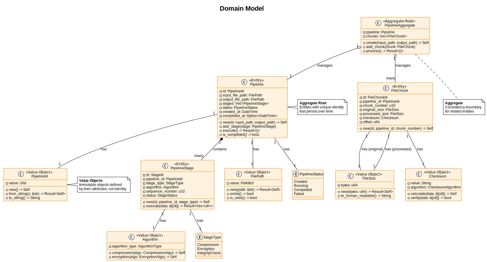

Pipeline Developer Guide
Version: 0.1.0 Date: October 2025 SPDX-License-Identifier: BSD-3-Clause License File: See the LICENSE file in the project root. Copyright: © 2025 Michael Gardner, A Bit of Help, Inc. Authors: Michael Gardner Status: Draft
Welcome
This is the comprehensive technical guide for the Optimized Adaptive Pipeline. Whether you're learning advanced Rust patterns, contributing to the project, or using the pipeline in production, this guide provides the depth you need.
How to Use This Guide
This guide follows a progressive disclosure approach - each section builds on previous ones:
Start Here: Fundamentals
If you're new to the pipeline, start with Fundamentals. This section introduces core concepts in an accessible way:
- What pipelines do and why they're useful
- Key terminology and concepts
- How stages work together
- Basic configuration
- Running your first pipeline
Time commitment: 30-45 minutes
Building Understanding: Architecture
Once you understand the basics, explore the Architecture section. This explains how the pipeline is designed:
- Layered architecture (Domain, Application, Infrastructure)
- Domain-Driven Design concepts
- Design patterns in use (Repository, Service, Adapter, Observer)
- Dependency management
This section bridges the gap between basic usage and implementation details.
Time commitment: 1-2 hours
Going Deeper: Implementation
The Implementation section covers how specific features work:
- Stage processing details
- Compression and encryption
- Data persistence and schema management
- File I/O and chunking
- Metrics and observability
Perfect for contributors or those adapting the pipeline for specific needs.
Time commitment: 2-3 hours
Expert Level: Advanced Topics
For optimization and extension, the Advanced Topics section covers:
- Concurrency model and thread pooling
- Performance optimization techniques
- Creating custom stages and algorithms
Time commitment: 2-4 hours depending on depth
Reference: Formal Documentation
The Formal Documentation section contains:
- Software Requirements Specification (SRS)
- Software Design Document (SDD)
- Test Strategy (STP)
These are comprehensive reference documents.
Documentation Scope
Following our "reasonable" principle, this guide focuses on:
✅ What you need to know to use, contribute to, or extend the pipeline ✅ Why decisions were made with just enough context ✅ How to accomplish tasks with practical examples ✅ Advanced Rust patterns demonstrated in real code
We intentionally do not include:
❌ Rust language tutorials (see The Rust Book) ❌ General programming concepts ❌ Third-party library documentation (links provided instead) ❌ Exhaustive algorithm details (high-level explanations with references)
Learning Path Recommendations
I want to use the pipeline
→ Read Fundamentals → Skip to Implementation for specific features
I want to contribute
→ Read Fundamentals + Architecture (full sections) → Review relevant Implementation chapters → Check Contributing Guide
I want to learn advanced Rust patterns
→ Focus on Architecture section (patterns) → Review Implementation for real-world examples → Study Advanced Topics for concurrency/performance
I'm building something similar
→ Read Architecture + Implementation → Study formal documentation (SRS/SDD) → Review source code with this guide as reference
Conventions Used
Throughout this guide:
- Code examples are complete and runnable unless marked otherwise
- File paths use format
module/file.rs:linefor source references - Diagrams are in PlantUML (SVG rendered in book)
- Callouts highlight important information:
Note: Additional helpful information
Warning: Important caveats or gotchas
Example: Practical code demonstration
Ready to Start?
Choose your path:
- New users: What is a Pipeline?
- Contributors: Architecture Overview
- Specific feature: Use search (press 's') or browse table of contents
Let's dive in!
What is a Pipeline?
Version: 0.1.0 Date: October 2025 SPDX-License-Identifier: BSD-3-Clause License File: See the LICENSE file in the project root. Copyright: © 2025 Michael Gardner, A Bit of Help, Inc. Authors: Michael Gardner Status: Draft
Introduction to pipelines and their purpose.
What is a Pipeline?
A pipeline is a series of connected processing stages that transform data from input to output. Each stage performs a specific operation, and data flows through the stages sequentially or in parallel.
Think of it like a factory assembly line:
- Raw materials (input file) enter at one end
- Each station (stage) performs a specific task
- The finished product (processed file) exits at the other end
Real-World Analogy
Assembly Line
Imagine an automobile assembly line:
Raw Materials → Welding → Painting → Assembly → Quality Check → Finished Car
In our pipeline system:
Input File → Compression → Encryption → Validation → Output File
Each stage:
- Receives data from the previous stage
- Performs its specific transformation
- Passes the result to the next stage
Why Use a Pipeline?
Modularity
Each stage does one thing well. You can:
- Add new stages easily
- Remove stages you don't need
- Reorder stages as needed
Example: Need encryption? Add an encryption stage. Don't need compression? Remove the compression stage.
Reusability
Stages can be used in multiple pipelines:
- Use the same compression stage in different workflows
- Share validation logic across projects
- Build libraries of reusable components
Testability
Each stage can be tested independently:
- Unit test individual stages
- Mock stage inputs/outputs
- Verify stage behavior in isolation
Scalability
Pipelines can process data efficiently:
- Process file chunks in parallel
- Distribute work across CPU cores
- Handle files of any size
Our Pipeline System
The Optimized Adaptive Pipeline provides:
File Processing: Transform files through configurable stages
- Input: Any file type
- Stages: Compression, encryption, validation
- Output: Processed
.adapipefile - Memory-mapped files for efficient processing of huge files
Flexibility: Configure stages for your needs
- Enable/disable stages
- Choose algorithms (Brotli, LZ4, Zstandard for compression)
- Set security levels (Public → Top Secret)
Performance: Handle large files efficiently
- Stream processing (low memory usage)
- Parallel chunk processing
- Optimized algorithms
Security: Protect sensitive data
- AES-256-GCM encryption
- Argon2 key derivation
- Integrity verification with checksums
Pipeline Flow
Here's how data flows through the pipeline:
- Input: Read file from disk
- Chunk: Split into manageable pieces (default 1MB)
- Process: Apply stages to each chunk
- Compress (optional)
- Encrypt (optional)
- Calculate checksum (always)
- Store: Write processed data and metadata
- Verify: Confirm integrity of output
What You Can Do
With this pipeline, you can:
✅ Compress files to save storage space ✅ Encrypt files to protect sensitive data ✅ Validate integrity to detect corruption ✅ Process large files without running out of memory ✅ Customize workflows with configurable stages ✅ Track metrics to monitor performance
Next Steps
Continue to:
- Core Concepts - Key terminology and ideas
- Pipeline Stages - Understanding stage types
- Configuration Basics - How to configure pipelines
Core Concepts
Version: 0.1.0 Date: October 2025 SPDX-License-Identifier: BSD-3-Clause License File: See the LICENSE file in the project root. Copyright: © 2025 Michael Gardner, A Bit of Help, Inc. Authors: Michael Gardner Status: Draft
Essential concepts for understanding the pipeline.
Key Terminology
Pipeline
A complete file processing workflow with:
- Unique ID: Every pipeline has a ULID identifier
- Input path: Source file to process
- Output path: Destination for processed data
- Stages: Ordered list of processing steps
- Status: Created → Running → Completed (or Failed)
Stage
An individual processing operation within a pipeline:
- Type: Compression, Encryption, or Integrity Check
- Algorithm: Specific implementation (e.g., Brotli, AES-256-GCM)
- Sequence: Order in the pipeline (1, 2, 3, ...)
- Configuration: Stage-specific settings
File Chunk
A portion of a file processed independently:
- Size: Configurable (default 1MB)
- Sequence: Chunk number (0, 1, 2, ...)
- Checksum: Integrity verification value
- Offset: Position in original file
Core Components
Entities
Pipeline Entity
#![allow(unused)] fn main() { Pipeline { id: PipelineId, input_file_path: FilePath, output_file_path: FilePath, stages: Vec<PipelineStage>, status: PipelineStatus, created_at: DateTime, } }
PipelineStage Entity
#![allow(unused)] fn main() { PipelineStage { id: StageId, pipeline_id: PipelineId, stage_type: StageType, algorithm: Algorithm, sequence_number: u32, } }
Value Objects
FilePath - Validated file system path
- Must exist (for input) or be writable (for output)
- Supports absolute and relative paths
- Cross-platform compatibility
FileSize - File size in bytes
- Human-readable display (KB, MB, GB)
- Validation for reasonable limits
- Efficient storage representation
Algorithm - Processing algorithm specification
- Compression: Brotli, LZ4, Zstandard
- Encryption: AES-256-GCM, ChaCha20-Poly1305
- Checksum: Blake3, SHA-256
Data Flow
Sequential Processing
Stages execute in order:
Input → Stage 1 → Stage 2 → Stage 3 → Output
Parallel Chunk Processing
Chunks process independently:
Chunk 0 ──┐
Chunk 1 ──┼→ All go through stages → Reassemble
Chunk 2 ──┘
This enables:
- Concurrency: Multiple chunks processed simultaneously
- Memory efficiency: Only active chunks in memory
- Scalability: Leverage multiple CPU cores
Pipeline Execution Sequence

- CLI receives command
- Pipeline Service creates pipeline
- File Processor reads input file
- For each chunk:
- Apply compression (if enabled)
- Apply encryption (if enabled)
- Calculate checksum (always)
- Store chunk metadata
- Write processed chunk
- Update pipeline status
- Return result to user
Domain Model
Our domain model follows Domain-Driven Design principles:

Aggregates
Pipeline Aggregate - The root entity
- Contains Pipeline entity
- Manages associated FileChunks
- Enforces business rules
- Ensures consistency
Relationships
- Pipeline has many PipelineStages (1:N)
- Pipeline processes FileChunks (1:N)
- FileChunk belongs to Pipeline (N:1)
- PipelineStage uses Algorithm (N:1)
Processing Guarantees
Integrity
Every chunk has a checksum:
- Calculated after processing
- Verified on read/restore
- Detects any corruption
Atomicity
Pipeline operations are transactional:
- All stages complete, or none do
- Metadata stored consistently
- No partial outputs on failure
Durability
Processed data is persisted:
- SQLite database for metadata
- File system for binary data
- Recoverable after crashes
Next Steps
Continue to:
- Pipeline Stages - Types of stages available
- Configuration Basics - How to configure pipelines
- Running Your First Pipeline - Hands-on tutorial
Pipeline Stages
Version: 1.0 Date: 2025-01-04 SPDX-License-Identifier: BSD-3-Clause License File: See the LICENSE file in the project root. Copyright: © 2025 Michael Gardner, A Bit of Help, Inc. Authors: Michael Gardner, Claude Code Status: Active
What is a Stage?
A pipeline stage is a single processing operation that transforms data in a specific way. Each stage performs one well-defined task, like compressing data, encrypting it, or verifying its integrity.
Think of stages like workstations on an assembly line. Each workstation has specialized tools and performs one specific operation. The product moves from one workstation to the next until it's complete.
Stage Types
Our pipeline supports three main categories of stages:
1. Compression Stages
Compression stages reduce the size of your data. This is useful for:
- Saving disk space
- Reducing network bandwidth
- Faster file transfers
- Lower storage costs
Available Compression Algorithms:
-
Brotli - Best compression ratio, slower speed
- Best for: Text files, web content, logs
- Performance: Excellent compression, moderate speed
- Memory: Higher memory usage
-
Gzip - General-purpose compression
- Best for: General files, wide compatibility
- Performance: Good balance of speed and ratio
- Memory: Moderate memory usage
-
Zstandard (zstd) - Modern, fast compression
- Best for: Large files, real-time compression
- Performance: Excellent speed and ratio
- Memory: Efficient memory usage
-
LZ4 - Extremely fast compression
- Best for: Real-time applications, live data streams
- Performance: Fastest compression, moderate ratio
- Memory: Low memory usage
2. Encryption Stages
Encryption stages protect your data by making it unreadable without the correct key. This is essential for:
- Protecting sensitive information
- Compliance with security regulations
- Secure data transmission
- Privacy protection
Available Encryption Algorithms:
-
AES-256-GCM - Industry standard encryption
- Key Size: 256 bits (32 bytes)
- Security: FIPS approved, very strong
- Performance: Excellent with AES-NI hardware support
- Authentication: Built-in integrity verification
-
ChaCha20-Poly1305 - Modern stream cipher
- Key Size: 256 bits (32 bytes)
- Security: Strong, constant-time implementation
- Performance: Consistent across all platforms
- Authentication: Built-in integrity verification
-
AES-128-GCM - Faster AES variant
- Key Size: 128 bits (16 bytes)
- Security: Still very secure, slightly faster
- Performance: Faster than AES-256
- Authentication: Built-in integrity verification
3. Integrity Verification Stages
Integrity stages ensure your data hasn't been corrupted or tampered with. They create a unique "fingerprint" of your data called a checksum or hash.
Available Hashing Algorithms:
-
SHA-256 - Industry standard hashing
- Output: 256 bits (32 bytes)
- Security: Cryptographically secure
- Performance: Good balance
- Use Case: General integrity verification
-
SHA-512 - Stronger SHA variant
- Output: 512 bits (64 bytes)
- Security: Stronger than SHA-256
- Performance: Good on 64-bit systems
- Use Case: High-security applications
-
BLAKE3 - Modern, high-performance hashing
- Output: 256 bits (32 bytes)
- Security: Strong security properties
- Performance: Very fast
- Use Case: High-performance applications
Stage Configuration
Each stage has a configuration that specifies how it should process data:
#![allow(unused)] fn main() { use pipeline_domain::entities::{PipelineStage, StageType, StageConfiguration}; use std::collections::HashMap; // Example: Compression stage let compression_stage = PipelineStage::new( "compress".to_string(), StageType::Compression, StageConfiguration::new( "zstd".to_string(), // algorithm name HashMap::new(), // parameters false, // parallel processing ), 0, // stage order )?; // Example: Encryption stage let encryption_stage = PipelineStage::new( "encrypt".to_string(), StageType::Encryption, StageConfiguration::new( "aes256gcm".to_string(), HashMap::new(), false, ), 1, // stage order )?; // Example: Integrity verification stage let integrity_stage = PipelineStage::new( "verify".to_string(), StageType::Checksum, StageConfiguration::new( "sha256".to_string(), HashMap::new(), false, ), 2, // stage order )?; }
Stage Execution Order
Stages execute in the order you define them. The output of one stage becomes the input to the next stage.
Recommended Order for Processing:
- Compress (reduce size first)
- Encrypt (protect compressed data)
- Verify integrity (create checksum of encrypted data)
For Restoration (reverse order):
- Verify integrity (check encrypted data)
- Decrypt (recover compressed data)
- Decompress (restore original file)
Processing Pipeline:
Input File → Compress → Encrypt → Verify → Output File
Restoration Pipeline:
Input File → Verify → Decrypt → Decompress → Output File
Combining Stages
You can combine stages in different ways depending on your needs:
Maximum Security
#![allow(unused)] fn main() { vec![ PipelineStage::new( "compress".to_string(), StageType::Compression, StageConfiguration::new("brotli".to_string(), HashMap::new(), false), 0, )?, PipelineStage::new( "encrypt".to_string(), StageType::Encryption, StageConfiguration::new("aes256gcm".to_string(), HashMap::new(), false), 1, )?, PipelineStage::new( "verify".to_string(), StageType::Checksum, StageConfiguration::new("blake3".to_string(), HashMap::new(), false), 2, )?, ] }
Maximum Speed
#![allow(unused)] fn main() { vec![ PipelineStage::new( "compress".to_string(), StageType::Compression, StageConfiguration::new("lz4".to_string(), HashMap::new(), false), 0, )?, PipelineStage::new( "encrypt".to_string(), StageType::Encryption, StageConfiguration::new("chacha20poly1305".to_string(), HashMap::new(), false), 1, )?, ] }
Balanced Approach
#![allow(unused)] fn main() { vec![ PipelineStage::new( "compress".to_string(), StageType::Compression, StageConfiguration::new("zstd".to_string(), HashMap::new(), false), 0, )?, PipelineStage::new( "encrypt".to_string(), StageType::Encryption, StageConfiguration::new("aes256gcm".to_string(), HashMap::new(), false), 1, )?, PipelineStage::new( "verify".to_string(), StageType::Checksum, StageConfiguration::new("sha256".to_string(), HashMap::new(), false), 2, )?, ] }
Parallel Processing
Stages process file chunks in parallel for better performance:
File Split into Chunks:
┌──────┬──────┬──────┬──────┐
│Chunk1│Chunk2│Chunk3│Chunk4│
└──┬───┴──┬───┴──┬───┴──┬───┘
│ │ │ │
▼ ▼ ▼ ▼
┌──────┬──────┬──────┬──────┐
│Stage1│Stage1│Stage1│Stage1│ (Parallel)
└──┬───┴──┬───┴──┬───┴──┬───┘
▼ ▼ ▼ ▼
┌──────┬──────┬──────┬──────┐
│Stage2│Stage2│Stage2│Stage2│ (Parallel)
└──┬───┴──┬───┴──┬───┴──┬───┘
│ │ │ │
▼ ▼ ▼ ▼
Combined Output File
This parallel processing allows the pipeline to utilize multiple CPU cores for faster throughput.
Stage Validation
The pipeline validates stages at creation time:
- Algorithm compatibility: Ensures compression algorithms are only used in compression stages
- Stage order: Verifies stages have unique, sequential order numbers
- Configuration validity: Checks all stage parameters are valid
- Dependency checks: Ensures restoration pipelines match processing pipelines
#![allow(unused)] fn main() { // This will fail - wrong algorithm for stage type PipelineStage::new( "compress".to_string(), StageType::Compression, StageConfiguration::new( "aes256gcm".to_string(), // ❌ Encryption algorithm in compression stage! HashMap::new(), false, ), 0, ) // ❌ Error: Algorithm not compatible with stage type }
Extending with Custom Stages
The pipeline can be easily extended through custom stages to meet your specific requirements. You can create custom stages that implement your own processing logic, integrate third-party tools, or add specialized transformations.
For detailed information on implementing custom stages, see Custom Stages in the Advanced Topics section.
Next Steps
Now that you understand pipeline stages, you can learn about:
- Configuration - How to configure pipelines and stages
- Your First Pipeline - Run your first pipeline
- Architecture Overview - Deeper dive into the architecture
- Custom Stages - Create your own custom stage implementations
Configuration Basics
Version: 1.0 Date: 2025-01-04 SPDX-License-Identifier: BSD-3-Clause License File: See the LICENSE file in the project root. Copyright: © 2025 Michael Gardner, A Bit of Help, Inc. Authors: Michael Gardner, Claude Code Status: Active
Overview
The pipeline system provides flexible configuration through command-line options, environment variables, and configuration files. This chapter covers the basics of configuring your pipelines.
Command-Line Interface
The pipeline CLI provides several commands for managing and running pipelines.
Basic Commands
Process a File
pipeline process \
--input /path/to/input.txt \
--output /path/to/output.bin \
--pipeline my-pipeline
Create a Pipeline
pipeline create \
--name my-pipeline \
--stages compression,encryption,integrity
List Pipelines
pipeline list
Show Pipeline Details
pipeline show my-pipeline
Delete a Pipeline
pipeline delete my-pipeline --force
Performance Options
CPU Threads
Control the number of worker threads for CPU-bound operations (compression, encryption):
pipeline process \
--input file.txt \
--output file.bin \
--pipeline my-pipeline \
--cpu-threads 8
Default: Number of CPU cores - 1 (reserves one core for I/O)
Tips:
- Too high: CPU thrashing, context switching overhead
- Too low: Underutilized cores, slower processing
- Monitor CPU saturation metrics to tune
I/O Threads
Control the number of concurrent I/O operations:
pipeline process \
--input file.txt \
--output file.bin \
--pipeline my-pipeline \
--io-threads 24
Default: Device-specific (NVMe: 24, SSD: 12, HDD: 4)
Storage Type Detection:
pipeline process \
--input file.txt \
--output file.bin \
--pipeline my-pipeline \
--storage-type nvme # or ssd, hdd
Channel Depth
Control backpressure in the pipeline stages:
pipeline process \
--input file.txt \
--output file.bin \
--pipeline my-pipeline \
--channel-depth 8
Default: 4
Tips:
- Lower values: Less memory, may cause pipeline stalls
- Higher values: More buffering, higher memory usage
- Optimal value depends on chunk processing time and I/O latency
Chunk Size
Configure the size of file chunks for parallel processing:
pipeline process \
--input file.txt \
--output file.bin \
--pipeline my-pipeline \
--chunk-size-mb 10
Default: Automatically determined based on file size and available resources
Global Options
Verbose Logging
Enable detailed logging output:
pipeline --verbose process \
--input file.txt \
--output file.bin \
--pipeline my-pipeline
Configuration File
Use a custom configuration file:
pipeline --config /path/to/config.toml process \
--input file.txt \
--output file.bin \
--pipeline my-pipeline
Configuration Files
Configuration files use TOML format and allow you to save pipeline settings for reuse.
Basic Configuration
[pipeline]
name = "my-pipeline"
stages = ["compression", "encryption", "integrity"]
[performance]
cpu_threads = 8
io_threads = 24
channel_depth = 4
[processing]
chunk_size_mb = 10
Algorithm Configuration
[stages.compression]
algorithm = "zstd"
[stages.encryption]
algorithm = "aes-256-gcm"
key_file = "/path/to/keyfile"
[stages.integrity]
algorithm = "sha256"
Complete Example
# Pipeline configuration example
[pipeline]
name = "secure-archival"
description = "High compression with encryption for archival"
[stages.compression]
algorithm = "brotli"
level = 11 # Maximum compression
[stages.encryption]
algorithm = "aes-256-gcm"
key_derivation = "argon2"
[stages.integrity]
algorithm = "blake3"
[performance]
cpu_threads = 16
io_threads = 24
channel_depth = 8
storage_type = "nvme"
[processing]
chunk_size_mb = 64
parallel_workers = 16
Using Configuration Files
# Use a configuration file
pipeline --config secure-archival.toml process \
--input large-dataset.tar \
--output large-dataset.bin
# Override configuration file settings
pipeline --config secure-archival.toml \
--cpu-threads 8 \
process --input file.txt --output file.bin
Environment Variables
Environment variables provide another way to configure the pipeline:
# Set performance defaults
export PIPELINE_CPU_THREADS=8
export PIPELINE_IO_THREADS=24
export PIPELINE_CHANNEL_DEPTH=8
# Set default chunk size
export PIPELINE_CHUNK_SIZE_MB=10
# Enable verbose logging
export PIPELINE_VERBOSE=true
# Run pipeline
pipeline process --input file.txt --output file.bin --pipeline my-pipeline
Configuration Priority
When the same setting is configured in multiple places, the following priority applies (highest to lowest):
- Command-line arguments - Explicit flags like
--cpu-threads - Environment variables -
PIPELINE_*variables - Configuration file - Settings from
--configfile - Default values - Built-in intelligent defaults
Example:
# Config file says cpu_threads = 8
# Environment says PIPELINE_CPU_THREADS=12
# Command line says --cpu-threads=16
# Result: Uses 16 (command-line wins)
Performance Tuning Guidelines
For Maximum Speed
- Use LZ4 compression
- Use ChaCha20-Poly1305 encryption
- Increase CPU threads to match cores
- Use large chunks (32-64 MB)
- Higher channel depth (8-16)
pipeline process \
--input file.txt \
--output file.bin \
--pipeline speed-pipeline \
--cpu-threads 16 \
--chunk-size-mb 64 \
--channel-depth 16
For Maximum Compression
- Use Brotli compression
- Smaller chunks for better compression ratio
- More CPU threads for parallel compression
pipeline process \
--input file.txt \
--output file.bin \
--pipeline compression-pipeline \
--cpu-threads 16 \
--chunk-size-mb 4
For Resource-Constrained Systems
- Reduce CPU and I/O threads
- Smaller chunks
- Lower channel depth
pipeline process \
--input file.txt \
--output file.bin \
--pipeline minimal-pipeline \
--cpu-threads 2 \
--io-threads 4 \
--chunk-size-mb 2 \
--channel-depth 2
Next Steps
Now that you understand configuration, you're ready to:
- Run Your First Pipeline - Step-by-step tutorial
- Learn About Stages - Deep dive into pipeline stages
- Explore Architecture - Understand the system design
Running Your First Pipeline
Version: 1.0 Date: 2025-01-04 SPDX-License-Identifier: BSD-3-Clause License File: See the LICENSE file in the project root. Copyright: © 2025 Michael Gardner, A Bit of Help, Inc. Authors: Michael Gardner, Claude Code Status: Active
Prerequisites
Before running your first pipeline, ensure you have:
-
Pipeline binary - Built and available in your PATH
cargo build --release cp target/release/pipeline /usr/local/bin/ # or add to PATH -
Test file - A sample file to process
echo "Hello, Pipeline World!" > test.txt -
Permissions - Read/write access to input and output directories
Quick Start (5 minutes)
Let's run a simple compression and encryption pipeline in 3 steps:
Step 1: Create a Pipeline
pipeline create \
--name my-first-pipeline \
--stages compression,encryption
You should see output like:
✓ Created pipeline: my-first-pipeline
Stages: compression (zstd), encryption (aes-256-gcm)
Step 2: Process a File
pipeline process \
--input test.txt \
--output test.bin \
--pipeline my-first-pipeline
You should see progress output:
Processing: test.txt
Pipeline: my-first-pipeline
Stage 1/2: Compression (zstd)... ✓
Stage 2/2: Encryption (aes-256-gcm)... ✓
Output: test.bin (24 bytes)
Time: 0.05s
Step 3: Restore the File
pipeline restore \
--input test.bin \
--output restored.txt
Verify the restoration:
diff test.txt restored.txt
# No output = files are identical ✓
Detailed Walkthrough
Let's explore each step in more detail.
Creating Pipelines
Basic Pipeline
pipeline create \
--name basic \
--stages compression
This creates a simple compression-only pipeline using default settings (zstd compression).
Secure Pipeline
pipeline create \
--name secure \
--stages compression,encryption,integrity
This creates a complete security pipeline with:
- Compression (reduces size)
- Encryption (protects data)
- Integrity verification (detects tampering)
Save Pipeline Configuration
pipeline create \
--name archival \
--stages compression,encryption \
--output archival-pipeline.toml
This saves the pipeline configuration to a file for reuse.
Processing Files
Basic Processing
# Process a file
pipeline process \
--input large-file.log \
--output large-file.bin \
--pipeline secure
With Performance Options
# Process with custom settings
pipeline process \
--input large-file.log \
--output large-file.bin \
--pipeline secure \
--cpu-threads 8 \
--chunk-size-mb 32
With Verbose Logging
# See detailed progress
pipeline --verbose process \
--input large-file.log \
--output large-file.bin \
--pipeline secure
Restoring Files
The pipeline automatically detects the processing stages from the output file's metadata:
# Restore automatically reverses all stages
pipeline restore \
--input large-file.bin \
--output restored-file.log
The system will:
- Read metadata from the file header
- Apply stages in reverse order
- Verify integrity if available
- Restore original file
Managing Pipelines
List All Pipelines
pipeline list
Output:
Available Pipelines:
- my-first-pipeline (compression, encryption)
- secure (compression, encryption, integrity)
- archival (compression, encryption)
Show Pipeline Details
pipeline show secure
Output:
Pipeline: secure
Stage 1: Compression (zstd)
Stage 2: Encryption (aes-256-gcm)
Stage 3: Integrity (sha256)
Created: 2025-01-04 10:30:00
Delete a Pipeline
pipeline delete my-first-pipeline --force
Understanding Output
Successful Processing
When processing completes successfully:
Processing: test.txt
Pipeline: my-first-pipeline
Stage 1/2: Compression (zstd)... ✓
Stage 2/2: Encryption (aes-256-gcm)... ✓
Statistics:
Input size: 1,024 KB
Output size: 512 KB
Compression ratio: 50%
Processing time: 0.15s
Throughput: 6.8 MB/s
Output: test.bin
Performance Metrics
With --verbose flag, you'll see detailed metrics:
Pipeline Execution Metrics:
Chunks processed: 64
Parallel workers: 8
Average chunk time: 2.3ms
CPU utilization: 87%
I/O wait: 3%
Stage Breakdown:
Compression: 0.08s (53%)
Encryption: 0.05s (33%)
I/O: 0.02s (14%)
Error Messages
File Not Found
Error: Input file not found: test.txt
Check the file path and try again
Permission Denied
Error: Permission denied: /protected/output.bin
Ensure you have write access to the output directory
Invalid Pipeline
Error: Pipeline not found: nonexistent
Use 'pipeline list' to see available pipelines
Common Scenarios
Scenario 1: Compress Large Log Files
# Create compression pipeline
pipeline create --name logs --stages compression
# Process log files
pipeline process \
--input app.log \
--output app.log.bin \
--pipeline logs \
--chunk-size-mb 64
# Compression ratio is typically 70-90% for text logs
Scenario 2: Secure Sensitive Files
# Create secure pipeline with all protections
pipeline create --name sensitive --stages compression,encryption,integrity
# Process sensitive file
pipeline process \
--input customer-data.csv \
--output customer-data.bin \
--pipeline sensitive
# File is now compressed, encrypted, and tamper-evident
Scenario 3: High-Performance Batch Processing
# Process multiple files with optimized settings
for file in data/*.csv; do
pipeline process \
--input "$file" \
--output "processed/$(basename $file).bin" \
--pipeline fast \
--cpu-threads 16 \
--chunk-size-mb 128 \
--channel-depth 16
done
Scenario 4: Restore and Verify
# Restore file
pipeline restore \
--input customer-data.bin \
--output customer-data-restored.csv
# Verify restoration
sha256sum customer-data.csv customer-data-restored.csv
# Both checksums should match
Testing Your Pipeline
Create Test Data
# Create a test file
dd if=/dev/urandom of=test-10mb.bin bs=1M count=10
# Calculate original checksum
sha256sum test-10mb.bin > original.sha256
Process and Restore
# Process the file
pipeline process \
--input test-10mb.bin \
--output test-10mb.processed \
--pipeline my-first-pipeline
# Restore the file
pipeline restore \
--input test-10mb.processed \
--output test-10mb.restored
Verify Integrity
# Verify restored file matches original
sha256sum -c original.sha256
# Should output: test-10mb.bin: OK
Next Steps
Congratulations! You've run your first pipeline. Now you can:
-
Explore Advanced Features
- Architecture Overview - Understand the system design
- Implementation Details - Learn about algorithms
- Performance Tuning - Optimize for your use case
-
Learn More About Configuration
- Configuration Guide - Detailed configuration options
- Stage Types - Available processing stages
-
Build Custom Pipelines
- Experiment with different stage combinations
- Test different algorithms for your workload
- Benchmark performance with your data
Architecture Overview
Version: 0.1.0 Date: October 2025 SPDX-License-Identifier: BSD-3-Clause License File: See the LICENSE file in the project root. Copyright: © 2025 Michael Gardner, A Bit of Help, Inc. Authors: Michael Gardner Status: Draft
High-level architectural overview of the pipeline system.
Design Philosophy
The Optimized Adaptive Pipeline is built on three foundational architectural patterns:
- Clean Architecture - Organizing code by dependency direction
- Domain-Driven Design (DDD) - Modeling the business domain
- Hexagonal Architecture - Isolating business logic from infrastructure
These patterns work together to create a maintainable, testable, and flexible system.
Layered Architecture
The pipeline follows a strict layered architecture where dependencies flow inward:

Layer Overview
Presentation Layer (Outermost)
- CLI interface for user interaction
- Configuration management
- Request/response handling
Application Layer
- Use cases and application services
- Pipeline orchestration
- File processing coordination
Domain Layer (Core)
- Business logic and rules
- Entities (Pipeline, PipelineStage)
- Value objects (FilePath, FileSize, Algorithm)
- Domain services
Infrastructure Layer (Outermost)
- Database implementations (SQLite)
- File system operations
- External system adapters
- Metrics collection
Clean Architecture
Clean Architecture ensures that business logic doesn't depend on implementation details:

Key Principles
Dependency Rule: Source code dependencies point only inward, toward higher-level policies.
- High-level policy (Application layer) defines what the system does
- Abstractions (Traits) define how components interact
- Low-level details (Infrastructure) implements the abstractions
This means:
- Domain layer has zero external dependencies
- Application layer depends only on domain traits
- Infrastructure implements domain interfaces
Benefits
✅ Testability: Business logic can be tested without database or file system ✅ Flexibility: Swap implementations (SQLite → PostgreSQL) without changing business logic ✅ Independence: Domain logic doesn't know about HTTP, databases, or file formats
Hexagonal Architecture (Ports and Adapters)
The pipeline uses Hexagonal Architecture to isolate the core business logic:

Core Components
Application Core
- Domain model (entities, value objects)
- Business logic (pipeline orchestration)
- Ports (trait definitions)
Primary Adapters (Driving)
- CLI adapter - drives the application
- HTTP adapter - future API endpoints
Secondary Adapters (Driven)
- SQLite repository adapter - driven by the application
- File system adapter - driven by the application
- Prometheus metrics adapter - driven by the application
How It Works
- User interacts with Primary Adapter (CLI)
- Primary Adapter calls Application Core through defined ports
- Application Core uses Ports (traits) to interact with infrastructure
- Secondary Adapters implement these ports
- Adapters connect to external systems (database, files)
Example Flow:
CLI → Pipeline Service → Repository Port → SQLite Adapter → Database
The application core never knows it's using SQLite - it only knows the Repository trait.
Architecture Integration
These three patterns work together:
Clean Architecture: Layers with dependency direction
Domain-Driven Design: Business modeling within layers
Hexagonal Architecture: Ports/Adapters at layer boundaries
In Practice:
- Domain layer contains pure business logic (DDD entities)
- Application layer orchestrates use cases (Clean Architecture)
- Infrastructure implements ports (Hexagonal Architecture)
This combination provides:
- Clear separation of concerns
- Testable business logic
- Flexible infrastructure
- Maintainable codebase
Next Steps
Continue to:
- Layered Architecture Details - Deep dive into each layer
- Domain Model - Understanding entities and value objects
- Design Patterns - Patterns used throughout the codebase
Layered Architecture
Version: 1.0 Date: 2025-01-04 SPDX-License-Identifier: BSD-3-Clause License File: See the LICENSE file in the project root. Copyright: © 2025 Michael Gardner, A Bit of Help, Inc. Authors: Michael Gardner, Claude Code Status: Active
Overview
The pipeline system is organized into four distinct layers, each with specific responsibilities and clear boundaries. This layered architecture provides separation of concerns, testability, and maintainability.
The Four Layers
┌─────────────────────────────────────────┐
│ Presentation Layer │ ← User interface (CLI)
│ - CLI commands │
│ - User interaction │
└─────────────────┬───────────────────────┘
│ depends on
┌─────────────────▼───────────────────────┐
│ Application Layer │ ← Use cases, orchestration
│ - Use cases │
│ - Application services │
│ - Commands/Queries │
└─────────────────┬───────────────────────┘
│ depends on
┌─────────────────▼───────────────────────┐
│ Domain Layer │ ← Core business logic
│ - Entities │
│ - Value objects │
│ - Domain services (interfaces) │
│ - Business rules │
└─────────────────△───────────────────────┘
│ implements interfaces
┌─────────────────┴───────────────────────┐
│ Infrastructure Layer │ ← External dependencies
│ - Database repositories │
│ - File I/O │
│ - External services │
│ - Encryption/Compression │
└─────────────────────────────────────────┘
Dependency Rule
The dependency rule is the most important principle in layered architecture:
Dependencies flow inward toward the domain layer.
- Presentation depends on Application
- Application depends on Domain
- Infrastructure depends on Domain (via interfaces)
- Domain depends on nothing (pure business logic)
This means:
- ✅ Application can use Domain types
- ✅ Infrastructure implements Domain interfaces
- ❌ Domain cannot use Application types
- ❌ Domain cannot use Infrastructure types
Domain Layer
Purpose
The domain layer contains the core business logic and is the heart of the application. It's completely independent of external concerns like databases, user interfaces, or frameworks.
Responsibilities
- Define business entities and value objects
- Enforce business rules and invariants
- Provide domain service interfaces
- Emit domain events
- Define repository interfaces
Structure
pipeline-domain/
├── entities/
│ ├── pipeline.rs # Pipeline entity
│ ├── pipeline_stage.rs # Stage entity
│ ├── processing_context.rs # Processing state
│ └── security_context.rs # Security management
├── value_objects/
│ ├── algorithm.rs # Algorithm value object
│ ├── chunk_size.rs # Chunk size validation
│ ├── file_path.rs # Type-safe paths
│ └── pipeline_id.rs # Type-safe IDs
├── services/
│ ├── compression_service.rs # Compression interface
│ ├── encryption_service.rs # Encryption interface
│ └── checksum_service.rs # Checksum interface
├── repositories/
│ └── pipeline_repository.rs # Repository interface
├── events/
│ └── domain_events.rs # Business events
└── error/
└── pipeline_error.rs # Domain errors
Example
#![allow(unused)] fn main() { // Domain layer - pure business logic pub struct Pipeline { id: PipelineId, name: String, stages: Vec<PipelineStage>, // ... no database or UI dependencies } impl Pipeline { pub fn new(name: String, stages: Vec<PipelineStage>) -> Result<Self, PipelineError> { // Business rule: must have at least one stage if stages.is_empty() { return Err(PipelineError::InvalidConfiguration( "Pipeline must have at least one stage".to_string() )); } // Create pipeline with validated business rules Ok(Self { id: PipelineId::new(), name, stages, // ... }) } } }
Key Characteristics
- No external dependencies - Only standard library and domain types
- Highly testable - Can test without databases or files
- Portable - Can be used in any context (web, CLI, embedded)
- Stable - Rarely changes except for business requirement changes
Application Layer
Purpose
The application layer orchestrates the execution of business use cases. It coordinates domain objects and delegates to domain services to accomplish specific tasks.
Responsibilities
- Implement use cases (user actions)
- Coordinate domain objects
- Manage transactions
- Handle application-specific workflows
- Emit application events
Structure
pipeline/src/application/
├── use_cases/
│ ├── process_file.rs # File processing use case
│ ├── restore_file.rs # File restoration use case
│ └── create_pipeline.rs # Pipeline creation
├── services/
│ ├── pipeline_service.rs # Pipeline orchestration
│ ├── file_processor_service.rs # File processing
│ └── transactional_chunk_writer.rs # Chunk writing
├── commands/
│ └── commands.rs # CQRS commands
└── utilities/
└── generic_service_base.rs # Service helpers
Example
#![allow(unused)] fn main() { // Application layer - orchestrates domain objects pub struct FileProcessorService { pipeline_repo: Arc<dyn PipelineRepository>, compression: Arc<dyn CompressionService>, encryption: Arc<dyn EncryptionService>, } impl FileProcessorService { pub async fn process_file( &self, pipeline_id: &PipelineId, input_path: &FilePath, output_path: &FilePath, ) -> Result<ProcessingMetrics, PipelineError> { // 1. Fetch pipeline from repository let pipeline = self.pipeline_repo .find_by_id(pipeline_id) .await? .ok_or(PipelineError::NotFound)?; // 2. Create processing context let context = ProcessingContext::new( pipeline.id().clone(), input_path.clone(), output_path.clone(), ); // 3. Process each stage for stage in pipeline.stages() { match stage.stage_type() { StageType::Compression => { self.compression.compress(/* ... */).await?; } StageType::Encryption => { self.encryption.encrypt(/* ... */).await?; } // ... more stages } } // 4. Return metrics Ok(context.metrics().clone()) } } }
Key Characteristics
- Thin layer - Delegates to domain for business logic
- Workflow coordination - Orchestrates multiple domain operations
- Transaction management - Ensures atomic operations
- No business logic - Business rules belong in domain layer
Infrastructure Layer
Purpose
The infrastructure layer provides concrete implementations of interfaces defined in the domain layer. It handles all external concerns like databases, file systems, and third-party services.
Responsibilities
- Implement repository interfaces
- Provide database access
- Handle file I/O operations
- Implement compression/encryption services
- Integrate with external systems
- Provide logging and metrics
Structure
pipeline/src/infrastructure/
├── repositories/
│ ├── sqlite_pipeline_repository.rs # SQLite implementation
│ └── stage_executor.rs # Stage execution
├── adapters/
│ ├── compression_service_adapter.rs # Compression implementation
│ ├── encryption_service_adapter.rs # Encryption implementation
│ └── repositories/
│ └── sqlite_repository_adapter.rs # Repository adapter
├── services/
│ └── binary_format_service.rs # File format handling
├── metrics/
│ ├── metrics_service.rs # Prometheus metrics
│ └── metrics_observer.rs # Metrics collection
├── logging/
│ └── observability_service.rs # Logging setup
└── config/
└── config_service.rs # Configuration management
Example
#![allow(unused)] fn main() { // Infrastructure layer - implements domain interfaces pub struct SQLitePipelineRepository { pool: SqlitePool, } #[async_trait] impl PipelineRepository for SQLitePipelineRepository { async fn find_by_id(&self, id: &PipelineId) -> Result<Option<Pipeline>, PipelineError> { // Database-specific code let row = sqlx::query_as::<_, PipelineRow>( "SELECT * FROM pipelines WHERE id = ?" ) .bind(id.to_string()) .fetch_optional(&self.pool) .await .map_err(|e| PipelineError::RepositoryError(e.to_string()))?; // Map database row to domain entity row.map(|r| self.to_domain_entity(r)).transpose() } async fn create(&self, pipeline: &Pipeline) -> Result<(), PipelineError> { // Convert domain entity to database row let row = self.to_persistence_model(pipeline); // Insert into database sqlx::query( "INSERT INTO pipelines (id, name, ...) VALUES (?, ?, ...)" ) .bind(&row.id) .bind(&row.name) .execute(&self.pool) .await .map_err(|e| PipelineError::RepositoryError(e.to_string()))?; Ok(()) } } }
Key Characteristics
- Implements domain interfaces - Provides concrete implementations
- Database access - Handles all persistence operations
- External integrations - Communicates with external systems
- Technology-specific - Uses specific libraries and frameworks
- Replaceable - Can swap implementations without changing domain
Presentation Layer
Purpose
The presentation layer handles user interaction and input/output. It translates user commands into application use cases and presents results back to the user.
Responsibilities
- Parse and validate user input
- Execute application use cases
- Format and display output
- Handle user interaction
- Map errors to user-friendly messages
Structure
pipeline/src/presentation/
├── mod.rs # Presentation module
└── (CLI is in main.rs)
Example
// Presentation layer - CLI interaction #[tokio::main] async fn main() -> std::process::ExitCode { // 1. Parse CLI arguments let cli = bootstrap::bootstrap_cli() .unwrap_or_else(|e| { eprintln!("Error: {}", e); std::process::exit(65); }); // 2. Set up dependencies (infrastructure) let db_pool = create_database_pool().await?; let pipeline_repo = Arc::new(SQLitePipelineRepository::new(db_pool)); let compression = Arc::new(CompressionServiceAdapter::new()); let file_processor = FileProcessorService::new(pipeline_repo, compression); // 3. Execute use case based on command let result = match cli.command { Commands::Process { input, output, pipeline } => { // Call application service file_processor.process_file(&pipeline, &input, &output).await } Commands::Create { name, stages } => { // Call application service create_pipeline_service.create(&name, stages).await } // ... more commands }; // 4. Handle result and display to user match result { Ok(_) => { println!("✓ Processing completed successfully"); ExitCode::SUCCESS } Err(e) => { eprintln!("✗ Error: {}", e); ExitCode::FAILURE } } }
Key Characteristics
- Thin layer - Minimal logic, delegates to application
- User-facing - Handles all user interaction
- Input validation - Validates user input before processing
- Error formatting - Converts technical errors to user-friendly messages
Layer Interactions
Example: Processing a File
Here's how the layers work together to process a file:
1. Presentation Layer (CLI)
↓ User runs: pipeline process --input file.txt --output file.bin --pipeline my-pipeline
├─ Parse command-line arguments
├─ Validate input parameters
└─ Call Application Service
2. Application Layer (FileProcessorService)
↓ process_file(pipeline_id, input_path, output_path)
├─ Fetch Pipeline from Repository (Infrastructure)
├─ Create ProcessingContext (Domain)
├─ For each stage:
│ ├─ Call CompressionService (Infrastructure)
│ ├─ Call EncryptionService (Infrastructure)
│ └─ Update metrics (Domain)
└─ Return ProcessingMetrics (Domain)
3. Domain Layer (Pipeline, ProcessingContext)
↓ Enforce business rules
├─ Validate stage compatibility
├─ Enforce chunk sequencing
└─ Calculate metrics
4. Infrastructure Layer (Repositories, Services)
↓ Handle external operations
├─ Query SQLite database
├─ Read/write files
├─ Compress data (brotli, zstd, etc.)
└─ Encrypt data (AES, ChaCha20)
Benefits of Layered Architecture
Separation of Concerns
Each layer has a single, well-defined responsibility. This makes the code easier to understand and maintain.
Testability
- Domain Layer: Test business logic without any infrastructure
- Application Layer: Test workflows with mock repositories
- Infrastructure Layer: Test database operations independently
- Presentation Layer: Test user interaction separately
Flexibility
You can change infrastructure (e.g., swap SQLite for PostgreSQL) without touching domain or application layers.
Maintainability
Changes in one layer typically don't affect other layers, reducing the risk of breaking existing functionality.
Parallel Development
Teams can work on different layers simultaneously without conflicts.
Common Pitfalls
❌ Breaking the Dependency Rule
#![allow(unused)] fn main() { // WRONG: Domain depending on infrastructure pub struct Pipeline { id: PipelineId, db_connection: SqlitePool, // ❌ Database dependency in domain! } }
#![allow(unused)] fn main() { // CORRECT: Domain independent of infrastructure pub struct Pipeline { id: PipelineId, name: String, stages: Vec<PipelineStage>, // ✅ Pure domain types } }
❌ Business Logic in Application Layer
#![allow(unused)] fn main() { // WRONG: Business logic in application impl FileProcessorService { pub async fn process_file(&self, pipeline: &Pipeline) -> Result<(), Error> { // ❌ Business rule in application layer! if pipeline.stages().is_empty() { return Err(Error::InvalidPipeline); } // ... } } }
#![allow(unused)] fn main() { // CORRECT: Business logic in domain impl Pipeline { pub fn new(name: String, stages: Vec<PipelineStage>) -> Result<Self, PipelineError> { // ✅ Business rule in domain layer if stages.is_empty() { return Err(PipelineError::InvalidConfiguration( "Pipeline must have at least one stage".to_string() )); } Ok(Self { /* ... */ }) } } }
❌ Direct Infrastructure Access from Presentation
// WRONG: Presentation accessing infrastructure directly async fn main() { let db_pool = create_database_pool().await?; // ❌ CLI directly using repository! let pipeline = db_pool.query("SELECT * FROM pipelines").await?; }
// CORRECT: Presentation using application services async fn main() { let file_processor = create_file_processor().await?; // ✅ CLI using application service let result = file_processor.process_file(&pipeline_id, &input, &output).await?; }
Next Steps
Now that you understand the layered architecture:
- Hexagonal Architecture - Ports and adapters pattern
- Dependency Inversion - Managing dependencies
- Domain Model - Deep dive into the domain layer
- Repository Pattern - Data persistence abstraction
Dependency Flow
Version: 0.1.0 Date: October 2025 SPDX-License-Identifier: BSD-3-Clause License File: See the LICENSE file in the project root. Copyright: © 2025 Michael Gardner, A Bit of Help, Inc. Authors: Michael Gardner Status: Draft
Understanding dependency direction and inversion.
Dependency Rule
TODO: Explain dependency direction
Dependency Inversion
TODO: Explain DIP application
Trait Abstractions
TODO: Explain trait usage
Domain Model
Version: 1.0 Date: 2025-01-04 SPDX-License-Identifier: BSD-3-Clause License File: See the LICENSE file in the project root. Copyright: © 2025 Michael Gardner, A Bit of Help, Inc. Authors: Michael Gardner, Claude Code Status: Active
Overview
The domain model is the heart of the pipeline system. It captures the core business concepts, rules, and behaviors using Domain-Driven Design (DDD) principles. This chapter explains how the domain model is structured and why it's designed this way.
Domain-Driven Design Principles
Domain-Driven Design (DDD) is a software development approach that emphasizes:
- Focus on the core domain - The business logic is the most important part
- Model-driven design - The domain model drives the software design
- Ubiquitous language - Shared vocabulary between developers and domain experts
- Bounded contexts - Clear boundaries between different parts of the system
Why DDD?
For a pipeline processing system, DDD provides:
- Clear separation between business logic and infrastructure
- Testable code - Domain logic can be tested without databases or files
- Flexibility - Easy to change infrastructure without touching business rules
- Maintainability - Business rules are explicit and well-organized
Core Domain Concepts
Entities
Entities are objects with a unique identity that persists through time. Two entities are equal if they have the same ID, even if all their other attributes differ.
Pipeline Entity
The central entity representing a file processing workflow.
#![allow(unused)] fn main() { pub struct Pipeline { id: PipelineId, // Unique identity name: String, // Human-readable name stages: Vec<PipelineStage>, // Ordered processing stages configuration: HashMap<String, String>, // Custom settings metrics: ProcessingMetrics, // Performance data archived: bool, // Lifecycle state created_at: DateTime<Utc>, // Creation timestamp updated_at: DateTime<Utc>, // Last modification } }
Key characteristics:
- Has unique
PipelineId - Can be modified while maintaining identity
- Enforces business rules (e.g., must have at least one stage)
- Automatically adds integrity verification stages
Example:
#![allow(unused)] fn main() { use pipeline_domain::Pipeline; // Two pipelines with same ID are equal, even if names differ let pipeline1 = Pipeline::new("Original Name", stages.clone())?; let pipeline2 = pipeline1.clone(); pipeline2.set_name("Different Name"); assert_eq!(pipeline1.id(), pipeline2.id()); // Same identity }
PipelineStage Entity
Represents a single processing operation within a pipeline.
#![allow(unused)] fn main() { pub struct PipelineStage { id: StageId, // Unique identity name: String, // Stage name stage_type: StageType, // Compression, Encryption, etc. configuration: StageConfiguration, // Algorithm and parameters order: usize, // Execution order } }
Stage Types:
Compression- Data compressionEncryption- Data encryptionIntegrity- Checksum verificationCustom- User-defined operations
ProcessingContext Entity
Manages the runtime execution state of a pipeline.
#![allow(unused)] fn main() { pub struct ProcessingContext { id: ProcessingContextId, // Unique identity pipeline_id: PipelineId, // Associated pipeline input_path: FilePath, // Input file output_path: FilePath, // Output file current_stage: usize, // Current stage index status: ProcessingStatus, // Running, Completed, Failed metrics: ProcessingMetrics, // Runtime metrics } }
SecurityContext Entity
Manages security and permissions for pipeline operations.
#![allow(unused)] fn main() { pub struct SecurityContext { id: SecurityContextId, // Unique identity user_id: UserId, // User performing operation security_level: SecurityLevel, // Required security level permissions: Vec<Permission>, // Granted permissions encryption_key_id: Option<EncryptionKeyId>, // Key for encryption } }
Value Objects
Value Objects are immutable objects defined by their attributes. Two value objects with the same attributes are considered equal.
Algorithm Value Object
Type-safe representation of processing algorithms.
#![allow(unused)] fn main() { pub struct Algorithm(String); impl Algorithm { // Predefined compression algorithms pub fn brotli() -> Self { /* ... */ } pub fn gzip() -> Self { /* ... */ } pub fn zstd() -> Self { /* ... */ } pub fn lz4() -> Self { /* ... */ } // Predefined encryption algorithms pub fn aes_256_gcm() -> Self { /* ... */ } pub fn chacha20_poly1305() -> Self { /* ... */ } // Predefined hashing algorithms pub fn sha256() -> Self { /* ... */ } pub fn blake3() -> Self { /* ... */ } } }
Key characteristics:
- Immutable after creation
- Self-validating (enforces format rules)
- Category detection (is_compression(), is_encryption())
- Type-safe (can't accidentally use wrong algorithm)
ChunkSize Value Object
Represents validated chunk sizes for file processing.
#![allow(unused)] fn main() { pub struct ChunkSize(usize); impl ChunkSize { pub fn new(bytes: usize) -> Result<Self, PipelineError> { // Validates size is within acceptable range if bytes < MIN_CHUNK_SIZE || bytes > MAX_CHUNK_SIZE { return Err(PipelineError::InvalidConfiguration(/* ... */)); } Ok(Self(bytes)) } pub fn from_megabytes(mb: usize) -> Result<Self, PipelineError> { Self::new(mb * 1024 * 1024) } } }
FileChunk Value Object
Immutable representation of a piece of file data.
#![allow(unused)] fn main() { pub struct FileChunk { id: FileChunkId, // Unique chunk identifier sequence: usize, // Position in file data: Vec<u8>, // Chunk data is_final: bool, // Last chunk flag checksum: Option<String>, // Integrity verification } }
FilePath Value Object
Type-safe, validated file paths.
#![allow(unused)] fn main() { pub struct FilePath(PathBuf); impl FilePath { pub fn new(path: impl Into<PathBuf>) -> Result<Self, PipelineError> { let path = path.into(); // Validation: // - Path traversal prevention // - Null byte checks // - Length limits // - Encoding validation Ok(Self(path)) } } }
PipelineId, StageId, UserId (Type-Safe IDs)
All identifiers are wrapped in newtype value objects for type safety:
#![allow(unused)] fn main() { pub struct PipelineId(Ulid); // Can't accidentally use StageId as PipelineId pub struct StageId(Ulid); pub struct UserId(Ulid); pub struct ProcessingContextId(Ulid); pub struct SecurityContextId(Ulid); }
This prevents common bugs like passing the wrong ID to a function.
Domain Services
Domain Services contain business logic that doesn't naturally fit in an entity or value object. They are stateless and operate on domain objects.
Domain services in our system are defined as traits (interfaces) in the domain layer and implemented in the infrastructure layer.
CompressionService
#![allow(unused)] fn main() { #[async_trait] pub trait CompressionService: Send + Sync { async fn compress( &self, data: &[u8], algorithm: &Algorithm, ) -> Result<Vec<u8>, PipelineError>; async fn decompress( &self, data: &[u8], algorithm: &Algorithm, ) -> Result<Vec<u8>, PipelineError>; } }
EncryptionService
#![allow(unused)] fn main() { #[async_trait] pub trait EncryptionService: Send + Sync { async fn encrypt( &self, data: &[u8], algorithm: &Algorithm, key: &EncryptionKey, ) -> Result<Vec<u8>, PipelineError>; async fn decrypt( &self, data: &[u8], algorithm: &Algorithm, key: &EncryptionKey, ) -> Result<Vec<u8>, PipelineError>; } }
ChecksumService
#![allow(unused)] fn main() { pub trait ChecksumService: Send + Sync { fn calculate( &self, data: &[u8], algorithm: &Algorithm, ) -> Result<String, PipelineError>; fn verify( &self, data: &[u8], expected: &str, algorithm: &Algorithm, ) -> Result<bool, PipelineError>; } }
Repositories
Repositories abstract data persistence, allowing the domain to work with collections without knowing about storage details.
#![allow(unused)] fn main() { #[async_trait] pub trait PipelineRepository: Send + Sync { async fn create(&self, pipeline: &Pipeline) -> Result<(), PipelineError>; async fn find_by_id(&self, id: &PipelineId) -> Result<Option<Pipeline>, PipelineError>; async fn find_by_name(&self, name: &str) -> Result<Option<Pipeline>, PipelineError>; async fn update(&self, pipeline: &Pipeline) -> Result<(), PipelineError>; async fn delete(&self, id: &PipelineId) -> Result<(), PipelineError>; async fn list_all(&self) -> Result<Vec<Pipeline>, PipelineError>; } }
The repository interface is defined in the domain layer, but implementations live in the infrastructure layer. This follows the Dependency Inversion Principle.
Domain Events
Domain Events represent significant business occurrences that other parts of the system might care about.
#![allow(unused)] fn main() { pub enum DomainEvent { PipelineCreated { pipeline_id: PipelineId, name: String, created_at: DateTime<Utc>, }, ProcessingStarted { pipeline_id: PipelineId, context_id: ProcessingContextId, input_path: FilePath, }, ProcessingCompleted { pipeline_id: PipelineId, context_id: ProcessingContextId, metrics: ProcessingMetrics, }, ProcessingFailed { pipeline_id: PipelineId, context_id: ProcessingContextId, error: String, }, } }
Events enable:
- Loose coupling - Components don't need direct references
- Audit trails - Track all significant operations
- Integration - External systems can react to events
- Event sourcing - Reconstruct state from event history
Business Rules and Invariants
The domain model enforces critical business rules:
Pipeline Rules
-
Pipelines must have at least one user-defined stage
#![allow(unused)] fn main() { if user_stages.is_empty() { return Err(PipelineError::InvalidConfiguration( "Pipeline must have at least one stage".to_string() )); } } -
Stage order must be sequential and valid
#![allow(unused)] fn main() { // Stages are automatically reordered: 0, 1, 2, 3... // Input checksum = 0 // User stages = 1, 2, 3... // Output checksum = final } -
Pipeline names must be unique (enforced by repository)
Chunk Processing Rules
-
Chunks must have non-zero size
#![allow(unused)] fn main() { if size == 0 { return Err(PipelineError::InvalidChunkSize); } } -
Chunk sequence numbers must be sequential
#![allow(unused)] fn main() { // Chunks are numbered 0, 1, 2, 3... // Missing sequences cause processing to fail } -
Final chunks must be properly marked
#![allow(unused)] fn main() { if chunk.is_final() { // No more chunks should follow } }
Security Rules
-
Security contexts must be validated
#![allow(unused)] fn main() { security_context.validate()?; } -
Encryption keys must meet strength requirements
#![allow(unused)] fn main() { if key.len() < MIN_KEY_LENGTH { return Err(PipelineError::WeakEncryptionKey); } } -
Access permissions must be checked
#![allow(unused)] fn main() { if !security_context.has_permission(Permission::ProcessFile) { return Err(PipelineError::PermissionDenied); } }
Ubiquitous Language
The domain model uses consistent terminology shared between developers and domain experts:
| Term | Meaning |
|---|---|
| Pipeline | An ordered sequence of processing stages |
| Stage | A single processing operation (compress, encrypt, etc.) |
| Chunk | A piece of a file processed in parallel |
| Algorithm | A specific processing method (zstd, aes-256-gcm, etc.) |
| Repository | Storage abstraction for domain objects |
| Context | Runtime execution state |
| Metrics | Performance and operational measurements |
| Integrity | Data verification through checksums |
| Security Level | Required protection level (Public, Confidential, Secret) |
Testing Domain Logic
Domain objects are designed for easy testing:
#![allow(unused)] fn main() { #[cfg(test)] mod tests { use super::*; #[test] fn pipeline_enforces_minimum_stages() { // Domain logic can be tested without any infrastructure let result = Pipeline::new("test".to_string(), vec![]); assert!(result.is_err()); } #[test] fn algorithm_validates_format() { // Value objects self-validate let result = Algorithm::new("INVALID-NAME".to_string()); assert!(result.is_err()); let result = Algorithm::new("valid-name".to_string()); assert!(result.is_ok()); } #[test] fn chunk_size_enforces_limits() { // Business rules are explicit and testable let too_small = ChunkSize::new(1); assert!(too_small.is_err()); let valid = ChunkSize::from_megabytes(10); assert!(valid.is_ok()); } } }
Benefits of This Domain Model
- Pure Business Logic - No infrastructure dependencies
- Highly Testable - Can test without databases, files, or networks
- Type Safety - Strong typing prevents many bugs at compile time
- Self-Documenting - Code structure reflects business concepts
- Flexible - Easy to change infrastructure without touching domain
- Maintainable - Business rules are explicit and centralized
Next Steps
Now that you understand the domain model:
- Layered Architecture - How the domain fits into the overall architecture
- Hexagonal Architecture - Ports and adapters pattern
- Repository Pattern - Data persistence abstraction
- Domain Events - Event-driven communication
Entities
Version: 0.1.0 Date: October 2025 SPDX-License-Identifier: BSD-3-Clause License File: See the LICENSE file in the project root. Copyright: © 2025 Michael Gardner, A Bit of Help, Inc. Authors: Michael Gardner Status: Draft
Understanding entities in the domain model.
What are Entities?
TODO: Define entities
Pipeline Entity
TODO: Extract from entities/pipeline.rs
Stage Entity
TODO: Extract from entities/pipeline_stage.rs
Value Objects
Version: 0.1.0 Date: October 2025 SPDX-License-Identifier: BSD-3-Clause License File: See the LICENSE file in the project root. Copyright: © 2025 Michael Gardner, A Bit of Help, Inc. Authors: Michael Gardner Status: Draft
Understanding value objects in the domain model.
What are Value Objects?
TODO: Define value objects
Immutability
TODO: Explain immutability
Examples
TODO: List key value objects
Aggregates
Version: 0.1.0 Date: October 2025 SPDX-License-Identifier: BSD-3-Clause License File: See the LICENSE file in the project root. Copyright: © 2025 Michael Gardner, A Bit of Help, Inc. Authors: Michael Gardner Status: Draft
Understanding aggregates and aggregate roots.
What are Aggregates?
TODO: Define aggregates
Aggregate Boundaries
TODO: Explain boundaries
Pipeline Aggregate
TODO: Explain pipeline aggregate
Design Patterns
Version: 0.1.0 Date: October 2025 SPDX-License-Identifier: BSD-3-Clause License File: See the LICENSE file in the project root. Copyright: © 2025 Michael Gardner, A Bit of Help, Inc. Authors: Michael Gardner Status: Draft
Design patterns used throughout the pipeline.
Pattern Overview
TODO: List patterns
When to Use Each Pattern
TODO: Add guidance
Repository Pattern
Version: 0.1.0 Date: October 2025 SPDX-License-Identifier: BSD-3-Clause License File: See the LICENSE file in the project root. Copyright: © 2025 Michael Gardner, A Bit of Help, Inc. Authors: Michael Gardner Status: Draft
The Repository pattern for data persistence.
Pattern Overview
The Repository pattern provides an abstraction layer between the domain and data mapping layers. It acts like an in-memory collection of domain objects, hiding the complexities of database operations.
Key Idea: Your business logic shouldn't know whether data comes from SQLite, PostgreSQL, or a file. It just uses a Repository trait.
Architecture
Components
Repository Trait (Domain Layer)
#![allow(unused)] fn main() { trait PipelineRepository { fn create(&self, pipeline: &Pipeline) -> Result<()>; fn find_by_id(&self, id: &PipelineId) -> Result<Option<Pipeline>>; fn update(&self, pipeline: &Pipeline) -> Result<()>; fn delete(&self, id: &PipelineId) -> Result<()>; } }
Repository Adapter (Infrastructure Layer)
#![allow(unused)] fn main() { struct PipelineRepositoryAdapter { repository: SQLitePipelineRepository, } impl PipelineRepository for PipelineRepositoryAdapter { // Implements trait methods } }
Concrete Repository (Infrastructure Layer)
#![allow(unused)] fn main() { struct SQLitePipelineRepository { pool: SqlitePool, mapper: PipelineMapper, } }
Layer Responsibilities
Domain Layer
Defines what operations are needed:
#![allow(unused)] fn main() { // Domain defines the interface pub trait PipelineRepository: Send + Sync { async fn create(&self, pipeline: &Pipeline) -> Result<()>; async fn find_by_id(&self, id: &PipelineId) -> Result<Option<Pipeline>>; // ... more methods } }
Domain knows:
- What operations it needs
- What domain entities look like
- Business rules and validations
Domain doesn't know:
- SQL syntax
- Database technology
- Connection pooling
Infrastructure Layer
Implements how to persist data:
#![allow(unused)] fn main() { impl PipelineRepository for PipelineRepositoryAdapter { async fn create(&self, pipeline: &Pipeline) -> Result<()> { // Convert domain entity to database row let row = self.mapper.to_persistence(pipeline); // Execute SQL sqlx::query("INSERT INTO pipelines ...") .execute(&self.pool) .await?; Ok(()) } } }
Infrastructure knows:
- SQL syntax and queries
- Database schema
- Connection management
- Error handling
Data Mapping
The Mapper separates domain models from database schema:
#![allow(unused)] fn main() { struct PipelineMapper; impl PipelineMapper { // Domain → Database fn to_persistence(&self, pipeline: &Pipeline) -> PipelineRow { PipelineRow { id: pipeline.id().to_string(), input_path: pipeline.input_path().to_string(), // ... map all fields } } // Database → Domain fn to_domain(&self, row: SqliteRow) -> Result<Pipeline> { Pipeline::new( PipelineId::from_string(&row.id)?, FilePath::new(&row.input_path)?, FilePath::new(&row.output_path)?, ) } } }
Why mapping?
- Domain entities stay pure (no database annotations)
- Database schema can change independently
- Different databases can use different schemas
- Validation happens in domain layer
Benefits
1. Testability
Business logic can be tested without a database:
#![allow(unused)] fn main() { #[cfg(test)] mod tests { use mockall::mock; mock! { PipelineRepo {} impl PipelineRepository for PipelineRepo { async fn create(&self, pipeline: &Pipeline) -> Result<()>; // ... mock other methods } } #[tokio::test] async fn test_pipeline_service() { let mut mock_repo = MockPipelineRepo::new(); mock_repo.expect_create() .returning(|_| Ok(())); let service = PipelineService::new(Arc::new(mock_repo)); // Test business logic without database } } }
2. Flexibility
Swap implementations without changing business logic:
#![allow(unused)] fn main() { // Start with SQLite let repo = SQLitePipelineRepositoryAdapter::new(pool); let service = PipelineService::new(Arc::new(repo)); // Later, switch to PostgreSQL let repo = PostgresPipelineRepositoryAdapter::new(pool); let service = PipelineService::new(Arc::new(repo)); // Business logic unchanged! }
3. Centralized Data Access
All database queries in one place:
- Easier to optimize
- Easier to audit
- Easier to cache
- Easier to add logging
4. Domain Purity
Domain layer stays technology-agnostic:
#![allow(unused)] fn main() { // Domain doesn't import sqlx, postgres, etc. // Only depends on standard Rust types pub struct Pipeline { id: PipelineId, // Not i64 or UUID from database input_path: FilePath, // Not String from database status: PipelineStatus, // Not database enum } }
Usage Example
Application Layer
#![allow(unused)] fn main() { pub struct PipelineService { repository: Arc<dyn PipelineRepository>, } impl PipelineService { pub async fn create_pipeline( &self, input: FilePath, output: FilePath, ) -> Result<Pipeline> { // Create domain entity let pipeline = Pipeline::new( PipelineId::new(), input, output, )?; // Persist using repository self.repository.create(&pipeline).await?; Ok(pipeline) } pub async fn get_pipeline( &self, id: PipelineId, ) -> Result<Option<Pipeline>> { self.repository.find_by_id(&id).await } } }
The service doesn't know or care:
- Which database is used
- How data is stored
- What the SQL looks like
It just uses the Repository trait!
Implementation in Pipeline
Our pipeline uses this pattern for:
PipelineRepository - Stores pipeline metadata
pipeline/domain/src/repositories/pipeline_repository.rs(trait)pipeline/src/infrastructure/repositories/sqlite_pipeline_repository.rs(impl)
FileChunkRepository - Stores chunk metadata
pipeline/domain/src/repositories/file_chunk_repository.rs(trait)pipeline/src/infrastructure/repositories/sqlite_file_chunk_repository.rs(impl)
Next Steps
Continue to:
- Service Pattern - Business logic organization
- Adapter Pattern - Infrastructure integration
- Implementation: Repositories - Concrete implementations
Service Pattern
Version: 0.1.0 Date: October 2025 SPDX-License-Identifier: BSD-3-Clause License File: See the LICENSE file in the project root. Copyright: © 2025 Michael Gardner, A Bit of Help, Inc. Authors: Michael Gardner Status: Draft
The Service pattern for domain and application logic.
Pattern Overview
TODO: Extract from service files
Domain vs Application Services
TODO: Explain distinction
Implementation
TODO: Show examples
Hexagonal Architecture (Ports and Adapters)
Version: 1.0 Date: 2025-01-04 SPDX-License-Identifier: BSD-3-Clause License File: See the LICENSE file in the project root. Copyright: © 2025 Michael Gardner, A Bit of Help, Inc. Authors: Michael Gardner, Claude Code Status: Active
Overview
Hexagonal Architecture, also known as Ports and Adapters, is a pattern that isolates the core business logic (domain) from external concerns. The pipeline system uses this pattern to keep the domain pure and infrastructure replaceable.
The Hexagon Metaphor
Think of your application as a hexagon:
┌─────────────────┐
│ Primary │
│ Adapters │
│ (Drivers) │
└────────┬────────┘
│
┌─────────────────────┼─────────────────────┐
│ │ │
│ ┌──────▼──────┐ │
│ │ │ │
│ │ Domain │ │
│ │ (Core) │ │
│ │ │ │
│ └──────┬──────┘ │
│ │ │
└─────────────────────┼─────────────────────┘
│
┌────────▼────────┐
│ Secondary │
│ Adapters │
│ (Driven) │
└─────────────────┘
- The Hexagon (Core): Your domain logic - completely independent
- Ports: Interfaces that define how to interact with the core
- Adapters: Implementations that connect the core to the outside world
Ports: The Interfaces
Ports are interfaces defined by the domain layer. They specify what the domain needs without caring about implementation details.
Primary Ports (Driving)
Primary ports define use cases - what the application can do. External systems drive the application through these ports.
#![allow(unused)] fn main() { // Domain layer defines the interface (port) #[async_trait] pub trait FileProcessorService: Send + Sync { async fn process_file( &self, pipeline_id: &PipelineId, input_path: &FilePath, output_path: &FilePath, ) -> Result<ProcessingMetrics, PipelineError>; } }
Examples in our system:
FileProcessorService- File processing operationsPipelineService- Pipeline management operations
Secondary Ports (Driven)
Secondary ports define dependencies - what the domain needs from the outside world. The application drives these external systems.
#![allow(unused)] fn main() { // Domain layer defines what it needs (port) #[async_trait] pub trait PipelineRepository: Send + Sync { async fn create(&self, pipeline: &Pipeline) -> Result<(), PipelineError>; async fn find_by_id(&self, id: &PipelineId) -> Result<Option<Pipeline>, PipelineError>; async fn update(&self, pipeline: &Pipeline) -> Result<(), PipelineError>; async fn delete(&self, id: &PipelineId) -> Result<(), PipelineError>; } #[async_trait] pub trait CompressionService: Send + Sync { async fn compress( &self, data: &[u8], algorithm: &Algorithm, ) -> Result<Vec<u8>, PipelineError>; async fn decompress( &self, data: &[u8], algorithm: &Algorithm, ) -> Result<Vec<u8>, PipelineError>; } }
Examples in our system:
PipelineRepository- Data persistenceCompressionService- Data compressionEncryptionService- Data encryptionChecksumService- Integrity verification
Adapters: The Implementations
Adapters are concrete implementations of ports. They translate between the domain and external systems.
Primary Adapters (Driving)
Primary adapters drive the application. They take input from the outside world and call the domain.
CLI Adapter (main.rs)
// Primary adapter - drives the application #[tokio::main] async fn main() -> std::process::ExitCode { // 1. Parse user input let cli = bootstrap::bootstrap_cli()?; // 2. Set up infrastructure (dependency injection) let services = setup_services().await?; // 3. Drive the domain through primary port match cli.command { Commands::Process { input, output, pipeline } => { // Call domain through FileProcessorService port services.file_processor .process_file(&pipeline, &input, &output) .await? } Commands::Create { name, stages } => { // Call domain through PipelineService port services.pipeline_service .create_pipeline(&name, stages) .await? } // ... more commands } }
Key characteristics:
- Translates user input to domain operations
- Handles presentation concerns (formatting, errors)
- Drives the application core
HTTP API Adapter (future)
#![allow(unused)] fn main() { // Another primary adapter for HTTP API async fn handle_process_request( req: HttpRequest, services: Arc<Services>, ) -> HttpResponse { // Parse HTTP request let body: ProcessFileRequest = req.json().await?; // Drive domain through the same port let result = services.file_processor .process_file(&body.pipeline_id, &body.input, &body.output) .await; // Convert result to HTTP response match result { Ok(metrics) => HttpResponse::Ok().json(metrics), Err(e) => HttpResponse::BadRequest().json(e), } } }
Notice: Both CLI and HTTP adapters use the same domain ports. The domain doesn't know or care which adapter is calling it.
Secondary Adapters (Driven)
Secondary adapters are driven by the application. They implement the interfaces the domain needs.
SQLite Repository Adapter
#![allow(unused)] fn main() { // Infrastructure layer - implements domain port pub struct SQLitePipelineRepository { pool: SqlitePool, } #[async_trait] impl PipelineRepository for SQLitePipelineRepository { async fn create(&self, pipeline: &Pipeline) -> Result<(), PipelineError> { // Convert domain entity to database row let row = PipelineRow::from_domain(pipeline); // Persist to SQLite sqlx::query( "INSERT INTO pipelines (id, name, archived, created_at, updated_at) VALUES (?, ?, ?, ?, ?)" ) .bind(&row.id) .bind(&row.name) .bind(row.archived) .bind(&row.created_at) .bind(&row.updated_at) .execute(&self.pool) .await .map_err(|e| PipelineError::RepositoryError(e.to_string()))?; Ok(()) } async fn find_by_id(&self, id: &PipelineId) -> Result<Option<Pipeline>, PipelineError> { // Query SQLite let row = sqlx::query_as::<_, PipelineRow>( "SELECT * FROM pipelines WHERE id = ?" ) .bind(id.to_string()) .fetch_optional(&self.pool) .await .map_err(|e| PipelineError::RepositoryError(e.to_string()))?; // Convert database row to domain entity row.map(|r| Pipeline::from_database(r)).transpose() } } }
Key characteristics:
- Implements domain-defined interface
- Handles database-specific operations
- Translates between domain models and database rows
- Can be swapped without changing domain
Compression Service Adapter
#![allow(unused)] fn main() { // Infrastructure layer - implements domain port pub struct CompressionServiceAdapter { // Internal state for compression libraries } #[async_trait] impl CompressionService for CompressionServiceAdapter { async fn compress( &self, data: &[u8], algorithm: &Algorithm, ) -> Result<Vec<u8>, PipelineError> { // Route to appropriate compression library match algorithm.name() { "brotli" => { let mut compressed = Vec::new(); brotli::BrotliCompress( &mut Cursor::new(data), &mut compressed, &Default::default(), )?; Ok(compressed) } "zstd" => { let compressed = zstd::encode_all(data, 3)?; Ok(compressed) } "lz4" => { let compressed = lz4::block::compress(data, None, false)?; Ok(compressed) } _ => Err(PipelineError::UnsupportedAlgorithm( algorithm.name().to_string() )), } } async fn decompress( &self, data: &[u8], algorithm: &Algorithm, ) -> Result<Vec<u8>, PipelineError> { // Similar implementation for decompression // ... } } }
Key characteristics:
- Wraps external libraries (brotli, zstd, lz4)
- Implements domain interface
- Handles library-specific details
- Can be swapped for different implementations
Benefits of Hexagonal Architecture
1. Testability
You can test the domain in isolation using mock adapters:
#![allow(unused)] fn main() { // Mock adapter for testing struct MockPipelineRepository { pipelines: Mutex<HashMap<PipelineId, Pipeline>>, } #[async_trait] impl PipelineRepository for MockPipelineRepository { async fn create(&self, pipeline: &Pipeline) -> Result<(), PipelineError> { self.pipelines.lock().unwrap() .insert(pipeline.id().clone(), pipeline.clone()); Ok(()) } async fn find_by_id(&self, id: &PipelineId) -> Result<Option<Pipeline>, PipelineError> { Ok(self.pipelines.lock().unwrap().get(id).cloned()) } } #[tokio::test] async fn test_file_processor_service() { // Use mock adapter instead of real database let repo = Arc::new(MockPipelineRepository::new()); let service = FileProcessorService::new(repo); // Test domain logic without database let result = service.process_file(/* ... */).await; assert!(result.is_ok()); } }
2. Flexibility
Swap implementations without changing the domain:
#![allow(unused)] fn main() { // Start with SQLite let repo: Arc<dyn PipelineRepository> = Arc::new(SQLitePipelineRepository::new(pool)); // Later, switch to PostgreSQL let repo: Arc<dyn PipelineRepository> = Arc::new(PostgresPipelineRepository::new(pool)); // Domain doesn't change - same interface! let service = FileProcessorService::new(repo); }
3. Multiple Interfaces
Support multiple input sources using the same domain:
#![allow(unused)] fn main() { // CLI adapter async fn cli_handler(cli: Cli, services: Arc<Services>) { services.file_processor.process_file(/* ... */).await?; } // HTTP adapter async fn http_handler(req: HttpRequest, services: Arc<Services>) { services.file_processor.process_file(/* ... */).await?; } // gRPC adapter async fn grpc_handler(req: GrpcRequest, services: Arc<Services>) { services.file_processor.process_file(/* ... */).await?; } }
All three adapters use the same domain logic through the same port.
4. Technology Independence
The domain doesn't depend on specific technologies:
#![allow(unused)] fn main() { // Domain doesn't know about: // - SQLite, PostgreSQL, or MongoDB // - HTTP, gRPC, or CLI // - Brotli, Zstd, or LZ4 // - Any specific framework or library // It only knows about: // - Business concepts (Pipeline, Stage, Chunk) // - Business rules (validation, ordering) // - Interfaces it needs (Repository, CompressionService) }
Dependency Inversion
Hexagonal Architecture relies on Dependency Inversion Principle:
Traditional: Hexagonal:
┌──────────┐ ┌──────────┐
│ CLI │ │ CLI │
└────┬─────┘ └────┬─────┘
│ depends on │ depends on
▼ ▼
┌──────────┐ ┌──────────┐
│ Domain │ │ Port │ ← Interface
└────┬─────┘ │ (trait) │
│ depends on └────△─────┘
▼ │ implements
┌──────────┐ ┌────┴─────┐
│ Database │ │ Domain │
└──────────┘ └──────────┘
△
│ implements
┌─────┴─────┐
│ Database │
│ Adapter │
└───────────┘
Traditional: Domain depends on Database (tight coupling) Hexagonal: Database depends on Domain interface (loose coupling)
Our Adapter Structure
pipeline/src/
├── infrastructure/
│ └── adapters/
│ ├── compression_service_adapter.rs # Implements CompressionService
│ ├── encryption_service_adapter.rs # Implements EncryptionService
│ ├── async_compression_adapter.rs # Async wrapper
│ ├── async_encryption_adapter.rs # Async wrapper
│ └── repositories/
│ ├── sqlite_repository_adapter.rs # Implements PipelineRepository
│ └── sqlite_base_repository.rs # Base repository utilities
Adapter Responsibilities
What Adapters Should Do
✅ Translate between domain and external systems ✅ Handle technology-specific details ✅ Implement domain-defined interfaces ✅ Convert data formats (domain ↔ database, domain ↔ API) ✅ Manage external resources (connections, files, etc.)
What Adapters Should NOT Do
❌ Contain business logic - belongs in domain ❌ Make business decisions - belongs in domain ❌ Validate business rules - belongs in domain ❌ Know about other adapters - should be independent ❌ Expose infrastructure details to domain
Example: Complete Flow
Let's trace a complete request through the hexagonal architecture:
1. Primary Adapter (CLI)
↓ User types: pipeline process --input file.txt --output file.bin
2. Parse and validate input
↓ Create FilePath("/path/to/file.txt")
3. Call Primary Port (FileProcessorService)
↓ process_file(pipeline_id, input_path, output_path)
4. Domain Logic
├─ Fetch Pipeline (via PipelineRepository port)
│ └─ Secondary Adapter queries SQLite
├─ Process each stage
│ ├─ Compress (via CompressionService port)
│ │ └─ Secondary Adapter uses brotli library
│ ├─ Encrypt (via EncryptionService port)
│ │ └─ Secondary Adapter uses aes-gcm library
│ └─ Calculate checksum (via ChecksumService port)
│ └─ Secondary Adapter uses sha2 library
└─ Return ProcessingMetrics
5. Primary Adapter formats output
↓ Display metrics to user
Common Adapter Patterns
Repository Adapter Pattern
#![allow(unused)] fn main() { // 1. Domain defines interface (port) pub trait PipelineRepository: Send + Sync { async fn find_by_id(&self, id: &PipelineId) -> Result<Option<Pipeline>>; } // 2. Infrastructure implements adapter pub struct SQLitePipelineRepository { /* ... */ } impl PipelineRepository for SQLitePipelineRepository { async fn find_by_id(&self, id: &PipelineId) -> Result<Option<Pipeline>> { // Database-specific implementation } } // 3. Application uses through interface pub struct FileProcessorService { repository: Arc<dyn PipelineRepository>, // Uses interface, not concrete type } }
Service Adapter Pattern
#![allow(unused)] fn main() { // 1. Domain defines interface pub trait CompressionService: Send + Sync { async fn compress(&self, data: &[u8], algo: &Algorithm) -> Result<Vec<u8>>; } // 2. Infrastructure implements adapter pub struct CompressionServiceAdapter { /* ... */ } impl CompressionService for CompressionServiceAdapter { async fn compress(&self, data: &[u8], algo: &Algorithm) -> Result<Vec<u8>> { // Library-specific implementation } } // 3. Application uses through interface pub struct StageExecutor { compression: Arc<dyn CompressionService>, // Uses interface } }
Testing with Adapters
Unit Tests (Domain Layer)
#![allow(unused)] fn main() { // Test domain logic without any adapters #[test] fn test_pipeline_validation() { // Pure domain logic - no infrastructure needed let result = Pipeline::new("test", vec![]); assert!(result.is_err()); } }
Integration Tests (With Mock Adapters)
#![allow(unused)] fn main() { #[tokio::test] async fn test_file_processing() { // Use mock adapters let mock_repo = Arc::new(MockPipelineRepository::new()); let mock_compression = Arc::new(MockCompressionService::new()); let service = FileProcessorService::new(mock_repo, mock_compression); // Test without real database or compression let result = service.process_file(/* ... */).await; assert!(result.is_ok()); } }
End-to-End Tests (With Real Adapters)
#![allow(unused)] fn main() { #[tokio::test] async fn test_real_file_processing() { // Use real adapters let db_pool = create_test_database().await; let real_repo = Arc::new(SQLitePipelineRepository::new(db_pool)); let real_compression = Arc::new(CompressionServiceAdapter::new()); let service = FileProcessorService::new(real_repo, real_compression); // Test with real infrastructure let result = service.process_file(/* ... */).await; assert!(result.is_ok()); } }
Next Steps
Now that you understand hexagonal architecture:
- Dependency Inversion - Managing dependencies properly
- Layered Architecture - How layers relate to ports/adapters
- Repository Pattern - Detailed repository implementation
- Domain Model - Understanding the core domain
Observer Pattern
Version: 0.1.0 Date: October 2025 SPDX-License-Identifier: BSD-3-Clause License File: See the LICENSE file in the project root. Copyright: © 2025 Michael Gardner, A Bit of Help, Inc. Authors: Michael Gardner Status: Draft
The Observer pattern for metrics and events.
Pattern Overview
TODO: Extract from metrics observer
Implementation
TODO: Show implementation
Use Cases
TODO: List use cases
Stage Processing
Version: 0.1.0 Date: October 2025 SPDX-License-Identifier: BSD-3-Clause License File: See the LICENSE file in the project root. Copyright: © 2025 Michael Gardner, A Bit of Help, Inc. Authors: Michael Gardner Status: Draft
This chapter provides a comprehensive overview of the stage processing architecture in the adaptive pipeline system. Stages are the fundamental building blocks that transform data as it flows through a pipeline.
Table of Contents
- Overview
- Stage Types
- Stage Entity
- Stage Configuration
- Stage Lifecycle
- Stage Execution Model
- Stage Executor Interface
- Compatibility and Ordering
- Resource Management
- Usage Examples
- Performance Considerations
- Best Practices
- Troubleshooting
- Testing Strategies
- Next Steps
Overview
Stages are individual processing steps within a pipeline that transform file chunks as data flows from input to output. Each stage performs a specific operation such as compression, encryption, or integrity checking.
Key Characteristics
- Type Safety: Strongly-typed stage operations prevent configuration errors
- Ordering: Explicit ordering ensures predictable execution sequence
- Lifecycle Management: Stages track creation and modification timestamps
- State Management: Stages can be enabled/disabled without removal
- Resource Awareness: Stages provide resource estimation and management
Stage Processing Architecture
┌─────────────────────────────────────────────────────────────┐
│ Pipeline │
│ │
│ ┌────────────┐ ┌────────────┐ ┌────────────┐ │
│ │ Stage 1 │ │ Stage 2 │ │ Stage 3 │ │
│ │ Checksum │→ │ Compress │→ │ Encrypt │→ Output │
│ │ (Order 0) │ │ (Order 1) │ │ (Order 2) │ │
│ └────────────┘ └────────────┘ └────────────┘ │
│ ↑ ↑ ↑ │
│ └───────────────┴───────────────┘ │
│ Stage Executor │
└─────────────────────────────────────────────────────────────┘
Design Principles
- Domain-Driven Design: Stages are domain entities with identity
- Separation of Concerns: Configuration separated from execution
- Async-First: All operations are asynchronous for scalability
- Extensibility: New stage types can be added through configuration
Stage Types
The pipeline supports five distinct stage types, each optimized for different data transformation operations.
StageType Enum
#![allow(unused)] fn main() { #[derive(Debug, Clone, Copy, PartialEq, Eq, Serialize, Deserialize)] pub enum StageType { /// Compression or decompression operations Compression, /// Encryption or decryption operations Encryption, /// Data transformation operations Transform, /// Checksum calculation and verification Checksum, /// Pass-through stage that doesn't modify data PassThrough, } }
Stage Type Details
| Stage Type | Purpose | Examples | Typical Use Case |
|---|---|---|---|
| Compression | Reduce data size | Brotli, Gzip, Zstd, Lz4 | Minimize storage/bandwidth |
| Encryption | Secure data | AES-256-GCM, ChaCha20 | Data protection |
| Transform | Modify structure | Format conversion | Data reshaping |
| Checksum | Verify integrity | SHA-256, SHA-512, Blake3 | Data validation |
| PassThrough | No modification | Identity transform | Testing/debugging |
Parsing Stage Types
Stage types support case-insensitive parsing from strings:
#![allow(unused)] fn main() { use pipeline_domain::entities::pipeline_stage::StageType; use std::str::FromStr; // Parse from lowercase let compression = StageType::from_str("compression").unwrap(); assert_eq!(compression, StageType::Compression); // Case-insensitive parsing let encryption = StageType::from_str("ENCRYPTION").unwrap(); assert_eq!(encryption, StageType::Encryption); // Display format assert_eq!(format!("{}", StageType::Checksum), "checksum"); }
Pattern Matching
#![allow(unused)] fn main() { fn describe_stage(stage_type: StageType) -> &'static str { match stage_type { StageType::Compression => "Reduces data size", StageType::Encryption => "Secures data", StageType::Transform => "Modifies data structure", StageType::Checksum => "Verifies data integrity", StageType::PassThrough => "No modification", } } }
Stage Entity
The PipelineStage is a domain entity that encapsulates a specific data transformation operation within a pipeline.
Entity Structure
#![allow(unused)] fn main() { #[derive(Debug, Clone, Serialize, Deserialize)] pub struct PipelineStage { id: StageId, name: String, stage_type: StageType, configuration: StageConfiguration, enabled: bool, order: u32, created_at: chrono::DateTime<chrono::Utc>, updated_at: chrono::DateTime<chrono::Utc>, } }
Entity Characteristics
- Identity: Unique
StageIdpersists through configuration changes - Name: Human-readable identifier (must not be empty)
- Type: Strongly-typed operation (Compression, Encryption, etc.)
- Configuration: Algorithm-specific parameters
- Enabled Flag: Controls execution without removal
- Order: Determines execution sequence (0-based)
- Timestamps: Track creation and modification times
Creating a Stage
#![allow(unused)] fn main() { use pipeline_domain::entities::pipeline_stage::{PipelineStage, StageConfiguration, StageType}; use std::collections::HashMap; let mut params = HashMap::new(); params.insert("level".to_string(), "6".to_string()); let config = StageConfiguration::new("brotli".to_string(), params, true); let stage = PipelineStage::new( "compression".to_string(), StageType::Compression, config, 0 // Order: execute first ).unwrap(); assert_eq!(stage.name(), "compression"); assert_eq!(stage.stage_type(), &StageType::Compression); assert_eq!(stage.algorithm(), "brotli"); assert!(stage.is_enabled()); }
Modifying Stage State
#![allow(unused)] fn main() { let mut stage = PipelineStage::new( "checksum".to_string(), StageType::Checksum, StageConfiguration::default(), 0, ).unwrap(); // Disable the stage temporarily stage.set_enabled(false); assert!(!stage.is_enabled()); // Update configuration let mut new_params = HashMap::new(); new_params.insert("algorithm".to_string(), "sha512".to_string()); let new_config = StageConfiguration::new("sha512".to_string(), new_params, true); stage.update_configuration(new_config); // Change execution order stage.update_order(2); assert_eq!(stage.order(), 2); // Re-enable the stage stage.set_enabled(true); }
Stage Configuration
Each stage has a configuration that specifies how data should be transformed.
Configuration Structure
#![allow(unused)] fn main() { #[derive(Debug, Clone, Serialize, Deserialize)] pub struct StageConfiguration { pub algorithm: String, pub parameters: HashMap<String, String>, pub parallel_processing: bool, pub chunk_size: Option<usize>, } }
Configuration Parameters
| Field | Type | Description | Default |
|---|---|---|---|
algorithm | String | Algorithm name (e.g., "brotli", "aes256gcm") | "default" |
parameters | HashMap | Algorithm-specific key-value parameters | {} |
parallel_processing | bool | Enable parallel chunk processing | true |
chunk_size | Option<usize> | Custom chunk size (1KB - 100MB) | None |
Compression Configuration
#![allow(unused)] fn main() { let mut params = HashMap::new(); params.insert("level".to_string(), "9".to_string()); let config = StageConfiguration::new( "zstd".to_string(), params, true, // Enable parallel processing ); }
Encryption Configuration
#![allow(unused)] fn main() { let mut params = HashMap::new(); params.insert("key_size".to_string(), "256".to_string()); let config = StageConfiguration::new( "aes256gcm".to_string(), params, false, // Sequential processing for encryption ); }
Default Configuration
#![allow(unused)] fn main() { let config = StageConfiguration::default(); // algorithm: "default" // parameters: {} // parallel_processing: true // chunk_size: None }
Stage Lifecycle
Stages progress through several lifecycle phases from creation to execution.
Lifecycle Phases
1. Creation
↓
2. Configuration
↓
3. Ordering
↓
4. Execution
↓
5. Monitoring
1. Creation Phase
Stages are created with initial configuration:
#![allow(unused)] fn main() { let stage = PipelineStage::new( "compression".to_string(), StageType::Compression, StageConfiguration::default(), 0, )?; }
2. Configuration Phase
Parameters can be updated as needed:
#![allow(unused)] fn main() { stage.update_configuration(new_config); // updated_at timestamp is automatically updated }
3. Ordering Phase
Position in pipeline can be adjusted:
#![allow(unused)] fn main() { stage.update_order(1); // Stage now executes second instead of first }
4. Execution Phase
Stage processes data according to its configuration:
#![allow(unused)] fn main() { let executor: Arc<dyn StageExecutor> = /* ... */; let result = executor.execute(&stage, chunk, &mut context).await?; }
5. Monitoring Phase
Timestamps track when changes occur:
#![allow(unused)] fn main() { println!("Created: {}", stage.created_at()); println!("Last modified: {}", stage.updated_at()); }
Stage Execution Model
The stage executor processes file chunks through configured stages using two primary execution modes.
Single Chunk Processing
Process individual chunks sequentially:
#![allow(unused)] fn main() { async fn execute( &self, stage: &PipelineStage, chunk: FileChunk, context: &mut ProcessingContext, ) -> Result<FileChunk, PipelineError> }
Execution Flow:
Input Chunk → Validate → Process → Update Context → Output Chunk
Parallel Processing
Process multiple chunks concurrently:
#![allow(unused)] fn main() { async fn execute_parallel( &self, stage: &PipelineStage, chunks: Vec<FileChunk>, context: &mut ProcessingContext, ) -> Result<Vec<FileChunk>, PipelineError> }
Execution Flow:
Chunks: [1, 2, 3, 4]
↓ ↓ ↓ ↓
┌────┬───┬───┬────┐
│ T1 │T2 │T3 │ T4 │ (Parallel threads)
└────┴───┴───┴────┘
↓ ↓ ↓ ↓
Results: [1, 2, 3, 4]
Processing Context
The ProcessingContext maintains state during execution:
#![allow(unused)] fn main() { pub struct ProcessingContext { pub pipeline_id: String, pub stage_metrics: HashMap<String, StageMetrics>, pub checksums: HashMap<String, Vec<u8>>, // ... other context fields } }
Stage Executor Interface
The StageExecutor trait defines the contract for stage execution engines.
Trait Definition
#![allow(unused)] fn main() { #[async_trait] pub trait StageExecutor: Send + Sync { /// Execute a stage on a single chunk async fn execute( &self, stage: &PipelineStage, chunk: FileChunk, context: &mut ProcessingContext, ) -> Result<FileChunk, PipelineError>; /// Execute a stage on multiple chunks in parallel async fn execute_parallel( &self, stage: &PipelineStage, chunks: Vec<FileChunk>, context: &mut ProcessingContext, ) -> Result<Vec<FileChunk>, PipelineError>; /// Validate if a stage can be executed async fn can_execute(&self, stage: &PipelineStage) -> Result<bool, PipelineError>; /// Get supported stage types fn supported_stage_types(&self) -> Vec<String>; /// Estimate processing time for a stage async fn estimate_processing_time( &self, stage: &PipelineStage, data_size: u64, ) -> Result<std::time::Duration, PipelineError>; /// Get resource requirements for a stage async fn get_resource_requirements( &self, stage: &PipelineStage, data_size: u64, ) -> Result<ResourceRequirements, PipelineError>; } }
BasicStageExecutor Implementation
The infrastructure layer provides a concrete implementation:
#![allow(unused)] fn main() { pub struct BasicStageExecutor { checksums: Arc<RwLock<HashMap<String, Sha256>>>, compression_service: Arc<dyn CompressionService>, encryption_service: Arc<dyn EncryptionService>, } impl BasicStageExecutor { pub fn new( compression_service: Arc<dyn CompressionService>, encryption_service: Arc<dyn EncryptionService>, ) -> Self { Self { checksums: Arc::new(RwLock::new(HashMap::new())), compression_service, encryption_service, } } } }
Supported Stage Types
The BasicStageExecutor supports:
- Compression: Via
CompressionService(Brotli, Gzip, Zstd, Lz4) - Encryption: Via
EncryptionService(AES-256-GCM, ChaCha20-Poly1305) - Checksum: Via internal SHA-256 implementation
Compatibility and Ordering
Stages have compatibility rules that ensure optimal pipeline performance.
Recommended Ordering
1. Input Checksum (automatic)
↓
2. Compression (reduces data size)
↓
3. Encryption (secures compressed data)
↓
4. Output Checksum (automatic)
Rationale:
- Compress before encrypting to reduce encrypted payload size
- Checksum before compression to detect input corruption early
- Checksum after encryption to verify output integrity
Compatibility Matrix
From \ To | Compression | Encryption | Checksum | PassThrough | Transform
---------------|-------------|------------|----------|-------------|----------
Compression | ❌ No | ✅ Yes | ✅ Yes | ✅ Yes | ⚠️ Rare
Encryption | ❌ No | ❌ No | ✅ Yes | ✅ Yes | ❌ No
Checksum | ✅ Yes | ✅ Yes | ✅ Yes | ✅ Yes | ✅ Yes
PassThrough | ✅ Yes | ✅ Yes | ✅ Yes | ✅ Yes | ✅ Yes
Transform | ✅ Yes | ✅ Yes | ✅ Yes | ✅ Yes | ⚠️ Depends
Legend:
- ✅ Yes: Recommended combination
- ❌ No: Not recommended (avoid duplication or inefficiency)
- ⚠️ Rare/Depends: Context-dependent
Checking Compatibility
#![allow(unused)] fn main() { let compression = PipelineStage::new( "compression".to_string(), StageType::Compression, StageConfiguration::default(), 0, ).unwrap(); let encryption = PipelineStage::new( "encryption".to_string(), StageType::Encryption, StageConfiguration::default(), 1, ).unwrap(); // Compression should come before encryption assert!(compression.is_compatible_with(&encryption)); }
Compatibility Rules
The is_compatible_with method implements these rules:
- Compression → Encryption: ✅ Compress first, then encrypt
- Compression → Compression: ❌ Avoid double compression
- Encryption → Encryption: ❌ Avoid double encryption
- Encryption → Compression: ❌ Cannot compress encrypted data effectively
- PassThrough → Any: ✅ No restrictions
- Checksum → Any: ✅ Checksums compatible with everything
Resource Management
Stages provide resource estimation and requirements to enable efficient execution planning.
Resource Requirements
#![allow(unused)] fn main() { #[derive(Debug, Clone)] pub struct ResourceRequirements { pub memory_bytes: u64, pub cpu_cores: u32, pub disk_space_bytes: u64, pub network_bandwidth_bps: Option<u64>, pub gpu_memory_bytes: Option<u64>, pub estimated_duration: std::time::Duration, } }
Default Requirements
#![allow(unused)] fn main() { ResourceRequirements::default() // memory_bytes: 64 MB // cpu_cores: 1 // disk_space_bytes: 0 // network_bandwidth_bps: None // gpu_memory_bytes: None // estimated_duration: 1 second }
Custom Requirements
#![allow(unused)] fn main() { let requirements = ResourceRequirements::new( 128 * 1024 * 1024, // 128 MB memory 4, // 4 CPU cores 1024 * 1024 * 1024, // 1 GB disk space ) .with_duration(Duration::from_secs(30)) .with_network_bandwidth(100_000_000); // 100 Mbps }
Estimating Resources
#![allow(unused)] fn main() { let executor: Arc<dyn StageExecutor> = /* ... */; let requirements = executor.get_resource_requirements( &stage, 10 * 1024 * 1024, // 10 MB data size ).await?; println!("Memory required: {}", Byte::from_bytes(requirements.memory_bytes)); println!("CPU cores: {}", requirements.cpu_cores); println!("Estimated time: {:?}", requirements.estimated_duration); }
Scaling Requirements
#![allow(unused)] fn main() { let mut requirements = ResourceRequirements::default(); requirements.scale(2.0); // Double all requirements }
Merging Requirements
#![allow(unused)] fn main() { let mut req1 = ResourceRequirements::default(); let req2 = ResourceRequirements::new(256_000_000, 2, 0); req1.merge(&req2); // Takes maximum of each field }
Usage Examples
Example 1: Creating a Compression Stage
#![allow(unused)] fn main() { use pipeline_domain::entities::pipeline_stage::{PipelineStage, StageConfiguration, StageType}; use std::collections::HashMap; let mut params = HashMap::new(); params.insert("level".to_string(), "9".to_string()); let config = StageConfiguration::new( "zstd".to_string(), params, true, // Enable parallel processing ); let compression_stage = PipelineStage::new( "fast-compression".to_string(), StageType::Compression, config, 1, // Execute after input checksum (order 0) )?; println!("Created stage: {}", compression_stage.name()); println!("Algorithm: {}", compression_stage.algorithm()); }
Example 2: Creating an Encryption Stage
#![allow(unused)] fn main() { let mut params = HashMap::new(); params.insert("key_size".to_string(), "256".to_string()); let config = StageConfiguration::new( "aes256gcm".to_string(), params, false, // Sequential processing for security ); let encryption_stage = PipelineStage::new( "secure-encryption".to_string(), StageType::Encryption, config, 2, // Execute after compression )?; }
Example 3: Building a Complete Pipeline
#![allow(unused)] fn main() { let mut stages = Vec::new(); // Stage 0: Input checksum let checksum_in = PipelineStage::new( "input-checksum".to_string(), StageType::Checksum, StageConfiguration::new("sha256".to_string(), HashMap::new(), true), 0, )?; stages.push(checksum_in); // Stage 1: Compression let mut compress_params = HashMap::new(); compress_params.insert("level".to_string(), "6".to_string()); let compression = PipelineStage::new( "compression".to_string(), StageType::Compression, StageConfiguration::new("brotli".to_string(), compress_params, true), 1, )?; stages.push(compression); // Stage 2: Encryption let mut encrypt_params = HashMap::new(); encrypt_params.insert("key_size".to_string(), "256".to_string()); let encryption = PipelineStage::new( "encryption".to_string(), StageType::Encryption, StageConfiguration::new("aes256gcm".to_string(), encrypt_params, false), 2, )?; stages.push(encryption); // Stage 3: Output checksum let checksum_out = PipelineStage::new( "output-checksum".to_string(), StageType::Checksum, StageConfiguration::new("sha256".to_string(), HashMap::new(), true), 3, )?; stages.push(checksum_out); // Validate compatibility for i in 0..stages.len() - 1 { assert!(stages[i].is_compatible_with(&stages[i + 1])); } }
Example 4: Executing a Stage
#![allow(unused)] fn main() { use pipeline_domain::repositories::stage_executor::StageExecutor; let executor: Arc<dyn StageExecutor> = /* ... */; let stage = /* ... */; let chunk = FileChunk::new(0, vec![1, 2, 3, 4, 5]); let mut context = ProcessingContext::new("pipeline-123"); // Execute single chunk let result = executor.execute(&stage, chunk, &mut context).await?; println!("Processed {} bytes", result.data().len()); }
Example 5: Parallel Execution
#![allow(unused)] fn main() { let chunks = vec![ FileChunk::new(0, vec![1, 2, 3]), FileChunk::new(1, vec![4, 5, 6]), FileChunk::new(2, vec![7, 8, 9]), ]; let results = executor.execute_parallel(&stage, chunks, &mut context).await?; println!("Processed {} chunks", results.len()); }
Performance Considerations
Chunk Size Selection
Chunk size significantly impacts stage performance:
| Data Size | Recommended Chunk Size | Rationale |
|---|---|---|
| < 10 MB | 1 MB | Minimize overhead |
| 10-100 MB | 2-4 MB | Balance memory/IO |
| 100 MB - 1 GB | 4-8 MB | Optimize parallelization |
| > 1 GB | 8-16 MB | Maximize throughput |
#![allow(unused)] fn main() { let mut config = StageConfiguration::default(); config.chunk_size = Some(4 * 1024 * 1024); // 4 MB chunks }
Parallel Processing
Enable parallel processing for CPU-bound operations:
#![allow(unused)] fn main() { // Compression: parallel processing beneficial let compress_config = StageConfiguration::new( "zstd".to_string(), HashMap::new(), true, // Enable parallel ); // Encryption: sequential often better for security let encrypt_config = StageConfiguration::new( "aes256gcm".to_string(), HashMap::new(), false, // Disable parallel ); }
Stage Ordering Impact
Optimal:
Checksum → Compress (6:1 ratio) → Encrypt → Checksum
1 GB → 1 GB → 167 MB → 167 MB → 167 MB
Suboptimal:
Checksum → Encrypt → Compress (1.1:1 ratio) → Checksum
1 GB → 1 GB → 1 GB → 909 MB → 909 MB
Encrypting before compression reduces compression ratio from 6:1 to 1.1:1.
Memory Usage
Per-stage memory usage:
| Stage Type | Memory per Chunk | Notes |
|---|---|---|
| Compression | 2-3x chunk size | Compression buffers |
| Encryption | 1-1.5x chunk size | Encryption overhead |
| Checksum | ~256 bytes | Hash state only |
| PassThrough | 1x chunk size | No additional memory |
CPU Utilization
CPU-intensive stages:
- Compression: High CPU usage (especially Brotli level 9+)
- Encryption: Moderate CPU usage (AES-NI acceleration helps)
- Checksum: Low CPU usage (Blake3 faster than SHA-256)
Best Practices
1. Stage Naming
Use descriptive, kebab-case names:
#![allow(unused)] fn main() { // ✅ Good "input-checksum", "fast-compression", "secure-encryption" // ❌ Bad "stage1", "s", "MyStage" }
2. Configuration Validation
Always validate configurations:
#![allow(unused)] fn main() { let stage = PipelineStage::new(/* ... */)?; stage.validate()?; // Validate before execution }
3. Optimal Ordering
Follow the recommended order:
1. Input Checksum
2. Compression
3. Encryption
4. Output Checksum
4. Enable/Disable vs. Remove
Prefer disabling over removing stages:
#![allow(unused)] fn main() { // ✅ Good: Preserve configuration stage.set_enabled(false); // ❌ Bad: Lose configuration stages.retain(|s| s.name() != "compression"); }
5. Resource Estimation
Estimate resources before execution:
#![allow(unused)] fn main() { let requirements = executor.get_resource_requirements(&stage, file_size).await?; if requirements.memory_bytes > available_memory { // Adjust chunk size or process sequentially } }
6. Error Handling
Handle stage-specific errors appropriately:
#![allow(unused)] fn main() { match executor.execute(&stage, chunk, &mut context).await { Ok(result) => { /* success */ }, Err(PipelineError::CompressionFailed(msg)) => { // Handle compression errors }, Err(PipelineError::EncryptionFailed(msg)) => { // Handle encryption errors }, Err(e) => { // Handle generic errors }, } }
7. Monitoring
Track stage execution metrics:
#![allow(unused)] fn main() { let start = Instant::now(); let result = executor.execute(&stage, chunk, &mut context).await?; let duration = start.elapsed(); println!("Stage '{}' processed {} bytes in {:?}", stage.name(), result.data().len(), duration ); }
8. Testing
Test stages in isolation:
#![allow(unused)] fn main() { #[tokio::test] async fn test_compression_stage() { let stage = create_compression_stage(); let executor = create_test_executor(); let chunk = FileChunk::new(0, vec![0u8; 1024]); let mut context = ProcessingContext::new("test"); let result = executor.execute(&stage, chunk, &mut context).await.unwrap(); assert!(result.data().len() < 1024); // Compression worked } }
Troubleshooting
Issue 1: Stage Validation Fails
Symptom:
Error: InvalidConfiguration("Stage name cannot be empty")
Solution:
#![allow(unused)] fn main() { // Ensure stage name is not empty let stage = PipelineStage::new( "my-stage".to_string(), // ✅ Non-empty name stage_type, config, order, )?; }
Issue 2: Incompatible Stage Order
Symptom:
Error: IncompatibleStages("Cannot encrypt before compressing")
Solution:
#![allow(unused)] fn main() { // Check compatibility before adding stages if !previous_stage.is_compatible_with(&new_stage) { // Reorder stages } }
Issue 3: Chunk Size Validation Error
Symptom:
Error: InvalidConfiguration("Chunk size must be between 1KB and 100MB")
Solution:
#![allow(unused)] fn main() { let mut config = StageConfiguration::default(); config.chunk_size = Some(4 * 1024 * 1024); // ✅ 4 MB (valid range) // config.chunk_size = Some(512); // ❌ Too small (< 1KB) // config.chunk_size = Some(200_000_000); // ❌ Too large (> 100MB) }
Issue 4: Out of Memory During Execution
Symptom:
Error: ResourceExhaustion("Insufficient memory for stage execution")
Solution:
#![allow(unused)] fn main() { // Reduce chunk size or disable parallel processing let mut config = stage.configuration().clone(); config.chunk_size = Some(1 * 1024 * 1024); // Reduce to 1 MB config.parallel_processing = false; // Disable parallel stage.update_configuration(config); }
Issue 5: Stage Executor Not Found
Symptom:
Error: ExecutorNotFound("No executor for stage type 'CustomStage'")
Solution:
#![allow(unused)] fn main() { // Check supported stage types let supported = executor.supported_stage_types(); println!("Supported: {:?}", supported); // Use a supported stage type let stage = PipelineStage::new( "compression".to_string(), StageType::Compression, // ✅ Supported type config, 0, )?; }
Issue 6: Performance Degradation
Symptom: Stage execution is slower than expected.
Diagnosis:
#![allow(unused)] fn main() { let requirements = executor.get_resource_requirements(&stage, file_size).await?; let duration = executor.estimate_processing_time(&stage, file_size).await?; println!("Expected duration: {:?}", duration); println!("Memory needed: {}", Byte::from_bytes(requirements.memory_bytes)); }
Solutions:
- Enable parallel processing for compression stages
- Increase chunk size for large files
- Use faster algorithms (e.g., Lz4 instead of Brotli)
- Check system resource availability
Testing Strategies
Unit Tests
Test individual stage operations:
#![allow(unused)] fn main() { #[test] fn test_stage_creation() { let stage = PipelineStage::new( "test-stage".to_string(), StageType::Compression, StageConfiguration::default(), 0, ); assert!(stage.is_ok()); } #[test] fn test_stage_validation() { let stage = PipelineStage::new( "".to_string(), // Empty name StageType::Compression, StageConfiguration::default(), 0, ); assert!(stage.is_err()); } }
Integration Tests
Test stage execution with real executors:
#![allow(unused)] fn main() { #[tokio::test] async fn test_compression_integration() { let compression_service = create_compression_service(); let encryption_service = create_encryption_service(); let executor = BasicStageExecutor::new(compression_service, encryption_service); let stage = create_compression_stage(); let chunk = FileChunk::new(0, vec![0u8; 10000]); let mut context = ProcessingContext::new("test-pipeline"); let result = executor.execute(&stage, chunk, &mut context).await.unwrap(); assert!(result.data().len() < 10000); // Verify compression } }
Property-Based Tests
Test stage invariants:
#![allow(unused)] fn main() { #[quickcheck] fn stage_order_preserved(order: u32) -> bool { let stage = PipelineStage::new( "test".to_string(), StageType::Checksum, StageConfiguration::default(), order, ).unwrap(); stage.order() == order } }
Compatibility Tests
Test stage compatibility matrix:
#![allow(unused)] fn main() { #[test] fn test_compression_encryption_compatibility() { let compression = create_stage(StageType::Compression, 0); let encryption = create_stage(StageType::Encryption, 1); assert!(compression.is_compatible_with(&encryption)); assert!(encryption.is_compatible_with(&create_stage(StageType::Checksum, 2))); } }
Next Steps
After understanding stage processing fundamentals, explore specific implementations:
Detailed Stage Implementations
- Compression: Deep dive into compression algorithms and performance tuning
- Encryption: Encryption implementation, key management, and security considerations
- Integrity Checking: Checksum algorithms and verification strategies
Related Topics
- Data Persistence: How stages are persisted and retrieved from the database
- File I/O: File chunking and binary format for stage data
- Observability: Monitoring stage execution and performance
Advanced Topics
- Concurrency Model: Parallel stage execution and thread pooling
- Performance Optimization: Benchmarking and profiling stages
- Custom Stages: Implementing custom stage types
Summary
Key Takeaways:
- Stages are the fundamental building blocks of pipelines, each performing a specific transformation
- Five stage types are supported: Compression, Encryption, Transform, Checksum, PassThrough
- PipelineStage is a domain entity with identity, configuration, and lifecycle management
- Stage compatibility rules ensure optimal ordering (compress before encrypt)
- StageExecutor trait provides async execution with resource estimation
- Resource management enables efficient execution planning and monitoring
- Best practices include proper naming, validation, and error handling
Configuration File Reference: pipeline/src/domain/entities/pipeline_stage.rs
Executor Interface: pipeline-domain/src/repositories/stage_executor.rs:156
Executor Implementation: pipeline/src/infrastructure/repositories/stage_executor.rs:175
Compression Implementation
Version: 1.0 Date: 2025-01-04 SPDX-License-Identifier: BSD-3-Clause License File: See the LICENSE file in the project root. Copyright: © 2025 Michael Gardner, A Bit of Help, Inc. Authors: Michael Gardner, Claude Code Status: Active
Overview
The compression service provides multiple compression algorithms optimized for different use cases. It's implemented as an infrastructure adapter that implements the domain's CompressionService trait.
File: pipeline/src/infrastructure/adapters/compression_service_adapter.rs
Supported Algorithms
Brotli
- Best for: Web content, text files, logs
- Compression ratio: Excellent (typically 15-25% better than gzip)
- Speed: Slower compression, fast decompression
- Memory: Higher memory usage (~10-20 MB)
- Library:
brotlicrate
Use cases:
- Archival storage where size is critical
- Web assets (HTML, CSS, JavaScript)
- Log files with repetitive patterns
Performance characteristics:
File Type | Compression Ratio | Speed | Memory
-------------|-------------------|------------|--------
Text logs | 85-90% | Slow | High
HTML/CSS | 80-85% | Slow | High
Binary data | 60-70% | Moderate | High
Gzip
- Best for: General-purpose compression
- Compression ratio: Good (industry standard)
- Speed: Moderate compression and decompression
- Memory: Moderate usage (~5-10 MB)
- Library:
flate2crate
Use cases:
- General file compression
- Compatibility with other systems
- Balanced performance needs
Performance characteristics:
File Type | Compression Ratio | Speed | Memory
-------------|-------------------|------------|--------
Text logs | 75-80% | Moderate | Moderate
HTML/CSS | 70-75% | Moderate | Moderate
Binary data | 50-60% | Moderate | Moderate
Zstandard (Zstd)
- Best for: Modern systems, real-time compression
- Compression ratio: Very good (better than gzip)
- Speed: Very fast compression and decompression
- Memory: Efficient (~5-15 MB depending on level)
- Library:
zstdcrate
Use cases:
- Real-time data processing
- Large file compression
- Network transmission
- Modern backup systems
Performance characteristics:
File Type | Compression Ratio | Speed | Memory
-------------|-------------------|------------|--------
Text logs | 80-85% | Fast | Low
HTML/CSS | 75-80% | Fast | Low
Binary data | 55-65% | Fast | Low
LZ4
- Best for: Real-time applications, live streams
- Compression ratio: Moderate
- Speed: Extremely fast (fastest available)
- Memory: Very low usage (~1-5 MB)
- Library:
lz4crate
Use cases:
- Real-time data streams
- Low-latency requirements
- Systems with limited memory
- Network protocols
Performance characteristics:
File Type | Compression Ratio | Speed | Memory
-------------|-------------------|---------------|--------
Text logs | 60-70% | Very Fast | Very Low
HTML/CSS | 55-65% | Very Fast | Very Low
Binary data | 40-50% | Very Fast | Very Low
Architecture
Service Interface (Domain Layer)
The domain layer defines what compression operations are needed:
#![allow(unused)] fn main() { // pipeline-domain/src/services/compression_service.rs use async_trait::async_trait; use crate::value_objects::Algorithm; use crate::error::PipelineError; #[async_trait] pub trait CompressionService: Send + Sync { /// Compress data using the specified algorithm async fn compress( &self, data: &[u8], algorithm: &Algorithm, ) -> Result<Vec<u8>, PipelineError>; /// Decompress data using the specified algorithm async fn decompress( &self, data: &[u8], algorithm: &Algorithm, ) -> Result<Vec<u8>, PipelineError>; } }
Service Implementation (Infrastructure Layer)
The infrastructure layer provides the concrete implementation:
#![allow(unused)] fn main() { // pipeline/src/infrastructure/adapters/compression_service_adapter.rs pub struct CompressionServiceAdapter { // Configuration and state } #[async_trait] impl CompressionService for CompressionServiceAdapter { async fn compress( &self, data: &[u8], algorithm: &Algorithm, ) -> Result<Vec<u8>, PipelineError> { // Route to appropriate algorithm match algorithm.name() { "brotli" => self.compress_brotli(data), "gzip" => self.compress_gzip(data), "zstd" => self.compress_zstd(data), "lz4" => self.compress_lz4(data), _ => Err(PipelineError::UnsupportedAlgorithm( algorithm.name().to_string() )), } } async fn decompress( &self, data: &[u8], algorithm: &Algorithm, ) -> Result<Vec<u8>, PipelineError> { // Route to appropriate algorithm match algorithm.name() { "brotli" => self.decompress_brotli(data), "gzip" => self.decompress_gzip(data), "zstd" => self.decompress_zstd(data), "lz4" => self.decompress_lz4(data), _ => Err(PipelineError::UnsupportedAlgorithm( algorithm.name().to_string() )), } } } }
Algorithm Implementations
Brotli Implementation
#![allow(unused)] fn main() { impl CompressionServiceAdapter { fn compress_brotli(&self, data: &[u8]) -> Result<Vec<u8>, PipelineError> { use brotli::enc::BrotliEncoderParams; use std::io::Cursor; let mut compressed = Vec::new(); let mut params = BrotliEncoderParams::default(); // Quality level 11 = maximum compression params.quality = 11; brotli::BrotliCompress( &mut Cursor::new(data), &mut compressed, ¶ms, ).map_err(|e| PipelineError::CompressionError(e.to_string()))?; Ok(compressed) } fn decompress_brotli(&self, data: &[u8]) -> Result<Vec<u8>, PipelineError> { use brotli::Decompressor; use std::io::Read; let mut decompressed = Vec::new(); let mut decompressor = Decompressor::new(data, 4096); decompressor.read_to_end(&mut decompressed) .map_err(|e| PipelineError::DecompressionError(e.to_string()))?; Ok(decompressed) } } }
Gzip Implementation
#![allow(unused)] fn main() { impl CompressionServiceAdapter { fn compress_gzip(&self, data: &[u8]) -> Result<Vec<u8>, PipelineError> { use flate2::write::GzEncoder; use flate2::Compression; use std::io::Write; let mut encoder = GzEncoder::new(Vec::new(), Compression::default()); encoder.write_all(data) .map_err(|e| PipelineError::CompressionError(e.to_string()))?; encoder.finish() .map_err(|e| PipelineError::CompressionError(e.to_string())) } fn decompress_gzip(&self, data: &[u8]) -> Result<Vec<u8>, PipelineError> { use flate2::read::GzDecoder; use std::io::Read; let mut decoder = GzDecoder::new(data); let mut decompressed = Vec::new(); decoder.read_to_end(&mut decompressed) .map_err(|e| PipelineError::DecompressionError(e.to_string()))?; Ok(decompressed) } } }
Zstandard Implementation
#![allow(unused)] fn main() { impl CompressionServiceAdapter { fn compress_zstd(&self, data: &[u8]) -> Result<Vec<u8>, PipelineError> { // Level 3 provides good balance of speed and compression zstd::encode_all(data, 3) .map_err(|e| PipelineError::CompressionError(e.to_string())) } fn decompress_zstd(&self, data: &[u8]) -> Result<Vec<u8>, PipelineError> { zstd::decode_all(data) .map_err(|e| PipelineError::DecompressionError(e.to_string())) } } }
LZ4 Implementation
#![allow(unused)] fn main() { impl CompressionServiceAdapter { fn compress_lz4(&self, data: &[u8]) -> Result<Vec<u8>, PipelineError> { lz4::block::compress(data, None, false) .map_err(|e| PipelineError::CompressionError(e.to_string())) } fn decompress_lz4(&self, data: &[u8]) -> Result<Vec<u8>, PipelineError> { // Need to know original size for LZ4 // This is stored in the file metadata lz4::block::decompress(data, None) .map_err(|e| PipelineError::DecompressionError(e.to_string())) } } }
Performance Optimizations
Parallel Chunk Processing
The compression service processes file chunks in parallel using Rayon:
#![allow(unused)] fn main() { use rayon::prelude::*; pub async fn compress_chunks( chunks: Vec<FileChunk>, algorithm: &Algorithm, compression_service: &Arc<dyn CompressionService>, ) -> Result<Vec<CompressedChunk>, PipelineError> { // Process chunks in parallel chunks.par_iter() .map(|chunk| { // Compress each chunk independently let compressed_data = compression_service .compress(&chunk.data, algorithm)?; Ok(CompressedChunk { sequence: chunk.sequence, data: compressed_data, original_size: chunk.data.len(), }) }) .collect() } }
Memory Management
Efficient buffer management reduces allocations:
#![allow(unused)] fn main() { pub struct CompressionBuffer { input_buffer: Vec<u8>, output_buffer: Vec<u8>, } impl CompressionBuffer { pub fn new(chunk_size: usize) -> Self { Self { // Pre-allocate buffers input_buffer: Vec::with_capacity(chunk_size), output_buffer: Vec::with_capacity(chunk_size * 2), // Assume 2x for safety } } pub fn compress(&mut self, data: &[u8], algorithm: &Algorithm) -> Result<&[u8]> { // Reuse buffers instead of allocating new ones self.input_buffer.clear(); self.output_buffer.clear(); self.input_buffer.extend_from_slice(data); // Compress from input_buffer to output_buffer // ... Ok(&self.output_buffer) } } }
Adaptive Compression Levels
Adjust compression levels based on data characteristics:
#![allow(unused)] fn main() { pub fn select_compression_level(data: &[u8]) -> u32 { // Analyze data entropy let entropy = calculate_entropy(data); if entropy < 0.5 { // Low entropy (highly repetitive) - use maximum compression 11 } else if entropy < 0.7 { // Medium entropy - balanced compression 6 } else { // High entropy (random-like) - fast compression 3 } } fn calculate_entropy(data: &[u8]) -> f64 { // Calculate Shannon entropy let mut freq = [0u32; 256]; for &byte in data { freq[byte as usize] += 1; } let len = data.len() as f64; freq.iter() .filter(|&&f| f > 0) .map(|&f| { let p = f as f64 / len; -p * p.log2() }) .sum() } }
Configuration
Compression Levels
Different algorithms support different compression levels:
#![allow(unused)] fn main() { pub struct CompressionConfig { pub algorithm: Algorithm, pub level: CompressionLevel, pub chunk_size: usize, pub parallel_chunks: usize, } pub enum CompressionLevel { Fastest, // LZ4, Zstd level 1 Fast, // Zstd level 3, Gzip level 1 Balanced, // Zstd level 6, Gzip level 6 Best, // Brotli level 11, Gzip level 9 BestSize, // Brotli level 11 with maximum window } impl CompressionConfig { pub fn for_speed() -> Self { Self { algorithm: Algorithm::lz4(), level: CompressionLevel::Fastest, chunk_size: 64 * 1024 * 1024, // 64 MB chunks parallel_chunks: num_cpus::get(), } } pub fn for_size() -> Self { Self { algorithm: Algorithm::brotli(), level: CompressionLevel::BestSize, chunk_size: 4 * 1024 * 1024, // 4 MB chunks for better compression parallel_chunks: num_cpus::get(), } } pub fn balanced() -> Self { Self { algorithm: Algorithm::zstd(), level: CompressionLevel::Balanced, chunk_size: 16 * 1024 * 1024, // 16 MB chunks parallel_chunks: num_cpus::get(), } } } }
Error Handling
Comprehensive error handling for compression failures:
#![allow(unused)] fn main() { #[derive(Debug, thiserror::Error)] pub enum CompressionError { #[error("Compression failed: {0}")] CompressionFailed(String), #[error("Decompression failed: {0}")] DecompressionFailed(String), #[error("Unsupported algorithm: {0}")] UnsupportedAlgorithm(String), #[error("Invalid compression level: {0}")] InvalidLevel(u32), #[error("Buffer overflow during compression")] BufferOverflow, #[error("Corrupted compressed data")] CorruptedData, } impl From<CompressionError> for PipelineError { fn from(err: CompressionError) -> Self { match err { CompressionError::CompressionFailed(msg) => PipelineError::CompressionError(msg), CompressionError::DecompressionFailed(msg) => PipelineError::DecompressionError(msg), CompressionError::UnsupportedAlgorithm(algo) => PipelineError::UnsupportedAlgorithm(algo), _ => PipelineError::CompressionError(err.to_string()), } } } }
Usage Examples
Basic Compression
use pipeline::infrastructure::adapters::CompressionServiceAdapter; use pipeline_domain::services::CompressionService; use pipeline_domain::value_objects::Algorithm; #[tokio::main] async fn main() -> Result<(), Box<dyn std::error::Error>> { // Create compression service let compression = CompressionServiceAdapter::new(); // Compress data let data = b"Hello, World!".to_vec(); let compressed = compression.compress(&data, &Algorithm::zstd()).await?; println!("Original size: {} bytes", data.len()); println!("Compressed size: {} bytes", compressed.len()); println!("Compression ratio: {:.2}%", (1.0 - compressed.len() as f64 / data.len() as f64) * 100.0); // Decompress data let decompressed = compression.decompress(&compressed, &Algorithm::zstd()).await?; assert_eq!(data, decompressed); Ok(()) }
Comparing Algorithms
#![allow(unused)] fn main() { async fn compare_algorithms(data: &[u8]) -> Result<(), PipelineError> { let compression = CompressionServiceAdapter::new(); let algorithms = vec![ Algorithm::brotli(), Algorithm::gzip(), Algorithm::zstd(), Algorithm::lz4(), ]; println!("Original size: {} bytes\n", data.len()); for algo in algorithms { let start = Instant::now(); let compressed = compression.compress(data, &algo).await?; let compress_time = start.elapsed(); let start = Instant::now(); let _decompressed = compression.decompress(&compressed, &algo).await?; let decompress_time = start.elapsed(); println!("Algorithm: {}", algo.name()); println!(" Compressed size: {} bytes ({:.2}% reduction)", compressed.len(), (1.0 - compressed.len() as f64 / data.len() as f64) * 100.0 ); println!(" Compression time: {:?}", compress_time); println!(" Decompression time: {:?}\n", decompress_time); } Ok(()) } }
Benchmarks
Typical performance on a modern system (Intel i7, 16GB RAM):
Algorithm | File Size | Comp. Time | Decomp. Time | Ratio | Throughput
----------|-----------|------------|--------------|-------|------------
Brotli | 100 MB | 8.2s | 0.4s | 82% | 12 MB/s
Gzip | 100 MB | 1.5s | 0.6s | 75% | 67 MB/s
Zstd | 100 MB | 0.8s | 0.3s | 78% | 125 MB/s
LZ4 | 100 MB | 0.2s | 0.1s | 60% | 500 MB/s
Best Practices
Choosing the Right Algorithm
Use Brotli when:
- Storage space is critical
- Compression time is not a concern
- Data will be compressed once, decompressed many times (web assets)
Use Gzip when:
- Compatibility with other systems is required
- Balanced performance is needed
- Working with legacy systems
Use Zstandard when:
- Modern systems are available
- Both speed and compression ratio matter
- Real-time processing is needed
Use LZ4 when:
- Speed is the top priority
- Working with live data streams
- Low latency is critical
- Memory is limited
Chunk Size Selection
#![allow(unused)] fn main() { // For maximum compression let chunk_size = 4 * 1024 * 1024; // 4 MB // For balanced performance let chunk_size = 16 * 1024 * 1024; // 16 MB // For maximum speed let chunk_size = 64 * 1024 * 1024; // 64 MB }
Memory Considerations
#![allow(unused)] fn main() { // Estimate memory usage fn estimate_memory_usage( chunk_size: usize, parallel_chunks: usize, algorithm: &Algorithm, ) -> usize { let per_chunk_overhead = match algorithm.name() { "brotli" => chunk_size * 2, // Brotli uses ~2x for internal buffers "gzip" => chunk_size, // Gzip uses ~1x "zstd" => chunk_size / 2, // Zstd is efficient "lz4" => chunk_size / 4, // LZ4 is very efficient _ => chunk_size, }; per_chunk_overhead * parallel_chunks } }
Next Steps
Now that you understand compression implementation:
- Encryption Implementation - Data encryption details
- Integrity Verification - Checksum implementation
- File I/O - Efficient file operations
- Performance Tuning - Optimization strategies
Encryption Implementation
Version: 1.0 Date: 2025-01-04 SPDX-License-Identifier: BSD-3-Clause License File: See the LICENSE file in the project root. Copyright: © 2025 Michael Gardner, A Bit of Help, Inc. Authors: Michael Gardner, Claude Code Status: Active
Overview
The encryption service provides authenticated encryption with multiple algorithms, secure key management, and automatic integrity verification. It's implemented as an infrastructure adapter that implements the domain's EncryptionService trait.
File: pipeline/src/infrastructure/adapters/encryption_service_adapter.rs
Supported Algorithms
AES-256-GCM (Advanced Encryption Standard)
- Key size: 256 bits (32 bytes)
- Nonce size: 96 bits (12 bytes)
- Security: Industry standard, FIPS 140-2 approved
- Performance: Excellent with AES-NI hardware acceleration
- Library:
aes-gcmcrate
Best for:
- Compliance requirements (FIPS, government)
- Systems with AES-NI support
- Maximum security requirements
- Long-term data protection
Performance characteristics:
Operation | With AES-NI | Without AES-NI
------------|-------------|----------------
Encryption | 2-3 GB/s | 100-200 MB/s
Decryption | 2-3 GB/s | 100-200 MB/s
Key setup | < 1 μs | < 1 μs
Memory | Low | Low
ChaCha20-Poly1305 (Stream Cipher)
- Key size: 256 bits (32 bytes)
- Nonce size: 96 bits (12 bytes)
- Security: Modern, constant-time implementation
- Performance: Consistent across all platforms
- Library:
chacha20poly1305crate
Best for:
- Systems without AES-NI
- Mobile/embedded devices
- Constant-time requirements
- Side-channel attack resistance
Performance characteristics:
Operation | Any Platform
------------|-------------
Encryption | 500-800 MB/s
Decryption | 500-800 MB/s
Key setup | < 1 μs
Memory | Low
AES-128-GCM (Faster AES Variant)
- Key size: 128 bits (16 bytes)
- Nonce size: 96 bits (12 bytes)
- Security: Very secure, faster than AES-256
- Performance: ~30% faster than AES-256
- Library:
aes-gcmcrate
Best for:
- High-performance requirements
- Short-term data protection
- Real-time encryption
- Bandwidth-constrained systems
Performance characteristics:
Operation | With AES-NI | Without AES-NI
------------|-------------|----------------
Encryption | 3-4 GB/s | 150-250 MB/s
Decryption | 3-4 GB/s | 150-250 MB/s
Key setup | < 1 μs | < 1 μs
Memory | Low | Low
Security Features
Authenticated Encryption (AEAD)
All algorithms provide Authenticated Encryption with Associated Data (AEAD):
Plaintext → Encrypt → Ciphertext + Authentication Tag
↓
Detects tampering
Properties:
- Confidentiality: Data is encrypted and unreadable
- Integrity: Any modification is detected
- Authentication: Verifies data origin
Nonce Management
Each encryption operation requires a unique nonce (number used once):
#![allow(unused)] fn main() { // Nonces are automatically generated for each chunk pub struct EncryptionContext { key: SecretKey, nonce_counter: AtomicU64, // Incrementing counter } impl EncryptionContext { fn next_nonce(&self) -> Nonce { let counter = self.nonce_counter.fetch_add(1, Ordering::SeqCst); // Generate nonce from counter let mut nonce = [0u8; 12]; nonce[0..8].copy_from_slice(&counter.to_le_bytes()); Nonce::from_slice(&nonce) } } }
Important: Never reuse a nonce with the same key!
Key Derivation
Derive encryption keys from passwords using secure KDFs:
#![allow(unused)] fn main() { pub enum KeyDerivationFunction { Argon2, // Memory-hard, GPU-resistant Scrypt, // Memory-hard, tunable PBKDF2, // Standard, widely supported } // Derive key from password pub fn derive_key( password: &[u8], salt: &[u8], kdf: KeyDerivationFunction, ) -> Result<SecretKey, PipelineError> { match kdf { KeyDerivationFunction::Argon2 => { // Memory: 64 MB, Iterations: 3, Parallelism: 4 argon2::hash_raw(password, salt, &argon2::Config::default()) } KeyDerivationFunction::Scrypt => { // N=16384, r=8, p=1 scrypt::scrypt(password, salt, &scrypt::Params::new(14, 8, 1)?) } KeyDerivationFunction::PBKDF2 => { // 100,000 iterations pbkdf2::pbkdf2_hmac::<sha2::Sha256>(password, salt, 100_000) } } } }
Architecture
Service Interface (Domain Layer)
#![allow(unused)] fn main() { // pipeline-domain/src/services/encryption_service.rs use async_trait::async_trait; use crate::value_objects::Algorithm; use crate::error::PipelineError; #[async_trait] pub trait EncryptionService: Send + Sync { /// Encrypt data using the specified algorithm async fn encrypt( &self, data: &[u8], algorithm: &Algorithm, key: &EncryptionKey, ) -> Result<EncryptedData, PipelineError>; /// Decrypt data using the specified algorithm async fn decrypt( &self, encrypted: &EncryptedData, algorithm: &Algorithm, key: &EncryptionKey, ) -> Result<Vec<u8>, PipelineError>; } /// Encrypted data with nonce and authentication tag pub struct EncryptedData { pub ciphertext: Vec<u8>, pub nonce: Vec<u8>, // 12 bytes pub tag: Vec<u8>, // 16 bytes (authentication tag) } }
Service Implementation (Infrastructure Layer)
#![allow(unused)] fn main() { // pipeline/src/infrastructure/adapters/encryption_service_adapter.rs use aes_gcm::{Aes256Gcm, Key, Nonce}; use aes_gcm::aead::{Aead, NewAead}; use chacha20poly1305::ChaCha20Poly1305; pub struct EncryptionServiceAdapter { // Secure key storage key_store: Arc<RwLock<KeyStore>>, } #[async_trait] impl EncryptionService for EncryptionServiceAdapter { async fn encrypt( &self, data: &[u8], algorithm: &Algorithm, key: &EncryptionKey, ) -> Result<EncryptedData, PipelineError> { match algorithm.name() { "aes-256-gcm" => self.encrypt_aes_256_gcm(data, key), "chacha20-poly1305" => self.encrypt_chacha20(data, key), "aes-128-gcm" => self.encrypt_aes_128_gcm(data, key), _ => Err(PipelineError::UnsupportedAlgorithm( algorithm.name().to_string() )), } } async fn decrypt( &self, encrypted: &EncryptedData, algorithm: &Algorithm, key: &EncryptionKey, ) -> Result<Vec<u8>, PipelineError> { match algorithm.name() { "aes-256-gcm" => self.decrypt_aes_256_gcm(encrypted, key), "chacha20-poly1305" => self.decrypt_chacha20(encrypted, key), "aes-128-gcm" => self.decrypt_aes_128_gcm(encrypted, key), _ => Err(PipelineError::UnsupportedAlgorithm( algorithm.name().to_string() )), } } } }
Algorithm Implementations
AES-256-GCM Implementation
#![allow(unused)] fn main() { impl EncryptionServiceAdapter { fn encrypt_aes_256_gcm( &self, data: &[u8], key: &EncryptionKey, ) -> Result<EncryptedData, PipelineError> { use aes_gcm::{Aes256Gcm, Key, Nonce}; use aes_gcm::aead::{Aead, NewAead}; // Create cipher from key let key = Key::from_slice(key.as_bytes()); let cipher = Aes256Gcm::new(key); // Generate unique nonce let nonce = self.generate_nonce(); let nonce_obj = Nonce::from_slice(&nonce); // Encrypt with authentication let ciphertext = cipher .encrypt(nonce_obj, data) .map_err(|e| PipelineError::EncryptionError(e.to_string()))?; // Split ciphertext and tag let (ciphertext_bytes, tag) = ciphertext.split_at(ciphertext.len() - 16); Ok(EncryptedData { ciphertext: ciphertext_bytes.to_vec(), nonce: nonce.to_vec(), tag: tag.to_vec(), }) } fn decrypt_aes_256_gcm( &self, encrypted: &EncryptedData, key: &EncryptionKey, ) -> Result<Vec<u8>, PipelineError> { use aes_gcm::{Aes256Gcm, Key, Nonce}; use aes_gcm::aead::{Aead, NewAead}; // Create cipher from key let key = Key::from_slice(key.as_bytes()); let cipher = Aes256Gcm::new(key); // Reconstruct nonce let nonce = Nonce::from_slice(&encrypted.nonce); // Combine ciphertext and tag let mut combined = encrypted.ciphertext.clone(); combined.extend_from_slice(&encrypted.tag); // Decrypt and verify authentication let plaintext = cipher .decrypt(nonce, combined.as_slice()) .map_err(|e| PipelineError::DecryptionError( format!("Decryption failed (possibly tampered): {}", e) ))?; Ok(plaintext) } } }
ChaCha20-Poly1305 Implementation
#![allow(unused)] fn main() { impl EncryptionServiceAdapter { fn encrypt_chacha20( &self, data: &[u8], key: &EncryptionKey, ) -> Result<EncryptedData, PipelineError> { use chacha20poly1305::{ChaCha20Poly1305, Key, Nonce}; use chacha20poly1305::aead::{Aead, NewAead}; // Create cipher from key let key = Key::from_slice(key.as_bytes()); let cipher = ChaCha20Poly1305::new(key); // Generate unique nonce let nonce = self.generate_nonce(); let nonce_obj = Nonce::from_slice(&nonce); // Encrypt with authentication let ciphertext = cipher .encrypt(nonce_obj, data) .map_err(|e| PipelineError::EncryptionError(e.to_string()))?; // Split ciphertext and tag let (ciphertext_bytes, tag) = ciphertext.split_at(ciphertext.len() - 16); Ok(EncryptedData { ciphertext: ciphertext_bytes.to_vec(), nonce: nonce.to_vec(), tag: tag.to_vec(), }) } fn decrypt_chacha20( &self, encrypted: &EncryptedData, key: &EncryptionKey, ) -> Result<Vec<u8>, PipelineError> { use chacha20poly1305::{ChaCha20Poly1305, Key, Nonce}; use chacha20poly1305::aead::{Aead, NewAead}; // Create cipher from key let key = Key::from_slice(key.as_bytes()); let cipher = ChaCha20Poly1305::new(key); // Reconstruct nonce let nonce = Nonce::from_slice(&encrypted.nonce); // Combine ciphertext and tag let mut combined = encrypted.ciphertext.clone(); combined.extend_from_slice(&encrypted.tag); // Decrypt and verify authentication let plaintext = cipher .decrypt(nonce, combined.as_slice()) .map_err(|e| PipelineError::DecryptionError( format!("Decryption failed (possibly tampered): {}", e) ))?; Ok(plaintext) } } }
Key Management
Secure Key Storage
#![allow(unused)] fn main() { use zeroize::Zeroize; /// Secure key that zeroizes on drop pub struct SecretKey { bytes: Vec<u8>, } impl SecretKey { pub fn new(bytes: Vec<u8>) -> Self { Self { bytes } } pub fn as_bytes(&self) -> &[u8] { &self.bytes } /// Generate random key pub fn generate(size: usize) -> Self { use rand::RngCore; let mut bytes = vec![0u8; size]; rand::thread_rng().fill_bytes(&mut bytes); Self::new(bytes) } } impl Drop for SecretKey { fn drop(&mut self) { // Securely wipe key from memory self.bytes.zeroize(); } } impl Zeroize for SecretKey { fn zeroize(&mut self) { self.bytes.zeroize(); } } }
Key Rotation
#![allow(unused)] fn main() { pub struct KeyRotation { current_key: SecretKey, previous_key: Option<SecretKey>, rotation_interval: Duration, last_rotation: Instant, } impl KeyRotation { pub fn rotate(&mut self) -> Result<(), PipelineError> { // Save current key as previous let old_key = std::mem::replace( &mut self.current_key, SecretKey::generate(32), ); self.previous_key = Some(old_key); self.last_rotation = Instant::now(); Ok(()) } pub fn should_rotate(&self) -> bool { self.last_rotation.elapsed() >= self.rotation_interval } } }
Performance Optimizations
Parallel Chunk Encryption
#![allow(unused)] fn main() { use rayon::prelude::*; pub async fn encrypt_chunks( chunks: Vec<FileChunk>, algorithm: &Algorithm, key: &SecretKey, encryption_service: &Arc<dyn EncryptionService>, ) -> Result<Vec<EncryptedChunk>, PipelineError> { // Encrypt chunks in parallel chunks.par_iter() .map(|chunk| { let encrypted = encryption_service .encrypt(&chunk.data, algorithm, key)?; Ok(EncryptedChunk { sequence: chunk.sequence, data: encrypted, original_size: chunk.data.len(), }) }) .collect() } }
Hardware Acceleration
#![allow(unused)] fn main() { // Detect AES-NI support pub fn has_aes_ni() -> bool { #[cfg(target_arch = "x86_64")] { use std::arch::x86_64::*; is_x86_feature_detected!("aes") } #[cfg(not(target_arch = "x86_64"))] { false } } // Select algorithm based on hardware pub fn select_algorithm() -> Algorithm { if has_aes_ni() { Algorithm::aes_256_gcm() // Fast with hardware support } else { Algorithm::chacha20_poly1305() // Consistent without hardware } } }
Configuration
Encryption Configuration
#![allow(unused)] fn main() { pub struct EncryptionConfig { pub algorithm: Algorithm, pub key_derivation: KeyDerivationFunction, pub key_rotation_interval: Duration, pub nonce_reuse_prevention: bool, } impl EncryptionConfig { pub fn maximum_security() -> Self { Self { algorithm: Algorithm::aes_256_gcm(), key_derivation: KeyDerivationFunction::Argon2, key_rotation_interval: Duration::from_secs(86400), // 24 hours nonce_reuse_prevention: true, } } pub fn balanced() -> Self { Self { algorithm: if has_aes_ni() { Algorithm::aes_256_gcm() } else { Algorithm::chacha20_poly1305() }, key_derivation: KeyDerivationFunction::Scrypt, key_rotation_interval: Duration::from_secs(604800), // 7 days nonce_reuse_prevention: true, } } pub fn high_performance() -> Self { Self { algorithm: if has_aes_ni() { Algorithm::aes_128_gcm() } else { Algorithm::chacha20_poly1305() }, key_derivation: KeyDerivationFunction::PBKDF2, key_rotation_interval: Duration::from_secs(2592000), // 30 days nonce_reuse_prevention: true, } } } }
Error Handling
#![allow(unused)] fn main() { #[derive(Debug, thiserror::Error)] pub enum EncryptionError { #[error("Encryption failed: {0}")] EncryptionFailed(String), #[error("Decryption failed: {0}")] DecryptionFailed(String), #[error("Authentication failed - data may be tampered")] AuthenticationFailed, #[error("Invalid key length: expected {expected}, got {actual}")] InvalidKeyLength { expected: usize, actual: usize }, #[error("Nonce reuse detected")] NonceReuse, #[error("Key derivation failed: {0}")] KeyDerivationFailed(String), } impl From<EncryptionError> for PipelineError { fn from(err: EncryptionError) -> Self { match err { EncryptionError::EncryptionFailed(msg) => PipelineError::EncryptionError(msg), EncryptionError::DecryptionFailed(msg) => PipelineError::DecryptionError(msg), EncryptionError::AuthenticationFailed => PipelineError::IntegrityError("Authentication failed".to_string()), _ => PipelineError::EncryptionError(err.to_string()), } } } }
Usage Examples
Basic Encryption
use pipeline::infrastructure::adapters::EncryptionServiceAdapter; use pipeline_domain::services::EncryptionService; use pipeline_domain::value_objects::Algorithm; #[tokio::main] async fn main() -> Result<(), Box<dyn std::error::Error>> { // Create encryption service let encryption = EncryptionServiceAdapter::new(); // Generate encryption key let key = SecretKey::generate(32); // 256 bits // Encrypt data let data = b"Sensitive information"; let encrypted = encryption.encrypt( data, &Algorithm::aes_256_gcm(), &key ).await?; println!("Original size: {} bytes", data.len()); println!("Encrypted size: {} bytes", encrypted.ciphertext.len()); println!("Nonce: {} bytes", encrypted.nonce.len()); println!("Tag: {} bytes", encrypted.tag.len()); // Decrypt data let decrypted = encryption.decrypt( &encrypted, &Algorithm::aes_256_gcm(), &key ).await?; assert_eq!(data, decrypted.as_slice()); println!("✓ Decryption successful"); Ok(()) }
Password-Based Encryption
#![allow(unused)] fn main() { async fn encrypt_with_password( data: &[u8], password: &str, ) -> Result<EncryptedData, PipelineError> { // Generate random salt let salt = SecretKey::generate(16); // Derive key from password let key = derive_key( password.as_bytes(), salt.as_bytes(), KeyDerivationFunction::Argon2, )?; // Encrypt data let encryption = EncryptionServiceAdapter::new(); let encrypted = encryption.encrypt( data, &Algorithm::aes_256_gcm(), &key, ).await?; // Store salt with encrypted data encrypted.salt = salt.as_bytes().to_vec(); Ok(encrypted) } }
Tamper Detection
#![allow(unused)] fn main() { async fn decrypt_with_verification( encrypted: &EncryptedData, key: &SecretKey, ) -> Result<Vec<u8>, PipelineError> { let encryption = EncryptionServiceAdapter::new(); // Attempt decryption (will fail if tampered) match encryption.decrypt(encrypted, &Algorithm::aes_256_gcm(), key).await { Ok(plaintext) => { println!("✓ Data is authentic and unmodified"); Ok(plaintext) } Err(PipelineError::DecryptionError(_)) => { eprintln!("✗ Data has been tampered with!"); Err(PipelineError::IntegrityError( "Authentication failed - data may be tampered".to_string() )) } Err(e) => Err(e), } } }
Benchmarks
Typical performance on modern systems:
Algorithm | File Size | Encrypt Time | Decrypt Time | Throughput
-------------------|-----------|--------------|--------------|------------
AES-256-GCM (NI) | 100 MB | 0.04s | 0.04s | 2.5 GB/s
AES-256-GCM (SW) | 100 MB | 0.8s | 0.8s | 125 MB/s
ChaCha20-Poly1305 | 100 MB | 0.15s | 0.15s | 670 MB/s
AES-128-GCM (NI) | 100 MB | 0.03s | 0.03s | 3.3 GB/s
Best Practices
Algorithm Selection
Use AES-256-GCM when:
- Compliance requires FIPS-approved encryption
- Long-term data protection is needed
- Hardware has AES-NI support
- Maximum security is required
Use ChaCha20-Poly1305 when:
- Running on platforms without AES-NI
- Constant-time execution is critical
- Side-channel resistance is needed
- Mobile/embedded deployment
Use AES-128-GCM when:
- Maximum performance is required
- Short-term data protection is sufficient
- Hardware has AES-NI support
Key Management
#![allow(unused)] fn main() { // ✅ GOOD: Secure key handling let key = SecretKey::generate(32); let encrypted = encrypt(data, &key)?; // Key is automatically zeroized on drop // ❌ BAD: Exposing key in logs println!("Key: {:?}", key); // Never log keys! // ✅ GOOD: Key derivation from password let key = derive_key(password, salt, KeyDerivationFunction::Argon2)?; // ❌ BAD: Weak key derivation let key = sha256(password); // Not secure! }
Nonce Management
#![allow(unused)] fn main() { // ✅ GOOD: Unique nonce per encryption let nonce = generate_unique_nonce(); // ❌ BAD: Reusing nonces let nonce = [0u8; 12]; // NEVER reuse nonces! // ✅ GOOD: Counter-based nonces let nonce_counter = AtomicU64::new(0); let nonce = generate_nonce_from_counter(nonce_counter.fetch_add(1)); }
Authentication Verification
#![allow(unused)] fn main() { // ✅ GOOD: Always verify authentication match decrypt(encrypted, key) { Ok(data) => process(data), Err(e) => { log::error!("Decryption failed - possible tampering"); return Err(e); } } // ❌ BAD: Ignoring authentication failures let data = decrypt(encrypted, key).unwrap_or_default(); // Dangerous! }
Security Considerations
Nonce Uniqueness
- Critical: Never reuse a nonce with the same key
- Use counter-based or random nonces
- Rotate keys after 2^32 encryptions (GCM limit)
Key Strength
- Minimum 256 bits for long-term security
- Use cryptographically secure random number generators
- Derive keys properly from passwords (use Argon2)
Memory Security
- Keys are automatically zeroized on drop
- Avoid cloning keys unnecessarily
- Don't log or print keys
Side-Channel Attacks
- ChaCha20 provides constant-time execution
- AES requires AES-NI for timing attack resistance
- Validate all inputs before decryption
Next Steps
Now that you understand encryption implementation:
- Integrity Verification - Checksum and hashing
- Key Management - Advanced key handling
- Security Best Practices - Comprehensive security guide
- Compression - Data compression before encryption
Integrity Verification
Version: 1.0 Date: 2025-01-04 SPDX-License-Identifier: BSD-3-Clause License File: See the LICENSE file in the project root. Copyright: © 2025 Michael Gardner, A Bit of Help, Inc. Authors: Michael Gardner, Claude Code Status: Active
Overview
Integrity verification ensures data hasn't been corrupted or tampered with during processing. The pipeline system uses cryptographic hash functions to calculate checksums at various stages, providing strong guarantees about data integrity.
The checksum service operates in two modes:
- Calculate Mode: Generates checksums for data chunks
- Verify Mode: Validates existing checksums to detect tampering
Supported Algorithms
SHA-256 (Recommended)
Industry-standard cryptographic hash function
#![allow(unused)] fn main() { use pipeline_domain::value_objects::Algorithm; let algorithm = Algorithm::sha256(); }
Characteristics:
- Hash Size: 256 bits (32 bytes)
- Security: Cryptographically secure, collision-resistant
- Performance: ~500 MB/s (software), ~2 GB/s (hardware accelerated)
- Use Cases: General-purpose integrity verification
When to Use:
- ✅ General-purpose integrity verification
- ✅ Compliance requirements (FIPS 180-4)
- ✅ Cross-platform compatibility
- ✅ Hardware acceleration available (SHA extensions)
SHA-512
Stronger variant of SHA-2 family
#![allow(unused)] fn main() { let algorithm = Algorithm::sha512(); }
Characteristics:
- Hash Size: 512 bits (64 bytes)
- Security: Higher security margin than SHA-256
- Performance: ~400 MB/s (software), faster on 64-bit systems
- Use Cases: High-security requirements, 64-bit optimized systems
When to Use:
- ✅ Maximum security requirements
- ✅ 64-bit systems (better performance)
- ✅ Long-term archival (future-proof security)
- ❌ Resource-constrained systems (larger output)
BLAKE3
Modern, high-performance cryptographic hash
#![allow(unused)] fn main() { let algorithm = Algorithm::blake3(); }
Characteristics:
- Hash Size: 256 bits (32 bytes, configurable)
- Security: Based on BLAKE2, ChaCha stream cipher
- Performance: ~3 GB/s (parallelizable, SIMD-optimized)
- Use Cases: High-throughput processing, modern systems
When to Use:
- ✅ Maximum performance requirements
- ✅ Large file processing (highly parallelizable)
- ✅ Modern CPUs with SIMD support
- ✅ No regulatory compliance requirements
- ❌ FIPS compliance needed (not FIPS certified)
Algorithm Comparison
| Algorithm | Hash Size | Throughput | Security | Hardware Accel | FIPS |
|---|---|---|---|---|---|
| SHA-256 | 256 bits | 500 MB/s | Strong | ✅ (SHA-NI) | ✅ |
| SHA-512 | 512 bits | 400 MB/s | Stronger | ✅ (SHA-NI) | ✅ |
| BLAKE3 | 256 bits | 3 GB/s | Strong | ✅ (SIMD) | ❌ |
Performance measured on Intel i7-10700K @ 3.8 GHz
Architecture
Service Interface
The domain layer defines the checksum service interface:
#![allow(unused)] fn main() { use pipeline_domain::services::ChecksumService; use pipeline_domain::entities::ProcessingContext; use pipeline_domain::value_objects::FileChunk; use pipeline_domain::PipelineError; /// Domain service for integrity verification pub trait ChecksumService: Send + Sync { /// Process a chunk and update the running checksum fn process_chunk( &self, chunk: FileChunk, context: &mut ProcessingContext, stage_name: &str, ) -> Result<FileChunk, PipelineError>; /// Get the final checksum value fn get_checksum( &self, context: &ProcessingContext, stage_name: &str ) -> Option<String>; } }
Implementation
The infrastructure layer provides concrete implementations:
#![allow(unused)] fn main() { use pipeline_domain::services::{ChecksumService, ChecksumProcessor}; /// Concrete checksum processor using SHA-256 pub struct ChecksumProcessor { pub algorithm: String, pub verify_existing: bool, } impl ChecksumProcessor { pub fn new(algorithm: String, verify_existing: bool) -> Self { Self { algorithm, verify_existing, } } /// Creates a SHA-256 processor pub fn sha256_processor(verify_existing: bool) -> Self { Self::new("SHA256".to_string(), verify_existing) } } }
Algorithm Implementations
SHA-256 Implementation
#![allow(unused)] fn main() { use sha2::{Digest, Sha256}; impl ChecksumProcessor { /// Calculate SHA-256 checksum pub fn calculate_sha256(&self, data: &[u8]) -> String { let mut hasher = Sha256::new(); hasher.update(data); format!("{:x}", hasher.finalize()) } /// Incremental SHA-256 hashing pub fn update_hash(&self, hasher: &mut Sha256, chunk: &FileChunk) { hasher.update(chunk.data()); } /// Finalize hash and return hex string pub fn finalize_hash(&self, hasher: Sha256) -> String { format!("{:x}", hasher.finalize()) } } }
Key Features:
- Incremental hashing for streaming large files
- Memory-efficient (constant 32-byte state)
- Hardware acceleration with SHA-NI instructions
SHA-512 Implementation
#![allow(unused)] fn main() { use sha2::{Sha512}; impl ChecksumProcessor { /// Calculate SHA-512 checksum pub fn calculate_sha512(&self, data: &[u8]) -> String { let mut hasher = Sha512::new(); hasher.update(data); format!("{:x}", hasher.finalize()) } } }
Key Features:
- 512-bit output for higher security margin
- Optimized for 64-bit architectures
- Suitable for long-term archival
BLAKE3 Implementation
#![allow(unused)] fn main() { use blake3::Hasher; impl ChecksumProcessor { /// Calculate BLAKE3 checksum pub fn calculate_blake3(&self, data: &[u8]) -> String { let mut hasher = Hasher::new(); hasher.update(data); hasher.finalize().to_hex().to_string() } /// Parallel BLAKE3 hashing pub fn calculate_blake3_parallel(&self, chunks: &[&[u8]]) -> String { let mut hasher = Hasher::new(); for chunk in chunks { hasher.update(chunk); } hasher.finalize().to_hex().to_string() } } }
Key Features:
- Highly parallelizable (uses Rayon internally)
- SIMD-optimized for modern CPUs
- Incremental and streaming support
- Up to 6x faster than SHA-256
Chunk Processing
ChunkProcessor Trait
The checksum service implements the ChunkProcessor trait for integration with the pipeline:
#![allow(unused)] fn main() { use pipeline_domain::services::file_processor_service::ChunkProcessor; impl ChunkProcessor for ChecksumProcessor { /// Process chunk with checksum calculation/verification fn process_chunk(&self, chunk: &FileChunk) -> Result<FileChunk, PipelineError> { // Step 1: Verify existing checksum if requested if self.verify_existing && chunk.checksum().is_some() { let is_valid = chunk.verify_integrity()?; if !is_valid { return Err(PipelineError::IntegrityError(format!( "Checksum verification failed for chunk {}", chunk.sequence_number() ))); } } // Step 2: Ensure chunk has checksum (calculate if missing) if chunk.checksum().is_none() { chunk.with_calculated_checksum() } else { Ok(chunk.clone()) } } fn name(&self) -> &str { "ChecksumProcessor" } fn modifies_data(&self) -> bool { false // Only modifies metadata } } }
Integrity Verification
The FileChunk value object provides built-in integrity verification:
#![allow(unused)] fn main() { impl FileChunk { /// Verify chunk integrity against stored checksum pub fn verify_integrity(&self) -> Result<bool, PipelineError> { match &self.checksum { Some(stored_checksum) => { let calculated = Self::calculate_checksum(self.data()); Ok(*stored_checksum == calculated) } None => Err(PipelineError::InvalidConfiguration( "No checksum to verify".to_string() )), } } /// Calculate checksum for chunk data fn calculate_checksum(data: &[u8]) -> String { use sha2::{Digest, Sha256}; let mut hasher = Sha256::new(); hasher.update(data); format!("{:x}", hasher.finalize()) } /// Create new chunk with calculated checksum pub fn with_calculated_checksum(&self) -> Result<FileChunk, PipelineError> { let checksum = Self::calculate_checksum(self.data()); Ok(FileChunk { sequence_number: self.sequence_number, data: self.data.clone(), checksum: Some(checksum), metadata: self.metadata.clone(), }) } } }
Performance Optimizations
Parallel Chunk Processing
Process multiple chunks in parallel using Rayon:
#![allow(unused)] fn main() { use rayon::prelude::*; impl ChecksumProcessor { /// Process chunks in parallel for maximum throughput pub fn process_chunks_parallel( &self, chunks: &[FileChunk] ) -> Result<Vec<FileChunk>, PipelineError> { chunks .par_iter() .map(|chunk| self.process_chunk(chunk)) .collect() } } }
Performance Benefits:
- Linear Scaling: Performance scales with CPU cores
- No Contention: Each chunk processed independently
- 2-4x Speedup: On typical multi-core systems
Hardware Acceleration
Leverage CPU crypto extensions when available:
#![allow(unused)] fn main() { /// Check for SHA hardware acceleration pub fn has_sha_extensions() -> bool { #[cfg(target_arch = "x86_64")] { is_x86_feature_detected!("sha") } #[cfg(not(target_arch = "x86_64"))] { false } } /// Select optimal algorithm based on hardware pub fn optimal_hash_algorithm() -> Algorithm { if has_sha_extensions() { Algorithm::sha256() // Hardware accelerated } else { Algorithm::blake3() // Software optimized } } }
Memory Management
Minimize allocations during hash calculation:
#![allow(unused)] fn main() { impl ChecksumProcessor { /// Reuse buffer for hash calculations pub fn calculate_with_buffer( &self, data: &[u8], buffer: &mut Vec<u8> ) -> String { buffer.clear(); buffer.extend_from_slice(data); self.calculate_sha256(buffer) } } }
Configuration
Stage Configuration
Configure integrity stages in your pipeline:
#![allow(unused)] fn main() { use pipeline_domain::entities::PipelineStage; use pipeline_domain::value_objects::{Algorithm, StageType}; // Input integrity verification let input_stage = PipelineStage::new( "input_checksum", StageType::Integrity, Algorithm::sha256(), )?; // Output integrity verification let output_stage = PipelineStage::new( "output_checksum", StageType::Integrity, Algorithm::blake3(), // Faster for final verification )?; }
Verification Mode
Enable checksum verification for existing data:
#![allow(unused)] fn main() { // Calculate checksums only (default) let processor = ChecksumProcessor::new("SHA256".to_string(), false); // Verify existing checksums before processing let verifying_processor = ChecksumProcessor::new("SHA256".to_string(), true); }
Algorithm Selection
Choose algorithm based on requirements:
#![allow(unused)] fn main() { pub fn select_hash_algorithm( security_level: SecurityLevel, performance_priority: bool, ) -> Algorithm { match (security_level, performance_priority) { (SecurityLevel::Maximum, _) => Algorithm::sha512(), (SecurityLevel::High, false) => Algorithm::sha256(), (SecurityLevel::High, true) => Algorithm::blake3(), (SecurityLevel::Standard, _) => Algorithm::blake3(), } } }
Error Handling
Error Types
The service handles various error conditions:
#![allow(unused)] fn main() { pub enum IntegrityError { /// Checksum verification failed ChecksumMismatch { expected: String, actual: String, chunk: u64, }, /// Invalid algorithm specified UnsupportedAlgorithm(String), /// Hash calculation failed HashCalculationError(String), /// Chunk data corrupted CorruptedData { chunk: u64, reason: String, }, } }
Error Recovery
Handle integrity errors gracefully:
#![allow(unused)] fn main() { impl ChecksumProcessor { pub fn process_with_retry( &self, chunk: &FileChunk, max_retries: u32 ) -> Result<FileChunk, PipelineError> { let mut attempts = 0; loop { match self.process_chunk(chunk) { Ok(result) => return Ok(result), Err(PipelineError::IntegrityError(msg)) if attempts < max_retries => { attempts += 1; eprintln!("Integrity check failed (attempt {}/{}): {}", attempts, max_retries, msg); continue; } Err(e) => return Err(e), } } } } }
Usage Examples
Basic Checksum Calculation
Calculate SHA-256 checksums for data:
#![allow(unused)] fn main() { use pipeline_domain::services::ChecksumProcessor; fn calculate_file_checksum(data: &[u8]) -> Result<String, PipelineError> { let processor = ChecksumProcessor::sha256_processor(false); let checksum = processor.calculate_sha256(data); Ok(checksum) } // Example usage let data = b"Hello, world!"; let checksum = calculate_file_checksum(data)?; println!("SHA-256: {}", checksum); // Output: SHA-256: 315f5bdb76d078c43b8ac0064e4a0164612b1fce77c869345bfc94c75894edd3 }
Integrity Verification
Verify data hasn't been tampered with:
#![allow(unused)] fn main() { use pipeline_domain::value_objects::FileChunk; fn verify_chunk_integrity(chunk: &FileChunk) -> Result<bool, PipelineError> { let processor = ChecksumProcessor::sha256_processor(true); // Process with verification enabled match processor.process_chunk(chunk) { Ok(_) => Ok(true), Err(PipelineError::IntegrityError(_)) => Ok(false), Err(e) => Err(e), } } // Example usage let chunk = FileChunk::new(0, data.to_vec())? .with_calculated_checksum()?; if verify_chunk_integrity(&chunk)? { println!("✓ Chunk integrity verified"); } else { println!("✗ Chunk has been tampered with!"); } }
Pipeline Integration
Integrate checksums into processing pipeline:
#![allow(unused)] fn main() { use pipeline_domain::entities::{Pipeline, PipelineStage}; fn create_verified_pipeline() -> Result<Pipeline, PipelineError> { let stages = vec![ // Input verification PipelineStage::new( "input_checksum", StageType::Integrity, Algorithm::sha256(), )?, // Processing stages... PipelineStage::new( "compression", StageType::Compression, Algorithm::zstd(), )?, // Output verification PipelineStage::new( "output_checksum", StageType::Integrity, Algorithm::sha256(), )?, ]; Pipeline::new("verified-pipeline".to_string(), stages) } }
Parallel Processing
Process multiple chunks with maximum performance:
#![allow(unused)] fn main() { use rayon::prelude::*; fn hash_large_file(chunks: Vec<FileChunk>) -> Result<Vec<String>, PipelineError> { let processor = ChecksumProcessor::sha256_processor(false); chunks.par_iter() .map(|chunk| processor.calculate_sha256(chunk.data())) .collect() } // Example: Hash 1000 chunks in parallel let checksums = hash_large_file(chunks)?; println!("Processed {} chunks", checksums.len()); }
Benchmarks
SHA-256 Performance
File Size: 100 MB, Chunk Size: 1 MB
| Configuration | Throughput | Total Time | CPU Usage |
|---|---|---|---|
| Single-threaded | 500 MB/s | 200ms | 100% (1 core) |
| Parallel (4 cores) | 1.8 GB/s | 56ms | 400% (4 cores) |
| Hardware accel | 2.0 GB/s | 50ms | 100% (1 core) |
SHA-512 Performance
File Size: 100 MB, Chunk Size: 1 MB
| Configuration | Throughput | Total Time | CPU Usage |
|---|---|---|---|
| Single-threaded | 400 MB/s | 250ms | 100% (1 core) |
| Parallel (4 cores) | 1.5 GB/s | 67ms | 400% (4 cores) |
BLAKE3 Performance
File Size: 100 MB, Chunk Size: 1 MB
| Configuration | Throughput | Total Time | CPU Usage |
|---|---|---|---|
| Single-threaded | 1.2 GB/s | 83ms | 100% (1 core) |
| Parallel (4 cores) | 3.2 GB/s | 31ms | 400% (4 cores) |
| SIMD optimized | 3.5 GB/s | 29ms | 100% (1 core) |
Test Environment: Intel i7-10700K @ 3.8 GHz, 32GB RAM, Ubuntu 22.04
Algorithm Recommendations by Use Case
| Use Case | Recommended Algorithm | Reason |
|---|---|---|
| General integrity | SHA-256 | Industry standard, FIPS certified |
| High security | SHA-512 | Larger output, stronger security margin |
| High throughput | BLAKE3 | 3-6x faster, highly parallelizable |
| Compliance | SHA-256 | FIPS 180-4 certified |
| Archival | SHA-512 | Future-proof security |
| Real-time | BLAKE3 | Lowest latency |
Best Practices
Algorithm Selection
Choose the right algorithm for your requirements:
#![allow(unused)] fn main() { // Compliance requirements if needs_fips_compliance { Algorithm::sha256() // FIPS 180-4 certified } // Maximum security else if security_level == SecurityLevel::Maximum { Algorithm::sha512() // Stronger security margin } // Performance critical else if throughput_priority { Algorithm::blake3() // 3-6x faster } // Default else { Algorithm::sha256() // Industry standard } }
Verification Strategy
Implement defense-in-depth verification:
#![allow(unused)] fn main() { // 1. Input verification (detect source corruption) let input_checksum_stage = PipelineStage::new( "input_verify", StageType::Integrity, Algorithm::sha256(), )?; // 2. Processing stages... // 3. Output verification (detect processing corruption) let output_checksum_stage = PipelineStage::new( "output_verify", StageType::Integrity, Algorithm::sha256(), )?; }
Performance Optimization
Optimize for your workload:
#![allow(unused)] fn main() { // Small files (<10 MB): Use single-threaded if file_size < 10 * 1024 * 1024 { processor.calculate_sha256(data) } // Large files: Use parallel processing else { processor.process_chunks_parallel(&chunks) } // Hardware acceleration available: Use SHA-256 if has_sha_extensions() { Algorithm::sha256() } // No hardware acceleration: Use BLAKE3 else { Algorithm::blake3() } }
Error Handling
Handle integrity failures appropriately:
#![allow(unused)] fn main() { match processor.process_chunk(&chunk) { Ok(verified_chunk) => { // Integrity verified, continue processing process_chunk(verified_chunk) } Err(PipelineError::IntegrityError(msg)) => { // Log error and attempt recovery eprintln!("Integrity failure: {}", msg); // Option 1: Retry from source let fresh_chunk = reload_chunk_from_source()?; processor.process_chunk(&fresh_chunk) } Err(e) => return Err(e), } }
Security Considerations
Cryptographic Strength
All supported algorithms are cryptographically secure:
- SHA-256: 128-bit security level (2^128 operations for collision)
- SHA-512: 256-bit security level (2^256 operations for collision)
- BLAKE3: 128-bit security level (based on ChaCha20)
Collision Resistance
Practical collision resistance:
#![allow(unused)] fn main() { // SHA-256 collision resistance: ~2^128 operations // Effectively impossible with current technology let sha256_security_bits = 128; // SHA-512 collision resistance: ~2^256 operations // Provides future-proof security margin let sha512_security_bits = 256; }
Tampering Detection
Checksums detect any modification:
#![allow(unused)] fn main() { // Even single-bit changes produce completely different hashes let original = "Hello, World!"; let tampered = "Hello, world!"; // Changed 'W' to 'w' let hash1 = processor.calculate_sha256(original.as_bytes()); let hash2 = processor.calculate_sha256(tampered.as_bytes()); assert_ne!(hash1, hash2); // Completely different hashes }
Not for Authentication
Important: Checksums alone don't provide authentication:
#![allow(unused)] fn main() { // ❌ WRONG: Checksum alone doesn't prove authenticity let checksum = calculate_sha256(data); // Attacker can modify data AND update checksum // ✅ CORRECT: Use HMAC for authentication let hmac = calculate_hmac_sha256(data, secret_key); // Attacker cannot forge HMAC without secret key }
Use HMAC or digital signatures for authentication.
Next Steps
Now that you understand integrity verification:
- Repositories - Data persistence patterns
- Binary Format - File format with embedded checksums
- Error Handling - Comprehensive error strategies
- Performance - Advanced optimization techniques
Data Persistence
Version: 0.1.0 Date: October 2025 SPDX-License-Identifier: BSD-3-Clause License File: See the LICENSE file in the project root. Copyright: © 2025 Michael Gardner, A Bit of Help, Inc. Authors: Michael Gardner Status: Draft
This chapter provides a comprehensive overview of the data persistence architecture in the adaptive pipeline system. Learn how the repository pattern, SQLite database, and schema management work together to provide reliable, efficient data storage.
Table of Contents
- Overview
- Persistence Architecture
- Repository Pattern
- Database Choice: SQLite
- Storage Architecture
- Transaction Management
- Connection Management
- Data Mapping
- Performance Optimization
- Usage Examples
- Best Practices
- Troubleshooting
- Testing Strategies
- Next Steps
Overview
Data persistence in the adaptive pipeline system follows Domain-Driven Design principles, separating domain logic from infrastructure concerns through the repository pattern. The system uses SQLite for reliable, zero-configuration data storage with full ACID transaction support.
Key Features
- Repository Pattern: Abstraction layer between domain and infrastructure
- SQLite Database: Embedded database with zero configuration
- Schema Management: Automated migrations with sqlx
- ACID Transactions: Full transactional support for data consistency
- Connection Pooling: Efficient connection management
- Type Safety: Compile-time query validation
Persistence Stack
┌──────────────────────────────────────────────────────────┐
│ Domain Layer │
│ ┌────────────────────────────────────────────────┐ │
│ │ PipelineRepository (Trait) │ │
│ │ - save(), find_by_id(), list_all() │ │
│ └────────────────────────────────────────────────┘ │
└──────────────────────────────────────────────────────────┘
↓ implements
┌──────────────────────────────────────────────────────────┐
│ Infrastructure Layer │
│ ┌────────────────────────────────────────────────┐ │
│ │ SqlitePipelineRepository │ │
│ │ - Concrete SQLite implementation │ │
│ └────────────────────────────────────────────────┘ │
│ ↓ uses │
│ ┌────────────────────────────────────────────────┐ │
│ │ Schema Management │ │
│ │ - Migrations, initialization │ │
│ └────────────────────────────────────────────────┘ │
└──────────────────────────────────────────────────────────┘
↓ persists to
┌──────────────────────────────────────────────────────────┐
│ SQLite Database │
│ ┌────────────┬──────────────┬──────────────────┐ │
│ │ pipelines │pipeline_stage│pipeline_config │ │
│ └────────────┴──────────────┴──────────────────┘ │
└──────────────────────────────────────────────────────────┘
Design Principles
- Separation of Concerns: Domain logic independent of storage technology
- Testability: Easy mocking with in-memory implementations
- Flexibility: Support for different storage backends
- Consistency: ACID transactions ensure data integrity
- Performance: Connection pooling and query optimization
Persistence Architecture
The persistence layer follows a three-tier architecture aligned with Domain-Driven Design.
Architectural Layers
┌─────────────────────────────────────────────────────────────┐
│ Application Layer │
│ - PipelineService uses repository trait │
│ - Business logic remains persistence-agnostic │
└─────────────────────────────────────────────────────────────┘
↓
┌─────────────────────────────────────────────────────────────┐
│ Domain Layer │
│ - PipelineRepository trait (abstract interface) │
│ - Pipeline, PipelineStage entities │
│ - No infrastructure dependencies │
└─────────────────────────────────────────────────────────────┘
↓
┌─────────────────────────────────────────────────────────────┐
│ Infrastructure Layer │
│ - SqlitePipelineRepository (concrete implementation) │
│ - Schema management and migrations │
│ - Connection pooling and transaction management │
└─────────────────────────────────────────────────────────────┘
↓
┌─────────────────────────────────────────────────────────────┐
│ Storage Layer │
│ - SQLite database file │
│ - Indexes and constraints │
│ - Migration history tracking │
└─────────────────────────────────────────────────────────────┘
Component Relationships
Domain-to-Infrastructure Flow:
#![allow(unused)] fn main() { // Application code depends on domain trait use pipeline_domain::repositories::PipelineRepository; async fn create_pipeline( repo: &dyn PipelineRepository, name: String, ) -> Result<Pipeline, PipelineError> { let pipeline = Pipeline::new(name)?; repo.save(&pipeline).await?; Ok(pipeline) } // Infrastructure provides concrete implementation use pipeline::infrastructure::repositories::SqlitePipelineRepository; let repository = SqlitePipelineRepository::new(pool); let pipeline = create_pipeline(&repository, "my-pipeline".to_string()).await?; }
Benefits of This Architecture
| Benefit | Description |
|---|---|
| Domain Independence | Business logic doesn't depend on SQLite specifics |
| Testability | Easy to mock repositories for unit testing |
| Flexibility | Can swap SQLite for PostgreSQL without changing domain |
| Maintainability | Clear separation makes code easier to understand |
| Type Safety | Compile-time verification of database operations |
Repository Pattern
The repository pattern provides an abstraction layer between domain entities and data storage.
Repository Pattern Benefits
1. Separation of Concerns
Domain logic remains free from persistence details:
#![allow(unused)] fn main() { // Domain layer - storage-agnostic #[async_trait] pub trait PipelineRepository: Send + Sync { async fn save(&self, pipeline: &Pipeline) -> Result<(), PipelineError>; async fn find_by_id(&self, id: &PipelineId) -> Result<Option<Pipeline>, PipelineError>; async fn list_all(&self) -> Result<Vec<Pipeline>, PipelineError>; async fn delete(&self, id: &PipelineId) -> Result<bool, PipelineError>; } }
2. Implementation Flexibility
Multiple storage backends can implement the same interface:
#![allow(unused)] fn main() { // SQLite implementation pub struct SqlitePipelineRepository { /* ... */ } // PostgreSQL implementation pub struct PostgresPipelineRepository { /* ... */ } // In-memory testing implementation pub struct InMemoryPipelineRepository { /* ... */ } // All implement the same PipelineRepository trait }
3. Enhanced Testability
Mock implementations simplify testing:
#![allow(unused)] fn main() { #[cfg(test)] struct MockPipelineRepository { pipelines: Arc<Mutex<HashMap<PipelineId, Pipeline>>>, } #[async_trait] impl PipelineRepository for MockPipelineRepository { async fn save(&self, pipeline: &Pipeline) -> Result<(), PipelineError> { let mut pipelines = self.pipelines.lock().await; pipelines.insert(pipeline.id().clone(), pipeline.clone()); Ok(()) } // ... implement other methods } }
Repository Interface Design
Method Categories:
| Category | Methods | Purpose |
|---|---|---|
| CRUD | save(), find_by_id(), update(), delete() | Basic operations |
| Queries | find_by_name(), find_all(), list_paginated() | Data retrieval |
| Validation | exists(), count() | Existence checks |
| Lifecycle | archive(), restore(), list_archived() | Soft deletion |
| Search | find_by_config() | Advanced queries |
Complete Interface:
#![allow(unused)] fn main() { #[async_trait] pub trait PipelineRepository: Send + Sync { // CRUD Operations async fn save(&self, pipeline: &Pipeline) -> Result<(), PipelineError>; async fn find_by_id(&self, id: &PipelineId) -> Result<Option<Pipeline>, PipelineError>; async fn update(&self, pipeline: &Pipeline) -> Result<(), PipelineError>; async fn delete(&self, id: &PipelineId) -> Result<bool, PipelineError>; // Query Operations async fn find_by_name(&self, name: &str) -> Result<Option<Pipeline>, PipelineError>; async fn find_all(&self) -> Result<Vec<Pipeline>, PipelineError>; async fn list_all(&self) -> Result<Vec<Pipeline>, PipelineError>; async fn list_paginated(&self, offset: usize, limit: usize) -> Result<Vec<Pipeline>, PipelineError>; // Validation Operations async fn exists(&self, id: &PipelineId) -> Result<bool, PipelineError>; async fn count(&self) -> Result<usize, PipelineError>; // Lifecycle Operations async fn archive(&self, id: &PipelineId) -> Result<bool, PipelineError>; async fn restore(&self, id: &PipelineId) -> Result<bool, PipelineError>; async fn list_archived(&self) -> Result<Vec<Pipeline>, PipelineError>; // Search Operations async fn find_by_config(&self, key: &str, value: &str) -> Result<Vec<Pipeline>, PipelineError>; } }
Database Choice: SQLite
The system uses SQLite as the default database for its simplicity, reliability, and zero-configuration deployment.
Why SQLite?
| Advantage | Description |
|---|---|
| Zero Configuration | No database server to install or configure |
| Single File | Entire database stored in one file |
| ACID Compliant | Full transactional support |
| Cross-Platform | Works on Linux, macOS, Windows |
| Embedded | Runs in-process, no network overhead |
| Reliable | Battle-tested, used in production worldwide |
| Fast | Optimized for local file access |
SQLite Characteristics
Performance Profile:
Operation | Speed | Notes
-------------------|------------|--------------------------------
Single INSERT | ~0.1ms | Very fast for local file
Batch INSERT | ~10ms/1000 | Use transactions for batching
Single SELECT | ~0.05ms | Fast with proper indexes
Complex JOIN | ~1-5ms | Depends on dataset size
Full table scan | ~10ms/10K | Avoid without indexes
Limitations:
- Concurrent Writes: Only one writer at a time (readers can be concurrent)
- Network Access: Not designed for network file systems
- Database Size: Practical limit ~281 TB (theoretical limit)
- Scalability: Best for single-server deployments
When SQLite is Ideal:
✅ Single-server applications ✅ Embedded systems ✅ Desktop applications ✅ Development and testing ✅ Low-to-medium write concurrency
When to Consider Alternatives:
❌ High concurrent write workload ❌ Multi-server deployments ❌ Network file systems ❌ Very large datasets (> 100GB)
SQLite Configuration
Connection String:
#![allow(unused)] fn main() { // Local file database let url = "sqlite://./pipeline.db"; // In-memory database (testing) let url = "sqlite::memory:"; // Custom connection options use sqlx::sqlite::SqliteConnectOptions; let options = SqliteConnectOptions::new() .filename("./pipeline.db") .create_if_missing(true) .foreign_keys(true) .journal_mode(sqlx::sqlite::SqliteJournalMode::Wal); }
Connection Pool Configuration:
#![allow(unused)] fn main() { use sqlx::sqlite::SqlitePoolOptions; let pool = SqlitePoolOptions::new() .max_connections(5) // Connection pool size .min_connections(1) // Minimum connections .acquire_timeout(Duration::from_secs(30)) .idle_timeout(Duration::from_secs(600)) .connect(&database_url) .await?; }
Storage Architecture
The storage layer uses a normalized relational schema with five core tables.
Database Schema Overview
┌─────────────┐
│ pipelines │ (id, name, archived, created_at, updated_at)
└──────┬──────┘
│ 1:N
├──────────────────────────┐
│ │
↓ ↓
┌──────────────────┐ ┌──────────────────┐
│ pipeline_stages │ │pipeline_config │
│ (id, pipeline_id,│ │(pipeline_id, key,│
│ name, type, │ │ value) │
│ algorithm, ...) │ └──────────────────┘
└──────┬───────────┘
│ 1:N
↓
┌──────────────────┐
│stage_parameters │
│(stage_id, key, │
│ value) │
└──────────────────┘
Table Purposes
| Table | Purpose | Key Fields |
|---|---|---|
| pipelines | Core pipeline entity | id (PK), name (UNIQUE), archived |
| pipeline_stages | Stage definitions | id (PK), pipeline_id (FK), stage_order |
| pipeline_configuration | Pipeline-level config | (pipeline_id, key) composite PK |
| stage_parameters | Stage-level parameters | (stage_id, key) composite PK |
| processing_metrics | Execution metrics | pipeline_id (PK/FK), progress, performance |
Schema Design Principles
1. Normalization
Data is normalized to reduce redundancy:
-- ✅ Normalized: Stages reference pipeline
CREATE TABLE pipeline_stages (
id TEXT PRIMARY KEY,
pipeline_id TEXT NOT NULL, -- Foreign key
FOREIGN KEY (pipeline_id) REFERENCES pipelines(id) ON DELETE CASCADE
);
-- ❌ Denormalized: Duplicating pipeline data
-- Each stage would store pipeline name, created_at, etc.
2. Referential Integrity
Foreign keys enforce data consistency:
-- CASCADE DELETE: Deleting pipeline removes all stages
FOREIGN KEY (pipeline_id) REFERENCES pipelines(id) ON DELETE CASCADE
-- Orphaned stages cannot exist
3. Indexing Strategy
Indexes optimize common queries:
-- Index on foreign keys for JOIN performance
CREATE INDEX idx_pipeline_stages_pipeline_id ON pipeline_stages(pipeline_id);
-- Index on frequently queried fields
CREATE INDEX idx_pipelines_name ON pipelines(name);
CREATE INDEX idx_pipelines_archived ON pipelines(archived);
4. Timestamps
All entities track creation and modification:
created_at TEXT NOT NULL, -- RFC 3339 format
updated_at TEXT NOT NULL -- RFC 3339 format
Schema Initialization
Automated Migration System:
#![allow(unused)] fn main() { use pipeline::infrastructure::repositories::schema; // High-level initialization (recommended) let pool = schema::initialize_database("sqlite://./pipeline.db").await?; // Database created, migrations applied, ready to use! // Manual initialization schema::create_database_if_missing("sqlite://./pipeline.db").await?; let pool = SqlitePool::connect("sqlite://./pipeline.db").await?; schema::ensure_schema(&pool).await?; }
Migration Tracking:
-- sqlx automatically creates this table
CREATE TABLE _sqlx_migrations (
version BIGINT PRIMARY KEY,
description TEXT NOT NULL,
installed_on TIMESTAMP NOT NULL DEFAULT CURRENT_TIMESTAMP,
success BOOLEAN NOT NULL,
checksum BLOB NOT NULL,
execution_time BIGINT NOT NULL
);
For complete schema details, see Schema Management.
Transaction Management
SQLite provides full ACID transaction support for data consistency.
ACID Properties
| Property | SQLite Implementation |
|---|---|
| Atomicity | All-or-nothing commits via rollback journal |
| Consistency | Foreign keys, constraints enforce invariants |
| Isolation | Serializable isolation (single writer) |
| Durability | WAL mode ensures data persists after commit |
Transaction Usage
Explicit Transactions:
#![allow(unused)] fn main() { // Begin transaction let mut tx = pool.begin().await?; // Perform multiple operations sqlx::query("INSERT INTO pipelines (id, name, created_at, updated_at) VALUES (?, ?, ?, ?)") .bind(&id) .bind(&name) .bind(&now) .bind(&now) .execute(&mut *tx) .await?; sqlx::query("INSERT INTO pipeline_stages (id, pipeline_id, name, stage_type, stage_order, algorithm, created_at, updated_at) VALUES (?, ?, ?, ?, ?, ?, ?, ?)") .bind(&stage_id) .bind(&id) .bind("compression") .bind("compression") .bind(0) .bind("brotli") .bind(&now) .bind(&now) .execute(&mut *tx) .await?; // Commit transaction (or rollback on error) tx.commit().await?; }
Automatic Rollback:
#![allow(unused)] fn main() { async fn save_pipeline_with_stages( pool: &SqlitePool, pipeline: &Pipeline, ) -> Result<(), PipelineError> { let mut tx = pool.begin().await?; // Insert pipeline insert_pipeline(&mut tx, pipeline).await?; // Insert all stages for stage in pipeline.stages() { insert_stage(&mut tx, stage).await?; } // Commit (or automatic rollback if any operation fails) tx.commit().await?; Ok(()) } }
Transaction Best Practices
1. Keep Transactions Short
#![allow(unused)] fn main() { // ✅ Good: Short transaction let mut tx = pool.begin().await?; sqlx::query("INSERT INTO ...").execute(&mut *tx).await?; tx.commit().await?; // ❌ Bad: Long-running transaction let mut tx = pool.begin().await?; expensive_computation().await; // Don't do this inside transaction! sqlx::query("INSERT INTO ...").execute(&mut *tx).await?; tx.commit().await?; }
2. Handle Errors Gracefully
#![allow(unused)] fn main() { match save_pipeline(&pool, &pipeline).await { Ok(()) => info!("Pipeline saved successfully"), Err(e) => { error!("Failed to save pipeline: {}", e); // Transaction automatically rolled back return Err(e); } } }
3. Use Connection Pool
#![allow(unused)] fn main() { // ✅ Good: Use pool for automatic connection management async fn save(pool: &SqlitePool, data: &Data) -> Result<(), Error> { sqlx::query("INSERT ...").execute(pool).await?; Ok(()) } // ❌ Bad: Creating new connections async fn save(url: &str, data: &Data) -> Result<(), Error> { let pool = SqlitePool::connect(url).await?; // Expensive! sqlx::query("INSERT ...").execute(&pool).await?; Ok(()) } }
Connection Management
Efficient connection management is crucial for performance and resource utilization.
Connection Pooling
SqlitePool Benefits:
- Connection Reuse: Avoid overhead of creating new connections
- Concurrency Control: Limit concurrent database access
- Automatic Cleanup: Close idle connections automatically
- Health Monitoring: Detect and recover from connection failures
Pool Configuration:
#![allow(unused)] fn main() { use sqlx::sqlite::SqlitePoolOptions; use std::time::Duration; let pool = SqlitePoolOptions::new() // Maximum number of connections in pool .max_connections(5) // Minimum number of idle connections .min_connections(1) // Timeout for acquiring connection from pool .acquire_timeout(Duration::from_secs(30)) // Close connections idle for this duration .idle_timeout(Duration::from_secs(600)) // Maximum lifetime of a connection .max_lifetime(Duration::from_secs(3600)) // Test connection before returning from pool .test_before_acquire(true) .connect(&database_url) .await?; }
Connection Lifecycle
1. Application requests connection
↓
2. Pool checks for available connection
├─ Available → Reuse existing connection
└─ Not available → Create new connection (if under max)
↓
3. Application uses connection
↓
4. Application returns connection to pool
↓
5. Pool keeps connection alive (if under idle_timeout)
↓
6. Connection eventually closed (after max_lifetime)
Performance Tuning
Optimal Pool Size:
#![allow(unused)] fn main() { // For CPU-bound workloads let pool_size = num_cpus::get(); // For I/O-bound workloads let pool_size = num_cpus::get() * 2; // For SQLite (single writer) let pool_size = 5; // Conservative for write-heavy workloads }
Connection Timeout Strategies:
| Scenario | Timeout | Rationale |
|---|---|---|
| Web API | 5-10 seconds | Fail fast for user requests |
| Background Job | 30-60 seconds | More tolerance for delays |
| Batch Processing | 2-5 minutes | Long-running operations acceptable |
Data Mapping
Data mapping converts between domain entities and database records.
Entity-to-Row Mapping
Domain Entity:
#![allow(unused)] fn main() { pub struct Pipeline { id: PipelineId, name: String, stages: Vec<PipelineStage>, archived: bool, created_at: DateTime<Utc>, updated_at: DateTime<Utc>, } }
Database Row:
CREATE TABLE pipelines (
id TEXT PRIMARY KEY,
name TEXT NOT NULL UNIQUE,
archived BOOLEAN NOT NULL DEFAULT false,
created_at TEXT NOT NULL,
updated_at TEXT NOT NULL
);
Mapping Logic:
#![allow(unused)] fn main() { // Domain → Database (serialize) let id_str = pipeline.id().to_string(); let name_str = pipeline.name(); let archived_bool = pipeline.is_archived(); let created_at_str = pipeline.created_at().to_rfc3339(); let updated_at_str = pipeline.updated_at().to_rfc3339(); sqlx::query("INSERT INTO pipelines (id, name, archived, created_at, updated_at) VALUES (?, ?, ?, ?, ?)") .bind(id_str) .bind(name_str) .bind(archived_bool) .bind(created_at_str) .bind(updated_at_str) .execute(pool) .await?; // Database → Domain (deserialize) let row = sqlx::query("SELECT * FROM pipelines WHERE id = ?") .bind(id_str) .fetch_one(pool) .await?; let id = PipelineId::from(row.get::<String, _>("id")); let name = row.get::<String, _>("name"); let archived = row.get::<bool, _>("archived"); let created_at = DateTime::parse_from_rfc3339(row.get::<String, _>("created_at"))?; let updated_at = DateTime::parse_from_rfc3339(row.get::<String, _>("updated_at"))?; }
Type Conversions
| Rust Type | SQLite Type | Conversion |
|---|---|---|
String | TEXT | Direct mapping |
i64 | INTEGER | Direct mapping |
f64 | REAL | Direct mapping |
bool | INTEGER (0/1) | sqlx handles conversion |
DateTime<Utc> | TEXT | RFC 3339 string format |
PipelineId | TEXT | UUID string representation |
Vec<u8> | BLOB | Direct binary mapping |
Option<T> | NULL / value | NULL for None |
Handling Relationships
One-to-Many (Pipeline → Stages):
#![allow(unused)] fn main() { async fn load_pipeline_with_stages( pool: &SqlitePool, id: &PipelineId, ) -> Result<Pipeline, PipelineError> { // Load pipeline let pipeline_row = sqlx::query("SELECT * FROM pipelines WHERE id = ?") .bind(id.to_string()) .fetch_one(pool) .await?; // Load related stages let stage_rows = sqlx::query("SELECT * FROM pipeline_stages WHERE pipeline_id = ? ORDER BY stage_order") .bind(id.to_string()) .fetch_all(pool) .await?; // Map to domain entities let pipeline = map_pipeline_row(pipeline_row)?; let stages = stage_rows.into_iter() .map(map_stage_row) .collect::<Result<Vec<_>, _>>()?; // Combine into aggregate pipeline.with_stages(stages) } }
For detailed repository implementation, see Repository Implementation.
Performance Optimization
Several strategies optimize persistence performance.
Query Optimization
1. Use Indexes Effectively
-- Index on frequently queried columns
CREATE INDEX idx_pipelines_name ON pipelines(name);
CREATE INDEX idx_pipelines_archived ON pipelines(archived);
-- Index on foreign keys for JOINs
CREATE INDEX idx_pipeline_stages_pipeline_id ON pipeline_stages(pipeline_id);
2. Avoid N+1 Queries
#![allow(unused)] fn main() { // ❌ Bad: N+1 query problem for pipeline_id in pipeline_ids { let pipeline = repo.find_by_id(&pipeline_id).await?; // Process pipeline... } // ✅ Good: Single batch query let pipelines = repo.find_all().await?; for pipeline in pipelines { // Process pipeline... } }
3. Use Prepared Statements
#![allow(unused)] fn main() { // sqlx automatically uses prepared statements let pipeline = sqlx::query_as::<_, Pipeline>("SELECT * FROM pipelines WHERE id = ?") .bind(id) .fetch_one(pool) .await?; }
Connection Pool Tuning
Optimal Settings:
#![allow(unused)] fn main() { // For low-concurrency (CLI tools) .max_connections(2) .min_connections(1) // For medium-concurrency (web services) .max_connections(5) .min_connections(2) // For high-concurrency (not recommended for SQLite writes) .max_connections(10) // Reading only .min_connections(5) }
Batch Operations
Batch Inserts:
#![allow(unused)] fn main() { async fn save_multiple_pipelines( pool: &SqlitePool, pipelines: &[Pipeline], ) -> Result<(), PipelineError> { let mut tx = pool.begin().await?; for pipeline in pipelines { sqlx::query("INSERT INTO pipelines (id, name, created_at, updated_at) VALUES (?, ?, ?, ?)") .bind(pipeline.id().to_string()) .bind(pipeline.name()) .bind(pipeline.created_at().to_rfc3339()) .bind(pipeline.updated_at().to_rfc3339()) .execute(&mut *tx) .await?; } tx.commit().await?; Ok(()) } }
Performance Benchmarks
| Operation | Latency | Throughput | Notes |
|---|---|---|---|
| Single INSERT | ~0.1ms | ~10K/sec | Without transaction |
| Batch INSERT (1000) | ~10ms | ~100K/sec | Within transaction |
| Single SELECT by ID | ~0.05ms | ~20K/sec | With index |
| SELECT with JOIN | ~0.5ms | ~2K/sec | Two-table join |
| Full table scan (10K rows) | ~10ms | ~1K/sec | Without index |
Usage Examples
Example 1: Basic CRUD Operations
use pipeline::infrastructure::repositories::{schema, SqlitePipelineRepository}; use pipeline_domain::Pipeline; #[tokio::main] async fn main() -> Result<(), Box<dyn std::error::Error>> { // Initialize database let pool = schema::initialize_database("sqlite://./pipeline.db").await?; let repo = SqlitePipelineRepository::new(pool); // Create pipeline let pipeline = Pipeline::new("my-pipeline".to_string())?; repo.save(&pipeline).await?; println!("Saved pipeline: {}", pipeline.id()); // Read pipeline let loaded = repo.find_by_id(pipeline.id()).await? .ok_or("Pipeline not found")?; println!("Loaded pipeline: {}", loaded.name()); // Update pipeline let mut updated = loaded; updated.update_name("renamed-pipeline".to_string())?; repo.update(&updated).await?; // Delete pipeline repo.delete(updated.id()).await?; println!("Deleted pipeline"); Ok(()) }
Example 2: Transaction Management
#![allow(unused)] fn main() { use sqlx::SqlitePool; async fn save_pipeline_atomically( pool: &SqlitePool, pipeline: &Pipeline, ) -> Result<(), PipelineError> { // Begin transaction let mut tx = pool.begin().await?; // Insert pipeline sqlx::query("INSERT INTO pipelines (id, name, created_at, updated_at) VALUES (?, ?, ?, ?)") .bind(pipeline.id().to_string()) .bind(pipeline.name()) .bind(pipeline.created_at().to_rfc3339()) .bind(pipeline.updated_at().to_rfc3339()) .execute(&mut *tx) .await?; // Insert all stages for (i, stage) in pipeline.stages().iter().enumerate() { sqlx::query("INSERT INTO pipeline_stages (id, pipeline_id, name, stage_type, stage_order, algorithm, created_at, updated_at) VALUES (?, ?, ?, ?, ?, ?, ?, ?)") .bind(stage.id().to_string()) .bind(pipeline.id().to_string()) .bind(stage.name()) .bind(stage.stage_type().to_string()) .bind(i as i64) .bind(stage.algorithm()) .bind(stage.created_at().to_rfc3339()) .bind(stage.updated_at().to_rfc3339()) .execute(&mut *tx) .await?; } // Commit transaction (or rollback on error) tx.commit().await?; Ok(()) } }
Example 3: Query with Pagination
#![allow(unused)] fn main() { async fn list_pipelines_paginated( repo: &dyn PipelineRepository, page: usize, page_size: usize, ) -> Result<Vec<Pipeline>, PipelineError> { let offset = page * page_size; repo.list_paginated(offset, page_size).await } // Usage let page_1 = list_pipelines_paginated(&repo, 0, 10).await?; // First 10 let page_2 = list_pipelines_paginated(&repo, 1, 10).await?; // Next 10 }
Example 4: Archive Management
#![allow(unused)] fn main() { async fn archive_old_pipelines( repo: &dyn PipelineRepository, cutoff_date: DateTime<Utc>, ) -> Result<usize, PipelineError> { let pipelines = repo.find_all().await?; let mut archived_count = 0; for pipeline in pipelines { if pipeline.created_at() < &cutoff_date { repo.archive(pipeline.id()).await?; archived_count += 1; } } Ok(archived_count) } }
Example 5: Connection Pool Management
#![allow(unused)] fn main() { use sqlx::sqlite::SqlitePoolOptions; use std::time::Duration; async fn create_optimized_pool(database_url: &str) -> Result<SqlitePool, sqlx::Error> { let pool = SqlitePoolOptions::new() .max_connections(5) .min_connections(1) .acquire_timeout(Duration::from_secs(30)) .idle_timeout(Duration::from_secs(600)) .max_lifetime(Duration::from_secs(3600)) .connect(database_url) .await?; Ok(pool) } }
Best Practices
1. Use Transactions for Multi-Step Operations
#![allow(unused)] fn main() { // ✅ Good: Atomic multi-step operation async fn create_pipeline_with_stages(pool: &SqlitePool, pipeline: &Pipeline) -> Result<(), Error> { let mut tx = pool.begin().await?; insert_pipeline(&mut tx, pipeline).await?; insert_stages(&mut tx, pipeline.stages()).await?; tx.commit().await?; Ok(()) } // ❌ Bad: Non-atomic operations async fn create_pipeline_with_stages(pool: &SqlitePool, pipeline: &Pipeline) -> Result<(), Error> { insert_pipeline(pool, pipeline).await?; insert_stages(pool, pipeline.stages()).await?; // May fail, leaving orphaned pipeline Ok(()) } }
2. Always Use Connection Pooling
#![allow(unused)] fn main() { // ✅ Good: Reuse pool let pool = SqlitePool::connect(&url).await?; let repo = SqlitePipelineRepository::new(pool.clone()); let service = PipelineService::new(Arc::new(repo)); // ❌ Bad: Create new connections for _ in 0..100 { let pool = SqlitePool::connect(&url).await?; // Expensive! // ... } }
3. Handle Database Errors Gracefully
#![allow(unused)] fn main() { match repo.save(&pipeline).await { Ok(()) => info!("Pipeline saved successfully"), Err(PipelineError::DatabaseError(msg)) if msg.contains("UNIQUE constraint") => { warn!("Pipeline already exists: {}", pipeline.name()); } Err(e) => { error!("Failed to save pipeline: {}", e); return Err(e); } } }
4. Use Indexes for Frequently Queried Fields
-- ✅ Good: Index on query columns
CREATE INDEX idx_pipelines_name ON pipelines(name);
SELECT * FROM pipelines WHERE name = ?; -- Fast!
-- ❌ Bad: No index on query column
-- No index on 'name'
SELECT * FROM pipelines WHERE name = ?; -- Slow (full table scan)
5. Keep Transactions Short
#![allow(unused)] fn main() { // ✅ Good: Short transaction let mut tx = pool.begin().await?; sqlx::query("INSERT ...").execute(&mut *tx).await?; tx.commit().await?; // ❌ Bad: Long transaction holding locks let mut tx = pool.begin().await?; expensive_computation().await; // Don't do this! sqlx::query("INSERT ...").execute(&mut *tx).await?; tx.commit().await?; }
6. Validate Data Before Persisting
#![allow(unused)] fn main() { // ✅ Good: Validate before save async fn save_pipeline(repo: &dyn PipelineRepository, pipeline: &Pipeline) -> Result<(), Error> { pipeline.validate()?; // Validate first repo.save(pipeline).await?; Ok(()) } }
7. Use Migrations for Schema Changes
# ✅ Good: Create migration
sqlx migrate add add_archived_column
# Edit migration file
# migrations/20250101000001_add_archived_column.sql
ALTER TABLE pipelines ADD COLUMN archived BOOLEAN NOT NULL DEFAULT false;
# Apply migration
sqlx migrate run
Troubleshooting
Issue 1: Database Locked Error
Symptom:
Error: database is locked
Causes:
- Long-running transaction blocking other operations
- Multiple writers attempting simultaneous writes
- Connection not released back to pool
Solutions:
#![allow(unused)] fn main() { // 1. Reduce transaction duration let mut tx = pool.begin().await?; // Do minimal work inside transaction sqlx::query("INSERT ...").execute(&mut *tx).await?; tx.commit().await?; // 2. Enable WAL mode for better concurrency use sqlx::sqlite::SqliteConnectOptions; let options = SqliteConnectOptions::new() .filename("./pipeline.db") .journal_mode(sqlx::sqlite::SqliteJournalMode::Wal); // 3. Increase busy timeout .busy_timeout(Duration::from_secs(5)) }
Issue 2: Connection Pool Exhausted
Symptom:
Error: timed out while waiting for an open connection
Solutions:
#![allow(unused)] fn main() { // 1. Increase pool size .max_connections(10) // 2. Increase acquire timeout .acquire_timeout(Duration::from_secs(60)) // 3. Ensure connections are returned async fn query_data(pool: &SqlitePool) -> Result<(), Error> { let result = sqlx::query("SELECT ...").fetch_all(pool).await?; // Connection automatically returned to pool Ok(()) } }
Issue 3: Foreign Key Constraint Failed
Symptom:
Error: FOREIGN KEY constraint failed
Solutions:
#![allow(unused)] fn main() { // 1. Ensure foreign keys are enabled .foreign_keys(true) // 2. Verify referenced record exists let exists = sqlx::query_scalar("SELECT EXISTS(SELECT 1 FROM pipelines WHERE id = ?)") .bind(&pipeline_id) .fetch_one(pool) .await?; if !exists { return Err("Pipeline not found".into()); } // 3. Use CASCADE DELETE for automatic cleanup CREATE TABLE pipeline_stages ( ... FOREIGN KEY (pipeline_id) REFERENCES pipelines(id) ON DELETE CASCADE ); }
Issue 4: Migration Checksum Mismatch
Symptom:
Error: migration checksum mismatch
Solutions:
# Option 1: Revert migration
sqlx migrate revert
# Option 2: Reset database (development only!)
rm pipeline.db
sqlx migrate run
# Option 3: Create new migration to fix
sqlx migrate add fix_schema_issue
Issue 5: Query Performance Degradation
Diagnosis:
#![allow(unused)] fn main() { // Enable query logging RUST_LOG=sqlx=debug cargo run // Analyze slow queries let start = Instant::now(); let result = query.fetch_all(pool).await?; let duration = start.elapsed(); if duration > Duration::from_millis(100) { warn!("Slow query: {:?}", duration); } }
Solutions:
-- 1. Add missing indexes
CREATE INDEX idx_pipelines_created_at ON pipelines(created_at);
-- 2. Use EXPLAIN QUERY PLAN
EXPLAIN QUERY PLAN SELECT * FROM pipelines WHERE name = ?;
-- 3. Optimize query
-- Before: Full table scan
SELECT * FROM pipelines WHERE lower(name) = ?;
-- After: Use index
SELECT * FROM pipelines WHERE name = ?;
Testing Strategies
Unit Testing with Mock Repository
#![allow(unused)] fn main() { #[cfg(test)] mod tests { use super::*; use async_trait::async_trait; use std::sync::Arc; use tokio::sync::Mutex; struct MockPipelineRepository { pipelines: Arc<Mutex<HashMap<PipelineId, Pipeline>>>, } #[async_trait] impl PipelineRepository for MockPipelineRepository { async fn save(&self, pipeline: &Pipeline) -> Result<(), PipelineError> { let mut pipelines = self.pipelines.lock().await; pipelines.insert(pipeline.id().clone(), pipeline.clone()); Ok(()) } async fn find_by_id(&self, id: &PipelineId) -> Result<Option<Pipeline>, PipelineError> { let pipelines = self.pipelines.lock().await; Ok(pipelines.get(id).cloned()) } // ... implement other methods } #[tokio::test] async fn test_save_and_load() { let repo = MockPipelineRepository { pipelines: Arc::new(Mutex::new(HashMap::new())), }; let pipeline = Pipeline::new("test".to_string()).unwrap(); repo.save(&pipeline).await.unwrap(); let loaded = repo.find_by_id(pipeline.id()).await.unwrap().unwrap(); assert_eq!(loaded.name(), "test"); } } }
Integration Testing with SQLite
#![allow(unused)] fn main() { #[tokio::test] async fn test_sqlite_repository_integration() { // Use in-memory database for tests let pool = schema::initialize_database("sqlite::memory:").await.unwrap(); let repo = SqlitePipelineRepository::new(pool); // Create pipeline let pipeline = Pipeline::new("integration-test".to_string()).unwrap(); repo.save(&pipeline).await.unwrap(); // Verify persistence let loaded = repo.find_by_id(pipeline.id()).await.unwrap().unwrap(); assert_eq!(loaded.name(), "integration-test"); // Verify stages are loaded assert_eq!(loaded.stages().len(), pipeline.stages().len()); } }
Transaction Testing
#![allow(unused)] fn main() { #[tokio::test] async fn test_transaction_rollback() { let pool = schema::initialize_database("sqlite::memory:").await.unwrap(); let result = async { let mut tx = pool.begin().await?; sqlx::query("INSERT INTO pipelines (id, name, created_at, updated_at) VALUES (?, ?, ?, ?)") .bind("test-id") .bind("test") .bind("2025-01-01T00:00:00Z") .bind("2025-01-01T00:00:00Z") .execute(&mut *tx) .await?; // Simulate error return Err::<(), sqlx::Error>(sqlx::Error::RowNotFound); // This would commit, but error prevents it // tx.commit().await?; }.await; assert!(result.is_err()); // Verify rollback - no pipeline should exist let count: i64 = sqlx::query_scalar("SELECT COUNT(*) FROM pipelines") .fetch_one(&pool) .await .unwrap(); assert_eq!(count, 0); } }
Next Steps
After understanding data persistence fundamentals, explore specific implementations:
Detailed Persistence Topics
- Repository Implementation: Deep dive into repository pattern implementation
- Schema Management: Database schema design and migration strategies
Related Topics
- Observability: Monitoring database operations and performance
- Stage Processing: How stages interact with persistence layer
Advanced Topics
- Performance Optimization: Database query optimization and profiling
- Extending the Pipeline: Adding custom persistence backends
Summary
Key Takeaways:
- Repository Pattern provides abstraction between domain and infrastructure layers
- SQLite offers zero-configuration, ACID-compliant persistence
- Schema Management uses sqlx migrations for automated database evolution
- Connection Pooling optimizes resource utilization and performance
- Transactions ensure data consistency with ACID guarantees
- Data Mapping converts between domain entities and database records
- Performance optimized through indexing, batching, and query optimization
Architecture File References:
- Repository Interface:
pipeline-domain/src/repositories/pipeline_repository.rs:138 - SQLite Implementation:
pipeline/src/infrastructure/repositories/sqlite_pipeline_repository.rs:193 - Schema Management:
pipeline/src/infrastructure/repositories/schema.rs:18
Repository Implementation
Version: 1.0 Date: 2025-01-04 SPDX-License-Identifier: BSD-3-Clause License File: See the LICENSE file in the project root. Copyright: © 2025 Michael Gardner, A Bit of Help, Inc. Authors: Michael Gardner, Claude Code Status: Active
Overview
The repository pattern provides an abstraction layer between the domain and data persistence, enabling the application to work with domain entities without knowing about database details. This separation allows for flexible storage implementations and easier testing.
Key Benefits:
- Domain Independence: Business logic stays free from persistence concerns
- Testability: Easy mocking with in-memory implementations
- Flexibility: Support for different storage backends (SQLite, PostgreSQL, etc.)
- Consistency: Standardized data access patterns
Repository Interface
Domain-Defined Contract
The domain layer defines the repository interface:
#![allow(unused)] fn main() { use pipeline_domain::repositories::PipelineRepository; use pipeline_domain::entities::Pipeline; use pipeline_domain::value_objects::PipelineId; use pipeline_domain::PipelineError; use async_trait::async_trait; #[async_trait] pub trait PipelineRepository: Send + Sync { /// Saves a pipeline async fn save(&self, pipeline: &Pipeline) -> Result<(), PipelineError>; /// Finds a pipeline by ID async fn find_by_id(&self, id: PipelineId) -> Result<Option<Pipeline>, PipelineError>; /// Finds a pipeline by name async fn find_by_name(&self, name: &str) -> Result<Option<Pipeline>, PipelineError>; /// Lists all pipelines async fn list_all(&self) -> Result<Vec<Pipeline>, PipelineError>; /// Lists pipelines with pagination async fn list_paginated(&self, offset: usize, limit: usize) -> Result<Vec<Pipeline>, PipelineError>; /// Updates a pipeline async fn update(&self, pipeline: &Pipeline) -> Result<(), PipelineError>; /// Deletes a pipeline by ID async fn delete(&self, id: PipelineId) -> Result<bool, PipelineError>; /// Checks if a pipeline exists async fn exists(&self, id: PipelineId) -> Result<bool, PipelineError>; /// Counts total pipelines async fn count(&self) -> Result<usize, PipelineError>; /// Finds pipelines by configuration parameter async fn find_by_config(&self, key: &str, value: &str) -> Result<Vec<Pipeline>, PipelineError>; /// Archives a pipeline (soft delete) async fn archive(&self, id: PipelineId) -> Result<bool, PipelineError>; /// Restores an archived pipeline async fn restore(&self, id: PipelineId) -> Result<bool, PipelineError>; /// Lists archived pipelines async fn list_archived(&self) -> Result<Vec<Pipeline>, PipelineError>; } }
Thread Safety
All repository implementations must be Send + Sync for concurrent access:
#![allow(unused)] fn main() { // ✅ CORRECT: Thread-safe repository pub struct SqlitePipelineRepository { pool: SqlitePool, // SqlitePool is Send + Sync } // ❌ WRONG: Not thread-safe pub struct UnsafeRepository { conn: Rc<Connection>, // Rc is not Send or Sync } }
SQLite Implementation
Architecture
The SQLite repository implements the domain interface using sqlx for type-safe queries:
#![allow(unused)] fn main() { use pipeline_domain::repositories::PipelineRepository; use sqlx::SqlitePool; pub struct SqlitePipelineRepository { pool: SqlitePool, } impl SqlitePipelineRepository { pub async fn new(database_path: &str) -> Result<Self, PipelineError> { let database_url = format!("sqlite:{}", database_path); let pool = SqlitePool::connect(&database_url) .await .map_err(|e| PipelineError::database_error( format!("Failed to connect: {}", e) ))?; Ok(Self { pool }) } } }
Database Schema
The repository uses a normalized relational schema:
Pipelines Table
CREATE TABLE pipelines (
id TEXT PRIMARY KEY,
name TEXT NOT NULL UNIQUE,
description TEXT,
archived BOOLEAN NOT NULL DEFAULT 0,
created_at TEXT NOT NULL,
updated_at TEXT NOT NULL
);
CREATE INDEX idx_pipelines_name ON pipelines(name);
CREATE INDEX idx_pipelines_archived ON pipelines(archived);
Pipeline Stages Table
CREATE TABLE pipeline_stages (
id TEXT PRIMARY KEY,
pipeline_id TEXT NOT NULL,
name TEXT NOT NULL,
stage_type TEXT NOT NULL,
algorithm TEXT NOT NULL,
enabled BOOLEAN NOT NULL DEFAULT 1,
order_index INTEGER NOT NULL,
parallel_processing BOOLEAN NOT NULL DEFAULT 0,
chunk_size INTEGER,
created_at TEXT NOT NULL,
updated_at TEXT NOT NULL,
FOREIGN KEY (pipeline_id) REFERENCES pipelines(id) ON DELETE CASCADE
);
CREATE INDEX idx_stages_pipeline ON pipeline_stages(pipeline_id);
CREATE INDEX idx_stages_order ON pipeline_stages(pipeline_id, order_index);
Pipeline Configuration Table
CREATE TABLE pipeline_configuration (
pipeline_id TEXT NOT NULL,
key TEXT NOT NULL,
value TEXT NOT NULL,
PRIMARY KEY (pipeline_id, key),
FOREIGN KEY (pipeline_id) REFERENCES pipelines(id) ON DELETE CASCADE
);
Pipeline Metrics Table
CREATE TABLE pipeline_metrics (
id TEXT PRIMARY KEY,
pipeline_id TEXT NOT NULL,
bytes_processed INTEGER NOT NULL DEFAULT 0,
bytes_total INTEGER NOT NULL DEFAULT 0,
chunks_processed INTEGER NOT NULL DEFAULT 0,
chunks_total INTEGER NOT NULL DEFAULT 0,
start_time TEXT,
end_time TEXT,
throughput_mbps REAL NOT NULL DEFAULT 0.0,
compression_ratio REAL,
error_count INTEGER NOT NULL DEFAULT 0,
warning_count INTEGER NOT NULL DEFAULT 0,
recorded_at TEXT NOT NULL,
FOREIGN KEY (pipeline_id) REFERENCES pipelines(id) ON DELETE CASCADE
);
CREATE INDEX idx_metrics_pipeline ON pipeline_metrics(pipeline_id);
CRUD Operations
Create (Save)
Save a complete pipeline with all related data:
#![allow(unused)] fn main() { #[async_trait] impl PipelineRepository for SqlitePipelineRepository { async fn save(&self, pipeline: &Pipeline) -> Result<(), PipelineError> { // Start transaction for atomicity let mut tx = self.pool.begin().await .map_err(|e| PipelineError::database_error( format!("Failed to start transaction: {}", e) ))?; // Insert pipeline sqlx::query( "INSERT INTO pipelines (id, name, description, archived, created_at, updated_at) VALUES (?, ?, ?, ?, ?, ?)" ) .bind(pipeline.id().to_string()) .bind(pipeline.name()) .bind(pipeline.description()) .bind(pipeline.archived()) .bind(pipeline.created_at().to_rfc3339()) .bind(pipeline.updated_at().to_rfc3339()) .execute(&mut *tx) .await .map_err(|e| PipelineError::database_error( format!("Failed to insert pipeline: {}", e) ))?; // Insert stages for (index, stage) in pipeline.stages().iter().enumerate() { sqlx::query( "INSERT INTO pipeline_stages (id, pipeline_id, name, stage_type, algorithm, enabled, order_index, parallel_processing, chunk_size, created_at, updated_at) VALUES (?, ?, ?, ?, ?, ?, ?, ?, ?, ?, ?)" ) .bind(stage.id().to_string()) .bind(pipeline.id().to_string()) .bind(stage.name()) .bind(stage.stage_type().to_string()) .bind(stage.algorithm().name()) .bind(stage.enabled()) .bind(index as i64) .bind(stage.parallel_processing()) .bind(stage.chunk_size().map(|cs| cs.as_u64() as i64)) .bind(stage.created_at().to_rfc3339()) .bind(stage.updated_at().to_rfc3339()) .execute(&mut *tx) .await .map_err(|e| PipelineError::database_error( format!("Failed to insert stage: {}", e) ))?; } // Insert configuration for (key, value) in pipeline.configuration() { sqlx::query( "INSERT INTO pipeline_configuration (pipeline_id, key, value) VALUES (?, ?, ?)" ) .bind(pipeline.id().to_string()) .bind(key) .bind(value) .execute(&mut *tx) .await .map_err(|e| PipelineError::database_error( format!("Failed to insert config: {}", e) ))?; } // Commit transaction tx.commit().await .map_err(|e| PipelineError::database_error( format!("Failed to commit: {}", e) ))?; Ok(()) } } }
Read (Find)
Retrieve pipelines with all related data:
#![allow(unused)] fn main() { impl SqlitePipelineRepository { async fn find_by_id(&self, id: PipelineId) -> Result<Option<Pipeline>, PipelineError> { // Fetch pipeline let pipeline_row = sqlx::query( "SELECT id, name, description, archived, created_at, updated_at FROM pipelines WHERE id = ?" ) .bind(id.to_string()) .fetch_optional(&self.pool) .await .map_err(|e| PipelineError::database_error( format!("Failed to fetch pipeline: {}", e) ))?; let Some(row) = pipeline_row else { return Ok(None); }; // Fetch stages let stage_rows = sqlx::query( "SELECT id, name, stage_type, algorithm, enabled, order_index, parallel_processing, chunk_size, created_at, updated_at FROM pipeline_stages WHERE pipeline_id = ? ORDER BY order_index" ) .bind(id.to_string()) .fetch_all(&self.pool) .await .map_err(|e| PipelineError::database_error( format!("Failed to fetch stages: {}", e) ))?; // Fetch configuration let config_rows = sqlx::query( "SELECT key, value FROM pipeline_configuration WHERE pipeline_id = ?" ) .bind(id.to_string()) .fetch_all(&self.pool) .await .map_err(|e| PipelineError::database_error( format!("Failed to fetch config: {}", e) ))?; // Map rows to domain entities let pipeline = self.map_to_pipeline(row, stage_rows, config_rows)?; Ok(Some(pipeline)) } } }
Update
Update existing pipeline:
#![allow(unused)] fn main() { impl SqlitePipelineRepository { async fn update(&self, pipeline: &Pipeline) -> Result<(), PipelineError> { let mut tx = self.pool.begin().await .map_err(|e| PipelineError::database_error( format!("Failed to start transaction: {}", e) ))?; // Update pipeline sqlx::query( "UPDATE pipelines SET name = ?, description = ?, archived = ?, updated_at = ? WHERE id = ?" ) .bind(pipeline.name()) .bind(pipeline.description()) .bind(pipeline.archived()) .bind(pipeline.updated_at().to_rfc3339()) .bind(pipeline.id().to_string()) .execute(&mut *tx) .await .map_err(|e| PipelineError::database_error( format!("Failed to update pipeline: {}", e) ))?; // Delete and re-insert stages (simpler than updating) sqlx::query("DELETE FROM pipeline_stages WHERE pipeline_id = ?") .bind(pipeline.id().to_string()) .execute(&mut *tx) .await?; // Insert updated stages for (index, stage) in pipeline.stages().iter().enumerate() { // ... (same as save operation) } tx.commit().await .map_err(|e| PipelineError::database_error( format!("Failed to commit: {}", e) ))?; Ok(()) } } }
Delete
Remove pipeline and all related data:
#![allow(unused)] fn main() { impl SqlitePipelineRepository { async fn delete(&self, id: PipelineId) -> Result<bool, PipelineError> { let result = sqlx::query("DELETE FROM pipelines WHERE id = ?") .bind(id.to_string()) .execute(&self.pool) .await .map_err(|e| PipelineError::database_error( format!("Failed to delete: {}", e) ))?; // CASCADE will automatically delete related records Ok(result.rows_affected() > 0) } } }
Advanced Queries
Pagination
Efficiently paginate large result sets:
#![allow(unused)] fn main() { impl SqlitePipelineRepository { async fn list_paginated(&self, offset: usize, limit: usize) -> Result<Vec<Pipeline>, PipelineError> { let rows = sqlx::query( "SELECT id, name, description, archived, created_at, updated_at FROM pipelines ORDER BY created_at DESC LIMIT ? OFFSET ?" ) .bind(limit as i64) .bind(offset as i64) .fetch_all(&self.pool) .await?; // Load stages and config for each pipeline let mut pipelines = Vec::new(); for row in rows { let id = PipelineId::parse(&row.get::<String, _>("id"))?; if let Some(pipeline) = self.find_by_id(id).await? { pipelines.push(pipeline); } } Ok(pipelines) } } }
Configuration Search
Find pipelines by configuration:
#![allow(unused)] fn main() { impl SqlitePipelineRepository { async fn find_by_config(&self, key: &str, value: &str) -> Result<Vec<Pipeline>, PipelineError> { let rows = sqlx::query( "SELECT DISTINCT p.id FROM pipelines p JOIN pipeline_configuration pc ON p.id = pc.pipeline_id WHERE pc.key = ? AND pc.value = ?" ) .bind(key) .bind(value) .fetch_all(&self.pool) .await?; let mut pipelines = Vec::new(); for row in rows { let id = PipelineId::parse(&row.get::<String, _>("id"))?; if let Some(pipeline) = self.find_by_id(id).await? { pipelines.push(pipeline); } } Ok(pipelines) } } }
Archive Operations
Soft delete with archive/restore:
#![allow(unused)] fn main() { impl SqlitePipelineRepository { async fn archive(&self, id: PipelineId) -> Result<bool, PipelineError> { let result = sqlx::query( "UPDATE pipelines SET archived = 1, updated_at = ? WHERE id = ?" ) .bind(chrono::Utc::now().to_rfc3339()) .bind(id.to_string()) .execute(&self.pool) .await?; Ok(result.rows_affected() > 0) } async fn restore(&self, id: PipelineId) -> Result<bool, PipelineError> { let result = sqlx::query( "UPDATE pipelines SET archived = 0, updated_at = ? WHERE id = ?" ) .bind(chrono::Utc::now().to_rfc3339()) .bind(id.to_string()) .execute(&self.pool) .await?; Ok(result.rows_affected() > 0) } async fn list_archived(&self) -> Result<Vec<Pipeline>, PipelineError> { let rows = sqlx::query( "SELECT id, name, description, archived, created_at, updated_at FROM pipelines WHERE archived = 1" ) .fetch_all(&self.pool) .await?; // Load full pipelines let mut pipelines = Vec::new(); for row in rows { let id = PipelineId::parse(&row.get::<String, _>("id"))?; if let Some(pipeline) = self.find_by_id(id).await? { pipelines.push(pipeline); } } Ok(pipelines) } } }
Transaction Management
ACID Guarantees
Ensure data consistency with transactions:
#![allow(unused)] fn main() { impl SqlitePipelineRepository { /// Execute multiple operations atomically async fn save_multiple(&self, pipelines: &[Pipeline]) -> Result<(), PipelineError> { let mut tx = self.pool.begin().await?; for pipeline in pipelines { // All operations use the same transaction self.save_in_transaction(&mut tx, pipeline).await?; } // Commit all or rollback all tx.commit().await .map_err(|e| PipelineError::database_error( format!("Transaction commit failed: {}", e) ))?; Ok(()) } async fn save_in_transaction( &self, tx: &mut Transaction<'_, Sqlite>, pipeline: &Pipeline ) -> Result<(), PipelineError> { // Insert using transaction sqlx::query("INSERT INTO pipelines ...") .execute(&mut **tx) .await?; Ok(()) } } }
Rollback on Error
Automatic rollback ensures consistency:
#![allow(unused)] fn main() { async fn complex_operation(&self, pipeline: &Pipeline) -> Result<(), PipelineError> { let mut tx = self.pool.begin().await?; // Step 1: Insert pipeline sqlx::query("INSERT INTO pipelines ...") .execute(&mut *tx) .await?; // Step 2: Insert stages for stage in pipeline.stages() { sqlx::query("INSERT INTO pipeline_stages ...") .execute(&mut *tx) .await?; // If this fails, Step 1 is automatically rolled back } // Commit only if all steps succeed tx.commit().await?; Ok(()) } }
Error Handling
Database Errors
Handle various database error types:
#![allow(unused)] fn main() { impl SqlitePipelineRepository { async fn save(&self, pipeline: &Pipeline) -> Result<(), PipelineError> { match sqlx::query("INSERT INTO pipelines ...").execute(&self.pool).await { Ok(_) => Ok(()), Err(sqlx::Error::Database(db_err)) => { if db_err.is_unique_violation() { Err(PipelineError::AlreadyExists(pipeline.id().to_string())) } else if db_err.is_foreign_key_violation() { Err(PipelineError::InvalidReference( "Invalid foreign key".to_string() )) } else { Err(PipelineError::database_error(db_err.to_string())) } } Err(e) => Err(PipelineError::database_error(e.to_string())), } } } }
Connection Failures
Handle connection issues gracefully:
#![allow(unused)] fn main() { impl SqlitePipelineRepository { async fn with_retry<F, T>(&self, mut operation: F) -> Result<T, PipelineError> where F: FnMut() -> BoxFuture<'_, Result<T, PipelineError>>, { let max_retries = 3; let mut attempts = 0; loop { match operation().await { Ok(result) => return Ok(result), Err(PipelineError::DatabaseError(_)) if attempts < max_retries => { attempts += 1; tokio::time::sleep( Duration::from_millis(100 * 2_u64.pow(attempts)) ).await; continue; } Err(e) => return Err(e), } } } } }
Performance Optimizations
Connection Pooling
Configure optimal pool settings:
#![allow(unused)] fn main() { use sqlx::sqlite::SqlitePoolOptions; impl SqlitePipelineRepository { pub async fn new_with_pool_config( database_path: &str, max_connections: u32, ) -> Result<Self, PipelineError> { let database_url = format!("sqlite:{}", database_path); let pool = SqlitePoolOptions::new() .max_connections(max_connections) .min_connections(5) .acquire_timeout(Duration::from_secs(10)) .idle_timeout(Duration::from_secs(600)) .max_lifetime(Duration::from_secs(1800)) .connect(&database_url) .await?; Ok(Self { pool }) } } }
Batch Operations
Optimize bulk inserts:
#![allow(unused)] fn main() { impl SqlitePipelineRepository { async fn save_batch(&self, pipelines: &[Pipeline]) -> Result<(), PipelineError> { let mut tx = self.pool.begin().await?; // Build batch insert query let mut query_builder = sqlx::QueryBuilder::new( "INSERT INTO pipelines (id, name, description, archived, created_at, updated_at)" ); query_builder.push_values(pipelines, |mut b, pipeline| { b.push_bind(pipeline.id().to_string()) .push_bind(pipeline.name()) .push_bind(pipeline.description()) .push_bind(pipeline.archived()) .push_bind(pipeline.created_at().to_rfc3339()) .push_bind(pipeline.updated_at().to_rfc3339()); }); query_builder.build() .execute(&mut *tx) .await?; tx.commit().await?; Ok(()) } } }
Query Optimization
Use indexes and optimized queries:
#![allow(unused)] fn main() { // ✅ GOOD: Uses index on pipeline_id sqlx::query( "SELECT * FROM pipeline_stages WHERE pipeline_id = ? ORDER BY order_index" ) .bind(id) .fetch_all(&pool) .await?; // ❌ BAD: Full table scan sqlx::query( "SELECT * FROM pipeline_stages WHERE name LIKE '%test%'" ) .fetch_all(&pool) .await?; // ✅ BETTER: Use full-text search or specific index sqlx::query( "SELECT * FROM pipeline_stages WHERE name = ?" ) .bind("test") .fetch_all(&pool) .await?; }
Testing Strategies
In-Memory Repository
Create test implementation:
#![allow(unused)] fn main() { use std::collections::HashMap; use std::sync::{Arc, Mutex}; pub struct InMemoryPipelineRepository { pipelines: Arc<Mutex<HashMap<PipelineId, Pipeline>>>, } impl InMemoryPipelineRepository { pub fn new() -> Self { Self { pipelines: Arc::new(Mutex::new(HashMap::new())), } } } #[async_trait] impl PipelineRepository for InMemoryPipelineRepository { async fn save(&self, pipeline: &Pipeline) -> Result<(), PipelineError> { let mut pipelines = self.pipelines.lock().unwrap(); if pipelines.contains_key(pipeline.id()) { return Err(PipelineError::AlreadyExists( pipeline.id().to_string() )); } pipelines.insert(pipeline.id().clone(), pipeline.clone()); Ok(()) } async fn find_by_id(&self, id: PipelineId) -> Result<Option<Pipeline>, PipelineError> { let pipelines = self.pipelines.lock().unwrap(); Ok(pipelines.get(&id).cloned()) } // ... implement other methods } }
Unit Tests
Test repository operations:
#![allow(unused)] fn main() { #[cfg(test)] mod tests { use super::*; #[tokio::test] async fn test_save_and_find() { let repo = InMemoryPipelineRepository::new(); let pipeline = Pipeline::new("test".to_string(), vec![])?; // Save repo.save(&pipeline).await.unwrap(); // Find let found = repo.find_by_id(pipeline.id().clone()) .await .unwrap() .unwrap(); assert_eq!(found.id(), pipeline.id()); assert_eq!(found.name(), pipeline.name()); } #[tokio::test] async fn test_duplicate_save_fails() { let repo = InMemoryPipelineRepository::new(); let pipeline = Pipeline::new("test".to_string(), vec![])?; repo.save(&pipeline).await.unwrap(); let result = repo.save(&pipeline).await; assert!(matches!(result, Err(PipelineError::AlreadyExists(_)))); } } }
Integration Tests
Test with real database:
#![allow(unused)] fn main() { #[cfg(test)] mod integration_tests { use super::*; async fn create_test_db() -> SqlitePipelineRepository { SqlitePipelineRepository::new(":memory:").await.unwrap() } #[tokio::test] async fn test_transaction_rollback() { let repo = create_test_db().await; let pipeline = Pipeline::new("test".to_string(), vec![])?; // Start transaction let mut tx = repo.pool.begin().await.unwrap(); // Insert pipeline sqlx::query("INSERT INTO pipelines ...") .execute(&mut *tx) .await .unwrap(); // Rollback tx.rollback().await.unwrap(); // Verify pipeline was not saved let found = repo.find_by_id(pipeline.id().clone()).await.unwrap(); assert!(found.is_none()); } } }
Best Practices
Use Parameterized Queries
Prevent SQL injection:
#![allow(unused)] fn main() { // ✅ GOOD: Parameterized query sqlx::query("SELECT * FROM pipelines WHERE name = ?") .bind(name) .fetch_one(&pool) .await?; // ❌ BAD: String concatenation (SQL injection risk!) let query = format!("SELECT * FROM pipelines WHERE name = '{}'", name); sqlx::query(&query).fetch_one(&pool).await?; }
Handle NULL Values
Properly handle nullable columns:
#![allow(unused)] fn main() { let description: Option<String> = row.try_get("description")?; let chunk_size: Option<i64> = row.try_get("chunk_size")?; let pipeline = Pipeline { description: description.unwrap_or_default(), chunk_size: chunk_size.map(|cs| ChunkSize::new(cs as u64)?), // ... }; }
Use Foreign Keys
Maintain referential integrity:
CREATE TABLE pipeline_stages (
id TEXT PRIMARY KEY,
pipeline_id TEXT NOT NULL,
-- ... other columns
FOREIGN KEY (pipeline_id)
REFERENCES pipelines(id)
ON DELETE CASCADE
);
Index Strategic Columns
Optimize query performance:
-- Primary lookups
CREATE INDEX idx_pipelines_id ON pipelines(id);
CREATE INDEX idx_pipelines_name ON pipelines(name);
-- Filtering
CREATE INDEX idx_pipelines_archived ON pipelines(archived);
-- Foreign keys
CREATE INDEX idx_stages_pipeline ON pipeline_stages(pipeline_id);
-- Sorting
CREATE INDEX idx_stages_order
ON pipeline_stages(pipeline_id, order_index);
Next Steps
Now that you understand repository implementation:
- Schema Management - Database migrations and versioning
- Binary Format - File persistence patterns
- Observability - Monitoring and metrics
- Testing - Comprehensive testing strategies
Schema Management
Version: 1.0 Date: 2025-10-04 License: BSD-3-Clause Copyright: (c) 2025 Michael Gardner, A Bit of Help, Inc. Authors: Michael Gardner Status: Active
Overview
The Optimized Adaptive Pipeline uses SQLite for data persistence with an automated schema management system powered by sqlx migrations. This chapter explains the database schema design, migration strategy, and best practices for schema evolution.
Key Features
- Automatic Migrations: Schema automatically initialized and updated on startup
- Version Tracking: Migrations tracked in
_sqlx_migrationstable - Idempotent: Safe to run migrations multiple times
- Normalized Design: Proper foreign keys and referential integrity
- Performance Indexed: Strategic indexes for common queries
- Test-Friendly: Support for in-memory databases
Database Schema
Entity-Relationship Diagram
┌─────────────────────────────────────────────────────────────┐
│ pipelines │
├─────────────────────────────────────────────────────────────┤
│ id (PK) TEXT │
│ name TEXT UNIQUE NOT NULL │
│ archived BOOLEAN DEFAULT false │
│ created_at TEXT NOT NULL │
│ updated_at TEXT NOT NULL │
└────────────────┬────────────────────────────────────────────┘
│
│ 1:N
│
┌────────────┼──────────────────┐
│ │ │
▼ ▼ ▼
┌─────────────────┐ ┌───────────────────────┐ ┌──────────────────┐
│ pipeline_stages │ │pipeline_configuration │ │processing_metrics│
├─────────────────┤ ├───────────────────────┤ ├──────────────────┤
│ id (PK) │ │ pipeline_id (PK,FK) │ │ pipeline_id (PK,FK)│
│ pipeline_id (FK)│ │ key (PK) │ │ bytes_processed │
│ name │ │ value │ │ throughput_* │
│ stage_type │ │ archived │ │ error_count │
│ algorithm │ │ created_at │ │ ... │
│ enabled │ │ updated_at │ └──────────────────┘
│ stage_order │ └───────────────────────┘
│ ... │
└────────┬────────┘
│
│ 1:N
│
▼
┌──────────────────┐
│ stage_parameters │
├──────────────────┤
│ stage_id (PK,FK) │
│ key (PK) │
│ value │
│ archived │
│ created_at │
│ updated_at │
└──────────────────┘
Tables Overview
| Table | Purpose | Relationships |
|---|---|---|
| pipelines | Core pipeline configurations | Parent of stages, config, metrics |
| pipeline_stages | Processing stages within pipelines | Child of pipelines, parent of parameters |
| pipeline_configuration | Key-value configuration for pipelines | Child of pipelines |
| stage_parameters | Key-value parameters for stages | Child of pipeline_stages |
| processing_metrics | Execution metrics and statistics | Child of pipelines |
Table Schemas
pipelines
The root table for pipeline management:
CREATE TABLE IF NOT EXISTS pipelines (
id TEXT PRIMARY KEY,
name TEXT NOT NULL UNIQUE,
archived BOOLEAN NOT NULL DEFAULT false,
created_at TEXT NOT NULL,
updated_at TEXT NOT NULL
);
Columns:
id: UUID or unique identifier (e.g., "pipeline-123")name: Human-readable name (unique constraint)archived: Soft delete flag (false = active, true = archived)created_at: RFC3339 timestamp of creationupdated_at: RFC3339 timestamp of last modification
Constraints:
- Primary key on
id - Unique constraint on
name - Indexed on
name WHERE archived = falsefor active pipeline lookups
pipeline_stages
Defines the ordered stages within a pipeline:
CREATE TABLE IF NOT EXISTS pipeline_stages (
id TEXT PRIMARY KEY,
pipeline_id TEXT NOT NULL,
name TEXT NOT NULL,
stage_type TEXT NOT NULL,
enabled BOOLEAN NOT NULL DEFAULT TRUE,
stage_order INTEGER NOT NULL,
algorithm TEXT NOT NULL,
parallel_processing BOOLEAN NOT NULL DEFAULT FALSE,
chunk_size INTEGER,
archived BOOLEAN NOT NULL DEFAULT FALSE,
created_at TEXT NOT NULL,
updated_at TEXT NOT NULL,
FOREIGN KEY (pipeline_id) REFERENCES pipelines(id) ON DELETE CASCADE
);
Columns:
id: Unique stage identifierpipeline_id: Foreign key to owning pipelinename: Stage name (e.g., "compression", "encryption")stage_type: Type of stage (enum: compression, encryption, checksum)enabled: Whether stage is activestage_order: Execution order (0-based)algorithm: Specific algorithm (e.g., "zstd", "aes-256-gcm")parallel_processing: Whether stage can process chunks in parallelchunk_size: Optional chunk size override for this stagearchived: Soft delete flagcreated_at,updated_at: Timestamps
Constraints:
- Primary key on
id - Foreign key to
pipelines(id)with CASCADE delete - Indexed on
(pipeline_id, stage_order)for ordered retrieval - Indexed on
pipeline_idfor pipeline lookups
pipeline_configuration
Key-value configuration storage for pipelines:
CREATE TABLE IF NOT EXISTS pipeline_configuration (
pipeline_id TEXT NOT NULL,
key TEXT NOT NULL,
value TEXT NOT NULL,
archived BOOLEAN NOT NULL DEFAULT FALSE,
created_at TEXT NOT NULL,
updated_at TEXT NOT NULL,
PRIMARY KEY (pipeline_id, key),
FOREIGN KEY (pipeline_id) REFERENCES pipelines(id) ON DELETE CASCADE
);
Columns:
pipeline_id: Foreign key to pipelinekey: Configuration key (e.g., "max_workers", "buffer_size")value: Configuration value (stored as TEXT, parsed by application)archived,created_at,updated_at: Standard metadata
Constraints:
- Composite primary key on
(pipeline_id, key) - Foreign key to
pipelines(id)with CASCADE delete - Indexed on
pipeline_id
Usage Example:
pipeline_id | key | value
-------------------------------------|---------------|-------
pipeline-abc-123 | max_workers | 4
pipeline-abc-123 | buffer_size | 1048576
stage_parameters
Key-value parameters for individual stages:
CREATE TABLE IF NOT EXISTS stage_parameters (
stage_id TEXT NOT NULL,
key TEXT NOT NULL,
value TEXT NOT NULL,
archived BOOLEAN NOT NULL DEFAULT FALSE,
created_at TEXT NOT NULL,
updated_at TEXT NOT NULL,
PRIMARY KEY (stage_id, key),
FOREIGN KEY (stage_id) REFERENCES pipeline_stages(id) ON DELETE CASCADE
);
Columns:
stage_id: Foreign key to stagekey: Parameter key (e.g., "compression_level", "key_size")value: Parameter value (TEXT, parsed by stage)archived,created_at,updated_at: Standard metadata
Constraints:
- Composite primary key on
(stage_id, key) - Foreign key to
pipeline_stages(id)with CASCADE delete - Indexed on
stage_id
Usage Example:
stage_id | key | value
------------------------|--------------------|---------
stage-comp-456 | compression_level | 9
stage-enc-789 | key_size | 256
processing_metrics
Tracks execution metrics for pipeline runs:
CREATE TABLE IF NOT EXISTS processing_metrics (
pipeline_id TEXT PRIMARY KEY,
bytes_processed INTEGER NOT NULL DEFAULT 0,
bytes_total INTEGER NOT NULL DEFAULT 0,
chunks_processed INTEGER NOT NULL DEFAULT 0,
chunks_total INTEGER NOT NULL DEFAULT 0,
start_time_rfc3339 TEXT,
end_time_rfc3339 TEXT,
processing_duration_ms INTEGER,
throughput_bytes_per_second REAL NOT NULL DEFAULT 0.0,
compression_ratio REAL,
error_count INTEGER NOT NULL DEFAULT 0,
warning_count INTEGER NOT NULL DEFAULT 0,
input_file_size_bytes INTEGER NOT NULL DEFAULT 0,
output_file_size_bytes INTEGER NOT NULL DEFAULT 0,
input_file_checksum TEXT,
output_file_checksum TEXT,
FOREIGN KEY (pipeline_id) REFERENCES pipelines(id) ON DELETE CASCADE
);
Columns:
pipeline_id: Foreign key to pipeline (also primary key - one metric per pipeline)- Progress tracking:
bytes_processed,bytes_total,chunks_processed,chunks_total - Timing:
start_time_rfc3339,end_time_rfc3339,processing_duration_ms - Performance:
throughput_bytes_per_second,compression_ratio - Status:
error_count,warning_count - File info:
input_file_size_bytes,output_file_size_bytes - Integrity:
input_file_checksum,output_file_checksum
Constraints:
- Primary key on
pipeline_id - Foreign key to
pipelines(id)with CASCADE delete
Migrations with sqlx
Migration Files
Migrations live in the /migrations directory at the project root:
migrations/
└── 20250101000000_initial_schema.sql
Naming Convention: {timestamp}_{description}.sql
- Timestamp:
YYYYMMDDHHMMSSformat - Description: Snake_case description of changes
Migration Structure
Each migration file contains:
-- Migration: 20250101000000_initial_schema.sql
-- Description: Initial database schema for pipeline management
-- Table creation
CREATE TABLE IF NOT EXISTS pipelines (...);
CREATE TABLE IF NOT EXISTS pipeline_stages (...);
-- ... more tables ...
-- Index creation
CREATE INDEX IF NOT EXISTS idx_pipeline_stages_pipeline_id ON pipeline_stages(pipeline_id);
-- ... more indexes ...
sqlx Migration Macro
The sqlx::migrate!() macro embeds migrations at compile time:
#![allow(unused)] fn main() { // In schema.rs pub async fn ensure_schema(pool: &SqlitePool) -> Result<(), sqlx::Error> { debug!("Ensuring database schema is up to date"); // Run migrations - sqlx will automatically track what's been applied sqlx::migrate!("../migrations").run(pool).await?; info!("Database schema is up to date"); Ok(()) } }
How it works:
sqlx::migrate!("../migrations")scans directory at compile time- Embeds migration SQL into binary
run(pool)executes pending migrations at runtime- Tracks applied migrations in
_sqlx_migrationstable
Schema Initialization
Automatic Initialization
The schema module provides convenience functions for database setup:
#![allow(unused)] fn main() { /// High-level initialization function pub async fn initialize_database(database_url: &str) -> Result<SqlitePool, sqlx::Error> { // 1. Create database if it doesn't exist create_database_if_missing(database_url).await?; // 2. Connect to database let pool = SqlitePool::connect(database_url).await?; // 3. Run migrations ensure_schema(&pool).await?; Ok(pool) } }
Usage in application startup:
use pipeline::infrastructure::repositories::schema; #[tokio::main] async fn main() -> Result<()> { // Initialize database with schema let pool = schema::initialize_database("sqlite://./pipeline.db").await?; // Database is ready to use! let repository = SqlitePipelineRepository::new(pool); Ok(()) }
Create Database if Missing
For file-based SQLite databases:
#![allow(unused)] fn main() { pub async fn create_database_if_missing(database_url: &str) -> Result<(), sqlx::Error> { if !sqlx::Sqlite::database_exists(database_url).await? { debug!("Database does not exist, creating: {}", database_url); sqlx::Sqlite::create_database(database_url).await?; info!("Created new SQLite database: {}", database_url); } else { debug!("Database already exists: {}", database_url); } Ok(()) } }
Handles:
- New database creation
- Existing database detection
- File system permissions
In-Memory Databases
For testing, use in-memory databases:
#![allow(unused)] fn main() { #[tokio::test] async fn test_with_in_memory_db() { // No file system needed let pool = schema::initialize_database("sqlite::memory:") .await .unwrap(); // Database is fully initialized in memory // ... run tests ... } }
Migration Tracking
_sqlx_migrations Table
sqlx automatically creates a tracking table:
CREATE TABLE _sqlx_migrations (
version BIGINT PRIMARY KEY,
description TEXT NOT NULL,
installed_on TIMESTAMP NOT NULL DEFAULT CURRENT_TIMESTAMP,
success BOOLEAN NOT NULL,
checksum BLOB NOT NULL,
execution_time BIGINT NOT NULL
);
Columns:
version: Migration timestamp (e.g., 20250101000000)description: Migration descriptioninstalled_on: When migration was appliedsuccess: Whether migration succeededchecksum: SHA256 of migration SQLexecution_time: Duration in milliseconds
Querying Applied Migrations
#![allow(unused)] fn main() { let migrations: Vec<(i64, String)> = sqlx::query_as( "SELECT version, description FROM _sqlx_migrations ORDER BY version" ) .fetch_all(&pool) .await?; for (version, description) in migrations { println!("Applied migration: {} - {}", version, description); } }
Adding New Migrations
Step 1: Create Migration File
Create a new file in /migrations:
# Generate timestamp
TIMESTAMP=$(date +%Y%m%d%H%M%S)
# Create migration file
touch migrations/${TIMESTAMP}_add_pipeline_tags.sql
Step 2: Write Migration SQL
-- migrations/20250204120000_add_pipeline_tags.sql
-- Add tagging support for pipelines
CREATE TABLE IF NOT EXISTS pipeline_tags (
pipeline_id TEXT NOT NULL,
tag TEXT NOT NULL,
created_at TEXT NOT NULL,
PRIMARY KEY (pipeline_id, tag),
FOREIGN KEY (pipeline_id) REFERENCES pipelines(id) ON DELETE CASCADE
);
CREATE INDEX IF NOT EXISTS idx_pipeline_tags_tag ON pipeline_tags(tag);
Step 3: Test Migration
#![allow(unused)] fn main() { #[tokio::test] async fn test_new_migration() { let pool = schema::initialize_database("sqlite::memory:") .await .unwrap(); // Verify new table exists let count: i64 = sqlx::query_scalar( "SELECT COUNT(*) FROM sqlite_master WHERE type='table' AND name='pipeline_tags'" ) .fetch_one(&pool) .await .unwrap(); assert_eq!(count, 1); } }
Step 4: Rebuild
# sqlx macro embeds migrations at compile time
cargo build
The next application start will automatically apply the new migration.
Indexes and Performance
Current Indexes
-- Ordered stage retrieval
CREATE INDEX idx_pipeline_stages_order
ON pipeline_stages(pipeline_id, stage_order);
-- Stage lookup by pipeline
CREATE INDEX idx_pipeline_stages_pipeline_id
ON pipeline_stages(pipeline_id);
-- Configuration lookup
CREATE INDEX idx_pipeline_configuration_pipeline_id
ON pipeline_configuration(pipeline_id);
-- Parameter lookup
CREATE INDEX idx_stage_parameters_stage_id
ON stage_parameters(stage_id);
-- Active pipelines only
CREATE INDEX idx_pipelines_name
ON pipelines(name) WHERE archived = false;
Index Strategy
When to add indexes:
- ✅ Foreign key columns (for JOIN performance)
- ✅ Columns in WHERE clauses (for filtering)
- ✅ Columns in ORDER BY (for sorting)
- ✅ Partial indexes for common filters (e.g.,
WHERE archived = false)
When NOT to index:
- ❌ Small tables (< 1000 rows)
- ❌ Columns with low cardinality (few distinct values)
- ❌ Columns rarely used in queries
- ❌ Write-heavy columns (indexes slow INSERTs/UPDATEs)
Best Practices
✅ DO
Use idempotent migrations
-- Safe to run multiple times
CREATE TABLE IF NOT EXISTS new_table (...);
CREATE INDEX IF NOT EXISTS idx_name ON table(column);
Include rollback comments
-- Migration: Add user_id column
-- Rollback: DROP COLUMN is not supported in SQLite, recreate table
ALTER TABLE pipelines ADD COLUMN user_id TEXT;
Use transactions for multi-statement migrations
BEGIN TRANSACTION;
CREATE TABLE new_table (...);
INSERT INTO new_table SELECT ...;
DROP TABLE old_table;
COMMIT;
Test migrations with production-like data
#![allow(unused)] fn main() { #[tokio::test] async fn test_migration_with_data() { let pool = schema::initialize_database("sqlite::memory:").await.unwrap(); // Insert test data sqlx::query("INSERT INTO pipelines (...) VALUES (...)") .execute(&pool) .await .unwrap(); // Run migration schema::ensure_schema(&pool).await.unwrap(); // Verify data integrity // ... } }
❌ DON'T
Don't modify existing migrations
-- BAD: Editing 20250101000000_initial_schema.sql after deployment
-- This will cause checksum mismatch!
-- GOOD: Create a new migration to alter the schema
-- migrations/20250204000000_modify_pipeline_name.sql
Don't use database-specific features unnecessarily
-- BAD: SQLite-only (limits portability)
CREATE TABLE pipelines (
id INTEGER PRIMARY KEY AUTOINCREMENT
);
-- GOOD: Portable approach
CREATE TABLE pipelines (
id TEXT PRIMARY KEY -- Application generates UUIDs
);
Don't forget foreign key constraints
-- BAD: No referential integrity
CREATE TABLE pipeline_stages (
pipeline_id TEXT NOT NULL
);
-- GOOD: Enforced relationships
CREATE TABLE pipeline_stages (
pipeline_id TEXT NOT NULL,
FOREIGN KEY (pipeline_id) REFERENCES pipelines(id) ON DELETE CASCADE
);
Testing Schema Changes
Unit Tests
From schema.rs:
#![allow(unused)] fn main() { #[tokio::test] async fn test_create_database_if_missing() { let temp = NamedTempFile::new().unwrap(); let db_path = temp.path().to_str().unwrap(); let db_url = format!("sqlite://{}", db_path); drop(temp); // Remove file // Should create the database create_database_if_missing(&db_url).await.unwrap(); // Should succeed if already exists create_database_if_missing(&db_url).await.unwrap(); } }
Integration Tests
From schema_integration_test.rs:
#![allow(unused)] fn main() { #[tokio::test] async fn test_schema_migrations_run_automatically() { let pool = schema::initialize_database("sqlite::memory:") .await .unwrap(); // Verify _sqlx_migrations table exists let result: i64 = sqlx::query_scalar( "SELECT COUNT(*) FROM _sqlx_migrations" ) .fetch_one(&pool) .await .unwrap(); assert!(result > 0, "At least one migration should be applied"); } }
Idempotency Tests
#![allow(unused)] fn main() { #[tokio::test] async fn test_schema_idempotent_initialization() { let db_url = "sqlite::memory:"; // Initialize twice - should not error let _pool1 = schema::initialize_database(db_url).await.unwrap(); let _pool2 = schema::initialize_database(db_url).await.unwrap(); } }
Troubleshooting
Issue: Migration checksum mismatch
Symptom: Error: "migration checksum mismatch"
Cause: Existing migration file was modified after being applied
Solution:
# NEVER modify applied migrations!
# Instead, create a new migration to make changes
# If in development and migration hasn't been deployed:
# 1. Drop database
rm pipeline.db
# 2. Recreate with modified migration
cargo run
Issue: Database file locked
Symptom: Error: "database is locked"
Cause: Another process has an exclusive lock
Solution:
#![allow(unused)] fn main() { // Use connection pool with proper configuration let pool = SqlitePool::connect_with( SqliteConnectOptions::from_str("sqlite://./pipeline.db")? .busy_timeout(Duration::from_secs(30)) // Wait for lock .journal_mode(SqliteJournalMode::Wal) // Use WAL mode ) .await?; }
Issue: Foreign key constraint failed
Symptom: Error: "FOREIGN KEY constraint failed"
Cause: Trying to insert/update with invalid foreign key
Solution:
-- Enable foreign key enforcement (SQLite default is OFF)
PRAGMA foreign_keys = ON;
-- Then verify referenced row exists before insert
SELECT id FROM pipelines WHERE id = ?;
Next Steps
- Repository Implementation: Using the schema in repositories
- Data Persistence: Persistence patterns and strategies
- Testing: Integration testing with databases
References
- sqlx Migrations Documentation
- SQLite Data Types
- SQLite Foreign Keys
- SQLite Indexes
- Source:
pipeline/src/infrastructure/repositories/schema.rs(lines 1-157) - Source:
migrations/20250101000000_initial_schema.sql(lines 1-81) - Source:
pipeline/tests/schema_integration_test.rs(lines 1-110)
File I/O
Version: 0.1.0 Date: October 2025 SPDX-License-Identifier: BSD-3-Clause License File: See the LICENSE file in the project root. Copyright: © 2025 Michael Gardner, A Bit of Help, Inc. Authors: Michael Gardner Status: Draft
This chapter provides a comprehensive overview of the file input/output architecture in the adaptive pipeline system. Learn how file chunks, type-safe paths, and streaming I/O work together to enable efficient, memory-safe file processing.
Table of Contents
- Overview
- File I/O Architecture
- FileChunk Value Object
- FilePath Value Object
- ChunkSize Value Object
- FileIOService Interface
- File Reading
- File Writing
- Memory Management
- Error Handling
- Performance Optimization
- Usage Examples
- Best Practices
- Troubleshooting
- Testing Strategies
- Next Steps
Overview
File I/O in the adaptive pipeline system is designed for efficient, memory-safe processing of files of any size through chunking, streaming, and intelligent memory management. The system uses immutable value objects and async I/O for optimal performance.
Key Features
- Chunked Processing: Files split into manageable chunks for parallel processing
- Streaming I/O: Process files without loading entirely into memory
- Type-Safe Paths: Compile-time path category enforcement
- Immutable Chunks: Thread-safe, corruption-proof file chunks
- Validated Sizes: Chunk sizes validated at creation
- Async Operations: Non-blocking I/O for better concurrency
File I/O Stack
┌──────────────────────────────────────────────────────────┐
│ Application Layer │
│ ┌────────────────────────────────────────────────┐ │
│ │ File Processor Service │ │
│ │ - Orchestrates chunking and processing │ │
│ └────────────────────────────────────────────────┘ │
└──────────────────────────────────────────────────────────┘
↓ uses
┌──────────────────────────────────────────────────────────┐
│ Domain Layer │
│ ┌────────────────────────────────────────────────┐ │
│ │ FileIOService (Trait) │ │
│ │ - read_file_chunks(), write_file_chunks() │ │
│ └────────────────────────────────────────────────┘ │
│ ┌────────────┬───────────┬──────────────┐ │
│ │ FileChunk │ FilePath │ ChunkSize │ │
│ │ (immutable)│(type-safe)│(validated) │ │
│ └────────────┴───────────┴──────────────┘ │
└──────────────────────────────────────────────────────────┘
↓ implements
┌──────────────────────────────────────────────────────────┐
│ Infrastructure Layer │
│ ┌────────────────────────────────────────────────┐ │
│ │ Async File I/O Implementation │ │
│ │ - tokio::fs for async operations │ │
│ │ - Streaming, chunking, buffering │ │
│ └────────────────────────────────────────────────┘ │
└──────────────────────────────────────────────────────────┘
↓ reads/writes
┌──────────────────────────────────────────────────────────┐
│ File System │
│ - Input files, output files, temporary files │
└──────────────────────────────────────────────────────────┘
Design Principles
- Immutability: File chunks cannot be modified after creation
- Streaming: Process files without loading entirely into memory
- Type Safety: Compile-time path category enforcement
- Async-First: Non-blocking I/O for better concurrency
- Memory Efficiency: Bounded memory usage regardless of file size
File I/O Architecture
The file I/O layer uses value objects and async services to provide efficient, safe file processing.
Architectural Components
┌─────────────────────────────────────────────────────────────┐
│ Value Objects (Domain) │
│ ┌────────────────┬────────────────┬─────────────────┐ │
│ │ FileChunk │ FilePath<T> │ ChunkSize │ │
│ │ - Immutable │ - Type-safe │ - Validated │ │
│ │ - UUID ID │ - Category │ - 1B-512MB │ │
│ │ - Sequence # │ - Validated │ - Default 1MB │ │
│ └────────────────┴────────────────┴─────────────────┘ │
└─────────────────────────────────────────────────────────────┘
↓
┌─────────────────────────────────────────────────────────────┐
│ Service Interface (Domain) │
│ ┌──────────────────────────────────────────────────┐ │
│ │ FileIOService (async trait) │ │
│ │ - read_file_chunks() │ │
│ │ - write_file_chunks() │ │
│ │ - stream_chunks() │ │
│ └──────────────────────────────────────────────────┘ │
└─────────────────────────────────────────────────────────────┘
↓
┌─────────────────────────────────────────────────────────────┐
│ Implementation (Infrastructure) │
│ ┌──────────────────────────────────────────────────┐ │
│ │ Async File I/O │ │
│ │ - tokio::fs::File │ │
│ │ - Buffering, streaming │ │
│ │ - Memory mapping (large files) │ │
│ └──────────────────────────────────────────────────┘ │
└─────────────────────────────────────────────────────────────┘
Processing Flow
File → Chunks → Processing → Chunks → File:
Input File (e.g., 100MB)
↓
Split into chunks (1MB each)
↓
┌─────────┬─────────┬─────────┬─────────┐
│ Chunk 0 │ Chunk 1 │ Chunk 2 │ ... │
│ (1MB) │ (1MB) │ (1MB) │ (1MB) │
└─────────┴─────────┴─────────┴─────────┘
↓ parallel processing
┌─────────┬─────────┬─────────┬─────────┐
│Processed│Processed│Processed│ ... │
│ Chunk 0 │ Chunk 1 │ Chunk 2 │ (1MB) │
└─────────┴─────────┴─────────┴─────────┘
↓
Reassemble chunks
↓
Output File (100MB)
FileChunk Value Object
FileChunk is an immutable value object representing a portion of a file for processing.
FileChunk Structure
#![allow(unused)] fn main() { #[derive(Debug, Clone, Serialize, Deserialize, PartialEq, Eq)] pub struct FileChunk { id: Uuid, // Unique identifier sequence_number: u64, // Order in file (0-based) offset: u64, // Byte offset in original file size: ChunkSize, // Validated chunk size data: Vec<u8>, // Actual chunk data checksum: Option<String>, // Optional SHA-256 checksum is_final: bool, // Last chunk flag created_at: DateTime<Utc>, // Creation timestamp } }
Key Characteristics
| Feature | Description |
|---|---|
| Immutability | Once created, chunks cannot be modified |
| Unique Identity | Each chunk has a UUID for tracking |
| Sequence Ordering | Maintains position for reassembly |
| Integrity | Optional checksums for validation |
| Thread Safety | Fully thread-safe due to immutability |
Creating Chunks
#![allow(unused)] fn main() { use pipeline_domain::FileChunk; // Basic chunk creation let data = vec![1, 2, 3, 4, 5]; let chunk = FileChunk::new( 0, // sequence_number 0, // offset data, // data false, // is_final )?; println!("Chunk ID: {}", chunk.id()); println!("Size: {} bytes", chunk.size().bytes()); }
Chunk with Checksum
#![allow(unused)] fn main() { // Create chunk with checksum let data = vec![1, 2, 3, 4, 5]; let chunk = FileChunk::new(0, 0, data, false)? .with_calculated_checksum(); // Verify checksum if let Some(checksum) = chunk.checksum() { println!("Checksum: {}", checksum); } // Verify data integrity assert!(chunk.verify_checksum()); }
Chunk Properties
#![allow(unused)] fn main() { // Access chunk properties println!("ID: {}", chunk.id()); println!("Sequence: {}", chunk.sequence_number()); println!("Offset: {}", chunk.offset()); println!("Size: {} bytes", chunk.size().bytes()); println!("Is final: {}", chunk.is_final()); println!("Created: {}", chunk.created_at()); // Access data let data: &[u8] = chunk.data(); }
FilePath Value Object
FilePath<T> is a type-safe, validated file path with compile-time category enforcement.
Path Categories
#![allow(unused)] fn main() { // Type-safe path categories pub struct InputPath; // For input files pub struct OutputPath; // For output files pub struct TempPath; // For temporary files pub struct LogPath; // For log files // Usage with phantom types let input: FilePath<InputPath> = FilePath::new("./input.dat")?; let output: FilePath<OutputPath> = FilePath::new("./output.dat")?; // ✅ Type system prevents mixing categories // ❌ Cannot assign input path to output variable // let wrong: FilePath<OutputPath> = input; // Compile error! }
Path Validation
#![allow(unused)] fn main() { use pipeline_domain::value_objects::{FilePath, InputPath}; // Create and validate path let path = FilePath::<InputPath>::new("/path/to/file.dat")?; // Path properties println!("Path: {}", path.as_str()); println!("Exists: {}", path.exists()); println!("Is file: {}", path.is_file()); println!("Is dir: {}", path.is_dir()); println!("Is absolute: {}", path.is_absolute()); // Convert to std::path::Path let std_path: &Path = path.as_path(); }
Path Operations
#![allow(unused)] fn main() { // Get file name let file_name = path.file_name(); // Get parent directory let parent = path.parent(); // Get file extension let extension = path.extension(); // Convert to string let path_str = path.to_string(); }
ChunkSize Value Object
ChunkSize represents a validated chunk size within system bounds.
Size Constraints
#![allow(unused)] fn main() { // Chunk size constants ChunkSize::MIN_SIZE // 1 byte ChunkSize::MAX_SIZE // 512 MB ChunkSize::DEFAULT // 1 MB }
Creating Chunk Sizes
#![allow(unused)] fn main() { use pipeline_domain::ChunkSize; // From bytes let size = ChunkSize::new(1024 * 1024)?; // 1 MB assert_eq!(size.bytes(), 1_048_576); // From kilobytes let size_kb = ChunkSize::from_kb(512)?; // 512 KB assert_eq!(size_kb.kilobytes(), 512.0); // From megabytes let size_mb = ChunkSize::from_mb(16)?; // 16 MB assert_eq!(size_mb.megabytes(), 16.0); // Default (1 MB) let default_size = ChunkSize::default(); assert_eq!(default_size.megabytes(), 1.0); }
Size Validation
#![allow(unused)] fn main() { // ✅ Valid sizes let valid = ChunkSize::new(64 * 1024)?; // 64 KB // ❌ Invalid: too small let too_small = ChunkSize::new(0); // Error: must be ≥ 1 byte assert!(too_small.is_err()); // ❌ Invalid: too large let too_large = ChunkSize::new(600 * 1024 * 1024); // Error: must be ≤ 512 MB assert!(too_large.is_err()); }
Optimal Sizing
#![allow(unused)] fn main() { // Calculate optimal chunk size for file let file_size = 100 * 1024 * 1024; // 100 MB let optimal = ChunkSize::optimal_for_file_size(file_size); println!("Optimal chunk size: {} MB", optimal.megabytes()); // Size conversions let size = ChunkSize::from_mb(4)?; println!("Bytes: {}", size.bytes()); println!("Kilobytes: {}", size.kilobytes()); println!("Megabytes: {}", size.megabytes()); }
FileIOService Interface
FileIOService is an async trait defining file I/O operations.
Service Interface
#![allow(unused)] fn main() { #[async_trait] pub trait FileIOService: Send + Sync { /// Read file into chunks async fn read_file_chunks( &self, path: &Path, chunk_size: ChunkSize, ) -> Result<Vec<FileChunk>, PipelineError>; /// Write chunks to file async fn write_file_chunks( &self, path: &Path, chunks: Vec<FileChunk>, ) -> Result<(), PipelineError>; /// Stream chunks for processing async fn stream_chunks( &self, path: &Path, chunk_size: ChunkSize, ) -> Result<impl Stream<Item = Result<FileChunk, PipelineError>>, PipelineError>; } }
Why Async?
The service is async because file I/O is I/O-bound, not CPU-bound:
Benefits:
- Non-Blocking: Doesn't block the async runtime
- Concurrent: Multiple files can be processed concurrently
- tokio Integration: Natural integration with tokio::fs
- Performance: Better throughput for I/O operations
Classification:
- This is an infrastructure port, not a domain service
- Domain services (compression, encryption) are CPU-bound and sync
- Infrastructure ports (file I/O, network, database) are I/O-bound and async
File Reading
File reading uses streaming and chunking for memory-efficient processing.
Reading Small Files
#![allow(unused)] fn main() { use pipeline_domain::FileIOService; // Read entire file into chunks let service: Arc<dyn FileIOService> = /* ... */; let chunks = service.read_file_chunks( Path::new("./input.dat"), ChunkSize::from_mb(1)?, ).await?; println!("Read {} chunks", chunks.len()); for chunk in chunks { println!("Chunk {}: {} bytes", chunk.sequence_number(), chunk.size().bytes()); } }
Streaming Large Files
#![allow(unused)] fn main() { use tokio_stream::StreamExt; // Stream chunks for memory efficiency let mut stream = service.stream_chunks( Path::new("./large_file.dat"), ChunkSize::from_mb(4)?, ).await?; while let Some(chunk_result) = stream.next().await { let chunk = chunk_result?; // Process chunk without loading entire file process_chunk(chunk).await?; } }
Reading with Metadata
#![allow(unused)] fn main() { use std::fs::metadata; // Get file metadata first let metadata = metadata("./input.dat")?; let file_size = metadata.len(); // Choose optimal chunk size let chunk_size = ChunkSize::optimal_for_file_size(file_size); // Read with optimal settings let chunks = service.read_file_chunks( Path::new("./input.dat"), chunk_size, ).await?; }
File Writing
File writing assembles processed chunks back into complete files.
Writing Chunks to File
#![allow(unused)] fn main() { // Write chunks to output file let processed_chunks: Vec<FileChunk> = /* ... */; service.write_file_chunks( Path::new("./output.dat"), processed_chunks, ).await?; println!("File written successfully"); }
Streaming Write
#![allow(unused)] fn main() { use tokio::fs::File; use tokio::io::AsyncWriteExt; // Stream chunks directly to file let mut file = File::create("./output.dat").await?; for chunk in processed_chunks { file.write_all(chunk.data()).await?; } file.flush().await?; println!("File written: {} bytes", file.metadata().await?.len()); }
Atomic Writes
#![allow(unused)] fn main() { use tempfile::NamedTempFile; // Write to temporary file first let temp_file = NamedTempFile::new()?; service.write_file_chunks( temp_file.path(), chunks, ).await?; // Atomically move to final location temp_file.persist("./output.dat")?; }
Memory Management
The system uses several strategies to manage memory efficiently.
Bounded Memory Usage
File Size: 1 GB
Chunk Size: 4 MB
Memory Usage: ~4 MB (single chunk in memory at a time)
Without chunking: 1 GB in memory
With chunking: 4 MB in memory (250x reduction!)
Memory Mapping for Large Files
#![allow(unused)] fn main() { // Automatically uses memory mapping for files > threshold let config = FileIOConfig { chunk_size: ChunkSize::from_mb(4)?, use_memory_mapping: true, memory_mapping_threshold: 100 * 1024 * 1024, // 100 MB ..Default::default() }; // Files > 100 MB use memory mapping let chunks = service.read_file_chunks_with_config( Path::new("./large_file.dat"), &config, ).await?; }
Streaming vs. Buffering
Streaming (Memory-Efficient):
#![allow(unused)] fn main() { // Process one chunk at a time let mut stream = service.stream_chunks(path, chunk_size).await?; while let Some(chunk) = stream.next().await { process_chunk(chunk?).await?; } // Peak memory: 1 chunk size }
Buffering (Performance):
#![allow(unused)] fn main() { // Load all chunks into memory let chunks = service.read_file_chunks(path, chunk_size).await?; process_all_chunks(chunks).await?; // Peak memory: all chunks }
Error Handling
The file I/O system handles various error conditions.
Common Errors
#![allow(unused)] fn main() { use pipeline_domain::PipelineError; match service.read_file_chunks(path, chunk_size).await { Ok(chunks) => { /* success */ }, Err(PipelineError::FileNotFound(path)) => { eprintln!("File not found: {}", path); }, Err(PipelineError::PermissionDenied(path)) => { eprintln!("Permission denied: {}", path); }, Err(PipelineError::InsufficientDiskSpace) => { eprintln!("Not enough disk space"); }, Err(PipelineError::InvalidChunk(msg)) => { eprintln!("Invalid chunk: {}", msg); }, Err(e) => { eprintln!("I/O error: {}", e); }, } }
Retry Logic
#![allow(unused)] fn main() { use tokio::time::{sleep, Duration}; async fn read_with_retry( service: &dyn FileIOService, path: &Path, chunk_size: ChunkSize, max_retries: u32, ) -> Result<Vec<FileChunk>, PipelineError> { let mut retries = 0; loop { match service.read_file_chunks(path, chunk_size).await { Ok(chunks) => return Ok(chunks), Err(e) if retries < max_retries => { retries += 1; warn!("Read failed (attempt {}/{}): {}", retries, max_retries, e); sleep(Duration::from_secs(1 << retries)).await; // Exponential backoff }, Err(e) => return Err(e), } } } }
Partial Reads
#![allow(unused)] fn main() { // Handle partial reads gracefully async fn read_available_chunks( service: &dyn FileIOService, path: &Path, chunk_size: ChunkSize, ) -> Result<Vec<FileChunk>, PipelineError> { let mut chunks = Vec::new(); let mut stream = service.stream_chunks(path, chunk_size).await?; while let Some(chunk_result) = stream.next().await { match chunk_result { Ok(chunk) => chunks.push(chunk), Err(e) => { warn!("Chunk read error: {}, stopping", e); break; // Return partial results }, } } Ok(chunks) } }
Performance Optimization
Several strategies optimize file I/O performance.
Optimal Chunk Size Selection
#![allow(unused)] fn main() { // Chunk size recommendations fn optimal_chunk_size(file_size: u64) -> ChunkSize { match file_size { 0..=10_485_760 => ChunkSize::from_mb(1).unwrap(), // < 10 MB: 1 MB chunks 10_485_761..=104_857_600 => ChunkSize::from_mb(4).unwrap(), // 10-100 MB: 4 MB chunks 104_857_601..=1_073_741_824 => ChunkSize::from_mb(8).unwrap(), // 100 MB - 1 GB: 8 MB chunks _ => ChunkSize::from_mb(16).unwrap(), // > 1 GB: 16 MB chunks } } }
Parallel Processing
#![allow(unused)] fn main() { use futures::future::try_join_all; // Process chunks in parallel let futures: Vec<_> = chunks.into_iter() .map(|chunk| async move { process_chunk(chunk).await }) .collect(); let results = try_join_all(futures).await?; }
Buffered I/O
#![allow(unused)] fn main() { use tokio::io::BufReader; // Use buffered reading for better performance let file = File::open(path).await?; let mut reader = BufReader::with_capacity(8 * 1024 * 1024, file); // 8 MB buffer // Read chunks with buffering while let Some(chunk) = read_chunk(&mut reader).await? { process_chunk(chunk).await?; } }
Performance Benchmarks
| Operation | Small Files (< 10 MB) | Medium Files (100 MB) | Large Files (> 1 GB) |
|---|---|---|---|
| Read | ~50 MB/s | ~200 MB/s | ~300 MB/s |
| Write | ~40 MB/s | ~180 MB/s | ~280 MB/s |
| Stream | ~45 MB/s | ~190 MB/s | ~290 MB/s |
Benchmarks on SSD with 4 MB chunks
Usage Examples
Example 1: Basic File Processing
use pipeline_domain::{FileIOService, ChunkSize}; use std::path::Path; #[tokio::main] async fn main() -> Result<(), Box<dyn std::error::Error>> { let service: Arc<dyn FileIOService> = /* ... */; // Read file let chunks = service.read_file_chunks( Path::new("./input.dat"), ChunkSize::from_mb(1)?, ).await?; println!("Read {} chunks", chunks.len()); // Process chunks let processed: Vec<_> = chunks.into_iter() .map(|chunk| process_chunk(chunk)) .collect(); // Write output service.write_file_chunks( Path::new("./output.dat"), processed, ).await?; println!("Processing complete!"); Ok(()) } fn process_chunk(chunk: FileChunk) -> FileChunk { // Transform chunk data let transformed_data = chunk.data().to_vec(); FileChunk::new( chunk.sequence_number(), chunk.offset(), transformed_data, chunk.is_final(), ).unwrap() }
Example 2: Streaming Large Files
use tokio_stream::StreamExt; #[tokio::main] async fn main() -> Result<(), Box<dyn std::error::Error>> { let service: Arc<dyn FileIOService> = /* ... */; // Stream large file let mut stream = service.stream_chunks( Path::new("./large_file.dat"), ChunkSize::from_mb(8)?, ).await?; let mut processed_chunks = Vec::new(); while let Some(chunk_result) = stream.next().await { let chunk = chunk_result?; // Process chunk in streaming fashion let processed = process_chunk(chunk); processed_chunks.push(processed); // Optional: write chunks as they're processed // write_chunk_to_file(&processed).await?; } println!("Processed {} chunks", processed_chunks.len()); Ok(()) }
Example 3: Parallel Chunk Processing
use futures::future::try_join_all; #[tokio::main] async fn main() -> Result<(), Box<dyn std::error::Error>> { let service: Arc<dyn FileIOService> = /* ... */; // Read all chunks let chunks = service.read_file_chunks( Path::new("./input.dat"), ChunkSize::from_mb(4)?, ).await?; // Process chunks in parallel let futures = chunks.into_iter().map(|chunk| { tokio::spawn(async move { process_chunk_async(chunk).await }) }); let results = try_join_all(futures).await?; let processed: Vec<_> = results.into_iter() .collect::<Result<Vec<_>, _>>()?; // Write results service.write_file_chunks( Path::new("./output.dat"), processed, ).await?; Ok(()) } async fn process_chunk_async(chunk: FileChunk) -> Result<FileChunk, PipelineError> { // Async processing tokio::time::sleep(Duration::from_millis(10)).await; Ok(process_chunk(chunk)) }
Example 4: Error Handling and Retry
#[tokio::main] async fn main() -> Result<(), Box<dyn std::error::Error>> { let service: Arc<dyn FileIOService> = /* ... */; let path = Path::new("./input.dat"); let chunk_size = ChunkSize::from_mb(1)?; // Retry on failure let chunks = read_with_retry(&*service, path, chunk_size, 3).await?; println!("Successfully read {} chunks", chunks.len()); Ok(()) } async fn read_with_retry( service: &dyn FileIOService, path: &Path, chunk_size: ChunkSize, max_retries: u32, ) -> Result<Vec<FileChunk>, PipelineError> { for attempt in 1..=max_retries { match service.read_file_chunks(path, chunk_size).await { Ok(chunks) => return Ok(chunks), Err(e) if attempt < max_retries => { eprintln!("Attempt {}/{} failed: {}", attempt, max_retries, e); tokio::time::sleep(Duration::from_secs(2_u64.pow(attempt))).await; }, Err(e) => return Err(e), } } unreachable!() }
Best Practices
1. Choose Appropriate Chunk Sizes
#![allow(unused)] fn main() { // ✅ Good: Optimize chunk size for file let file_size = metadata(path)?.len(); let chunk_size = ChunkSize::optimal_for_file_size(file_size); // ❌ Bad: Fixed chunk size for all files let chunk_size = ChunkSize::from_mb(1)?; // May be suboptimal }
2. Use Streaming for Large Files
#![allow(unused)] fn main() { // ✅ Good: Stream large files let mut stream = service.stream_chunks(path, chunk_size).await?; while let Some(chunk) = stream.next().await { process_chunk(chunk?).await?; } // ❌ Bad: Load entire large file into memory let chunks = service.read_file_chunks(path, chunk_size).await?; // Entire file in memory! }
3. Validate Chunk Integrity
#![allow(unused)] fn main() { // ✅ Good: Verify checksums for chunk in chunks { if !chunk.verify_checksum() { return Err(PipelineError::ChecK sumMismatch); } process_chunk(chunk)?; } }
4. Handle Errors Gracefully
#![allow(unused)] fn main() { // ✅ Good: Specific error handling match service.read_file_chunks(path, chunk_size).await { Ok(chunks) => process(chunks), Err(PipelineError::FileNotFound(_)) => handle_missing_file(), Err(PipelineError::PermissionDenied(_)) => handle_permissions(), Err(e) => handle_generic_error(e), } }
5. Use Type-Safe Paths
#![allow(unused)] fn main() { // ✅ Good: Type-safe paths let input: FilePath<InputPath> = FilePath::new("./input.dat")?; let output: FilePath<OutputPath> = FilePath::new("./output.dat")?; // ❌ Bad: Raw strings let input = "./input.dat"; let output = "./output.dat"; }
6. Clean Up Temporary Files
#![allow(unused)] fn main() { // ✅ Good: Automatic cleanup with tempfile let temp = NamedTempFile::new()?; write_chunks(temp.path(), chunks).await?; // Automatically deleted when dropped // Or explicit cleanup temp.close()?; }
7. Monitor Memory Usage
#![allow(unused)] fn main() { // ✅ Good: Track memory usage let chunks_in_memory = chunks.len(); let memory_used = chunks_in_memory * chunk_size.bytes(); if memory_used > max_memory { // Switch to streaming } }
Troubleshooting
Issue 1: Out of Memory
Symptom:
Error: Out of memory
Solutions:
#![allow(unused)] fn main() { // 1. Reduce chunk size let chunk_size = ChunkSize::from_mb(1)?; // Smaller chunks // 2. Use streaming instead of buffering let mut stream = service.stream_chunks(path, chunk_size).await?; // 3. Process chunks one at a time while let Some(chunk) = stream.next().await { process_chunk(chunk?).await?; // Chunk dropped, memory freed } }
Issue 2: Slow File I/O
Diagnosis:
#![allow(unused)] fn main() { let start = Instant::now(); let chunks = service.read_file_chunks(path, chunk_size).await?; let duration = start.elapsed(); println!("Read took: {:?}", duration); }
Solutions:
#![allow(unused)] fn main() { // 1. Increase chunk size let chunk_size = ChunkSize::from_mb(8)?; // Larger chunks = fewer I/O ops // 2. Use memory mapping for large files let config = FileIOConfig { use_memory_mapping: true, memory_mapping_threshold: 50 * 1024 * 1024, // 50 MB ..Default::default() }; // 3. Use buffered I/O let reader = BufReader::with_capacity(8 * 1024 * 1024, file); }
Issue 3: Checksum Mismatch
Symptom:
Error: Checksum mismatch for chunk 42
Solutions:
#![allow(unused)] fn main() { // 1. Verify during read let chunk = chunk.with_calculated_checksum(); if !chunk.verify_checksum() { // Re-read chunk } // 2. Log and skip corrupted chunks match chunk.verify_checksum() { true => process_chunk(chunk), false => { warn!("Chunk {} corrupted, skipping", chunk.sequence_number()); continue; }, } }
Issue 4: File Permission Errors
Symptom:
Error: Permission denied: ./output.dat
Solutions:
#![allow(unused)] fn main() { // 1. Check permissions before writing use std::fs; let metadata = fs::metadata(parent_dir)?; if metadata.permissions().readonly() { return Err("Output directory is read-only".into()); } // 2. Use appropriate path categories let output: FilePath<OutputPath> = FilePath::new("./output.dat")?; output.ensure_writable()?; }
Testing Strategies
Unit Testing with Mock Chunks
#![allow(unused)] fn main() { #[cfg(test)] mod tests { use super::*; #[test] fn test_chunk_creation() { let data = vec![1, 2, 3, 4, 5]; let chunk = FileChunk::new(0, 0, data.clone(), false).unwrap(); assert_eq!(chunk.sequence_number(), 0); assert_eq!(chunk.data(), &data); assert!(!chunk.is_final()); } #[test] fn test_chunk_checksum() { let data = vec![1, 2, 3, 4, 5]; let chunk = FileChunk::new(0, 0, data, false) .unwrap() .with_calculated_checksum(); assert!(chunk.checksum().is_some()); assert!(chunk.verify_checksum()); } } }
Integration Testing with Files
#![allow(unused)] fn main() { #[tokio::test] async fn test_file_round_trip() { let service: Arc<dyn FileIOService> = create_test_service(); // Create test data let test_data = vec![0u8; 10 * 1024 * 1024]; // 10 MB let input_path = temp_dir().join("test_input.dat"); std::fs::write(&input_path, &test_data).unwrap(); // Read chunks let chunks = service.read_file_chunks( &input_path, ChunkSize::from_mb(1).unwrap(), ).await.unwrap(); assert_eq!(chunks.len(), 10); // 10 x 1MB chunks // Write chunks let output_path = temp_dir().join("test_output.dat"); service.write_file_chunks(&output_path, chunks).await.unwrap(); // Verify let output_data = std::fs::read(&output_path).unwrap(); assert_eq!(test_data, output_data); } }
Streaming Tests
#![allow(unused)] fn main() { #[tokio::test] async fn test_streaming() { use tokio_stream::StreamExt; let service: Arc<dyn FileIOService> = create_test_service(); let path = create_test_file(100 * 1024 * 1024); // 100 MB let mut stream = service.stream_chunks( &path, ChunkSize::from_mb(4).unwrap(), ).await.unwrap(); let mut chunk_count = 0; while let Some(chunk_result) = stream.next().await { let chunk = chunk_result.unwrap(); assert!(chunk.size().bytes() <= 4 * 1024 * 1024); chunk_count += 1; } assert_eq!(chunk_count, 25); // 100 MB / 4 MB = 25 chunks } }
Next Steps
After understanding file I/O fundamentals, explore specific implementations:
Detailed File I/O Topics
- Chunking Strategy: Deep dive into chunking algorithms and optimization
- Binary Format: File format specification and serialization
Related Topics
- Stage Processing: How stages process file chunks
- Integrity Checking: Checksums and verification
- Performance Optimization: I/O performance tuning
Advanced Topics
- Concurrency Model: Parallel file processing
- Extending the Pipeline: Custom file formats and I/O
Summary
Key Takeaways:
- FileChunk is an immutable value object representing file data portions
- FilePath
provides type-safe, validated file paths with phantom types - ChunkSize validates chunk sizes within 1 byte to 512 MB bounds
- FileIOService defines async I/O operations for streaming and chunking
- Streaming enables memory-efficient processing of files of any size
- Memory Management uses bounded buffers and optional memory mapping
- Error Handling provides retry logic and graceful degradation
Architecture File References:
- FileChunk:
pipeline-domain/src/value_objects/file_chunk.rs:176 - FilePath:
pipeline-domain/src/value_objects/file_path.rs:1 - ChunkSize:
pipeline-domain/src/value_objects/chunk_size.rs:1 - FileIOService:
pipeline-domain/src/services/file_io_service.rs:185
Chunking Strategy
Version: 0.1.0 Date: October 2025 SPDX-License-Identifier: BSD-3-Clause License File: See the LICENSE file in the project root. Copyright: © 2025 Michael Gardner, A Bit of Help, Inc. Authors: Michael Gardner Status: Draft
This chapter provides a comprehensive overview of the file chunking strategy in the adaptive pipeline system. Learn how files are split into manageable chunks, how chunk sizes are optimized, and how chunking enables efficient parallel processing.
Table of Contents
- Overview
- Chunking Architecture
- Chunk Size Selection
- Chunking Algorithm
- Optimal Sizing Strategy
- Memory Management
- Parallel Processing
- Adaptive Chunking
- Performance Characteristics
- Usage Examples
- Best Practices
- Troubleshooting
- Testing Strategies
- Next Steps
Overview
Chunking is the process of dividing files into smaller, manageable pieces (chunks) that can be processed independently. This strategy enables efficient memory usage, parallel processing, and scalable file handling regardless of file size.
Key Benefits
- Memory Efficiency: Process files larger than available RAM
- Parallel Processing: Process multiple chunks concurrently
- Fault Tolerance: Failed chunks can be retried independently
- Progress Tracking: Track progress at chunk granularity
- Scalability: Handle files from bytes to terabytes
Chunking Workflow
Input File (100 MB)
↓
[Chunking Strategy]
↓
┌──────────┬──────────┬──────────┬──────────┐
│ Chunk 0 │ Chunk 1 │ Chunk 2 │ Chunk 3 │
│ (0-25MB) │(25-50MB) │(50-75MB) │(75-100MB)│
└──────────┴──────────┴──────────┴──────────┘
↓ parallel processing
┌──────────┬──────────┬──────────┬──────────┐
│Processed │Processed │Processed │Processed │
│ Chunk 0 │ Chunk 1 │ Chunk 2 │ Chunk 3 │
└──────────┴──────────┴──────────┴──────────┘
↓
Output File (processed)
Design Principles
- Predictable Memory: Bounded memory usage regardless of file size
- Optimal Sizing: Empirically optimized chunk sizes for performance
- Independent Processing: Each chunk can be processed in isolation
- Ordered Reassembly: Chunks maintain sequence for correct reassembly
- Adaptive Strategy: Chunk size adapts to file size and system resources
Chunking Architecture
The chunking system uses a combination of value objects and algorithms to efficiently divide files.
Chunking Components
┌─────────────────────────────────────────────────────────┐
│ Chunking Strategy │
│ │
│ ┌──────────────┐ ┌──────────────┐ ┌──────────────┐ │
│ │ ChunkSize │ │ FileChunk │ │ Chunking │ │
│ │ (1B-512MB) │ │ (immutable) │ │ Algorithm │ │
│ └──────────────┘ └──────────────┘ └──────────────┘ │
│ │
└─────────────────────────────────────────────────────────┘
↓
┌─────────────────────────────────────────────────────────┐
│ Optimal Size Calculation │
│ │
│ File Size → optimal_for_file_size() → ChunkSize │
│ │
│ - Small files (<10 MB): 64-256 KB chunks │
│ - Medium files (10-500 MB): 2-16 MB chunks │
│ - Large files (500MB-2GB): 64 MB chunks │
│ - Huge files (>2 GB): 128 MB chunks │
└─────────────────────────────────────────────────────────┘
Chunk Lifecycle
1. Size Determination
- Calculate optimal chunk size based on file size
- Adjust for available memory if needed
↓
2. File Division
- Read file in chunk-sized pieces
- Create FileChunk with sequence number and offset
↓
3. Chunk Processing
- Apply pipeline stages to each chunk
- Process chunks in parallel if enabled
↓
4. Chunk Reassembly
- Combine processed chunks by sequence number
- Write to output file
Chunk Size Selection
Chunk size is critical for performance and memory efficiency. The system supports validated sizes from 1 byte to 512 MB.
Size Constraints
#![allow(unused)] fn main() { // ChunkSize constants ChunkSize::MIN_SIZE // 1 byte ChunkSize::MAX_SIZE // 512 MB ChunkSize::DEFAULT // 1 MB }
Creating Chunk Sizes
#![allow(unused)] fn main() { use pipeline_domain::ChunkSize; // From bytes let chunk = ChunkSize::new(1024 * 1024)?; // 1 MB // From kilobytes let chunk_kb = ChunkSize::from_kb(512)?; // 512 KB // From megabytes let chunk_mb = ChunkSize::from_mb(16)?; // 16 MB // Default size let default_chunk = ChunkSize::default(); // 1 MB }
Size Validation
#![allow(unused)] fn main() { // ✅ Valid sizes let valid = ChunkSize::new(64 * 1024)?; // 64 KB - valid // ❌ Invalid: too small let too_small = ChunkSize::new(0); // Error: must be ≥ 1 byte assert!(too_small.is_err()); // ❌ Invalid: too large let too_large = ChunkSize::new(600 * 1024 * 1024); // Error: must be ≤ 512 MB assert!(too_large.is_err()); }
Size Trade-offs
| Chunk Size | Memory Usage | I/O Overhead | Parallelism | Best For |
|---|---|---|---|---|
| Small (64-256 KB) | Low | High | Excellent | Small files, limited memory |
| Medium (1-16 MB) | Moderate | Moderate | Good | Most use cases |
| Large (64-128 MB) | High | Low | Limited | Large files, ample memory |
Chunking Algorithm
The chunking algorithm divides files into sequential chunks with proper metadata.
Basic Chunking Process
#![allow(unused)] fn main() { pub fn chunk_file( file_path: &Path, chunk_size: ChunkSize, ) -> Result<Vec<FileChunk>, PipelineError> { let file = File::open(file_path)?; let file_size = file.metadata()?.len(); let mut chunks = Vec::new(); let mut offset = 0; let mut sequence = 0; // Read file in chunks let mut reader = BufReader::new(file); let mut buffer = vec![0u8; chunk_size.bytes()]; loop { let bytes_read = reader.read(&mut buffer)?; if bytes_read == 0 { break; // EOF } let data = buffer[..bytes_read].to_vec(); let is_final = offset + bytes_read as u64 >= file_size; let chunk = FileChunk::new(sequence, offset, data, is_final)?; chunks.push(chunk); offset += bytes_read as u64; sequence += 1; } Ok(chunks) } }
Chunk Metadata
Each chunk contains essential metadata:
#![allow(unused)] fn main() { pub struct FileChunk { id: Uuid, // Unique chunk identifier sequence_number: u64, // Order in file (0-based) offset: u64, // Byte offset in original file size: ChunkSize, // Actual chunk size data: Vec<u8>, // Chunk data checksum: Option<String>, // Optional checksum is_final: bool, // Last chunk flag created_at: DateTime<Utc>,// Creation timestamp } }
Calculating Chunk Count
#![allow(unused)] fn main() { // Calculate number of chunks needed let file_size = 100 * 1024 * 1024; // 100 MB let chunk_size = ChunkSize::from_mb(4)?; // 4 MB chunks let num_chunks = chunk_size.chunks_needed_for_file(file_size); println!("Need {} chunks", num_chunks); // 25 chunks }
Optimal Sizing Strategy
The system uses empirically optimized chunk sizes based on comprehensive benchmarking.
Optimization Strategy
#![allow(unused)] fn main() { pub fn optimal_for_file_size(file_size: u64) -> ChunkSize { let optimal_size = match file_size { // Small files: smaller chunks 0..=1_048_576 => 64 * 1024, // 64KB for ≤ 1MB 1_048_577..=10_485_760 => 256 * 1024, // 256KB for ≤ 10MB // Medium files: empirically optimized 10_485_761..=52_428_800 => 2 * 1024 * 1024, // 2MB for ≤ 50MB 52_428_801..=524_288_000 => 16 * 1024 * 1024, // 16MB for 50-500MB // Large files: larger chunks for efficiency 524_288_001..=2_147_483_648 => 64 * 1024 * 1024, // 64MB for 500MB-2GB // Huge files: maximum throughput _ => 128 * 1024 * 1024, // 128MB for >2GB }; ChunkSize { bytes: optimal_size.clamp(MIN_SIZE, MAX_SIZE) } } }
Empirical Results
Benchmarking results that informed this strategy:
| File Size | Chunk Size | Throughput | Improvement |
|---|---|---|---|
| 100 MB | 16 MB | ~300 MB/s | +43.7% vs 2 MB |
| 500 MB | 16 MB | ~320 MB/s | +56.2% vs 4 MB |
| 2 GB | 128 MB | ~350 MB/s | Baseline |
Using Optimal Sizes
#![allow(unused)] fn main() { // Automatically select optimal chunk size let file_size = 100 * 1024 * 1024; // 100 MB let optimal = ChunkSize::optimal_for_file_size(file_size); println!("Optimal chunk size: {} MB", optimal.megabytes()); // 16 MB // Check if current size is optimal let current = ChunkSize::from_mb(4)?; if !current.is_optimal_for_file(file_size) { println!("Warning: chunk size may be suboptimal"); } }
Memory Management
Chunking enables predictable memory usage regardless of file size.
Bounded Memory Usage
Without Chunking:
File: 10 GB
Memory: 10 GB (entire file in memory)
With Chunking (16 MB chunks):
File: 10 GB
Memory: 16 MB (single chunk in memory)
Reduction: 640x less memory!
Memory-Adaptive Chunking
#![allow(unused)] fn main() { // Adjust chunk size based on available memory let available_memory = 100 * 1024 * 1024; // 100 MB available let max_parallel_chunks = 4; let chunk_size = ChunkSize::from_mb(32)?; // Desired 32 MB let adjusted = chunk_size.adjust_for_memory( available_memory, max_parallel_chunks, )?; println!("Adjusted chunk size: {} MB", adjusted.megabytes()); // 25 MB (100 MB / 4 chunks) }
Memory Footprint Calculation
#![allow(unused)] fn main() { fn calculate_memory_footprint( chunk_size: ChunkSize, parallel_chunks: usize, ) -> usize { // Base memory per chunk let per_chunk = chunk_size.bytes(); // Additional overhead (metadata, buffers, etc.) let overhead_per_chunk = 1024; // ~1 KB overhead // Total memory footprint parallel_chunks * (per_chunk + overhead_per_chunk) } let chunk_size = ChunkSize::from_mb(4)?; let memory = calculate_memory_footprint(chunk_size, 4); println!("Memory footprint: {} MB", memory / (1024 * 1024)); // ~16 MB total }
Parallel Processing
Chunking enables efficient parallel processing of file data.
Parallel Chunk Processing
#![allow(unused)] fn main() { use futures::future::try_join_all; async fn process_chunks_parallel( chunks: Vec<FileChunk>, ) -> Result<Vec<FileChunk>, PipelineError> { // Process chunks in parallel let futures = chunks.into_iter().map(|chunk| { tokio::spawn(async move { process_chunk(chunk).await }) }); // Wait for all to complete let results = try_join_all(futures).await?; Ok(results.into_iter().collect::<Result<Vec<_>, _>>()?) } }
Parallelism Trade-offs
Sequential Processing:
Time = num_chunks × time_per_chunk
Memory = 1 × chunk_size
Parallel Processing (N threads):
Time = (num_chunks / N) × time_per_chunk
Memory = N × chunk_size
Optimal Parallelism
#![allow(unused)] fn main() { // Calculate optimal parallelism fn optimal_parallelism( file_size: u64, chunk_size: ChunkSize, available_memory: usize, cpu_cores: usize, ) -> usize { let num_chunks = chunk_size.chunks_needed_for_file(file_size) as usize; // Memory-based limit let memory_limit = available_memory / chunk_size.bytes(); // CPU-based limit let cpu_limit = cpu_cores; // Chunk count limit let chunk_limit = num_chunks; // Take minimum of all limits memory_limit.min(cpu_limit).min(chunk_limit).max(1) } let file_size = 100 * 1024 * 1024; let chunk_size = ChunkSize::from_mb(4)?; let parallelism = optimal_parallelism( file_size, chunk_size, 64 * 1024 * 1024, // 64 MB available 8, // 8 CPU cores ); println!("Optimal parallelism: {} chunks", parallelism); }
Adaptive Chunking
The system can adapt chunk sizes dynamically based on conditions.
Adaptive Sizing Triggers
#![allow(unused)] fn main() { pub enum AdaptiveTrigger { MemoryPressure, // Reduce chunk size due to low memory SlowPerformance, // Increase chunk size for better throughput NetworkLatency, // Reduce chunk size for streaming CpuUtilization, // Adjust based on CPU usage } }
Dynamic Adjustment
#![allow(unused)] fn main() { async fn adaptive_chunking( file_path: &Path, initial_chunk_size: ChunkSize, ) -> Result<Vec<FileChunk>, PipelineError> { let mut chunk_size = initial_chunk_size; let mut chunks = Vec::new(); let mut performance_samples = Vec::new(); loop { let start = Instant::now(); // Read next chunk let chunk = read_next_chunk(file_path, chunk_size)?; if chunk.is_none() { break; } let duration = start.elapsed(); performance_samples.push(duration); chunks.push(chunk.unwrap()); // Adapt chunk size based on performance if performance_samples.len() >= 5 { let avg_time = performance_samples.iter().sum::<Duration>() / 5; if avg_time > Duration::from_millis(100) { // Too slow, increase chunk size chunk_size = adjust_chunk_size(chunk_size, 1.5)?; } else if avg_time < Duration::from_millis(10) { // Too fast, reduce overhead by increasing size chunk_size = adjust_chunk_size(chunk_size, 1.2)?; } performance_samples.clear(); } } Ok(chunks) } fn adjust_chunk_size( current: ChunkSize, factor: f64, ) -> Result<ChunkSize, PipelineError> { let new_size = (current.bytes() as f64 * factor) as usize; ChunkSize::new(new_size) } }
Performance Characteristics
Chunking performance varies based on size and system characteristics.
Throughput by Chunk Size
| Chunk Size | Read Speed | Write Speed | CPU Usage | Memory |
|---|---|---|---|---|
| 64 KB | ~40 MB/s | ~35 MB/s | 15% | Low |
| 1 MB | ~120 MB/s | ~100 MB/s | 20% | Low |
| 16 MB | ~300 MB/s | ~280 MB/s | 25% | Medium |
| 64 MB | ~320 MB/s | ~300 MB/s | 30% | High |
| 128 MB | ~350 MB/s | ~320 MB/s | 35% | High |
Benchmarks on NVMe SSD with 8-core CPU
Latency Characteristics
Small Chunks (64 KB):
- Low latency per chunk: ~1-2ms
- High overhead: many chunks
- Good for: streaming, low memory
Large Chunks (128 MB):
- High latency per chunk: ~400ms
- Low overhead: few chunks
- Good for: throughput, batch processing
Performance Optimization
#![allow(unused)] fn main() { // Benchmark different chunk sizes async fn benchmark_chunk_sizes( file_path: &Path, sizes: &[ChunkSize], ) -> Vec<(ChunkSize, Duration)> { let mut results = Vec::new(); for &size in sizes { let start = Instant::now(); let _ = chunk_file(file_path, size).await.unwrap(); let duration = start.elapsed(); results.push((size, duration)); } results.sort_by_key(|(_, duration)| *duration); results } // Usage let sizes = vec![ ChunkSize::from_kb(64)?, ChunkSize::from_mb(1)?, ChunkSize::from_mb(16)?, ChunkSize::from_mb(64)?, ]; let results = benchmark_chunk_sizes(Path::new("./test.dat"), &sizes).await; for (size, duration) in results { println!("{} MB: {:?}", size.megabytes(), duration); } }
Usage Examples
Example 1: Basic Chunking
use pipeline_domain::{ChunkSize, FileChunk}; use std::path::Path; #[tokio::main] async fn main() -> Result<(), Box<dyn std::error::Error>> { let file_path = Path::new("./input.dat"); // Determine optimal chunk size let file_size = std::fs::metadata(file_path)?.len(); let chunk_size = ChunkSize::optimal_for_file_size(file_size); println!("File size: {} MB", file_size / (1024 * 1024)); println!("Chunk size: {} MB", chunk_size.megabytes()); // Chunk the file let chunks = chunk_file(file_path, chunk_size)?; println!("Created {} chunks", chunks.len()); Ok(()) }
Example 2: Memory-Adaptive Chunking
#[tokio::main] async fn main() -> Result<(), Box<dyn std::error::Error>> { let file_path = Path::new("./large_file.dat"); let file_size = std::fs::metadata(file_path)?.len(); // Start with optimal size let optimal = ChunkSize::optimal_for_file_size(file_size); // Adjust for available memory let available_memory = 100 * 1024 * 1024; // 100 MB let max_parallel = 4; let chunk_size = optimal.adjust_for_memory( available_memory, max_parallel, )?; println!("Optimal: {} MB", optimal.megabytes()); println!("Adjusted: {} MB", chunk_size.megabytes()); let chunks = chunk_file(file_path, chunk_size)?; println!("Created {} chunks", chunks.len()); Ok(()) }
Example 3: Parallel Chunk Processing
use futures::future::try_join_all; #[tokio::main] async fn main() -> Result<(), Box<dyn std::error::Error>> { let file_path = Path::new("./input.dat"); let chunk_size = ChunkSize::from_mb(16)?; // Create chunks let chunks = chunk_file(file_path, chunk_size)?; println!("Processing {} chunks in parallel", chunks.len()); // Process in parallel let futures = chunks.into_iter().map(|chunk| { tokio::spawn(async move { // Simulate processing tokio::time::sleep(Duration::from_millis(10)).await; process_chunk(chunk).await }) }); let results = try_join_all(futures).await?; let processed: Vec<_> = results.into_iter() .collect::<Result<Vec<_>, _>>()?; println!("Processed {} chunks", processed.len()); Ok(()) } async fn process_chunk(chunk: FileChunk) -> Result<FileChunk, PipelineError> { // Transform chunk data let transformed_data = chunk.data().to_vec(); Ok(FileChunk::new( chunk.sequence_number(), chunk.offset(), transformed_data, chunk.is_final(), )?) }
Example 4: Adaptive Chunking
#[tokio::main] async fn main() -> Result<(), Box<dyn std::error::Error>> { let file_path = Path::new("./test.dat"); let initial_size = ChunkSize::from_mb(4)?; println!("Starting with {} MB chunks", initial_size.megabytes()); let chunks = adaptive_chunking(file_path, initial_size).await?; println!("Created {} chunks with adaptive sizing", chunks.len()); // Analyze chunk sizes for chunk in &chunks[0..5.min(chunks.len())] { println!("Chunk {}: {} bytes", chunk.sequence_number(), chunk.size().bytes() ); } Ok(()) }
Best Practices
1. Use Optimal Chunk Sizes
#![allow(unused)] fn main() { // ✅ Good: Use optimal sizing let file_size = metadata(path)?.len(); let chunk_size = ChunkSize::optimal_for_file_size(file_size); // ❌ Bad: Fixed size for all files let chunk_size = ChunkSize::from_mb(1)?; }
2. Consider Memory Constraints
#![allow(unused)] fn main() { // ✅ Good: Adjust for available memory let chunk_size = optimal.adjust_for_memory( available_memory, max_parallel_chunks, )?; // ❌ Bad: Ignore memory limits let chunk_size = ChunkSize::from_mb(128)?; // May cause OOM }
3. Validate Chunk Sizes
#![allow(unused)] fn main() { // ✅ Good: Validate user input let user_size_mb = 32; let file_size = metadata(path)?.len(); match ChunkSize::validate_user_input(user_size_mb, file_size) { Ok(bytes) => { let chunk_size = ChunkSize::new(bytes)?; // Use validated size }, Err(msg) => { eprintln!("Invalid chunk size: {}", msg); // Use optimal instead let chunk_size = ChunkSize::optimal_for_file_size(file_size); }, } }
4. Monitor Chunk Processing
#![allow(unused)] fn main() { // ✅ Good: Track progress for (i, chunk) in chunks.iter().enumerate() { let start = Instant::now(); process_chunk(chunk)?; let duration = start.elapsed(); println!("Chunk {}/{}: {:?}", i + 1, chunks.len(), duration); } }
5. Handle Edge Cases
#![allow(unused)] fn main() { // ✅ Good: Handle small files if file_size < chunk_size.bytes() as u64 { // File fits in single chunk let chunk_size = ChunkSize::new(file_size as usize)?; } // ✅ Good: Handle empty files if file_size == 0 { return Ok(Vec::new()); // No chunks needed } }
6. Use Checksums for Integrity
#![allow(unused)] fn main() { // ✅ Good: Add checksums to chunks let chunk = FileChunk::new(seq, offset, data, is_final)? .with_calculated_checksum(); // Verify before processing if !chunk.verify_checksum() { return Err(PipelineError::ChecksumMismatch); } }
Troubleshooting
Issue 1: Out of Memory with Large Chunks
Symptom:
Error: Out of memory allocating chunk
Solutions:
#![allow(unused)] fn main() { // 1. Reduce chunk size let smaller = ChunkSize::from_mb(4)?; // Instead of 128 MB // 2. Adjust for available memory let adjusted = chunk_size.adjust_for_memory( available_memory, max_parallel, )?; // 3. Process sequentially instead of parallel for chunk in chunks { process_chunk(chunk).await?; // Chunk dropped, memory freed } }
Issue 2: Poor Performance with Small Chunks
Symptom: Processing is slower than expected.
Diagnosis:
#![allow(unused)] fn main() { let start = Instant::now(); let chunks = chunk_file(path, chunk_size)?; let duration = start.elapsed(); println!("Chunking took: {:?}", duration); println!("Chunks created: {}", chunks.len()); println!("Avg per chunk: {:?}", duration / chunks.len() as u32); }
Solutions:
#![allow(unused)] fn main() { // 1. Use optimal chunk size let chunk_size = ChunkSize::optimal_for_file_size(file_size); // 2. Increase chunk size let larger = ChunkSize::from_mb(16)?; // Instead of 1 MB // 3. Benchmark different sizes let results = benchmark_chunk_sizes(path, &sizes).await; let (best_size, _) = results.first().unwrap(); }
Issue 3: Too Many Chunks
Symptom:
Created 10,000 chunks for 1 GB file
Solutions:
#![allow(unused)] fn main() { // 1. Increase chunk size let chunk_size = ChunkSize::from_mb(16)?; // ~63 chunks for 1 GB // 2. Use optimal sizing let chunk_size = ChunkSize::optimal_for_file_size(file_size); // 3. Set maximum chunk count let max_chunks = 100; let min_chunk_size = file_size / max_chunks as u64; let chunk_size = ChunkSize::new(min_chunk_size as usize)?; }
Issue 4: Chunk Size Larger Than File
Symptom:
Error: Chunk size 16 MB is larger than file size (1 MB)
Solutions:
#![allow(unused)] fn main() { // 1. Validate before chunking let chunk_size = if file_size < chunk_size.bytes() as u64 { ChunkSize::new(file_size as usize)? } else { chunk_size }; // 2. Use validate_user_input match ChunkSize::validate_user_input(user_size_mb, file_size) { Ok(bytes) => ChunkSize::new(bytes)?, Err(msg) => { eprintln!("Warning: {}", msg); ChunkSize::optimal_for_file_size(file_size) }, } }
Testing Strategies
Unit Tests
#![allow(unused)] fn main() { #[cfg(test)] mod tests { use super::*; #[test] fn test_chunk_size_validation() { // Valid sizes assert!(ChunkSize::new(1024).is_ok()); assert!(ChunkSize::new(1024 * 1024).is_ok()); // Invalid sizes assert!(ChunkSize::new(0).is_err()); assert!(ChunkSize::new(600 * 1024 * 1024).is_err()); } #[test] fn test_optimal_sizing() { // Small file let small = ChunkSize::optimal_for_file_size(500_000); assert_eq!(small.bytes(), 64 * 1024); // Medium file let medium = ChunkSize::optimal_for_file_size(100 * 1024 * 1024); assert_eq!(medium.bytes(), 16 * 1024 * 1024); // Large file let large = ChunkSize::optimal_for_file_size(1_000_000_000); assert_eq!(large.bytes(), 64 * 1024 * 1024); } #[test] fn test_chunks_needed() { let chunk_size = ChunkSize::from_mb(4).unwrap(); let file_size = 100 * 1024 * 1024; // 100 MB let num_chunks = chunk_size.chunks_needed_for_file(file_size); assert_eq!(num_chunks, 25); // 100 MB / 4 MB = 25 } } }
Integration Tests
#![allow(unused)] fn main() { #[tokio::test] async fn test_file_chunking() { // Create test file let test_file = create_test_file(10 * 1024 * 1024); // 10 MB // Chunk the file let chunk_size = ChunkSize::from_mb(1).unwrap(); let chunks = chunk_file(&test_file, chunk_size).unwrap(); assert_eq!(chunks.len(), 10); // Verify sequences for (i, chunk) in chunks.iter().enumerate() { assert_eq!(chunk.sequence_number(), i as u64); } // Verify last chunk flag assert!(chunks.last().unwrap().is_final()); } }
Performance Tests
#![allow(unused)] fn main() { #[tokio::test] async fn test_chunking_performance() { let test_file = create_test_file(100 * 1024 * 1024); // 100 MB let sizes = vec![ ChunkSize::from_mb(1).unwrap(), ChunkSize::from_mb(16).unwrap(), ChunkSize::from_mb(64).unwrap(), ]; for size in sizes { let start = Instant::now(); let chunks = chunk_file(&test_file, size).unwrap(); let duration = start.elapsed(); println!("{} MB chunks: {} chunks in {:?}", size.megabytes(), chunks.len(), duration); } } }
Next Steps
After understanding chunking strategy, explore related topics:
Related Implementation Topics
- File I/O: File reading and writing with chunks
- Binary Format: How chunks are serialized
Related Topics
- Stage Processing: How stages process chunks
- Compression: Compressing chunk data
- Encryption: Encrypting chunks
Advanced Topics
- Performance Optimization: Optimizing chunking performance
- Concurrency Model: Parallel chunk processing
Summary
Key Takeaways:
- Chunking divides files into manageable pieces for efficient processing
- Chunk sizes range from 1 byte to 512 MB with optimal sizes empirically determined
- Optimal sizing adapts to file size: small files use small chunks, large files use large chunks
- Memory management ensures bounded memory usage regardless of file size
- Parallel processing enables concurrent chunk processing for better performance
- Adaptive chunking can dynamically adjust chunk sizes based on performance
- Performance varies significantly with chunk size (64 KB: ~40 MB/s, 128 MB: ~350 MB/s)
Architecture File References:
- ChunkSize:
pipeline-domain/src/value_objects/chunk_size.rs:169 - FileChunk:
pipeline-domain/src/value_objects/file_chunk.rs:176 - Chunking Diagram:
pipeline/docs/diagrams/chunk-processing.puml
Binary File Format
Version: 1.0 Date: 2025-01-04 SPDX-License-Identifier: BSD-3-Clause License File: See the LICENSE file in the project root. Copyright: © 2025 Michael Gardner, A Bit of Help, Inc. Authors: Michael Gardner, Claude Code Status: Active
Overview
The Adaptive Pipeline uses a custom binary file format (.adapipe) to store processed files with complete recovery metadata and integrity verification. This format enables perfect restoration of original files while maintaining processing history and security.
Key Features:
- Complete Recovery: All metadata needed to restore original files
- Integrity Verification: SHA-256 checksums for both input and output
- Processing History: Complete record of all processing steps
- Format Versioning: Backward compatibility through version management
- Security: Supports encryption with nonce management
File Format Specification
Binary Layout
The .adapipe format uses a reverse-header design for efficient processing:
┌─────────────────────────────────────────────┐
│ PROCESSED CHUNK DATA │
│ (variable length) │
│ - Compressed and/or encrypted chunks │
│ - Each chunk: [NONCE][LENGTH][DATA] │
└─────────────────────────────────────────────┘
┌─────────────────────────────────────────────┐
│ JSON HEADER │
│ (variable length) │
│ - Processing metadata │
│ - Recovery information │
│ - Checksums │
└─────────────────────────────────────────────┘
┌─────────────────────────────────────────────┐
│ HEADER_LENGTH (4 bytes, u32 LE) │
│ - Length of JSON header in bytes │
└─────────────────────────────────────────────┘
┌─────────────────────────────────────────────┐
│ FORMAT_VERSION (2 bytes, u16 LE) │
│ - Current version: 1 │
└─────────────────────────────────────────────┘
┌─────────────────────────────────────────────┐
│ MAGIC_BYTES (8 bytes) │
│ - "ADAPIPE\0" (0x4144415049504500) │
└─────────────────────────────────────────────┘
Why Reverse Header?
- Efficient Reading: Read magic bytes and version first
- Validation: Quickly validate format without reading entire file
- Streaming: Process chunk data while reading header
- Metadata Location: Header location calculated from end of file
Magic Bytes
#![allow(unused)] fn main() { pub const MAGIC_BYTES: [u8; 8] = [ 0x41, 0x44, 0x41, 0x50, // "ADAP" 0x49, 0x50, 0x45, 0x00 // "IPE\0" ]; }
Purpose:
- Identify files in
.adapipeformat - Prevent accidental processing of wrong file types
- Enable format detection tools
Format Version
#![allow(unused)] fn main() { pub const CURRENT_FORMAT_VERSION: u16 = 1; }
Version History:
- Version 1: Initial format with compression, encryption, checksum support
Future Versions:
- Version 2: Enhanced metadata, additional algorithms
- Version 3: Streaming optimizations, compression improvements
File Header Structure
Header Fields
The JSON header contains comprehensive metadata:
#![allow(unused)] fn main() { pub struct FileHeader { /// Application version (e.g., "0.1.0") pub app_version: String, /// File format version (1) pub format_version: u16, /// Original input filename pub original_filename: String, /// Original file size in bytes pub original_size: u64, /// SHA-256 checksum of original file pub original_checksum: String, /// SHA-256 checksum of processed file pub output_checksum: String, /// Processing steps applied (in order) pub processing_steps: Vec<ProcessingStep>, /// Chunk size used (bytes) pub chunk_size: u32, /// Number of chunks pub chunk_count: u32, /// Processing timestamp (RFC3339) pub processed_at: DateTime<Utc>, /// Pipeline ID pub pipeline_id: String, /// Additional metadata pub metadata: HashMap<String, String>, } }
Processing Steps
Each processing step records transformation details:
#![allow(unused)] fn main() { pub struct ProcessingStep { /// Step type (compression, encryption, etc.) pub step_type: ProcessingStepType, /// Algorithm used (e.g., "brotli", "aes-256-gcm") pub algorithm: String, /// Algorithm-specific parameters pub parameters: HashMap<String, String>, /// Application order (0-based) pub order: u32, } pub enum ProcessingStepType { Compression, Encryption, Checksum, PassThrough, Custom(String), } }
Example Processing Steps:
{
"processing_steps": [
{
"step_type": "Compression",
"algorithm": "brotli",
"parameters": {
"level": "6"
},
"order": 0
},
{
"step_type": "Encryption",
"algorithm": "aes-256-gcm",
"parameters": {
"key_derivation": "argon2"
},
"order": 1
},
{
"step_type": "Checksum",
"algorithm": "sha256",
"parameters": {},
"order": 2
}
]
}
Chunk Format
Chunk Structure
Each chunk in the processed data section follows this format:
┌────────────────────────────────────┐
│ NONCE (12 bytes) │
│ - Unique for each chunk │
│ - Used for encryption IV │
└────────────────────────────────────┘
┌────────────────────────────────────┐
│ DATA_LENGTH (4 bytes, u32 LE) │
│ - Length of encrypted data │
└────────────────────────────────────┘
┌────────────────────────────────────┐
│ ENCRYPTED_DATA (variable) │
│ - Compressed and encrypted │
│ - Includes authentication tag │
└────────────────────────────────────┘
Rust Structure:
#![allow(unused)] fn main() { pub struct ChunkFormat { /// Encryption nonce (12 bytes for AES-GCM) pub nonce: [u8; 12], /// Length of encrypted data pub data_length: u32, /// Encrypted (and possibly compressed) chunk data pub encrypted_data: Vec<u8>, } }
Chunk Processing
Forward Processing (Compress → Encrypt):
1. Read original chunk
2. Compress chunk data
3. Generate unique nonce
4. Encrypt compressed data
5. Write: [NONCE][LENGTH][ENCRYPTED_DATA]
Reverse Processing (Decrypt → Decompress):
1. Read: [NONCE][LENGTH][ENCRYPTED_DATA]
2. Decrypt using nonce
3. Decompress decrypted data
4. Verify checksum
5. Write original chunk
Creating Binary Files
Basic File Creation
#![allow(unused)] fn main() { use pipeline_domain::value_objects::{FileHeader, ProcessingStep}; use std::fs::File; use std::io::Write; fn create_adapipe_file( input_data: &[u8], output_path: &str, processing_steps: Vec<ProcessingStep>, ) -> Result<(), PipelineError> { // Create header let original_checksum = calculate_sha256(input_data); let mut header = FileHeader::new( "input.txt".to_string(), input_data.len() as u64, original_checksum, ); // Add processing steps header.processing_steps = processing_steps; header.chunk_count = calculate_chunk_count(input_data.len(), header.chunk_size); // Process chunks let processed_data = process_chunks(input_data, &header.processing_steps)?; // Calculate output checksum header.output_checksum = calculate_sha256(&processed_data); // Serialize header to JSON let json_header = serde_json::to_vec(&header)?; let header_length = json_header.len() as u32; // Write file in reverse order let mut file = File::create(output_path)?; // 1. Write processed data file.write_all(&processed_data)?; // 2. Write JSON header file.write_all(&json_header)?; // 3. Write header length file.write_all(&header_length.to_le_bytes())?; // 4. Write format version file.write_all(&CURRENT_FORMAT_VERSION.to_le_bytes())?; // 5. Write magic bytes file.write_all(&MAGIC_BYTES)?; Ok(()) } }
Adding Processing Steps
#![allow(unused)] fn main() { impl FileHeader { /// Add compression step pub fn add_compression_step(mut self, algorithm: &str, level: u32) -> Self { let mut parameters = HashMap::new(); parameters.insert("level".to_string(), level.to_string()); self.processing_steps.push(ProcessingStep { step_type: ProcessingStepType::Compression, algorithm: algorithm.to_string(), parameters, order: self.processing_steps.len() as u32, }); self } /// Add encryption step pub fn add_encryption_step( mut self, algorithm: &str, key_derivation: &str ) -> Self { let mut parameters = HashMap::new(); parameters.insert("key_derivation".to_string(), key_derivation.to_string()); self.processing_steps.push(ProcessingStep { step_type: ProcessingStepType::Encryption, algorithm: algorithm.to_string(), parameters, order: self.processing_steps.len() as u32, }); self } /// Add checksum step pub fn add_checksum_step(mut self, algorithm: &str) -> Self { self.processing_steps.push(ProcessingStep { step_type: ProcessingStepType::Checksum, algorithm: algorithm.to_string(), parameters: HashMap::new(), order: self.processing_steps.len() as u32, }); self } } }
Reading Binary Files
Basic File Reading
#![allow(unused)] fn main() { use std::fs::File; use std::io::{Read, Seek, SeekFrom}; fn read_adapipe_file(path: &str) -> Result<FileHeader, PipelineError> { let mut file = File::open(path)?; // Read from end of file (reverse header) file.seek(SeekFrom::End(-8))?; // 1. Read and validate magic bytes let mut magic = [0u8; 8]; file.read_exact(&mut magic)?; if magic != MAGIC_BYTES { return Err(PipelineError::InvalidFormat( "Not an .adapipe file".to_string() )); } // 2. Read format version file.seek(SeekFrom::End(-10))?; let mut version_bytes = [0u8; 2]; file.read_exact(&mut version_bytes)?; let version = u16::from_le_bytes(version_bytes); if version > CURRENT_FORMAT_VERSION { return Err(PipelineError::UnsupportedVersion(version)); } // 3. Read header length file.seek(SeekFrom::End(-14))?; let mut length_bytes = [0u8; 4]; file.read_exact(&mut length_bytes)?; let header_length = u32::from_le_bytes(length_bytes) as usize; // 4. Read JSON header file.seek(SeekFrom::End(-(14 + header_length as i64)))?; let mut json_data = vec![0u8; header_length]; file.read_exact(&mut json_data)?; // 5. Deserialize header let header: FileHeader = serde_json::from_slice(&json_data)?; Ok(header) } }
Reading Chunk Data
#![allow(unused)] fn main() { fn read_chunks( file: &mut File, header: &FileHeader ) -> Result<Vec<ChunkFormat>, PipelineError> { let mut chunks = Vec::with_capacity(header.chunk_count as usize); // Seek to start of chunk data file.seek(SeekFrom::Start(0))?; for _ in 0..header.chunk_count { // Read nonce let mut nonce = [0u8; 12]; file.read_exact(&mut nonce)?; // Read data length let mut length_bytes = [0u8; 4]; file.read_exact(&mut length_bytes)?; let data_length = u32::from_le_bytes(length_bytes); // Read encrypted data let mut encrypted_data = vec![0u8; data_length as usize]; file.read_exact(&mut encrypted_data)?; chunks.push(ChunkFormat { nonce, data_length, encrypted_data, }); } Ok(chunks) } }
File Recovery
Complete Recovery Process
#![allow(unused)] fn main() { fn restore_original_file( input_path: &str, output_path: &str, password: Option<&str>, ) -> Result<(), PipelineError> { // 1. Read header let header = read_adapipe_file(input_path)?; // 2. Read chunks let mut file = File::open(input_path)?; let chunks = read_chunks(&mut file, &header)?; // 3. Process chunks in reverse order let mut restored_data = Vec::new(); for chunk in chunks { let mut chunk_data = chunk.encrypted_data; // Reverse processing steps for step in header.processing_steps.iter().rev() { chunk_data = match step.step_type { ProcessingStepType::Encryption => { decrypt_chunk(chunk_data, &chunk.nonce, &step, password)? } ProcessingStepType::Compression => { decompress_chunk(chunk_data, &step)? } ProcessingStepType::Checksum => { verify_chunk_checksum(&chunk_data, &step)?; chunk_data } _ => chunk_data, }; } restored_data.extend_from_slice(&chunk_data); } // 4. Verify restored data let restored_checksum = calculate_sha256(&restored_data); if restored_checksum != header.original_checksum { return Err(PipelineError::IntegrityError( "Restored data checksum mismatch".to_string() )); } // 5. Write restored file let mut output = File::create(output_path)?; output.write_all(&restored_data)?; Ok(()) } }
Processing Step Reversal
#![allow(unused)] fn main() { fn reverse_processing_step( data: Vec<u8>, step: &ProcessingStep, password: Option<&str>, ) -> Result<Vec<u8>, PipelineError> { match step.step_type { ProcessingStepType::Compression => { // Decompress match step.algorithm.as_str() { "brotli" => decompress_brotli(data), "gzip" => decompress_gzip(data), "zstd" => decompress_zstd(data), "lz4" => decompress_lz4(data), _ => Err(PipelineError::UnsupportedAlgorithm( step.algorithm.clone() )), } } ProcessingStepType::Encryption => { // Decrypt let password = password.ok_or(PipelineError::MissingPassword)?; match step.algorithm.as_str() { "aes-256-gcm" => decrypt_aes_256_gcm(data, password, step), "chacha20-poly1305" => decrypt_chacha20(data, password, step), _ => Err(PipelineError::UnsupportedAlgorithm( step.algorithm.clone() )), } } ProcessingStepType::Checksum => { // Verify checksum (no transformation) verify_checksum(&data, step)?; Ok(data) } _ => Ok(data), } } }
Integrity Verification
File Validation
#![allow(unused)] fn main() { fn validate_adapipe_file(path: &str) -> Result<ValidationReport, PipelineError> { let mut report = ValidationReport::new(); // 1. Read and validate header let header = match read_adapipe_file(path) { Ok(h) => { report.add_check("Header format", true, "Valid"); h } Err(e) => { report.add_check("Header format", false, &e.to_string()); return Ok(report); } }; // 2. Validate format version if header.format_version <= CURRENT_FORMAT_VERSION { report.add_check("Format version", true, &format!("v{}", header.format_version)); } else { report.add_check( "Format version", false, &format!("Unsupported: v{}", header.format_version) ); } // 3. Validate processing steps for (i, step) in header.processing_steps.iter().enumerate() { let is_supported = match step.step_type { ProcessingStepType::Compression => { matches!(step.algorithm.as_str(), "brotli" | "gzip" | "zstd" | "lz4") } ProcessingStepType::Encryption => { matches!(step.algorithm.as_str(), "aes-256-gcm" | "chacha20-poly1305") } _ => true, }; report.add_check( &format!("Step {} ({:?})", i, step.step_type), is_supported, &step.algorithm ); } // 4. Verify output checksum let mut file = File::open(path)?; let data_length = file.metadata()?.len() - 14 - header.json_size() as u64; let mut processed_data = vec![0u8; data_length as usize]; file.read_exact(&mut processed_data)?; let calculated_checksum = calculate_sha256(&processed_data); let checksums_match = calculated_checksum == header.output_checksum; report.add_check( "Output checksum", checksums_match, if checksums_match { "Valid" } else { "Mismatch" } ); Ok(report) } pub struct ValidationReport { checks: Vec<(String, bool, String)>, } impl ValidationReport { pub fn new() -> Self { Self { checks: Vec::new() } } pub fn add_check(&mut self, name: &str, passed: bool, message: &str) { self.checks.push((name.to_string(), passed, message.to_string())); } pub fn is_valid(&self) -> bool { self.checks.iter().all(|(_, passed, _)| *passed) } } }
Checksum Verification
#![allow(unused)] fn main() { fn verify_file_integrity(path: &str) -> Result<bool, PipelineError> { let header = read_adapipe_file(path)?; // Calculate actual checksum let mut file = File::open(path)?; let data_length = file.metadata()?.len() - 14 - header.json_size() as u64; let mut data = vec![0u8; data_length as usize]; file.read_exact(&mut data)?; let calculated = calculate_sha256(&data); // Compare with stored checksum Ok(calculated == header.output_checksum) } fn calculate_sha256(data: &[u8]) -> String { let mut hasher = Sha256::new(); hasher.update(data); format!("{:x}", hasher.finalize()) } }
Version Management
Format Versioning
#![allow(unused)] fn main() { pub fn check_format_compatibility(version: u16) -> Result<(), PipelineError> { match version { 1 => Ok(()), // Current version v if v < CURRENT_FORMAT_VERSION => { // Older version - attempt migration migrate_format(v, CURRENT_FORMAT_VERSION) } v => Err(PipelineError::UnsupportedVersion(v)), } } }
Format Migration
#![allow(unused)] fn main() { fn migrate_format(from: u16, to: u16) -> Result<(), PipelineError> { match (from, to) { (1, 2) => { // Migration from v1 to v2 // Add new fields with defaults Ok(()) } _ => Err(PipelineError::MigrationUnsupported(from, to)), } } }
Backward Compatibility
#![allow(unused)] fn main() { fn read_any_version(path: &str) -> Result<FileHeader, PipelineError> { let version = read_format_version(path)?; match version { 1 => read_v1_format(path), 2 => read_v2_format(path), v => Err(PipelineError::UnsupportedVersion(v)), } } }
Best Practices
File Creation
Always set checksums:
#![allow(unused)] fn main() { // ✅ GOOD: Set both checksums let original_checksum = calculate_sha256(&input_data); let header = FileHeader::new(filename, size, original_checksum); // ... process data ... header.output_checksum = calculate_sha256(&processed_data); }
Record all processing steps:
#![allow(unused)] fn main() { // ✅ GOOD: Record every transformation header = header .add_compression_step("brotli", 6) .add_encryption_step("aes-256-gcm", "argon2") .add_checksum_step("sha256"); }
File Reading
Always validate format:
#![allow(unused)] fn main() { // ✅ GOOD: Validate before processing let header = read_adapipe_file(path)?; if header.format_version > CURRENT_FORMAT_VERSION { return Err(PipelineError::UnsupportedVersion( header.format_version )); } }
Verify checksums:
#![allow(unused)] fn main() { // ✅ GOOD: Verify integrity let restored_checksum = calculate_sha256(&restored_data); if restored_checksum != header.original_checksum { return Err(PipelineError::IntegrityError( "Checksum mismatch".to_string() )); } }
Error Handling
Handle all error cases:
#![allow(unused)] fn main() { match read_adapipe_file(path) { Ok(header) => process_file(header), Err(PipelineError::InvalidFormat(msg)) => { eprintln!("Not a valid .adapipe file: {}", msg); } Err(PipelineError::UnsupportedVersion(v)) => { eprintln!("Unsupported format version: {}", v); } Err(e) => { eprintln!("Error reading file: {}", e); } } }
Security Considerations
Nonce Management
Never reuse nonces:
#![allow(unused)] fn main() { // ✅ GOOD: Generate unique nonce per chunk fn generate_nonce() -> [u8; 12] { let mut nonce = [0u8; 12]; use rand::RngCore; rand::thread_rng().fill_bytes(&mut nonce); nonce } }
Key Derivation
Use strong key derivation:
#![allow(unused)] fn main() { // ✅ GOOD: Argon2 for password-based encryption fn derive_key(password: &str, salt: &[u8]) -> Vec<u8> { use argon2::{Argon2, PasswordHasher}; let argon2 = Argon2::default(); let hash = argon2.hash_password(password.as_bytes(), salt) .unwrap(); hash.hash.unwrap().as_bytes().to_vec() } }
Integrity Protection
Verify at every step:
#![allow(unused)] fn main() { // ✅ GOOD: Verify after each transformation fn process_with_verification( data: Vec<u8>, step: &ProcessingStep ) -> Result<Vec<u8>, PipelineError> { let processed = apply_transformation(data, step)?; verify_transformation(&processed, step)?; Ok(processed) } }
Next Steps
Now that you understand the binary file format:
- Chunking Strategy - Efficient chunk processing
- File I/O - File reading and writing patterns
- Integrity Verification - Checksum algorithms
- Encryption - Encryption implementation details
Observability Overview
Version: 1.0 Date: 2025-10-04 License: BSD-3-Clause Copyright: (c) 2025 Michael Gardner, A Bit of Help, Inc. Authors: Michael Gardner Status: Active
Overview
Observability is the ability to understand the internal state of a system by examining its external outputs. The Optimized Adaptive Pipeline implements a comprehensive observability strategy that combines metrics, logging, and health monitoring to provide complete system visibility.
Key Principles
- Three Pillars: Metrics, Logs, and Traces (health monitoring)
- Comprehensive Coverage: Monitor all aspects of system operation
- Real-Time Insights: Live performance tracking and alerting
- Low Overhead: Minimal performance impact on pipeline processing
- Integration Ready: Compatible with external monitoring systems (Prometheus, Grafana)
- Actionable: Designed to support debugging, optimization, and operations
The Three Pillars
1. Metrics - Quantitative Measurements
What: Numerical measurements aggregated over time
Purpose: Track system performance, identify trends, detect anomalies
Implementation:
- Domain layer:
ProcessingMetricsentity - Infrastructure layer:
MetricsServicewith Prometheus integration - HTTP
/metricsendpoint for scraping
Key Metrics:
- Counters: Total pipelines processed, bytes processed, errors
- Gauges: Active pipelines, current throughput, memory usage
- Histograms: Processing duration, latency distribution
See: Metrics Collection
2. Logging - Contextual Events
What: Timestamped records of discrete events with structured context
Purpose: Understand what happened, when, and why
Implementation:
- Bootstrap phase:
BootstrapLoggertrait - Application phase:
tracingcrate with structured logging - Multiple log levels: ERROR, WARN, INFO, DEBUG, TRACE
Key Features:
- Structured fields for filtering and analysis
- Correlation IDs for request tracing
- Integration with ObservabilityService for alerts
3. Health Monitoring - System Status
What: Aggregated health scores and status indicators
Purpose: Quickly assess system health and detect degradation
Implementation:
ObservabilityServicewith real-time health scoringSystemHealthstatus reporting- Alert generation for threshold violations
Key Components:
- Performance health (throughput, latency)
- Error health (error rates, failure patterns)
- Resource health (CPU, memory, I/O)
- Overall health score (weighted composite)
Architecture
Layered Observability
┌─────────────────────────────────────────────────────────────┐
│ Application Layer │
├─────────────────────────────────────────────────────────────┤
│ │
│ ┌─────────────────────────────────────────────────────┐ │
│ │ ObservabilityService │ │
│ │ (Orchestrates monitoring, alerting, health) │ │
│ └──────────┬────────────────┬──────────────┬──────────┘ │
│ │ │ │ │
│ ▼ ▼ ▼ │
│ ┌──────────────┐ ┌─────────────┐ ┌─────────────┐ │
│ │ Performance │ │ Alert │ │ Health │ │
│ │ Tracker │ │ Manager │ │ Monitor │ │
│ └──────────────┘ └─────────────┘ └─────────────┘ │
│ │
└─────────────────────────────────────────────────────────────┘
│
│ Uses
▼
┌─────────────────────────────────────────────────────────────┐
│ Infrastructure Layer │
├─────────────────────────────────────────────────────────────┤
│ │
│ ┌──────────────────┐ ┌──────────────────┐ │
│ │ MetricsService │ │ Logging (tracing)│ │
│ │ (Prometheus) │ │ (Structured logs)│ │
│ └──────────────────┘ └──────────────────┘ │
│ │ │ │
│ │ │ │
│ ▼ ▼ │
│ ┌──────────────────┐ ┌──────────────────┐ │
│ │ /metrics HTTP │ │ Log Subscribers │ │
│ │ endpoint │ │ (console, file) │ │
│ └──────────────────┘ └──────────────────┘ │
│ │
└─────────────────────────────────────────────────────────────┘
│
│ Exposes
▼
┌─────────────────────────────────────────────────────────────┐
│ External Systems │
├─────────────────────────────────────────────────────────────┤
│ │
│ ┌──────────────┐ ┌──────────────┐ ┌──────────────┐ │
│ │ Prometheus │ │ Grafana │ │ Log Analysis │ │
│ │ (Scraper) │ │ (Dashboards) │ │ Tools │ │
│ └──────────────┘ └──────────────┘ └──────────────┘ │
│ │
└─────────────────────────────────────────────────────────────┘
Component Integration
The observability components are tightly integrated:
- ObservabilityService orchestrates monitoring
- MetricsService records quantitative data
- Logging records contextual events
- PerformanceTracker maintains real-time state
- AlertManager checks thresholds and generates alerts
- HealthMonitor computes system health scores
ObservabilityService
Core Responsibilities
The ObservabilityService is the central orchestrator for monitoring:
#![allow(unused)] fn main() { pub struct ObservabilityService { metrics_service: Arc<MetricsService>, performance_tracker: Arc<RwLock<PerformanceTracker>>, alert_thresholds: AlertThresholds, } }
Key Methods:
start_operation()- Begin tracking an operationcomplete_operation()- End tracking with metricsget_system_health()- Get current health statusrecord_processing_metrics()- Record pipeline metricscheck_alerts()- Evaluate alert conditions
PerformanceTracker
Maintains real-time performance state:
#![allow(unused)] fn main() { pub struct PerformanceTracker { pub active_operations: u32, pub total_operations: u64, pub average_throughput_mbps: f64, pub peak_throughput_mbps: f64, pub error_rate_percent: f64, pub system_health_score: f64, pub last_update: Instant, } }
Tracked Metrics:
- Active operation count
- Total operation count
- Average and peak throughput
- Error rate percentage
- Overall health score
- Last update timestamp
OperationTracker
Automatic operation lifecycle tracking:
#![allow(unused)] fn main() { pub struct OperationTracker { operation_name: String, start_time: Instant, observability_service: ObservabilityService, completed: AtomicBool, } }
Lifecycle:
- Created via
start_operation() - Increments active operation count
- Logs operation start
- On completion: Records duration, throughput, success/failure
- On drop (if not completed): Marks as failed
Drop Safety: If the tracker is dropped without explicit completion (e.g., due to panic), it automatically marks the operation as failed.
Health Monitoring
SystemHealth Structure
#![allow(unused)] fn main() { pub struct SystemHealth { pub status: HealthStatus, pub score: f64, pub active_operations: u32, pub throughput_mbps: f64, pub error_rate_percent: f64, pub uptime_seconds: u64, pub alerts: Vec<Alert>, } pub enum HealthStatus { Healthy, // Score >= 90.0 Warning, // Score >= 70.0 && < 90.0 Critical, // Score < 70.0 Unknown, // Unable to determine health } }
Health Score Calculation
The health score starts at 100 and deductions are applied:
#![allow(unused)] fn main() { let mut score = 100.0; // Deduct for high error rate if error_rate_percent > max_error_rate_percent { score -= 30.0; // Error rate is critical } // Deduct for low throughput if average_throughput_mbps < min_throughput_mbps { score -= 20.0; // Performance degradation } // Additional deductions for other factors... }
Health Score Ranges:
- 100-90: Healthy - System operating normally
- 89-70: Warning - Degraded performance, investigation needed
- 69-0: Critical - System in distress, immediate action required
Alert Structure
#![allow(unused)] fn main() { pub struct Alert { pub severity: AlertSeverity, pub message: String, pub timestamp: String, pub metric_name: String, pub current_value: f64, pub threshold: f64, } pub enum AlertSeverity { Info, Warning, Critical, } }
Alert Thresholds
Configuration
#![allow(unused)] fn main() { pub struct AlertThresholds { pub max_error_rate_percent: f64, pub min_throughput_mbps: f64, pub max_processing_duration_seconds: f64, pub max_memory_usage_mb: f64, } impl Default for AlertThresholds { fn default() -> Self { Self { max_error_rate_percent: 5.0, min_throughput_mbps: 1.0, max_processing_duration_seconds: 300.0, max_memory_usage_mb: 1024.0, } } } }
Alert Generation
Alerts are generated when thresholds are violated:
#![allow(unused)] fn main() { async fn check_alerts(&self, tracker: &PerformanceTracker) { // High error rate alert if tracker.error_rate_percent > self.alert_thresholds.max_error_rate_percent { warn!( "🚨 Alert: High error rate {:.1}% (threshold: {:.1}%)", tracker.error_rate_percent, self.alert_thresholds.max_error_rate_percent ); } // Low throughput alert if tracker.average_throughput_mbps < self.alert_thresholds.min_throughput_mbps { warn!( "🚨 Alert: Low throughput {:.2} MB/s (threshold: {:.2} MB/s)", tracker.average_throughput_mbps, self.alert_thresholds.min_throughput_mbps ); } // High concurrent operations alert if tracker.active_operations > 10 { warn!("🚨 Alert: High concurrent operations: {}", tracker.active_operations); } } }
Usage Patterns
Basic Operation Tracking
#![allow(unused)] fn main() { // Start operation tracking let tracker = observability_service .start_operation("file_processing") .await; // Do work let result = process_file(&input_path).await?; // Complete tracking with success/failure tracker.complete(true, result.bytes_processed).await; }
Automatic Tracking with Drop Safety
#![allow(unused)] fn main() { async fn process_pipeline(id: &PipelineId) -> Result<()> { // Tracker automatically handles failure if function panics or returns Err let tracker = observability_service .start_operation("pipeline_execution") .await; // If this fails, tracker is dropped and marks operation as failed let result = execute_stages(id).await?; // Explicit success tracker.complete(true, result.bytes_processed).await; Ok(()) } }
Recording Pipeline Metrics
#![allow(unused)] fn main() { // After pipeline completion let metrics = pipeline.processing_metrics(); // Record to both Prometheus and performance tracker observability_service .record_processing_metrics(&metrics) .await; // This automatically: // - Updates Prometheus counters/gauges/histograms // - Updates PerformanceTracker state // - Checks alert thresholds // - Logs completion with metrics }
Health Check Endpoint
#![allow(unused)] fn main() { async fn health_check() -> Result<SystemHealth> { let health = observability_service.get_system_health().await; match health.status { HealthStatus::Healthy => { info!("System health: HEALTHY (score: {:.1})", health.score); } HealthStatus::Warning => { warn!( "System health: WARNING (score: {:.1}, {} alerts)", health.score, health.alerts.len() ); } HealthStatus::Critical => { error!( "System health: CRITICAL (score: {:.1}, {} alerts)", health.score, health.alerts.len() ); } HealthStatus::Unknown => { warn!("System health: UNKNOWN"); } } Ok(health) } }
Performance Summary
#![allow(unused)] fn main() { // Get human-readable performance summary let summary = observability_service .get_performance_summary() .await; println!("{}", summary); }
Output:
📊 Performance Summary:
Active Operations: 3
Total Operations: 1247
Average Throughput: 45.67 MB/s
Peak Throughput: 89.23 MB/s
Error Rate: 2.1%
System Health: 88.5/100 (Warning)
Alerts: 1
Integration with External Systems
Prometheus Integration
The system exposes metrics via HTTP endpoint:
#![allow(unused)] fn main() { // HTTP /metrics endpoint use axum::{routing::get, Router}; let app = Router::new() .route("/metrics", get(metrics_handler)); async fn metrics_handler() -> String { metrics_service.get_metrics() .unwrap_or_else(|_| "# Error generating metrics\n".to_string()) } }
Prometheus Configuration:
scrape_configs:
- job_name: 'pipeline'
static_configs:
- targets: ['localhost:9090']
scrape_interval: 15s
scrape_timeout: 10s
Grafana Dashboards
Create dashboards to visualize:
- Pipeline Throughput: Line graph of MB/s over time
- Active Operations: Gauge of current active count
- Error Rate: Line graph of error percentage
- Processing Duration: Histogram of completion times
- System Health: Gauge with color thresholds
Example PromQL Queries:
# Average throughput over 5 minutes
rate(pipeline_bytes_processed_total[5m]) / 1024 / 1024
# Error rate percentage
100 * (
rate(pipeline_errors_total[5m]) /
rate(pipeline_processed_total[5m])
)
# P99 processing duration
histogram_quantile(0.99, pipeline_processing_duration_seconds_bucket)
Log Aggregation
Send logs to external systems:
#![allow(unused)] fn main() { use tracing_subscriber::{fmt, layer::SubscriberExt, EnvFilter, Registry}; use tracing_appender::{non_blocking, rolling}; // JSON logs for shipping to ELK/Splunk let file_appender = rolling::daily("./logs", "pipeline.json"); let (non_blocking_appender, _guard) = non_blocking(file_appender); let file_layer = fmt::layer() .with_writer(non_blocking_appender) .json() .with_target(true) .with_thread_ids(true); let subscriber = Registry::default() .with(EnvFilter::new("info")) .with(file_layer); tracing::subscriber::set_global_default(subscriber)?; }
Performance Considerations
Low Overhead Design
Atomic Operations: Metrics use atomic types to avoid locks:
#![allow(unused)] fn main() { pub struct MetricsService { pipelines_processed: Arc<AtomicU64>, bytes_processed: Arc<AtomicU64>, // ... } }
Async RwLock: PerformanceTracker uses async RwLock for concurrent reads:
#![allow(unused)] fn main() { performance_tracker: Arc<RwLock<PerformanceTracker>> }
Lazy Evaluation: Expensive calculations only performed when health is queried
Compile-Time Filtering: Debug/trace logs have zero overhead in release builds
Benchmark Results
Observability overhead on Intel i7-10700K @ 3.8 GHz:
| Operation | Time | Overhead |
|---|---|---|
start_operation() | ~500 ns | Negligible |
complete_operation() | ~1.2 μs | Minimal |
record_processing_metrics() | ~2.5 μs | Low |
get_system_health() | ~8 μs | Moderate (infrequent) |
info!() log | ~80 ns | Negligible |
debug!() log (disabled) | ~0 ns | Zero |
Total overhead: < 0.1% of pipeline processing time
Best Practices
✅ DO
Track all significant operations
#![allow(unused)] fn main() { let tracker = observability.start_operation("file_compression").await; let result = compress_file(&path).await?; tracker.complete(true, result.compressed_size).await; }
Use structured logging
#![allow(unused)] fn main() { info!( pipeline_id = %id, bytes = total_bytes, duration_ms = elapsed.as_millis(), "Pipeline completed" ); }
Record domain metrics
#![allow(unused)] fn main() { observability.record_processing_metrics(&pipeline.metrics()).await; }
Check health regularly
#![allow(unused)] fn main() { // In health check endpoint let health = observability.get_system_health().await; }
Configure thresholds appropriately
#![allow(unused)] fn main() { let observability = ObservabilityService::new_with_config(metrics_service).await; }
❌ DON'T
Don't track trivial operations
#![allow(unused)] fn main() { // BAD: Too fine-grained let tracker = observability.start_operation("allocate_vec").await; let vec = Vec::with_capacity(100); tracker.complete(true, 0).await; // Overhead > value }
Don't log in hot loops without rate limiting
#![allow(unused)] fn main() { // BAD: Excessive logging for chunk in chunks { debug!("Processing chunk {}", chunk.id); // Called millions of times! } // GOOD: Log summary debug!(chunk_count = chunks.len(), "Processing chunks"); info!(chunks_processed = chunks.len(), "Chunk processing complete"); }
Don't forget to complete trackers
#![allow(unused)] fn main() { // BAD: Leaks active operation count let tracker = observability.start_operation("process").await; process().await?; // Forgot to call tracker.complete()! // GOOD: Explicit completion let tracker = observability.start_operation("process").await; let result = process().await?; tracker.complete(true, result.bytes).await; }
Don't block on observability operations
#![allow(unused)] fn main() { // BAD: Blocking in async context tokio::task::block_in_place(|| { observability.get_system_health().await // Won't compile anyway! }); // GOOD: Await directly let health = observability.get_system_health().await; }
Testing Strategies
Unit Testing ObservabilityService
#![allow(unused)] fn main() { #[tokio::test] async fn test_operation_tracking() { let metrics_service = Arc::new(MetricsService::new().unwrap()); let observability = ObservabilityService::new(metrics_service); // Start operation let tracker = observability.start_operation("test").await; // Check active count increased let health = observability.get_system_health().await; assert_eq!(health.active_operations, 1); // Complete operation tracker.complete(true, 1000).await; // Check active count decreased let health = observability.get_system_health().await; assert_eq!(health.active_operations, 0); } }
Testing Alert Generation
#![allow(unused)] fn main() { #[tokio::test] async fn test_high_error_rate_alert() { let metrics_service = Arc::new(MetricsService::new().unwrap()); let mut observability = ObservabilityService::new(metrics_service); // Set low threshold observability.alert_thresholds.max_error_rate_percent = 1.0; // Simulate high error rate for _ in 0..10 { let tracker = observability.start_operation("test").await; tracker.complete(false, 0).await; // All failures } // Check health has alerts let health = observability.get_system_health().await; assert!(!health.alerts.is_empty()); assert_eq!(health.status, HealthStatus::Critical); } }
Integration Testing
#![allow(unused)] fn main() { #[tokio::test] async fn test_end_to_end_observability() { // Setup let metrics_service = Arc::new(MetricsService::new().unwrap()); let observability = Arc::new(ObservabilityService::new(metrics_service.clone())); // Run pipeline with tracking let tracker = observability.start_operation("pipeline").await; let result = run_test_pipeline().await.unwrap(); tracker.complete(true, result.bytes_processed).await; // Verify metrics recorded let metrics_output = metrics_service.get_metrics().unwrap(); assert!(metrics_output.contains("pipeline_processed_total")); // Verify health is good let health = observability.get_system_health().await; assert_eq!(health.status, HealthStatus::Healthy); } }
Common Issues and Solutions
Issue: Active operations count stuck
Symptom: active_operations never decreases
Cause: OperationTracker not completed or dropped
Solution:
#![allow(unused)] fn main() { // Ensure tracker is completed in all code paths let tracker = observability.start_operation("op").await; let result = match dangerous_operation().await { Ok(r) => { tracker.complete(true, r.bytes).await; Ok(r) } Err(e) => { tracker.complete(false, 0).await; Err(e) } }; }
Issue: Health score always 100
Symptom: Health never degrades despite errors
Cause: Metrics not being recorded
Solution:
#![allow(unused)] fn main() { // Always record processing metrics observability.record_processing_metrics(&metrics).await; }
Issue: Alerts not firing
Symptom: Thresholds violated but no alerts logged
Cause: Log level filtering out WARN messages
Solution:
# Enable WARN level
export RUST_LOG=warn
# Or per-module
export RUST_LOG=pipeline::infrastructure::logging=warn
Next Steps
- Metrics Collection: Deep dive into Prometheus metrics
- Logging Implementation: Structured logging with tracing
- Configuration: Configure alert thresholds and settings
- Testing: Integration testing strategies
References
- Source:
pipeline/src/infrastructure/logging/observability_service.rs(lines 1-716) - Prometheus Documentation
- Grafana Dashboards
- The Three Pillars of Observability
- Site Reliability Engineering
Metrics Collection
Version: 1.0 Date: 2025-01-04 SPDX-License-Identifier: BSD-3-Clause License File: See the LICENSE file in the project root. Copyright: © 2025 Michael Gardner, A Bit of Help, Inc. Authors: Michael Gardner, Claude Code Status: Active
Overview
The pipeline system implements comprehensive metrics collection for monitoring, observability, and performance analysis. Metrics are collected in real-time, exported in Prometheus format, and can be visualized using Grafana dashboards.
Key Features:
- Prometheus Integration: Native Prometheus metrics export
- Real-Time Collection: Low-overhead metric updates
- Comprehensive Coverage: Performance, system, and business metrics
- Dimensional Data: Labels for multi-dimensional analysis
- Thread-Safe: Safe concurrent metric updates
Metrics Architecture
Two-Level Metrics System
The system uses a two-level metrics architecture:
┌─────────────────────────────────────────────┐
│ Application Layer │
│ - ProcessingMetrics (domain entity) │
│ - Per-pipeline performance tracking │
│ - Business metrics and analytics │
└─────────────────┬───────────────────────────┘
│
↓
┌─────────────────────────────────────────────┐
│ Infrastructure Layer │
│ - MetricsService (Prometheus) │
│ - System-wide aggregation │
│ - HTTP export endpoint │
└─────────────────────────────────────────────┘
Domain Metrics (ProcessingMetrics):
- Attached to processing context
- Track individual pipeline execution
- Support detailed analytics
- Persist to database
Infrastructure Metrics (MetricsService):
- System-wide aggregation
- Prometheus counters, gauges, histograms
- HTTP /metrics endpoint
- Real-time monitoring
Domain Metrics
ProcessingMetrics Entity
Tracks performance data for individual pipeline executions:
#![allow(unused)] fn main() { use pipeline_domain::entities::ProcessingMetrics; use std::time::{Duration, Instant}; use std::collections::HashMap; #[derive(Debug, Clone, Serialize, Deserialize)] pub struct ProcessingMetrics { // Progress tracking bytes_processed: u64, bytes_total: u64, chunks_processed: u64, chunks_total: u64, // Timing (high-resolution internal, RFC3339 for export) #[serde(skip)] start_time: Option<Instant>, #[serde(skip)] end_time: Option<Instant>, start_time_rfc3339: Option<String>, end_time_rfc3339: Option<String>, processing_duration: Option<Duration>, // Performance metrics throughput_bytes_per_second: f64, compression_ratio: Option<f64>, // Error tracking error_count: u64, warning_count: u64, // File information input_file_size_bytes: u64, output_file_size_bytes: u64, input_file_checksum: Option<String>, output_file_checksum: Option<String>, // Per-stage metrics stage_metrics: HashMap<String, StageMetrics>, } }
Creating and Using ProcessingMetrics
#![allow(unused)] fn main() { impl ProcessingMetrics { /// Create new metrics for pipeline execution pub fn new(total_bytes: u64, total_chunks: u64) -> Self { Self { bytes_processed: 0, bytes_total: total_bytes, chunks_processed: 0, chunks_total: total_chunks, start_time: Some(Instant::now()), start_time_rfc3339: Some(Utc::now().to_rfc3339()), end_time: None, end_time_rfc3339: None, processing_duration: None, throughput_bytes_per_second: 0.0, compression_ratio: None, error_count: 0, warning_count: 0, input_file_size_bytes: total_bytes, output_file_size_bytes: 0, input_file_checksum: None, output_file_checksum: None, stage_metrics: HashMap::new(), } } /// Update progress pub fn update_progress(&mut self, bytes: u64, chunks: u64) { self.bytes_processed += bytes; self.chunks_processed += chunks; self.update_throughput(); } /// Calculate throughput fn update_throughput(&mut self) { if let Some(start) = self.start_time { let elapsed = start.elapsed().as_secs_f64(); if elapsed > 0.0 { self.throughput_bytes_per_second = self.bytes_processed as f64 / elapsed; } } } /// Complete processing pub fn complete(&mut self) { self.end_time = Some(Instant::now()); self.end_time_rfc3339 = Some(Utc::now().to_rfc3339()); if let (Some(start), Some(end)) = (self.start_time, self.end_time) { self.processing_duration = Some(end - start); } self.update_throughput(); self.calculate_compression_ratio(); } /// Calculate compression ratio fn calculate_compression_ratio(&mut self) { if self.output_file_size_bytes > 0 && self.input_file_size_bytes > 0 { self.compression_ratio = Some( self.output_file_size_bytes as f64 / self.input_file_size_bytes as f64 ); } } } }
StageMetrics
Track performance for individual pipeline stages:
#![allow(unused)] fn main() { #[derive(Debug, Clone, Serialize, Deserialize)] pub struct StageMetrics { /// Stage name stage_name: String, /// Bytes processed by this stage bytes_processed: u64, /// Processing time for this stage #[serde(skip)] processing_time: Option<Duration>, /// Throughput (bytes per second) throughput_bps: f64, /// Error count for this stage error_count: u64, /// Memory usage (optional) memory_usage_bytes: Option<u64>, } impl ProcessingMetrics { /// Record stage metrics pub fn record_stage_metrics( &mut self, stage_name: String, bytes: u64, duration: Duration, ) { let throughput = if duration.as_secs_f64() > 0.0 { bytes as f64 / duration.as_secs_f64() } else { 0.0 }; let stage_metrics = StageMetrics { stage_name: stage_name.clone(), bytes_processed: bytes, processing_time: Some(duration), throughput_bps: throughput, error_count: 0, memory_usage_bytes: None, }; self.stage_metrics.insert(stage_name, stage_metrics); } } }
Prometheus Metrics
MetricsService
Infrastructure service for Prometheus metrics:
#![allow(unused)] fn main() { use prometheus::{ IntCounter, IntGauge, Gauge, Histogram, HistogramOpts, Opts, Registry }; use std::sync::Arc; #[derive(Clone)] pub struct MetricsService { registry: Arc<Registry>, // Pipeline execution metrics pipelines_processed_total: IntCounter, pipeline_processing_duration: Histogram, pipeline_bytes_processed_total: IntCounter, pipeline_chunks_processed_total: IntCounter, pipeline_errors_total: IntCounter, pipeline_warnings_total: IntCounter, // Performance metrics throughput_mbps: Gauge, compression_ratio: Gauge, active_pipelines: IntGauge, // System metrics memory_usage_bytes: IntGauge, cpu_utilization_percent: Gauge, } impl MetricsService { pub fn new() -> Result<Self, PipelineError> { let registry = Arc::new(Registry::new()); // Create counters let pipelines_processed_total = IntCounter::new( "pipeline_processed_total", "Total number of pipelines processed" )?; let pipeline_bytes_processed_total = IntCounter::new( "pipeline_bytes_processed_total", "Total bytes processed by pipelines" )?; let pipeline_errors_total = IntCounter::new( "pipeline_errors_total", "Total number of processing errors" )?; // Create histograms let pipeline_processing_duration = Histogram::with_opts( HistogramOpts::new( "pipeline_processing_duration_seconds", "Pipeline processing duration in seconds" ) .buckets(vec![0.1, 0.5, 1.0, 5.0, 10.0, 30.0, 60.0]) )?; // Create gauges let throughput_mbps = Gauge::new( "pipeline_throughput_mbps", "Current processing throughput in MB/s" )?; let compression_ratio = Gauge::new( "pipeline_compression_ratio", "Current compression ratio" )?; let active_pipelines = IntGauge::new( "pipeline_active_count", "Number of currently active pipelines" )?; // Register all metrics registry.register(Box::new(pipelines_processed_total.clone()))?; registry.register(Box::new(pipeline_bytes_processed_total.clone()))?; registry.register(Box::new(pipeline_errors_total.clone()))?; registry.register(Box::new(pipeline_processing_duration.clone()))?; registry.register(Box::new(throughput_mbps.clone()))?; registry.register(Box::new(compression_ratio.clone()))?; registry.register(Box::new(active_pipelines.clone()))?; Ok(Self { registry, pipelines_processed_total, pipeline_processing_duration, pipeline_bytes_processed_total, pipeline_chunks_processed_total: /* ... */, pipeline_errors_total, pipeline_warnings_total: /* ... */, throughput_mbps, compression_ratio, active_pipelines, memory_usage_bytes: /* ... */, cpu_utilization_percent: /* ... */, }) } } }
Recording Metrics
#![allow(unused)] fn main() { impl MetricsService { /// Record pipeline completion pub fn record_pipeline_completion( &self, metrics: &ProcessingMetrics ) -> Result<(), PipelineError> { // Increment counters self.pipelines_processed_total.inc(); self.pipeline_bytes_processed_total .inc_by(metrics.bytes_processed()); self.pipeline_chunks_processed_total .inc_by(metrics.chunks_processed()); // Record duration if let Some(duration) = metrics.processing_duration() { self.pipeline_processing_duration .observe(duration.as_secs_f64()); } // Update gauges self.throughput_mbps.set( metrics.throughput_bytes_per_second() / 1_000_000.0 ); if let Some(ratio) = metrics.compression_ratio() { self.compression_ratio.set(ratio); } // Record errors if metrics.error_count() > 0 { self.pipeline_errors_total .inc_by(metrics.error_count()); } Ok(()) } /// Record pipeline start pub fn record_pipeline_start(&self) { self.active_pipelines.inc(); } /// Record pipeline end pub fn record_pipeline_end(&self) { self.active_pipelines.dec(); } } }
Available Metrics
Counter Metrics
Monotonically increasing values:
| Metric Name | Type | Description |
|---|---|---|
pipeline_processed_total | Counter | Total pipelines processed |
pipeline_bytes_processed_total | Counter | Total bytes processed |
pipeline_chunks_processed_total | Counter | Total chunks processed |
pipeline_errors_total | Counter | Total processing errors |
pipeline_warnings_total | Counter | Total warnings |
Gauge Metrics
Values that can increase or decrease:
| Metric Name | Type | Description |
|---|---|---|
pipeline_active_count | Gauge | Currently active pipelines |
pipeline_throughput_mbps | Gauge | Current throughput (MB/s) |
pipeline_compression_ratio | Gauge | Current compression ratio |
pipeline_memory_usage_bytes | Gauge | Memory usage in bytes |
pipeline_cpu_utilization_percent | Gauge | CPU utilization percentage |
Histogram Metrics
Distribution of values with buckets:
| Metric Name | Type | Buckets | Description |
|---|---|---|---|
pipeline_processing_duration_seconds | Histogram | 0.1, 0.5, 1, 5, 10, 30, 60 | Processing duration |
pipeline_chunk_size_bytes | Histogram | 1K, 10K, 100K, 1M, 10M | Chunk size distribution |
pipeline_stage_duration_seconds | Histogram | 0.01, 0.1, 0.5, 1, 5 | Stage processing time |
Metrics Export
HTTP Endpoint
Export metrics via HTTP for Prometheus scraping:
#![allow(unused)] fn main() { use warp::Filter; pub fn metrics_endpoint( metrics_service: Arc<MetricsService> ) -> impl Filter<Extract = impl warp::Reply, Error = warp::Rejection> + Clone { warp::path!("metrics") .and(warp::get()) .map(move || { let encoder = prometheus::TextEncoder::new(); let metric_families = metrics_service.registry.gather(); let mut buffer = Vec::new(); encoder.encode(&metric_families, &mut buffer) .unwrap_or_else(|e| { eprintln!("Failed to encode metrics: {}", e); }); warp::reply::with_header( buffer, "Content-Type", encoder.format_type() ) }) } }
Prometheus Configuration
Configure Prometheus to scrape metrics:
# prometheus.yml
scrape_configs:
- job_name: 'pipeline'
scrape_interval: 15s
static_configs:
- targets: ['localhost:9090']
metrics_path: '/metrics'
Example Metrics Output
# HELP pipeline_processed_total Total number of pipelines processed
# TYPE pipeline_processed_total counter
pipeline_processed_total 1234
# HELP pipeline_bytes_processed_total Total bytes processed
# TYPE pipeline_bytes_processed_total counter
pipeline_bytes_processed_total 1073741824
# HELP pipeline_processing_duration_seconds Pipeline processing duration
# TYPE pipeline_processing_duration_seconds histogram
pipeline_processing_duration_seconds_bucket{le="0.1"} 45
pipeline_processing_duration_seconds_bucket{le="0.5"} 120
pipeline_processing_duration_seconds_bucket{le="1.0"} 280
pipeline_processing_duration_seconds_bucket{le="5.0"} 450
pipeline_processing_duration_seconds_bucket{le="10.0"} 500
pipeline_processing_duration_seconds_bucket{le="+Inf"} 520
pipeline_processing_duration_seconds_sum 2340.5
pipeline_processing_duration_seconds_count 520
# HELP pipeline_throughput_mbps Current processing throughput
# TYPE pipeline_throughput_mbps gauge
pipeline_throughput_mbps 125.7
# HELP pipeline_compression_ratio Current compression ratio
# TYPE pipeline_compression_ratio gauge
pipeline_compression_ratio 0.35
Integration with Processing
Automatic Metric Collection
Metrics are automatically collected during processing:
#![allow(unused)] fn main() { use pipeline::MetricsService; async fn process_file_with_metrics( input_path: &str, output_path: &str, metrics_service: Arc<MetricsService>, ) -> Result<(), PipelineError> { // Create domain metrics let mut metrics = ProcessingMetrics::new( file_size, chunk_count ); // Record start metrics_service.record_pipeline_start(); // Process file for chunk in chunks { let start = Instant::now(); let processed = process_chunk(chunk)?; metrics.update_progress( processed.len() as u64, 1 ); metrics.record_stage_metrics( "compression".to_string(), processed.len() as u64, start.elapsed() ); } // Complete metrics metrics.complete(); // Export to Prometheus metrics_service.record_pipeline_completion(&metrics)?; metrics_service.record_pipeline_end(); Ok(()) } }
Observer Pattern
Use observer pattern for automatic metric updates:
#![allow(unused)] fn main() { pub struct MetricsObserver { metrics_service: Arc<MetricsService>, } impl MetricsObserver { pub fn observe_processing( &self, event: ProcessingEvent ) { match event { ProcessingEvent::PipelineStarted => { self.metrics_service.record_pipeline_start(); } ProcessingEvent::ChunkProcessed { bytes, duration } => { self.metrics_service.pipeline_bytes_processed_total .inc_by(bytes); self.metrics_service.pipeline_processing_duration .observe(duration.as_secs_f64()); } ProcessingEvent::PipelineCompleted { metrics } => { self.metrics_service .record_pipeline_completion(&metrics) .ok(); self.metrics_service.record_pipeline_end(); } ProcessingEvent::Error => { self.metrics_service.pipeline_errors_total.inc(); } } } } }
Visualization with Grafana
Dashboard Configuration
Create Grafana dashboard for visualization:
{
"dashboard": {
"title": "Pipeline Metrics",
"panels": [
{
"title": "Throughput",
"targets": [{
"expr": "rate(pipeline_bytes_processed_total[5m]) / 1000000",
"legendFormat": "Throughput (MB/s)"
}]
},
{
"title": "Processing Duration (P95)",
"targets": [{
"expr": "histogram_quantile(0.95, rate(pipeline_processing_duration_seconds_bucket[5m]))",
"legendFormat": "P95 Duration"
}]
},
{
"title": "Active Pipelines",
"targets": [{
"expr": "pipeline_active_count",
"legendFormat": "Active"
}]
},
{
"title": "Error Rate",
"targets": [{
"expr": "rate(pipeline_errors_total[5m])",
"legendFormat": "Errors/sec"
}]
}
]
}
}
Common Queries
Throughput over time:
rate(pipeline_bytes_processed_total[5m]) / 1000000
Average processing duration:
rate(pipeline_processing_duration_seconds_sum[5m]) /
rate(pipeline_processing_duration_seconds_count[5m])
P99 latency:
histogram_quantile(0.99,
rate(pipeline_processing_duration_seconds_bucket[5m])
)
Error rate:
rate(pipeline_errors_total[5m])
Compression effectiveness:
avg(pipeline_compression_ratio)
Performance Considerations
Low-Overhead Updates
Metrics use atomic operations for minimal overhead:
#![allow(unused)] fn main() { // ✅ GOOD: Atomic increment self.counter.inc(); // ❌ BAD: Locking for simple increment let mut guard = self.counter.lock().unwrap(); *guard += 1; }
Batch Updates
Batch metric updates when possible:
#![allow(unused)] fn main() { // ✅ GOOD: Batch update self.pipeline_bytes_processed_total.inc_by(total_bytes); // ❌ BAD: Multiple individual updates for _ in 0..total_bytes { self.pipeline_bytes_processed_total.inc(); } }
Efficient Labels
Use labels judiciously to avoid cardinality explosion:
#![allow(unused)] fn main() { // ✅ GOOD: Limited cardinality let counter = register_int_counter_vec!( "pipeline_processed_total", "Total pipelines processed", &["algorithm", "stage"] // ~10 algorithms × ~5 stages = 50 series )?; // ❌ BAD: High cardinality let counter = register_int_counter_vec!( "pipeline_processed_total", "Total pipelines processed", &["pipeline_id", "user_id"] // Could be millions of series! )?; }
Alerting
Alert Rules
Define Prometheus alert rules:
# alerts.yml
groups:
- name: pipeline_alerts
rules:
- alert: HighErrorRate
expr: rate(pipeline_errors_total[5m]) > 0.1
for: 5m
annotations:
summary: "High error rate detected"
description: "Error rate is {{ $value }} errors/sec"
- alert: LowThroughput
expr: rate(pipeline_bytes_processed_total[5m]) < 1000000
for: 10m
annotations:
summary: "Low throughput detected"
description: "Throughput is {{ $value }} bytes/sec"
- alert: HighLatency
expr: |
histogram_quantile(0.95,
rate(pipeline_processing_duration_seconds_bucket[5m])
) > 60
for: 5m
annotations:
summary: "High P95 latency"
description: "P95 latency is {{ $value }}s"
Best Practices
Metric Naming
Follow Prometheus naming conventions:
#![allow(unused)] fn main() { // ✅ GOOD: Clear, consistent names pipeline_bytes_processed_total // Counter with _total suffix pipeline_processing_duration_seconds // Time in base unit (seconds) pipeline_active_count // Gauge without suffix // ❌ BAD: Inconsistent naming processed_bytes // Missing namespace duration_ms // Wrong unit (use seconds) active // Too vague }
Unit Consistency
Always use base units:
#![allow(unused)] fn main() { // ✅ GOOD: Base units duration_seconds: f64 // Seconds, not milliseconds size_bytes: u64 // Bytes, not KB/MB ratio: f64 // Unitless ratio 0.0-1.0 // ❌ BAD: Non-standard units duration_ms: u64 size_mb: f64 percentage: u8 }
Documentation
Document all metrics:
#![allow(unused)] fn main() { // ✅ GOOD: Well documented let counter = IntCounter::with_opts( Opts::new( "pipeline_processed_total", "Total number of pipelines processed successfully. \ Incremented on completion of each pipeline execution." ) )?; }
Next Steps
Now that you understand metrics collection:
- Logging - Structured logging implementation
- Observability - Complete observability strategy
- Performance - Performance optimization
- Monitoring - Production monitoring setup
Logging Implementation
Version: 1.0 Date: 2025-10-04 License: BSD-3-Clause Copyright: (c) 2025 Michael Gardner, A Bit of Help, Inc. Authors: Michael Gardner Status: Active
Overview
The Optimized Adaptive Pipeline uses structured logging via the tracing crate to provide comprehensive observability throughout the system. This chapter details the logging architecture, implementation patterns, and best practices.
Key Features
- Structured Logging: Rich, structured log events with contextual metadata
- Two-Phase Architecture: Separate bootstrap and application logging
- Hierarchical Levels: Traditional log levels (ERROR, WARN, INFO, DEBUG, TRACE)
- Targeted Filtering: Fine-grained control via log targets
- Integration: Seamless integration with ObservabilityService and metrics
- Performance: Low-overhead logging with compile-time filtering
- Testability: Trait-based abstractions for testing
Architecture
Two-Phase Logging System
The system employs a two-phase logging approach to handle different initialization stages:
┌─────────────────────────────────────────────────────────────┐
│ Application Lifecycle │
├─────────────────────────────────────────────────────────────┤
│ │
│ Phase 1: Bootstrap Phase 2: Application │
│ ┌───────────────────┐ ┌──────────────────────┐ │
│ │ BootstrapLogger │────────────>│ Tracing Subscriber │ │
│ │ (Early init) │ │ (Full featured) │ │
│ ├───────────────────┤ ├──────────────────────┤ │
│ │ - Simple API │ │ - Structured events │ │
│ │ - No dependencies │ │ - Span tracking │ │
│ │ - Testable │ │ - Context propagation│ │
│ │ - Minimal overhead│ │ - External outputs │ │
│ └───────────────────┘ └──────────────────────┘ │
│ │
└─────────────────────────────────────────────────────────────┘
Phase 1: Bootstrap Logger
Located in bootstrap/src/logger.rs, the bootstrap logger provides minimal logging during early initialization:
- Minimal dependencies: No heavy tracing infrastructure
- Trait-based abstraction:
BootstrapLoggertrait for testability - Simple API: Only 4 log levels (error, warn, info, debug)
- Early availability: Available before tracing subscriber initialization
Phase 2: Application Logging
Once the application is fully initialized, the full tracing infrastructure is used:
- Rich structured logging: Fields, spans, and events
- Multiple subscribers: Console, file, JSON, external systems
- Performance tracking: Integration with ObservabilityService
- Distributed tracing: Context propagation for async operations
Log Levels
The system uses five hierarchical log levels, from most to least severe:
| Level | Macro | Use Case | Example |
|---|---|---|---|
| ERROR | error!() | Fatal errors, unrecoverable failures | Database connection failure, file corruption |
| WARN | warn!() | Non-fatal issues, degraded performance | High error rate alert, configuration warning |
| INFO | info!() | Normal operations, key milestones | Pipeline started, file processed successfully |
| DEBUG | debug!() | Detailed diagnostic information | Stage execution details, chunk processing |
| TRACE | trace!() | Very verbose debugging | Function entry/exit, detailed state dumps |
Level Guidelines
ERROR: Use sparingly for genuine failures that require attention
#![allow(unused)] fn main() { error!("Failed to connect to database: {}", err); error!(pipeline_id = %id, "Pipeline execution failed: {}", err); }
WARN: Use for concerning situations that don't prevent operation
#![allow(unused)] fn main() { warn!("High error rate: {:.1}% (threshold: {:.1}%)", rate, threshold); warn!(stage = %name, "Stage processing slower than expected"); }
INFO: Use for important operational events
#![allow(unused)] fn main() { info!("Started pipeline processing: {}", pipeline_name); info!(bytes = %bytes_processed, duration = ?elapsed, "File processing completed"); }
DEBUG: Use for detailed diagnostic information during development
#![allow(unused)] fn main() { debug!("Preparing stage: {}", stage.name()); debug!(chunk_count = chunks, size = bytes, "Processing chunk batch"); }
TRACE: Use for extremely detailed debugging (usually disabled in production)
#![allow(unused)] fn main() { trace!("Entering function with args: {:?}", args); trace!(state = ?current_state, "State transition complete"); }
Bootstrap Logger
BootstrapLogger Trait
The bootstrap logger abstraction allows for different implementations:
#![allow(unused)] fn main() { /// Bootstrap logging abstraction pub trait BootstrapLogger: Send + Sync { /// Log an error message (fatal errors during bootstrap) fn error(&self, message: &str); /// Log a warning message (non-fatal issues) fn warn(&self, message: &str); /// Log an info message (normal bootstrap progress) fn info(&self, message: &str); /// Log a debug message (detailed diagnostic information) fn debug(&self, message: &str); } }
ConsoleLogger Implementation
The production implementation wraps the tracing crate:
#![allow(unused)] fn main() { /// Console logger implementation using tracing pub struct ConsoleLogger { prefix: String, } impl ConsoleLogger { /// Create a new console logger with default prefix pub fn new() -> Self { Self::with_prefix("bootstrap") } /// Create a new console logger with custom prefix pub fn with_prefix(prefix: impl Into<String>) -> Self { Self { prefix: prefix.into() } } } impl BootstrapLogger for ConsoleLogger { fn error(&self, message: &str) { tracing::error!(target: "bootstrap", "[{}] {}", self.prefix, message); } fn warn(&self, message: &str) { tracing::warn!(target: "bootstrap", "[{}] {}", self.prefix, message); } fn info(&self, message: &str) { tracing::info!(target: "bootstrap", "[{}] {}", self.prefix, message); } fn debug(&self, message: &str) { tracing::debug!(target: "bootstrap", "[{}] {}", self.prefix, message); } } }
NoOpLogger for Testing
A no-op implementation for testing scenarios where logging should be silent:
#![allow(unused)] fn main() { /// No-op logger for testing pub struct NoOpLogger; impl NoOpLogger { pub fn new() -> Self { Self } } impl BootstrapLogger for NoOpLogger { fn error(&self, _message: &str) {} fn warn(&self, _message: &str) {} fn info(&self, _message: &str) {} fn debug(&self, _message: &str) {} } }
Usage Example
#![allow(unused)] fn main() { use bootstrap::logger::{BootstrapLogger, ConsoleLogger}; fn bootstrap_application() -> Result<()> { let logger = ConsoleLogger::new(); logger.info("Starting application bootstrap"); logger.debug("Parsing command line arguments"); match parse_config() { Ok(config) => { logger.info("Configuration loaded successfully"); Ok(()) } Err(e) => { logger.error(&format!("Failed to load configuration: {}", e)); Err(e) } } } }
Application Logging with Tracing
Basic Logging Macros
Once the tracing subscriber is initialized, use the standard tracing macros:
#![allow(unused)] fn main() { use tracing::{trace, debug, info, warn, error}; fn process_pipeline(pipeline_id: &str) -> Result<()> { info!("Starting pipeline processing: {}", pipeline_id); debug!(pipeline_id = %pipeline_id, "Loading pipeline configuration"); match execute_pipeline(pipeline_id) { Ok(result) => { info!( pipeline_id = %pipeline_id, bytes_processed = result.bytes, duration = ?result.duration, "Pipeline completed successfully" ); Ok(result) } Err(e) => { error!( pipeline_id = %pipeline_id, error = %e, "Pipeline execution failed" ); Err(e) } } } }
Structured Fields
Add structured fields to log events for better searchability and filtering:
#![allow(unused)] fn main() { // Simple field info!(stage = "compression", "Stage started"); // Display formatting with % info!(pipeline_id = %id, "Processing pipeline"); // Debug formatting with ? debug!(config = ?pipeline_config, "Loaded configuration"); // Multiple fields info!( pipeline_id = %id, stage = "encryption", bytes_processed = total_bytes, duration_ms = elapsed.as_millis(), "Stage completed" ); }
Log Targets
Use targets to categorize and filter log events:
#![allow(unused)] fn main() { // Bootstrap logs tracing::info!(target: "bootstrap", "Application starting"); // Domain events tracing::debug!(target: "domain::pipeline", "Creating pipeline entity"); // Infrastructure events tracing::debug!(target: "infrastructure::database", "Executing query"); // Metrics events tracing::info!(target: "metrics", "Recording pipeline completion"); }
Example from Codebase
From pipeline/src/infrastructure/repositories/stage_executor.rs:
#![allow(unused)] fn main() { tracing::debug!( "Processing {} chunks with {} workers", chunks.len(), worker_count ); tracing::info!( "Processed {} bytes in {:.2}s ({:.2} MB/s)", total_bytes, duration.as_secs_f64(), throughput_mbps ); tracing::debug!( "Stage {} processed {} chunks successfully", stage_name, chunk_count ); }
From bootstrap/src/signals.rs:
#![allow(unused)] fn main() { tracing::info!("Received SIGTERM, initiating graceful shutdown"); tracing::info!("Received SIGINT (Ctrl+C), initiating graceful shutdown"); tracing::error!("Failed to register SIGTERM handler: {}", e); }
Integration with ObservabilityService
The logging system integrates with the ObservabilityService for comprehensive monitoring.
Automatic Logging in Operations
From pipeline/src/infrastructure/logging/observability_service.rs:
#![allow(unused)] fn main() { impl ObservabilityService { /// Complete operation tracking pub async fn complete_operation( &self, operation_name: &str, duration: Duration, success: bool, throughput_mbps: f64, ) { // ... update metrics ... info!( "Completed operation: {} in {:.2}s (throughput: {:.2} MB/s, success: {})", operation_name, duration.as_secs_f64(), throughput_mbps, success ); // Check for alerts self.check_alerts(&tracker).await; } /// Check for alerts based on current metrics async fn check_alerts(&self, tracker: &PerformanceTracker) { if tracker.error_rate_percent > self.alert_thresholds.max_error_rate_percent { warn!( "🚨 Alert: High error rate {:.1}% (threshold: {:.1}%)", tracker.error_rate_percent, self.alert_thresholds.max_error_rate_percent ); } if tracker.average_throughput_mbps < self.alert_thresholds.min_throughput_mbps { warn!( "🚨 Alert: Low throughput {:.2} MB/s (threshold: {:.2} MB/s)", tracker.average_throughput_mbps, self.alert_thresholds.min_throughput_mbps ); } } } }
OperationTracker with Logging
The OperationTracker automatically logs operation lifecycle:
#![allow(unused)] fn main() { pub struct OperationTracker { operation_name: String, start_time: Instant, observability_service: ObservabilityService, completed: std::sync::atomic::AtomicBool, } impl OperationTracker { pub async fn complete(self, success: bool, bytes_processed: u64) { self.completed.store(true, std::sync::atomic::Ordering::Relaxed); let duration = self.start_time.elapsed(); let throughput_mbps = calculate_throughput(bytes_processed, duration); // Logs completion via ObservabilityService.complete_operation() self.observability_service .complete_operation(&self.operation_name, duration, success, throughput_mbps) .await; } } }
Usage Pattern
#![allow(unused)] fn main() { // Start operation (increments active count, logs start) let tracker = observability_service .start_operation("file_processing") .await; // Do work... let result = process_file(&input_path).await?; // Complete operation (logs completion with metrics) tracker.complete(true, result.bytes_processed).await; }
Logging Configuration
Environment Variables
Control logging behavior via environment variables:
# Set log level (error, warn, info, debug, trace)
export RUST_LOG=info
# Set level per module
export RUST_LOG=pipeline=debug,bootstrap=info
# Set level per target
export RUST_LOG=infrastructure::database=debug
# Complex filtering
export RUST_LOG="info,pipeline::domain=debug,sqlx=warn"
Subscriber Initialization
In main.rs or bootstrap code:
#![allow(unused)] fn main() { use tracing_subscriber::{fmt, EnvFilter}; fn init_logging() -> Result<()> { // Initialize tracing subscriber with environment filter tracing_subscriber::fmt() .with_env_filter( EnvFilter::try_from_default_env() .unwrap_or_else(|_| EnvFilter::new("info")) ) .with_target(true) .with_thread_ids(true) .with_line_number(true) .init(); info!("Logging initialized"); Ok(()) } }
Advanced Subscriber Configuration
#![allow(unused)] fn main() { use tracing_subscriber::{fmt, layer::SubscriberExt, EnvFilter, Registry}; use tracing_appender::{non_blocking, rolling}; fn init_advanced_logging() -> Result<()> { // Console output let console_layer = fmt::layer() .with_target(true) .with_thread_ids(true); // File output with daily rotation let file_appender = rolling::daily("./logs", "pipeline.log"); let (non_blocking_appender, _guard) = non_blocking(file_appender); let file_layer = fmt::layer() .with_writer(non_blocking_appender) .with_ansi(false) .json(); // Combine layers let subscriber = Registry::default() .with(EnvFilter::try_from_default_env().unwrap_or_else(|_| EnvFilter::new("info"))) .with(console_layer) .with(file_layer); tracing::subscriber::set_global_default(subscriber)?; info!("Advanced logging initialized"); Ok(()) } }
Performance Considerations
Compile-Time Filtering
Tracing macros are compile-time filtered at the trace! and debug! levels in release builds:
#![allow(unused)] fn main() { // This has ZERO overhead in release builds if max_level_debug is not set debug!("Expensive computation result: {:?}", expensive_calculation()); }
To enable debug/trace in release builds, add to Cargo.toml:
[dependencies]
tracing = { version = "0.1", features = ["max_level_debug"] }
Lazy Evaluation
Use closures for expensive operations:
#![allow(unused)] fn main() { // BAD: Always evaluates format_large_struct() even if debug is disabled debug!("Large struct: {}", format_large_struct(&data)); // GOOD: Only evaluates if debug level is enabled debug!(data = ?data, "Processing large struct"); }
Structured vs. Formatted
Prefer structured fields over formatted strings:
#![allow(unused)] fn main() { // Less efficient: String formatting always happens info!("Processed {} bytes in {}ms", bytes, duration_ms); // More efficient: Fields recorded directly info!(bytes = bytes, duration_ms = duration_ms, "Processed data"); }
Async Performance
In async contexts, avoid blocking operations in log statements:
#![allow(unused)] fn main() { // BAD: Blocking call in log statement info!("Config: {}", read_config_file_sync()); // Blocks async task! // GOOD: Log after async operation completes let config = read_config_file().await?; info!(config = ?config, "Configuration loaded"); }
Benchmark Results
Logging overhead on Intel i7-10700K @ 3.8 GHz:
| Operation | Time | Overhead |
|---|---|---|
info!() with 3 fields | ~80 ns | Negligible |
debug!() (disabled) | ~0 ns | Zero |
debug!() (enabled) with 5 fields | ~120 ns | Minimal |
| JSON serialization | ~500 ns | Low |
| File I/O (async) | ~10 μs | Moderate |
Recommendation: Log freely at info! and above. Use debug! and trace! judiciously.
Best Practices
✅ DO
Use structured fields for important data
#![allow(unused)] fn main() { info!( pipeline_id = %id, bytes = total_bytes, duration_ms = elapsed.as_millis(), "Pipeline completed" ); }
Use display formatting (%) for user-facing types
#![allow(unused)] fn main() { info!(pipeline_id = %id, stage = %stage_name, "Processing stage"); }
Use debug formatting (?) for complex types
#![allow(unused)] fn main() { debug!(config = ?pipeline_config, "Loaded configuration"); }
Log errors with context
#![allow(unused)] fn main() { error!( pipeline_id = %id, stage = "encryption", error = %err, "Stage execution failed" ); }
Use targets for filtering
#![allow(unused)] fn main() { tracing::debug!(target: "infrastructure::database", "Executing query: {}", sql); }
Log at appropriate levels
#![allow(unused)] fn main() { // Error: Genuine failures error!("Database connection lost: {}", err); // Warn: Concerning but recoverable warn!("Retry attempt {} of {}", attempt, max_attempts); // Info: Important operational events info!("Pipeline started successfully"); // Debug: Detailed diagnostic information debug!("Stage prepared with {} workers", worker_count); }
❌ DON'T
Don't log sensitive information
#![allow(unused)] fn main() { // BAD: Logging encryption keys debug!("Encryption key: {}", key); // SECURITY RISK! // GOOD: Log that operation happened without exposing secrets debug!("Encryption key loaded from configuration"); }
Don't use println! or eprintln! in production code
#![allow(unused)] fn main() { // BAD println!("Processing file: {}", path); // GOOD info!(path = %path, "Processing file"); }
Don't log in hot loops without rate limiting
#![allow(unused)] fn main() { // BAD: Logs millions of times for chunk in chunks { debug!("Processing chunk {}", chunk.id); // Too verbose! } // GOOD: Log summary debug!(chunk_count = chunks.len(), "Processing chunks"); // ... process chunks ... info!(chunks_processed = chunks.len(), "Chunk processing complete"); }
Don't perform expensive operations in log statements
#![allow(unused)] fn main() { // BAD debug!("Data: {}", expensive_serialization(&data)); // GOOD: Use debug formatting for lazy evaluation debug!(data = ?data, "Processing data"); }
Don't duplicate metrics in logs
#![allow(unused)] fn main() { // BAD: Metrics already tracked separately info!("Throughput: {} MB/s", throughput); // Redundant with MetricsService! // GOOD: Log events, not metrics info!("File processing completed successfully"); // MetricsService already tracks throughput }
Testing Strategies
CapturingLogger for Tests
The bootstrap layer provides a capturing logger for tests:
#![allow(unused)] fn main() { #[cfg(test)] pub struct CapturingLogger { messages: Arc<Mutex<Vec<LogMessage>>>, } #[cfg(test)] impl CapturingLogger { pub fn new() -> Self { Self { messages: Arc::new(Mutex::new(Vec::new())), } } pub fn messages(&self) -> Vec<LogMessage> { self.messages.lock().unwrap().clone() } pub fn clear(&self) { self.messages.lock().unwrap().clear(); } } #[cfg(test)] impl BootstrapLogger for CapturingLogger { fn error(&self, message: &str) { self.log(LogLevel::Error, message); } fn warn(&self, message: &str) { self.log(LogLevel::Warn, message); } fn info(&self, message: &str) { self.log(LogLevel::Info, message); } fn debug(&self, message: &str) { self.log(LogLevel::Debug, message); } } }
Test Usage
#![allow(unused)] fn main() { #[test] fn test_bootstrap_logging() { let logger = CapturingLogger::new(); logger.info("Starting operation"); logger.debug("Detailed diagnostic"); logger.error("Operation failed"); let messages = logger.messages(); assert_eq!(messages.len(), 3); assert_eq!(messages[0].level, LogLevel::Info); assert_eq!(messages[0].message, "Starting operation"); assert_eq!(messages[2].level, LogLevel::Error); } }
Testing with tracing-subscriber
For testing application-level logging:
#![allow(unused)] fn main() { use tracing_subscriber::{fmt, EnvFilter}; #[test] fn test_application_logging() { // Initialize test subscriber let subscriber = fmt() .with_test_writer() .with_env_filter(EnvFilter::new("debug")) .finish(); tracing::subscriber::with_default(subscriber, || { // Test code that produces logs process_pipeline("test-pipeline"); }); } }
NoOp Logger for Silent Tests
#![allow(unused)] fn main() { #[test] fn test_without_logging() { let logger = NoOpLogger::new(); // Run tests without any log output let result = bootstrap_with_logger(&logger); assert!(result.is_ok()); } }
Common Patterns
Request/Response Logging
#![allow(unused)] fn main() { pub async fn process_file(path: &Path) -> Result<ProcessingResult> { let request_id = Uuid::new_v4(); info!( request_id = %request_id, path = %path.display(), "Processing file" ); match do_processing(path).await { Ok(result) => { info!( request_id = %request_id, bytes_processed = result.bytes, duration_ms = result.duration.as_millis(), "File processed successfully" ); Ok(result) } Err(e) => { error!( request_id = %request_id, error = %e, "File processing failed" ); Err(e) } } } }
Progress Logging
#![allow(unused)] fn main() { pub async fn process_chunks(chunks: Vec<Chunk>) -> Result<()> { let total = chunks.len(); info!(total_chunks = total, "Starting chunk processing"); for (i, chunk) in chunks.iter().enumerate() { process_chunk(chunk).await?; // Log progress every 10% if (i + 1) % (total / 10).max(1) == 0 { let percent = ((i + 1) * 100) / total; info!( processed = i + 1, total = total, percent = percent, "Chunk processing progress" ); } } info!(total_chunks = total, "Chunk processing completed"); Ok(()) } }
Error Context Logging
#![allow(unused)] fn main() { pub async fn execute_pipeline(id: &PipelineId) -> Result<()> { debug!(pipeline_id = %id, "Loading pipeline from database"); let pipeline = repository.find_by_id(id).await .map_err(|e| { error!( pipeline_id = %id, error = %e, "Failed to load pipeline from database" ); e })?; debug!( pipeline_id = %id, stage_count = pipeline.stages().len(), "Pipeline loaded successfully" ); Ok(()) } }
Conditional Logging
#![allow(unused)] fn main() { pub fn process_with_validation(data: &Data) -> Result<()> { if let Err(e) = validate(data) { warn!( validation_error = %e, "Data validation failed, attempting recovery" ); return recover_from_validation_error(data, e); } debug!("Data validation passed"); process(data) } }
Next Steps
- Observability Overview: Complete observability strategy
- Metrics Collection: Prometheus metrics integration
- Error Handling: Error handling patterns
- Testing: Testing strategies and practices
References
- tracing Documentation
- tracing-subscriber Documentation
- Structured Logging Best Practices
- Source:
bootstrap/src/logger.rs(lines 1-292) - Source:
pipeline/src/infrastructure/logging/observability_service.rs(lines 1-716)
Concurrency Model
Version: 0.1.0 Date: October 2025 SPDX-License-Identifier: BSD-3-Clause License File: See the LICENSE file in the project root. Copyright: © 2025 Michael Gardner, A Bit of Help, Inc. Authors: Michael Gardner Status: Draft
This chapter provides a comprehensive overview of the concurrency model in the adaptive pipeline system. Learn how async/await, Tokio runtime, and concurrent patterns enable high-performance, scalable file processing.
Table of Contents
- Overview
- Concurrency Architecture
- Async/Await Model
- Tokio Runtime
- Parallel Chunk Processing
- Concurrency Primitives
- Thread Pools and Workers
- Resource Management
- Concurrency Patterns
- Performance Considerations
- Best Practices
- Troubleshooting
- Next Steps
Overview
The concurrency model enables the adaptive pipeline to process files efficiently through parallel processing, async I/O, and concurrent chunk handling. The system uses Rust's async/await with the Tokio runtime for high-performance, scalable concurrency.
Key Features
- Async/Await: Non-blocking asynchronous operations
- Tokio Runtime: Multi-threaded async runtime
- Parallel Processing: Concurrent chunk processing
- Worker Pools: Configurable thread pools
- Resource Management: Efficient resource allocation and cleanup
- Thread Safety: Safe concurrent access through Rust's type system
Concurrency Stack
┌─────────────────────────────────────────────────────────────┐
│ Application Layer │
│ - Pipeline orchestration │
│ - File processing coordination │
└─────────────────────────────────────────────────────────────┘
↓ async
┌─────────────────────────────────────────────────────────────┐
│ Tokio Runtime │
│ - Multi-threaded work-stealing scheduler │
│ - Async task execution │
│ - I/O reactor │
└─────────────────────────────────────────────────────────────┘
↓
┌─────────────────────────────────────────────────────────────┐
│ Concurrency Primitives │
│ ┌─────────┬──────────┬──────────┬─────────────┐ │
│ │ Mutex │ RwLock │ Semaphore│ Channel │ │
│ │ (Sync) │ (Shared) │ (Limit) │ (Message) │ │
│ └─────────┴──────────┴──────────┴─────────────┘ │
└─────────────────────────────────────────────────────────────┘
↓
┌─────────────────────────────────────────────────────────────┐
│ Worker Threads │
│ - Chunk processing workers │
│ - I/O workers │
│ - Background tasks │
└─────────────────────────────────────────────────────────────┘
Design Principles
- Async-First: All I/O operations are asynchronous
- Structured Concurrency: Clear task ownership and lifetimes
- Safe Sharing: Thread-safe sharing through Arc and sync primitives
- Resource Bounded: Limited resource usage with semaphores
- Zero-Cost Abstractions: Minimal overhead from async runtime
Concurrency Architecture
The system uses a layered concurrency architecture with clear separation between sync and async code.
Architectural Layers
┌─────────────────────────────────────────────────────────────┐
│ Async Layer (I/O Bound) │
│ ┌──────────────────────────────────────────────────┐ │
│ │ File I/O Service (async) │ │
│ │ - tokio::fs file operations │ │
│ │ - Async read/write │ │
│ └──────────────────────────────────────────────────┘ │
│ ┌──────────────────────────────────────────────────┐ │
│ │ Pipeline Service (async orchestration) │ │
│ │ - Async workflow coordination │ │
│ │ - Task spawning and management │ │
│ └──────────────────────────────────────────────────┘ │
└─────────────────────────────────────────────────────────────┘
↓
┌─────────────────────────────────────────────────────────────┐
│ Sync Layer (CPU Bound) │
│ ┌──────────────────────────────────────────────────┐ │
│ │ Compression Service (sync) │ │
│ │ - CPU-bound compression algorithms │ │
│ │ - No async overhead │ │
│ └──────────────────────────────────────────────────┘ │
│ ┌──────────────────────────────────────────────────┐ │
│ │ Encryption Service (sync) │ │
│ │ - CPU-bound encryption algorithms │ │
│ │ - No async overhead │ │
│ └──────────────────────────────────────────────────┘ │
└─────────────────────────────────────────────────────────────┘
Async vs Sync Decision
Async for:
- File I/O (tokio::fs)
- Network I/O
- Database operations
- Long-running waits
Sync for:
- CPU-bound compression
- CPU-bound encryption
- Hash calculations
- Pure computation
Async/Await Model
The system uses Rust's async/await for non-blocking concurrency.
Async Functions
#![allow(unused)] fn main() { // Async function definition async fn process_file( path: &Path, chunk_size: ChunkSize, ) -> Result<Vec<FileChunk>, PipelineError> { // Await async operations let chunks = read_file_chunks(path, chunk_size).await?; // Process chunks let results = process_chunks_parallel(chunks).await?; Ok(results) } }
Awaiting Futures
#![allow(unused)] fn main() { // Sequential awaits let chunks = service.read_file_chunks(path, chunk_size).await?; let processed = process_chunks(chunks).await?; service.write_file_chunks(output_path, processed).await?; // Parallel awaits with join use tokio::try_join; let (chunks1, chunks2) = try_join!( service.read_file_chunks(path1, chunk_size), service.read_file_chunks(path2, chunk_size), )?; }
Async Traits
#![allow(unused)] fn main() { use async_trait::async_trait; #[async_trait] pub trait FileIOService: Send + Sync { async fn read_file_chunks( &self, path: &Path, chunk_size: ChunkSize, ) -> Result<Vec<FileChunk>, PipelineError>; async fn write_file_chunks( &self, path: &Path, chunks: Vec<FileChunk>, ) -> Result<(), PipelineError>; } }
Tokio Runtime
The system uses Tokio's multi-threaded runtime for async execution.
Runtime Configuration
#![allow(unused)] fn main() { use tokio::runtime::Runtime; // Multi-threaded runtime (default) let runtime = Runtime::new()?; // Custom configuration let runtime = tokio::runtime::Builder::new_multi_thread() .worker_threads(8) // 8 worker threads .thread_name("pipeline-worker") .thread_stack_size(3 * 1024 * 1024) // 3 MB stack .enable_all() // Enable I/O and time drivers .build()?; // Execute async work runtime.block_on(async { process_file(path, chunk_size).await?; }); }
Runtime Selection
// Multi-threaded runtime (CPU-bound + I/O) #[tokio::main] async fn main() { // Automatically uses multi-threaded runtime process_pipeline().await; } // Current-thread runtime (testing, single-threaded) #[tokio::main(flavor = "current_thread")] async fn main() { // Single-threaded runtime process_pipeline().await; }
Work-Stealing Scheduler
Tokio uses a work-stealing scheduler for load balancing:
Thread 1: [Task A] [Task B] ────────> (idle, steals Task D)
Thread 2: [Task C] [Task D] [Task E] (busy)
Thread 3: [Task F] ────────────────> (idle, steals Task E)
Parallel Chunk Processing
Chunks are processed concurrently for maximum throughput.
Parallel Processing with try_join_all
#![allow(unused)] fn main() { use futures::future::try_join_all; async fn process_chunks_parallel( chunks: Vec<FileChunk>, ) -> Result<Vec<FileChunk>, PipelineError> { // Spawn tasks for each chunk let futures = chunks.into_iter().map(|chunk| { tokio::spawn(async move { process_chunk(chunk).await }) }); // Wait for all to complete let results = try_join_all(futures).await?; // Collect results Ok(results.into_iter().collect::<Result<Vec<_>, _>>()?) } }
Bounded Parallelism
#![allow(unused)] fn main() { use tokio::sync::Semaphore; use std::sync::Arc; async fn process_with_limit( chunks: Vec<FileChunk>, max_parallel: usize, ) -> Result<Vec<FileChunk>, PipelineError> { let semaphore = Arc::new(Semaphore::new(max_parallel)); let futures = chunks.into_iter().map(|chunk| { let permit = semaphore.clone(); async move { let _guard = permit.acquire().await.unwrap(); process_chunk(chunk).await } }); try_join_all(futures).await } }
Pipeline Parallelism
#![allow(unused)] fn main() { // Stage 1: Read chunks let chunks = read_chunks_stream(path, chunk_size); // Stage 2: Process chunks (parallel) let processed = chunks .map(|chunk| async move { tokio::spawn(async move { compress_chunk(chunk).await }).await }) .buffer_unordered(8); // Up to 8 chunks in flight // Stage 3: Write chunks write_chunks_stream(processed).await?; }
Concurrency Primitives
The system uses Tokio's async-aware concurrency primitives.
Async Mutex
#![allow(unused)] fn main() { use tokio::sync::Mutex; use std::sync::Arc; let shared_state = Arc::new(Mutex::new(HashMap::new())); // Acquire lock asynchronously let mut state = shared_state.lock().await; state.insert(key, value); // Lock automatically released when dropped }
Async RwLock
#![allow(unused)] fn main() { use tokio::sync::RwLock; use std::sync::Arc; let config = Arc::new(RwLock::new(PipelineConfig::default())); // Multiple readers let config_read = config.read().await; let chunk_size = config_read.chunk_size; // Single writer let mut config_write = config.write().await; config_write.chunk_size = ChunkSize::from_mb(16)?; }
Channels (mpsc)
#![allow(unused)] fn main() { use tokio::sync::mpsc; // Create channel let (tx, mut rx) = mpsc::channel::<FileChunk>(100); // Send chunks tokio::spawn(async move { for chunk in chunks { tx.send(chunk).await.unwrap(); } }); // Receive chunks while let Some(chunk) = rx.recv().await { process_chunk(chunk).await?; } }
Semaphores
#![allow(unused)] fn main() { use tokio::sync::Semaphore; // Limit concurrent operations let semaphore = Arc::new(Semaphore::new(4)); // Max 4 concurrent for chunk in chunks { let permit = semaphore.clone().acquire_owned().await.unwrap(); tokio::spawn(async move { let result = process_chunk(chunk).await; drop(permit); // Release permit result }); } }
Thread Pools and Workers
Worker pools manage concurrent task execution.
Worker Pool Configuration
#![allow(unused)] fn main() { pub struct WorkerPool { max_workers: usize, semaphore: Arc<Semaphore>, } impl WorkerPool { pub fn new(max_workers: usize) -> Self { Self { max_workers, semaphore: Arc::new(Semaphore::new(max_workers)), } } pub async fn execute<F, T>(&self, task: F) -> Result<T, PipelineError> where F: Future<Output = Result<T, PipelineError>> + Send + 'static, T: Send + 'static, { let _permit = self.semaphore.acquire().await.unwrap(); tokio::spawn(task).await.unwrap() } } }
Adaptive Worker Count
#![allow(unused)] fn main() { fn optimal_worker_count() -> usize { let cpu_count = num_cpus::get(); // For I/O-bound: 2x CPU count // For CPU-bound: 1x CPU count // For mixed: 1.5x CPU count (cpu_count as f64 * 1.5) as usize } let worker_pool = WorkerPool::new(optimal_worker_count()); }
For detailed worker pool implementation, see Thread Pooling.
Resource Management
Efficient resource management is critical for concurrent systems.
Resource Limits
#![allow(unused)] fn main() { pub struct ResourceLimits { max_memory: usize, max_file_handles: usize, max_concurrent_tasks: usize, } impl ResourceLimits { pub fn calculate_max_parallel_chunks(&self, chunk_size: ChunkSize) -> usize { let memory_limit = self.max_memory / chunk_size.bytes(); let task_limit = self.max_concurrent_tasks; memory_limit.min(task_limit) } } }
Resource Tracking
#![allow(unused)] fn main() { use std::sync::atomic::{AtomicUsize, Ordering}; pub struct ResourceTracker { active_tasks: AtomicUsize, memory_used: AtomicUsize, } impl ResourceTracker { pub fn acquire_task(&self) -> TaskGuard { self.active_tasks.fetch_add(1, Ordering::SeqCst); TaskGuard { tracker: self } } } pub struct TaskGuard<'a> { tracker: &'a ResourceTracker, } impl Drop for TaskGuard<'_> { fn drop(&mut self) { self.tracker.active_tasks.fetch_sub(1, Ordering::SeqCst); } } }
For detailed resource management, see Resource Management.
Concurrency Patterns
Common concurrency patterns used in the pipeline.
Pattern 1: Fan-Out/Fan-In
#![allow(unused)] fn main() { // Fan-out: Distribute work to multiple workers let futures = chunks.into_iter().map(|chunk| { tokio::spawn(async move { process_chunk(chunk).await }) }); // Fan-in: Collect results let results = try_join_all(futures).await?; }
Pattern 2: Pipeline Pattern
#![allow(unused)] fn main() { use tokio_stream::StreamExt; // Stage 1 → Stage 2 → Stage 3 let result = read_stream(path) .map(|chunk| compress_chunk(chunk)) .buffer_unordered(8) .map(|chunk| encrypt_chunk(chunk)) .buffer_unordered(8) .collect::<Vec<_>>() .await; }
Pattern 3: Worker Pool Pattern
#![allow(unused)] fn main() { let pool = WorkerPool::new(8); for chunk in chunks { pool.execute(async move { process_chunk(chunk).await }).await?; } }
Pattern 4: Rate Limiting
#![allow(unused)] fn main() { use tokio::time::{interval, Duration}; let mut interval = interval(Duration::from_millis(100)); for chunk in chunks { interval.tick().await; // Rate limit: 10 chunks/sec process_chunk(chunk).await?; } }
Performance Considerations
Tokio Task Overhead
| Operation | Cost | Notes |
|---|---|---|
| Spawn task | ~1-2 μs | Very lightweight |
| Context switch | ~100 ns | Work-stealing scheduler |
| Mutex lock | ~50 ns | Uncontended case |
| Channel send | ~100-200 ns | Depends on channel type |
Choosing Concurrency Level
#![allow(unused)] fn main() { fn optimal_concurrency( file_size: u64, chunk_size: ChunkSize, available_memory: usize, ) -> usize { let num_chunks = (file_size / chunk_size.bytes() as u64) as usize; let memory_limit = available_memory / chunk_size.bytes(); let cpu_limit = num_cpus::get() * 2; num_chunks.min(memory_limit).min(cpu_limit) } }
Avoiding Contention
#![allow(unused)] fn main() { // ❌ Bad: High contention let counter = Arc::new(Mutex::new(0)); for _ in 0..1000 { let c = counter.clone(); tokio::spawn(async move { *c.lock().await += 1; // Lock contention! }); } // ✅ Good: Reduce contention let counter = Arc::new(AtomicUsize::new(0)); for _ in 0..1000 { let c = counter.clone(); tokio::spawn(async move { c.fetch_add(1, Ordering::Relaxed); // Lock-free! }); } }
Best Practices
1. Use Async for I/O, Sync for CPU
#![allow(unused)] fn main() { // ✅ Good: Async I/O async fn read_file(path: &Path) -> Result<Vec<u8>, Error> { tokio::fs::read(path).await } // ✅ Good: Sync CPU-bound fn compress_data(data: &[u8]) -> Result<Vec<u8>, Error> { brotli::compress(data) // Sync, CPU-bound } // ❌ Bad: Async for CPU-bound async fn compress_data_async(data: &[u8]) -> Result<Vec<u8>, Error> { // Unnecessary async overhead brotli::compress(data) } }
2. Spawn Blocking for Sync Code
#![allow(unused)] fn main() { // ✅ Good: Spawn blocking task async fn process_chunk(chunk: FileChunk) -> Result<FileChunk, Error> { tokio::task::spawn_blocking(move || { // CPU-bound compression in blocking thread compress_sync(chunk) }).await? } }
3. Limit Concurrent Tasks
#![allow(unused)] fn main() { // ✅ Good: Bounded parallelism let semaphore = Arc::new(Semaphore::new(max_concurrent)); for chunk in chunks { let permit = semaphore.clone(); tokio::spawn(async move { let _guard = permit.acquire().await.unwrap(); process_chunk(chunk).await }); } // ❌ Bad: Unbounded parallelism for chunk in chunks { tokio::spawn(async move { process_chunk(chunk).await // May spawn thousands of tasks! }); } }
4. Use Channels for Communication
#![allow(unused)] fn main() { // ✅ Good: Channel communication let (tx, mut rx) = mpsc::channel(100); tokio::spawn(async move { while let Some(chunk) = rx.recv().await { process_chunk(chunk).await; } }); tx.send(chunk).await?; }
5. Handle Errors Properly
#![allow(unused)] fn main() { // ✅ Good: Proper error handling let results: Result<Vec<_>, _> = try_join_all(futures).await; match results { Ok(chunks) => { /* success */ }, Err(e) => { error!("Processing failed: {}", e); // Cleanup resources return Err(e); } } }
Troubleshooting
Issue 1: Too Many Tokio Tasks
Symptom:
thread 'tokio-runtime-worker' stack overflow
Solutions:
#![allow(unused)] fn main() { // 1. Limit concurrent tasks let semaphore = Arc::new(Semaphore::new(100)); // 2. Use buffer_unordered stream.buffer_unordered(10).collect().await // 3. Increase stack size tokio::runtime::Builder::new_multi_thread() .thread_stack_size(4 * 1024 * 1024) // 4 MB .build()?; }
Issue 2: Mutex Deadlock
Symptom: Tasks hang indefinitely.
Solutions:
#![allow(unused)] fn main() { // 1. Always acquire locks in same order async fn transfer(from: &Mutex<u64>, to: &Mutex<u64>, amount: u64) { let (first, second) = if ptr::eq(from, to) { panic!("Same account"); } else if (from as *const _ as usize) < (to as *const _ as usize) { (from, to) } else { (to, from) }; let mut a = first.lock().await; let mut b = second.lock().await; // Transfer logic } // 2. Use try_lock with timeout tokio::time::timeout(Duration::from_secs(5), mutex.lock()).await??; }
Issue 3: Channel Backpressure
Symptom:
Producer overwhelms consumer
Solutions:
#![allow(unused)] fn main() { // 1. Bounded channel let (tx, rx) = mpsc::channel::<FileChunk>(100); // Max 100 in flight // 2. Apply backpressure match tx.try_send(chunk) { Ok(()) => { /* sent */ }, Err(TrySendError::Full(_)) => { // Wait and retry tokio::time::sleep(Duration::from_millis(10)).await; }, Err(e) => return Err(e.into()), } }
Next Steps
After understanding the concurrency model, explore specific implementations:
Related Advanced Topics
- Thread Pooling: Worker pool implementation and optimization
- Resource Management: Memory and resource tracking
Related Topics
- Performance Optimization: Optimizing concurrent code
- File I/O: Async file operations
Summary
Key Takeaways:
- Async/Await provides non-blocking concurrency for I/O operations
- Tokio Runtime uses work-stealing for efficient task scheduling
- Parallel Processing enables concurrent chunk processing for throughput
- Concurrency Primitives (Mutex, RwLock, Semaphore) enable safe sharing
- Worker Pools manage bounded concurrent task execution
- Resource Management tracks and limits resource usage
- Patterns (fan-out/fan-in, pipeline, worker pool) structure concurrent code
Architecture File References:
- Pipeline Service:
pipeline/src/application/services/pipeline_service.rs:189 - File Processor:
pipeline/src/application/services/file_processor_service.rs:1
Thread Pooling
Version: 0.1.0 Date: October 2025 SPDX-License-Identifier: BSD-3-Clause License File: See the LICENSE file in the project root. Copyright: © 2025 Michael Gardner, A Bit of Help, Inc. Authors: Michael Gardner Status: Draft
This chapter explores the pipeline's thread pool architecture, configuration strategies, and tuning guidelines for optimal performance across different workload types.
Overview
The pipeline employs a dual thread pool architecture that separates async I/O operations from sync CPU-bound computations:
- Tokio Runtime: Handles async I/O operations (file reads/writes, database queries, network)
- Rayon Thread Pools: Handles parallel CPU-bound operations (compression, encryption, hashing)
This separation prevents CPU-intensive work from blocking async tasks and ensures optimal resource utilization.
Thread Pool Architecture
Dual Pool Design
┌─────────────────────────────────────────────────────────────┐
│ Async Layer (Tokio) │
│ ┌──────────────────────────────────────────────────────┐ │
│ │ Multi-threaded Tokio Runtime │ │
│ │ - Work-stealing scheduler │ │
│ │ - Async I/O operations │ │
│ │ - Task coordination │ │
│ │ - Event loop management │ │
│ └──────────────────────────────────────────────────────┘ │
└─────────────────────────────────────────────────────────────┘
│
│ spawn_blocking()
▼
┌─────────────────────────────────────────────────────────────┐
│ Sync Layer (Rayon Pools) │
│ ┌──────────────────────────────────────────────────────┐ │
│ │ CPU-Bound Pool (rayon-cpu-{N}) │ │
│ │ - Compression operations │ │
│ │ - Encryption/decryption │ │
│ │ - Checksum calculation │ │
│ │ - Complex transformations │ │
│ └──────────────────────────────────────────────────────┘ │
│ ┌──────────────────────────────────────────────────────┐ │
│ │ Mixed Workload Pool (rayon-mixed-{N}) │ │
│ │ - File processing with transformations │ │
│ │ - Database operations with calculations │ │
│ │ - Network operations with data processing │ │
│ └──────────────────────────────────────────────────────┘ │
└─────────────────────────────────────────────────────────────┘
Thread Naming Convention
All worker threads are named for debugging and profiling:
- Tokio threads: Default Tokio naming (
tokio-runtime-worker-{N}) - Rayon CPU pool:
rayon-cpu-{N}where N is the thread index - Rayon mixed pool:
rayon-mixed-{N}where N is the thread index
This naming convention enables:
- Easy identification in profilers (e.g.,
perf,flamegraph) - Clear thread attribution in stack traces
- Simplified debugging of concurrency issues
Tokio Runtime Configuration
Default Configuration
The pipeline uses Tokio's default multi-threaded runtime:
#[tokio::main] async fn main() -> Result<()> { // Tokio runtime initialized with default settings run_pipeline().await }
Default Tokio Settings:
- Worker threads: Equal to number of CPU cores (via
std::thread::available_parallelism()) - Thread stack size: 2 MiB per thread
- Work-stealing: Enabled (automatic task balancing)
- I/O driver: Enabled (async file I/O, network)
- Time driver: Enabled (async timers, delays)
Custom Runtime Configuration
For advanced use cases, you can configure the Tokio runtime explicitly:
#![allow(unused)] fn main() { use tokio::runtime::Runtime; fn create_custom_runtime() -> Runtime { Runtime::builder() .worker_threads(8) // Override thread count .thread_stack_size(3 * 1024 * 1024) // 3 MiB stack .thread_name("pipeline-async") .enable_all() // Enable I/O and time drivers .build() .expect("Failed to create Tokio runtime") } }
Configuration Parameters:
worker_threads(usize): Number of worker threads (defaults to CPU cores)thread_stack_size(usize): Stack size per thread in bytes (default: 2 MiB)thread_name(impl Into<String>): Thread name prefix for debuggingenable_all(): Enable both I/O and time drivers
Rayon Thread Pool Configuration
Global Pool Manager
The pipeline uses a global RAYON_POOLS manager with two specialized pools:
#![allow(unused)] fn main() { use pipeline::infrastructure::config::rayon_config::RAYON_POOLS; // Access CPU-bound pool let cpu_pool = RAYON_POOLS.cpu_bound_pool(); // Access mixed workload pool let mixed_pool = RAYON_POOLS.mixed_workload_pool(); }
Implementation (pipeline/src/infrastructure/config/rayon_config.rs):
#![allow(unused)] fn main() { pub struct RayonPoolManager { cpu_bound_pool: Arc<rayon::ThreadPool>, mixed_workload_pool: Arc<rayon::ThreadPool>, } impl RayonPoolManager { pub fn new() -> Result<Self, PipelineError> { let available_cores = std::thread::available_parallelism() .map(|n| n.get()) .unwrap_or(WorkerCount::DEFAULT_WORKERS); // CPU-bound pool: Use optimal worker count for CPU-intensive ops let cpu_worker_count = WorkerCount::optimal_for_processing_type( 100 * 1024 * 1024, // Assume 100MB default file size available_cores, true, // CPU-intensive = true ); let cpu_bound_pool = rayon::ThreadPoolBuilder::new() .num_threads(cpu_worker_count.count()) .thread_name(|i| format!("rayon-cpu-{}", i)) .build()?; // Mixed workload pool: Use fewer threads to avoid contention let mixed_worker_count = (available_cores / 2).max(WorkerCount::MIN_WORKERS); let mixed_workload_pool = rayon::ThreadPoolBuilder::new() .num_threads(mixed_worker_count) .thread_name(|i| format!("rayon-mixed-{}", i)) .build()?; Ok(Self { cpu_bound_pool: Arc::new(cpu_bound_pool), mixed_workload_pool: Arc::new(mixed_workload_pool), }) } } // Global static instance pub static RAYON_POOLS: std::sync::LazyLock<RayonPoolManager> = std::sync::LazyLock::new(|| RayonPoolManager::new() .expect("Failed to initialize Rayon pools")); }
CPU-Bound Pool
Purpose: Maximize throughput for CPU-intensive operations
Workload Types:
- Data compression (Brotli, LZ4, Zstandard)
- Data encryption/decryption (AES-256-GCM, ChaCha20-Poly1305)
- Checksum calculation (SHA-256, BLAKE3)
- Complex data transformations
Thread Count Strategy:
#![allow(unused)] fn main() { // Uses WorkerCount::optimal_for_processing_type() // For CPU-intensive work, allocates up to available_cores threads let cpu_worker_count = WorkerCount::optimal_for_processing_type( file_size, available_cores, true // CPU-intensive ); }
Typical Thread Counts (on 8-core system):
- Small files (< 50 MB): 6-14 workers (aggressive parallelism)
- Medium files (50-500 MB): 5-12 workers (balanced approach)
- Large files (> 500 MB): 8-12 workers (moderate parallelism)
- Huge files (> 2 GB): 3-6 workers (conservative, avoid overhead)
Mixed Workload Pool
Purpose: Handle operations with both CPU and I/O components
Workload Types:
- File processing with transformations
- Database operations with calculations
- Network operations with data processing
Thread Count Strategy:
#![allow(unused)] fn main() { // Uses half the cores to avoid contention with I/O operations let mixed_worker_count = (available_cores / 2).max(WorkerCount::MIN_WORKERS); }
Typical Thread Counts (on 8-core system):
- 4 threads (half of 8 cores)
- Minimum: 1 thread (WorkerCount::MIN_WORKERS)
- Maximum: 16 threads (half of MAX_WORKERS = 32)
The spawn_blocking Pattern
Purpose
tokio::task::spawn_blocking bridges async and sync code by running synchronous CPU-bound operations on a dedicated blocking thread pool without blocking the Tokio async runtime.
When to Use spawn_blocking
Always use for:
- ✅ CPU-intensive operations (compression, encryption, hashing)
- ✅ Blocking I/O that can't be made async
- ✅ Long-running computations (> 10-100 μs)
- ✅ Sync library calls that may block
Never use for:
- ❌ Quick operations (< 10 μs)
- ❌ Already async operations
- ❌ Pure data transformations (use inline instead)
Usage Pattern
Basic spawn_blocking:
#![allow(unused)] fn main() { use tokio::task; async fn compress_chunk_async( chunk: FileChunk, config: &CompressionConfig, ) -> Result<FileChunk, PipelineError> { let config = config.clone(); // Move CPU-bound work to blocking thread pool task::spawn_blocking(move || { // This runs on a dedicated blocking thread compress_chunk_sync(chunk, &config) }) .await .map_err(|e| PipelineError::InternalError(format!("Task join error: {}", e)))? } fn compress_chunk_sync( chunk: FileChunk, config: &CompressionConfig, ) -> Result<FileChunk, PipelineError> { // Expensive CPU-bound operation // This will NOT block the Tokio async runtime let compressed_data = brotli::compress(&chunk.data, config.level)?; Ok(FileChunk::new(compressed_data)) } }
Rayon inside spawn_blocking (recommended for batch parallelism):
#![allow(unused)] fn main() { async fn compress_chunks_parallel( chunks: Vec<FileChunk>, config: &CompressionConfig, ) -> Result<Vec<FileChunk>, PipelineError> { use rayon::prelude::*; let config = config.clone(); // Entire Rayon batch runs on blocking thread pool tokio::task::spawn_blocking(move || { // Use CPU-bound pool for compression RAYON_POOLS.cpu_bound_pool().install(|| { chunks .into_par_iter() .map(|chunk| compress_chunk_sync(chunk, &config)) .collect::<Result<Vec<_>, _>>() }) }) .await .map_err(|e| PipelineError::InternalError(format!("Task join error: {}", e)))? } }
Key Points:
spawn_blockingreturns aJoinHandle<T>- Must
.awaitthe handle to get the result - Errors are wrapped in
JoinError(handle withmap_err) - Data must be
Send + 'static(useclone()ormove)
spawn_blocking Thread Pool
Tokio maintains a separate blocking thread pool for spawn_blocking:
- Default size: 512 threads (very large to handle many blocking operations)
- Thread creation: On-demand (lazy initialization)
- Thread lifetime: Threads terminate after being idle for 10 seconds
- Stack size: 2 MiB per thread (same as Tokio async threads)
Why 512 threads?
- Blocking operations may wait indefinitely (file I/O, database queries)
- Need many threads to prevent starvation
- Threads are cheap (created on-demand, destroyed when idle)
Worker Count Optimization
WorkerCount Value Object
The pipeline uses a sophisticated WorkerCount value object for adaptive thread allocation:
#![allow(unused)] fn main() { use pipeline_domain::value_objects::WorkerCount; // Optimal for file size (empirically validated) let workers = WorkerCount::optimal_for_file_size(file_size); // Optimal for file size + system resources let workers = WorkerCount::optimal_for_file_and_system(file_size, available_cores); // Optimal for processing type (CPU-intensive vs I/O-intensive) let workers = WorkerCount::optimal_for_processing_type( file_size, available_cores, is_cpu_intensive, ); }
Optimization Strategies
Empirically Validated (based on benchmarks):
| File Size | Worker Count | Strategy | Performance Gain |
|---|---|---|---|
| < 1 MB (tiny) | 1-2 | Minimal parallelism | N/A |
| 1-50 MB (small) | 6-14 | Aggressive parallelism | +102% (5 MB) |
| 50-500 MB (medium) | 5-12 | Balanced approach | +70% (50 MB) |
| 500 MB-2 GB (large) | 8-12 | Moderate parallelism | Balanced |
| > 2 GB (huge) | 3-6 | Conservative strategy | +76% (2 GB) |
Why these strategies?
- Small files: High parallelism amortizes task overhead quickly
- Medium files: Balanced approach for consistent performance
- Large files: Moderate parallelism to manage memory and coordination overhead
- Huge files: Conservative to avoid excessive memory pressure and thread contention
Configuration Options
Via CLI:
#![allow(unused)] fn main() { use bootstrap::config::AppConfig; let config = AppConfig::builder() .app_name("pipeline") .worker_threads(8) // Override automatic detection .build(); }
Via Environment Variable:
export ADAPIPE_WORKER_COUNT=8
./pipeline process input.txt
Programmatic:
#![allow(unused)] fn main() { let worker_count = config.worker_threads() .map(WorkerCount::new) .unwrap_or_else(|| WorkerCount::default_for_system()); }
Tuning Guidelines
1. Start with Defaults
Recommendation: Use default settings for most workloads.
#![allow(unused)] fn main() { // Let WorkerCount choose optimal values let workers = WorkerCount::optimal_for_file_size(file_size); }
Why?
- Empirically validated strategies
- Adapts to system resources
- Handles edge cases (tiny files, huge files)
2. CPU-Intensive Workloads
Symptoms:
- High CPU utilization (> 80%)
- Low I/O wait time
- Operations: Compression, encryption, hashing
Tuning:
#![allow(unused)] fn main() { // Use CPU-bound pool RAYON_POOLS.cpu_bound_pool().install(|| { // Parallel CPU-intensive work }); // Or increase worker count let workers = WorkerCount::new(available_cores); }
Guidelines:
- Match worker count to CPU cores (1x to 1.5x)
- Avoid excessive oversubscription (> 2x cores)
- Monitor context switching with
perf stat
3. I/O-Intensive Workloads
Symptoms:
- Low CPU utilization (< 50%)
- High I/O wait time
- Operations: File reads, database queries, network
Tuning:
#![allow(unused)] fn main() { // Use mixed workload pool or reduce workers let workers = WorkerCount::optimal_for_processing_type( file_size, available_cores, false, // Not CPU-intensive ); }
Guidelines:
- Use fewer workers (0.5x to 1x cores)
- Rely on async I/O instead of parallelism
- Consider increasing I/O buffer sizes
4. Memory-Constrained Systems
Symptoms:
- High memory usage
- Swapping or OOM errors
- Large files (> 1 GB)
Tuning:
#![allow(unused)] fn main() { // Reduce worker count to limit memory let workers = WorkerCount::new(3); // Conservative // Or increase chunk size to reduce memory overhead let chunk_size = ChunkSize::new(64 * 1024 * 1024); // 64 MB chunks }
Guidelines:
- Limit workers to 3-6 for huge files (> 2 GB)
- Increase chunk size to reduce parallel memory allocations
- Monitor RSS memory with
htoporps
5. Profiling and Measurement
Tools:
- perf: CPU profiling, context switches, cache misses
- flamegraph: Visual CPU time breakdown
- htop: Real-time CPU and memory usage
- tokio-console: Async task monitoring
Example: perf stat:
perf stat -e cycles,instructions,context-switches,cache-misses \
./pipeline process large-file.bin
Metrics to monitor:
- CPU utilization: Should be 70-95% for CPU-bound work
- Context switches: High (> 10k/sec) indicates oversubscription
- Cache misses: High indicates memory contention
- Task throughput: Measure chunks processed per second
Common Patterns
Pattern 1: Fan-Out CPU Work
Distribute CPU-bound work across Rayon pool:
#![allow(unused)] fn main() { use rayon::prelude::*; async fn process_chunks_parallel( chunks: Vec<FileChunk>, ) -> Result<Vec<FileChunk>, PipelineError> { tokio::task::spawn_blocking(move || { RAYON_POOLS.cpu_bound_pool().install(|| { chunks .into_par_iter() .map(|chunk| { // CPU-intensive per-chunk work compress_and_encrypt(chunk) }) .collect::<Result<Vec<_>, _>>() }) }) .await?? } }
Pattern 2: Bounded Parallelism
Limit concurrent CPU-bound tasks with semaphore:
#![allow(unused)] fn main() { use tokio::sync::Semaphore; async fn process_with_limit( chunks: Vec<FileChunk>, max_parallel: usize, ) -> Result<Vec<FileChunk>, PipelineError> { let semaphore = Arc::new(Semaphore::new(max_parallel)); let futures = chunks.into_iter().map(|chunk| { let permit = semaphore.clone(); async move { let _guard = permit.acquire().await.unwrap(); // Run CPU-bound work on blocking pool tokio::task::spawn_blocking(move || { compress_chunk_sync(chunk) }) .await? } }); futures::future::try_join_all(futures).await } }
Pattern 3: Mixed Async/Sync Pipeline
Combine async I/O with sync CPU-bound stages:
#![allow(unused)] fn main() { async fn process_file_pipeline(path: &Path) -> Result<(), PipelineError> { // Stage 1: Async file read let chunks = read_file_chunks(path).await?; // Stage 2: Sync CPU-bound processing (spawn_blocking + Rayon) let processed = tokio::task::spawn_blocking(move || { RAYON_POOLS.cpu_bound_pool().install(|| { chunks.into_par_iter() .map(|chunk| compress_and_encrypt(chunk)) .collect::<Result<Vec<_>, _>>() }) }) .await??; // Stage 3: Async file write write_chunks(path, processed).await?; Ok(()) } }
Performance Characteristics
Thread Creation Overhead
| Operation | Time | Notes |
|---|---|---|
| Tokio runtime initialization | ~1-5 ms | One-time cost at startup |
| Rayon pool creation | ~500 μs | One-time cost (global static) |
| spawn_blocking task | ~10-50 μs | Per-task overhead |
| Rayon parallel iteration | ~5-20 μs | Per-iteration overhead |
| Thread context switch | ~1-5 μs | Depends on workload and OS |
Guidelines:
- Amortize overhead with work units > 100 μs
- Batch small operations to reduce per-task overhead
- Avoid spawning tasks for trivial work (< 10 μs)
Scalability
Linear Scaling (ideal):
- CPU-bound operations with independent chunks
- Small files (< 50 MB) with 6-14 workers
- Minimal memory contention
Sub-Linear Scaling (common):
- Large files (> 500 MB) due to memory bandwidth limits
- Mixed workloads with I/O contention
- High worker counts (> 12) with coordination overhead
Performance Cliff (avoid):
- Excessive worker count (> 2x CPU cores)
- Memory pressure causing swapping
- Lock contention in shared data structures
Best Practices
1. Use Appropriate Thread Pool
#![allow(unused)] fn main() { // ✅ Good: CPU-intensive work on CPU-bound pool RAYON_POOLS.cpu_bound_pool().install(|| { chunks.par_iter().map(|c| compress(c)).collect() }); // ❌ Bad: Using wrong pool or no pool chunks.iter().map(|c| compress(c)).collect() // Sequential! }
2. Wrap Rayon with spawn_blocking
#![allow(unused)] fn main() { // ✅ Good: Rayon work inside spawn_blocking tokio::task::spawn_blocking(move || { RAYON_POOLS.cpu_bound_pool().install(|| { // Parallel work }) }) .await? // ❌ Bad: Rayon work directly in async context RAYON_POOLS.cpu_bound_pool().install(|| { // This blocks the async runtime! }) }
3. Let WorkerCount Optimize
#![allow(unused)] fn main() { // ✅ Good: Use empirically validated strategies let workers = WorkerCount::optimal_for_file_size(file_size); // ❌ Bad: Arbitrary fixed count let workers = 8; // May be too many or too few! }
4. Monitor and Measure
#![allow(unused)] fn main() { // ✅ Good: Measure actual performance let start = Instant::now(); let result = process_chunks(chunks).await?; let duration = start.elapsed(); info!("Processed {} chunks in {:?}", chunks.len(), duration); // ❌ Bad: Assume defaults are optimal without measurement }
5. Avoid Oversubscription
#![allow(unused)] fn main() { // ✅ Good: Bounded parallelism based on cores let max_workers = available_cores.min(WorkerCount::MAX_WORKERS); // ❌ Bad: Unbounded parallelism let workers = chunks.len(); // Could be thousands! }
Troubleshooting
Issue 1: High Context Switching
Symptoms:
perf statshows > 10k context switches/sec- High CPU usage but low throughput
Causes:
- Too many worker threads (> 2x cores)
- Rayon pool size exceeds optimal
Solutions:
#![allow(unused)] fn main() { // Reduce Rayon pool size let workers = WorkerCount::new(available_cores); // Not 2x // Or use sequential processing for small workloads if chunks.len() < 10 { chunks.into_iter().map(process).collect() } else { chunks.into_par_iter().map(process).collect() } }
Issue 2: spawn_blocking Blocking Async Runtime
Symptoms:
- Async tasks become slow
- Other async operations stall
Causes:
- Long-running CPU work directly in async fn (no spawn_blocking)
- Blocking I/O in async context
Solutions:
#![allow(unused)] fn main() { // ✅ Good: Use spawn_blocking for CPU work async fn process_chunk(chunk: FileChunk) -> Result<FileChunk> { tokio::task::spawn_blocking(move || { // CPU-intensive work here compress_chunk_sync(chunk) }) .await? } // ❌ Bad: CPU work blocking async runtime async fn process_chunk(chunk: FileChunk) -> Result<FileChunk> { compress_chunk_sync(chunk) // Blocks entire runtime! } }
Issue 3: Memory Pressure with Many Workers
Symptoms:
- High memory usage (> 80% RAM)
- Swapping or OOM errors
Causes:
- Too many concurrent chunks allocated
- Large chunk size × high worker count
Solutions:
#![allow(unused)] fn main() { // Reduce worker count for large files let workers = if file_size > 2 * GB { WorkerCount::new(3) // Conservative for huge files } else { WorkerCount::optimal_for_file_size(file_size) }; // Or reduce chunk size let chunk_size = ChunkSize::new(16 * MB); // Smaller chunks }
Related Topics
- See Concurrency Model for async/await patterns
- See Resource Management for memory and task limits
- See Performance Optimization for benchmarking strategies
- See Profiling for detailed performance analysis
Summary
The pipeline's dual thread pool architecture provides:
- Tokio Runtime: Async I/O operations with work-stealing scheduler
- Rayon Pools: Parallel CPU-bound work with specialized pools
- spawn_blocking: Bridge between async and sync without blocking
- WorkerCount: Empirically validated thread allocation strategies
- Tuning: Guidelines for CPU-intensive, I/O-intensive, and memory-constrained workloads
Key Takeaways:
- Use CPU-bound pool for compression, encryption, hashing
- Wrap Rayon work with
spawn_blockingin async contexts - Let
WorkerCountoptimize based on file size and system resources - Monitor performance with
perf,flamegraph, and metrics - Tune based on actual measurements, not assumptions
Resource Management
Version: 0.1.0 Date: October 2025 SPDX-License-Identifier: BSD-3-Clause License File: See the LICENSE file in the project root. Copyright: © 2025 Michael Gardner, A Bit of Help, Inc. Authors: Michael Gardner Status: Draft
This chapter explores the pipeline's resource management system, including CPU and I/O token governance, memory tracking, and resource optimization strategies for different workload types.
Overview
The pipeline employs a two-level resource governance architecture that prevents system oversubscription when processing multiple files concurrently:
- Global Resource Manager: Caps total system resources (CPU tokens, I/O tokens, memory)
- Local Resource Limits: Caps per-file concurrency (semaphores within each file's processing)
This two-level approach ensures optimal resource utilization without overwhelming the system.
Why Resource Governance?
Problem without limits:
10 files × 8 workers/file = 80 concurrent tasks on an 8-core machine
Result: CPU oversubscription, cache thrashing, poor throughput
Solution with resource governance:
Global CPU tokens: 7 (cores - 1)
Maximum 7 concurrent CPU-intensive tasks across all files
Result: Optimal CPU utilization, consistent performance
Resource Management Architecture
┌─────────────────────────────────────────────────────────────┐
│ Global Resource Manager │
│ ┌──────────────────────────────────────────────────────┐ │
│ │ CPU Tokens (Semaphore) │ │
│ │ - Default: cores - 1 │ │
│ │ - Purpose: Prevent CPU oversubscription │ │
│ │ - Used by: Rayon workers, CPU-bound operations │ │
│ └──────────────────────────────────────────────────────┘ │
│ ┌──────────────────────────────────────────────────────┐ │
│ │ I/O Tokens (Semaphore) │ │
│ │ - Default: Device-specific (NVMe:24, SSD:12, HDD:4) │ │
│ │ - Purpose: Prevent I/O queue overrun │ │
│ │ - Used by: File reads/writes │ │
│ └──────────────────────────────────────────────────────┘ │
│ ┌──────────────────────────────────────────────────────┐ │
│ │ Memory Tracking (AtomicUsize) │ │
│ │ - Default: 40 GB capacity │ │
│ │ - Purpose: Monitor memory pressure (gauge only) │ │
│ │ - Used by: Memory allocation/deallocation │ │
│ └──────────────────────────────────────────────────────┘ │
└─────────────────────────────────────────────────────────────┘
│
│ acquire_cpu() / acquire_io()
▼
┌─────────────────────────────────────────────────────────────┐
│ File-Level Processing │
│ ┌──────────────────────────────────────────────────────┐ │
│ │ Per-File Semaphore │ │
│ │ - Local concurrency limit (e.g., 8 workers/file) │ │
│ │ - Prevents single file from saturating system │ │
│ └──────────────────────────────────────────────────────┘ │
└─────────────────────────────────────────────────────────────┘
CPU Token Management
Overview
CPU tokens limit the total number of concurrent CPU-bound operations across all files being processed. This prevents CPU oversubscription and cache thrashing.
Implementation: Semaphore-based with RAII (Resource Acquisition Is Initialization)
Configuration
Default CPU Token Count:
#![allow(unused)] fn main() { // Automatic detection: cores - 1 let available_cores = std::thread::available_parallelism().map(|n| n.get()).unwrap_or(4); let cpu_token_count = (available_cores - 1).max(1); // Example on 8-core machine: 7 CPU tokens }
Why cores - 1?
- Leave one core for OS, I/O threads, and system tasks
- Prevents complete CPU saturation
- Improves overall system responsiveness
- Reduces context switching overhead
Custom Configuration:
#![allow(unused)] fn main() { use pipeline::infrastructure::runtime::{init_resource_manager, ResourceConfig}; // Initialize with custom CPU token count let config = ResourceConfig { cpu_tokens: Some(6), // Override: use 6 CPU workers ..Default::default() }; init_resource_manager(config)?; }
Usage Pattern
Acquire CPU token before CPU-intensive work:
#![allow(unused)] fn main() { use pipeline::infrastructure::runtime::RESOURCE_MANAGER; async fn process_chunk(chunk: FileChunk) -> Result<FileChunk, PipelineError> { // 1. Acquire global CPU token (waits if system is saturated) let _cpu_permit = RESOURCE_MANAGER.acquire_cpu().await?; // 2. Do CPU-intensive work (compression, encryption, hashing) tokio::task::spawn_blocking(move || { RAYON_POOLS.cpu_bound_pool().install(|| { compress_and_encrypt(chunk) }) }) .await? // 3. Permit released automatically when _cpu_permit goes out of scope (RAII) } }
Key Points:
acquire_cpu()returns aSemaphorePermitguard- If all CPU tokens are in use, the call waits (backpressure)
- Permit is auto-released when dropped (RAII pattern)
- This creates natural flow control and prevents oversubscription
Backpressure Mechanism
When all CPU tokens are in use:
Timeline:
─────────────────────────────────────────────────────────────
Task 1: [===CPU work===] (acquired token)
Task 2: [===CPU work===] (acquired token)
Task 3: [===CPU work===] (acquired token)
...
Task 7: [===CPU===] (acquired token - last one!)
Task 8: ⏳⏳⏳ (waiting for token...)
Task 9: ⏳⏳⏳ (waiting for token...)
─────────────────────────────────────────────────────────────
When Task 1 completes → Task 8 acquires the released token
When Task 2 completes → Task 9 acquires the released token
This backpressure prevents overwhelming the CPU with too many concurrent tasks.
Monitoring CPU Saturation
#![allow(unused)] fn main() { use pipeline::infrastructure::metrics::CONCURRENCY_METRICS; // Check CPU saturation percentage let saturation = CONCURRENCY_METRICS.cpu_saturation_percent(); if saturation > 80.0 { println!("CPU-saturated: {}%", saturation); println!("Available tokens: {}", RESOURCE_MANAGER.cpu_tokens_available()); println!("Total tokens: {}", RESOURCE_MANAGER.cpu_tokens_total()); } }
Saturation Interpretation:
- 0-50%: Underutilized, could increase worker count
- 50-80%: Good utilization, healthy balance
- 80-95%: High utilization, approaching saturation
- 95-100%: Fully saturated, tasks frequently waiting
I/O Token Management
Overview
I/O tokens limit the total number of concurrent I/O operations to prevent overwhelming the storage device's queue depth.
Why separate from CPU tokens?
- I/O and CPU have different characteristics
- Storage devices have specific optimal queue depths
- Prevents I/O queue saturation independent of CPU usage
Device-Specific Optimization
Different storage devices have different optimal I/O queue depths:
| Storage Type | Queue Depth | Rationale |
|---|---|---|
| NVMe | 24 | Multiple parallel channels, low latency |
| SSD | 12 | Medium parallelism, good random access |
| HDD | 4 | Sequential access preferred, high seek latency |
| Auto | 12 | Conservative default (assumes SSD) |
Implementation (pipeline/src/infrastructure/runtime/resource_manager.rs):
#![allow(unused)] fn main() { pub enum StorageType { NVMe, // 24 tokens SSD, // 12 tokens HDD, // 4 tokens Auto, // 12 tokens (SSD default) Custom(usize), } fn detect_optimal_io_tokens(storage_type: StorageType) -> usize { match storage_type { StorageType::NVMe => 24, StorageType::SSD => 12, StorageType::HDD => 4, StorageType::Auto => 12, // Conservative default StorageType::Custom(n) => n, } } }
Configuration
Custom I/O token count:
#![allow(unused)] fn main() { let config = ResourceConfig { io_tokens: Some(24), // Override: NVMe-optimized storage_type: StorageType::NVMe, ..Default::default() }; init_resource_manager(config)?; }
Usage Pattern
Acquire I/O token before file operations:
#![allow(unused)] fn main() { async fn read_file_chunk(path: &Path, offset: u64, size: usize) -> Result<Vec<u8>, PipelineError> { // 1. Acquire global I/O token (waits if I/O queue is full) let _io_permit = RESOURCE_MANAGER.acquire_io().await?; // 2. Perform I/O operation let mut file = tokio::fs::File::open(path).await?; file.seek(SeekFrom::Start(offset)).await?; let mut buffer = vec![0u8; size]; file.read_exact(&mut buffer).await?; Ok(buffer) // 3. Permit auto-released when _io_permit goes out of scope } }
Monitoring I/O Saturation
#![allow(unused)] fn main() { // Check I/O saturation let io_saturation = CONCURRENCY_METRICS.io_saturation_percent(); if io_saturation > 80.0 { println!("I/O-saturated: {}%", io_saturation); println!("Available tokens: {}", RESOURCE_MANAGER.io_tokens_available()); println!("Consider reducing concurrent I/O or optimizing chunk size"); } }
Memory Management
Overview
The pipeline uses memory tracking (not enforcement) to monitor memory pressure and provide visibility into resource usage.
Design Philosophy:
- Phase 1: Monitor memory usage (current implementation)
- Phase 2: Soft limits with warnings
- Phase 3: Hard limits with enforcement (future)
Why start with monitoring only?
- Memory is harder to predict and control than CPU/I/O
- Avoids complexity in initial implementation
- Allows gathering real-world usage data before adding limits
Memory Tracking
Atomic counter (AtomicUsize) tracks allocated memory:
#![allow(unused)] fn main() { use pipeline::infrastructure::runtime::RESOURCE_MANAGER; // Track memory allocation let chunk_size = 1024 * 1024; // 1 MB RESOURCE_MANAGER.allocate_memory(chunk_size); // ... use memory ... // Track memory deallocation RESOURCE_MANAGER.deallocate_memory(chunk_size); }
Usage with RAII guard:
#![allow(unused)] fn main() { pub struct MemoryGuard { size: usize, } impl MemoryGuard { pub fn new(size: usize) -> Self { RESOURCE_MANAGER.allocate_memory(size); Self { size } } } impl Drop for MemoryGuard { fn drop(&mut self) { RESOURCE_MANAGER.deallocate_memory(self.size); } } // Usage let _guard = MemoryGuard::new(chunk_size); // Memory automatically tracked on allocation and deallocation }
Configuration
Set memory capacity:
#![allow(unused)] fn main() { let config = ResourceConfig { memory_limit: Some(40 * 1024 * 1024 * 1024), // 40 GB capacity ..Default::default() }; init_resource_manager(config)?; }
Monitoring Memory Usage
#![allow(unused)] fn main() { use pipeline::infrastructure::metrics::CONCURRENCY_METRICS; // Check current memory usage let used_bytes = RESOURCE_MANAGER.memory_used(); let used_mb = CONCURRENCY_METRICS.memory_used_mb(); let utilization = CONCURRENCY_METRICS.memory_utilization_percent(); println!("Memory: {:.2} MB / {} MB ({:.1}%)", used_mb, RESOURCE_MANAGER.memory_capacity() / (1024 * 1024), utilization ); // Alert on high memory usage if utilization > 80.0 { println!("⚠️ High memory usage: {:.1}%", utilization); println!("Consider reducing chunk size or worker count"); } }
Concurrency Metrics
Overview
The pipeline provides comprehensive metrics for monitoring resource utilization, wait times, and saturation levels.
Metric Types:
- Gauges: Instant values (e.g., CPU tokens available)
- Counters: Cumulative values (e.g., total wait time)
- Histograms: Distribution of values (e.g., P50/P95/P99 wait times)
CPU Metrics
#![allow(unused)] fn main() { use pipeline::infrastructure::metrics::CONCURRENCY_METRICS; // Instant metrics (gauges) let cpu_available = CONCURRENCY_METRICS.cpu_tokens_available(); let cpu_saturation = CONCURRENCY_METRICS.cpu_saturation_percent(); // Wait time percentiles (histograms) let p50 = CONCURRENCY_METRICS.cpu_wait_p50(); // Median wait time (ms) let p95 = CONCURRENCY_METRICS.cpu_wait_p95(); // 95th percentile (ms) let p99 = CONCURRENCY_METRICS.cpu_wait_p99(); // 99th percentile (ms) println!("CPU Saturation: {:.1}%", cpu_saturation); println!("Wait times: P50={} ms, P95={} ms, P99={} ms", p50, p95, p99); }
Why percentiles matter:
Averages hide problems:
- Average wait: 10 ms (looks fine)
- P99 wait: 500 ms (users experience terrible latency!)
Histograms show the full distribution and reveal tail latencies.
I/O Metrics
#![allow(unused)] fn main() { // I/O saturation and wait times let io_saturation = CONCURRENCY_METRICS.io_saturation_percent(); let io_p95 = CONCURRENCY_METRICS.io_wait_p95(); if io_saturation > 80.0 && io_p95 > 50 { println!("⚠️ I/O bottleneck detected:"); println!(" Saturation: {:.1}%", io_saturation); println!(" P95 wait time: {} ms", io_p95); } }
Worker Metrics
#![allow(unused)] fn main() { // Worker tracking let active = CONCURRENCY_METRICS.active_workers(); let spawned = CONCURRENCY_METRICS.tasks_spawned(); let completed = CONCURRENCY_METRICS.tasks_completed(); println!("Workers: {} active, {} spawned, {} completed", active, spawned, completed); // Queue depth (backpressure indicator) let queue_depth = CONCURRENCY_METRICS.cpu_queue_depth(); let queue_max = CONCURRENCY_METRICS.cpu_queue_depth_max(); if queue_depth > 100 { println!("⚠️ High queue depth: {} (max: {})", queue_depth, queue_max); println!("Workers can't keep up with reader - increase workers or optimize stages"); } }
Queue Metrics
Queue depth reveals whether workers can keep up with the reader:
- Depth near 0: Workers are faster than reader (good!)
- Depth near capacity: Workers are bottleneck (increase workers or optimize stages)
- Depth at capacity: Reader is blocked (severe backpressure)
#![allow(unused)] fn main() { // Queue wait time distribution let queue_p50 = CONCURRENCY_METRICS.cpu_queue_wait_p50(); let queue_p95 = CONCURRENCY_METRICS.cpu_queue_wait_p95(); let queue_p99 = CONCURRENCY_METRICS.cpu_queue_wait_p99(); println!("Queue wait: P50={} ms, P95={} ms, P99={} ms", queue_p50, queue_p95, queue_p99); }
Resource Configuration
ResourceConfig Structure
#![allow(unused)] fn main() { pub struct ResourceConfig { /// Number of CPU worker tokens (default: cores - 1) pub cpu_tokens: Option<usize>, /// Number of I/O tokens (default: device-specific) pub io_tokens: Option<usize>, /// Storage device type for I/O optimization pub storage_type: StorageType, /// Soft memory limit in bytes (gauge only, no enforcement) pub memory_limit: Option<usize>, } }
Initialization Pattern
In main(), before any operations:
use pipeline::infrastructure::runtime::{init_resource_manager, ResourceConfig, StorageType}; #[tokio::main] async fn main() -> Result<()> { // 1. Initialize resource manager with configuration let config = ResourceConfig { cpu_tokens: Some(6), // 6 CPU workers io_tokens: Some(24), // NVMe-optimized storage_type: StorageType::NVMe, memory_limit: Some(40 * 1024 * 1024 * 1024), // 40 GB }; init_resource_manager(config) .map_err(|e| anyhow!("Failed to initialize resources: {}", e))?; // 2. Now safe to use RESOURCE_MANAGER anywhere run_pipeline().await }
Global access pattern:
#![allow(unused)] fn main() { async fn my_function() { // Access global resource manager let _cpu_permit = RESOURCE_MANAGER.acquire_cpu().await?; // ... CPU work ... } }
Tuning Guidelines
1. CPU-Bound Workloads
Symptoms:
- High CPU saturation (> 80%)
- Low CPU wait times (< 10 ms P95)
- Heavy compression, encryption, or hashing
Tuning:
#![allow(unused)] fn main() { // Increase CPU tokens to match cores (remove safety margin) let config = ResourceConfig { cpu_tokens: Some(available_cores), // Use all cores ..Default::default() }; }
Trade-offs:
- ✅ Higher throughput for CPU-bound work
- ❌ Reduced system responsiveness
- ❌ Higher context switching overhead
2. I/O-Bound Workloads
Symptoms:
- High I/O saturation (> 80%)
- High I/O wait times (> 50 ms P95)
- Many concurrent file operations
Tuning:
#![allow(unused)] fn main() { // Increase I/O tokens for high-throughput storage let config = ResourceConfig { io_tokens: Some(32), // Higher than default storage_type: StorageType::Custom(32), ..Default::default() }; }
Monitoring:
# Check I/O queue depth on Linux
iostat -x 1
# Look for:
# - avgqu-sz (average queue size) - should be < I/O tokens
# - %util (device utilization) - should be 70-90%
3. Memory-Constrained Systems
Symptoms:
- High memory utilization (> 80%)
- Swapping or OOM errors
- Processing large files
Tuning:
#![allow(unused)] fn main() { // Reduce chunk size to lower memory usage let chunk_size = ChunkSize::new(16 * 1024 * 1024); // 16 MB (smaller) // Reduce worker count to limit concurrent chunks let config = ResourceConfig { cpu_tokens: Some(3), // Fewer workers = less memory ..Default::default() }; }
Formula:
Peak Memory ≈ chunk_size × cpu_tokens × files_processed_concurrently
Example:
chunk_size = 64 MB
cpu_tokens = 7
files = 3
Peak Memory ≈ 64 MB × 7 × 3 = 1.3 GB
4. Mixed Workloads
Symptoms:
- Both CPU and I/O saturation
- Variable chunk processing times
- Compression + file I/O operations
Tuning:
#![allow(unused)] fn main() { // Balanced configuration let config = ResourceConfig { cpu_tokens: Some(available_cores - 1), // Leave headroom io_tokens: Some(12), // Moderate I/O concurrency storage_type: StorageType::SSD, ..Default::default() }; }
Best practices:
- Monitor both CPU and I/O saturation
- Adjust based on bottleneck (CPU vs I/O)
- Use Rayon's mixed workload pool for hybrid operations
5. Multi-File Processing
Symptoms:
- Processing many files concurrently
- High queue depths
- Resource contention between files
Tuning:
#![allow(unused)] fn main() { // Global limits prevent oversubscription let config = ResourceConfig { cpu_tokens: Some(7), // Total across ALL files io_tokens: Some(12), // Total across ALL files ..Default::default() }; // Per-file semaphores limit individual file's concurrency async fn process_file(path: &Path) -> Result<()> { let file_semaphore = Arc::new(Semaphore::new(4)); // Max 4 workers/file for chunk in chunks { let _global_cpu = RESOURCE_MANAGER.acquire_cpu().await?; // Global limit let _local = file_semaphore.acquire().await?; // Local limit // Process chunk... } Ok(()) } }
Two-level governance:
- Global: Prevents system oversubscription (7 CPU tokens total)
- Local: Prevents single file from monopolizing resources (4 workers/file)
Performance Characteristics
Resource Acquisition Overhead
| Operation | Time | Notes |
|---|---|---|
| acquire_cpu() (fast path) | ~100 ns | Token immediately available |
| acquire_cpu() (slow path) | ~1-50 ms | Must wait for token |
| acquire_io() (fast path) | ~100 ns | Token immediately available |
| allocate_memory() tracking | ~10 ns | Atomic increment (Relaxed) |
| Metrics update | ~50 ns | Atomic operations |
Guidelines:
- Fast path is negligible overhead
- Slow path (waiting) creates backpressure (intentional)
- Memory tracking is extremely low overhead
Scalability
Linear scaling (ideal):
- CPU tokens = available cores
- I/O tokens matched to device queue depth
- Minimal waiting for resources
Sub-linear scaling (common with oversubscription):
- Too many CPU tokens (> 2x cores)
- Excessive context switching
- Cache thrashing
Performance cliff (avoid):
- No resource limits
- Uncontrolled parallelism
- System thrashing (swapping, CPU saturation)
Best Practices
1. Always Acquire Resources Before Work
#![allow(unused)] fn main() { // ✅ Good: Acquire global resource token before work async fn process_chunk(chunk: FileChunk) -> Result<FileChunk> { let _cpu_permit = RESOURCE_MANAGER.acquire_cpu().await?; tokio::task::spawn_blocking(move || { // CPU-intensive work }).await? } // ❌ Bad: No resource governance async fn process_chunk(chunk: FileChunk) -> Result<FileChunk> { tokio::task::spawn_blocking(move || { // Uncontrolled parallelism! }).await? } }
2. Use RAII for Automatic Release
#![allow(unused)] fn main() { // ✅ Good: RAII guard auto-releases let _permit = RESOURCE_MANAGER.acquire_cpu().await?; // Work here... // Permit released automatically when _permit goes out of scope // ❌ Bad: Manual release (error-prone) // Don't do this - no manual release API }
3. Monitor Saturation Regularly
#![allow(unused)] fn main() { // ✅ Good: Periodic monitoring tokio::spawn(async { let mut interval = tokio::time::interval(Duration::from_secs(10)); loop { interval.tick().await; let cpu_sat = CONCURRENCY_METRICS.cpu_saturation_percent(); let io_sat = CONCURRENCY_METRICS.io_saturation_percent(); let mem_util = CONCURRENCY_METRICS.memory_utilization_percent(); info!("Resources: CPU={:.1}%, I/O={:.1}%, Mem={:.1}%", cpu_sat, io_sat, mem_util); } }); }
4. Configure Based on Workload Type
#![allow(unused)] fn main() { // ✅ Good: Workload-specific configuration let config = if is_cpu_intensive { ResourceConfig { cpu_tokens: Some(available_cores), io_tokens: Some(8), // Lower I/O concurrency ..Default::default() } } else { ResourceConfig { cpu_tokens: Some(available_cores / 2), io_tokens: Some(24), // Higher I/O concurrency ..Default::default() } }; }
5. Track Memory with Guards
#![allow(unused)] fn main() { // ✅ Good: RAII memory guard pub struct ChunkBuffer { data: Vec<u8>, _memory_guard: MemoryGuard, } impl ChunkBuffer { pub fn new(size: usize) -> Self { let data = vec![0u8; size]; let _memory_guard = MemoryGuard::new(size); Self { data, _memory_guard } } } // Memory automatically tracked on allocation and freed on drop }
Troubleshooting
Issue 1: High CPU Wait Times
Symptoms:
- P95 CPU wait time > 50 ms
- Low CPU saturation (< 50%)
- Many tasks waiting for CPU tokens
Causes:
- Too few CPU tokens configured
- CPU tokens not matching actual cores
Solutions:
#![allow(unused)] fn main() { // Check current configuration println!("CPU tokens: {}", RESOURCE_MANAGER.cpu_tokens_total()); println!("CPU saturation: {:.1}%", CONCURRENCY_METRICS.cpu_saturation_percent()); println!("CPU wait P95: {} ms", CONCURRENCY_METRICS.cpu_wait_p95()); // Increase CPU tokens let config = ResourceConfig { cpu_tokens: Some(available_cores), // Increase from cores-1 ..Default::default() }; init_resource_manager(config)?; }
Issue 2: I/O Queue Saturation
Symptoms:
- I/O saturation > 90%
- High I/O wait times (> 100 ms P95)
iostatshows highavgqu-sz
Causes:
- Too many I/O tokens for storage device
- Storage device can't handle queue depth
- Sequential I/O on HDD with high concurrency
Solutions:
#![allow(unused)] fn main() { // Reduce I/O tokens for HDD let config = ResourceConfig { storage_type: StorageType::HDD, // Sets I/O tokens = 4 ..Default::default() }; // Or manually configure let config = ResourceConfig { io_tokens: Some(4), // Lower concurrency ..Default::default() }; }
Issue 3: Memory Pressure
Symptoms:
- Memory utilization > 80%
- Swapping (check
vmstat) - OOM killer activated
Causes:
- Too many concurrent chunks allocated
- Large chunk size × high worker count
- Memory leaks (not tracked properly)
Solutions:
#![allow(unused)] fn main() { // Reduce memory usage let chunk_size = ChunkSize::new(16 * 1024 * 1024); // Smaller chunks let config = ResourceConfig { cpu_tokens: Some(3), // Fewer concurrent chunks ..Default::default() }; // Monitor memory closely let mem_mb = CONCURRENCY_METRICS.memory_used_mb(); let mem_pct = CONCURRENCY_METRICS.memory_utilization_percent(); if mem_pct > 80.0 { error!("⚠️ High memory usage: {:.1}% ({:.2} MB)", mem_pct, mem_mb); } }
Issue 4: High Queue Depth
Symptoms:
- CPU queue depth > 100
- High queue wait times (> 50 ms P95)
- Reader blocked waiting for workers
Causes:
- Workers can't keep up with reader
- Slow compression/encryption stages
- Insufficient worker count
Solutions:
#![allow(unused)] fn main() { // Check queue metrics let depth = CONCURRENCY_METRICS.cpu_queue_depth(); let max_depth = CONCURRENCY_METRICS.cpu_queue_depth_max(); let wait_p95 = CONCURRENCY_METRICS.cpu_queue_wait_p95(); println!("Queue depth: {} (max: {})", depth, max_depth); println!("Queue wait P95: {} ms", wait_p95); // Increase workers to drain queue faster let config = ResourceConfig { cpu_tokens: Some(available_cores), // More workers ..Default::default() }; // Or optimize stages (faster compression, fewer stages) }
Related Topics
- See Thread Pooling for worker pool configuration
- See Concurrency Model for async/await patterns
- See Performance Optimization for benchmarking
- See Profiling for performance analysis
Summary
The pipeline's resource management system provides:
- CPU Token Management: Prevent CPU oversubscription with semaphore-based limits
- I/O Token Management: Device-specific I/O queue depth optimization
- Memory Tracking: Monitor memory usage with atomic counters (gauge only)
- Concurrency Metrics: Comprehensive observability (gauges, counters, histograms)
- Two-Level Governance: Global + local limits prevent system saturation
Key Takeaways:
- Always acquire resource tokens before CPU/I/O work
- Use RAII guards for automatic resource release
- Monitor saturation percentages and wait time percentiles
- Configure based on workload type (CPU-intensive vs I/O-intensive)
- Start with defaults, tune based on actual measurements
- Memory tracking is informational only (no enforcement yet)
Performance Optimization
Version: 0.1.0 Date: October 2025 SPDX-License-Identifier: BSD-3-Clause License File: See the LICENSE file in the project root. Copyright: © 2025 Michael Gardner, A Bit of Help, Inc. Authors: Michael Gardner Status: Draft
This chapter explores performance optimization strategies for the adaptive pipeline, including benchmarking methodologies, tuning parameters, and common performance bottlenecks with their solutions.
Overview
The pipeline is designed for high-performance file processing with several optimization strategies:
- Adaptive Configuration: Automatically selects optimal settings based on file characteristics
- Parallel Processing: Leverages multi-core systems with Tokio and Rayon
- Resource Management: Prevents oversubscription with CPU/I/O token governance
- Memory Efficiency: Streaming processing with bounded memory usage
- I/O Optimization: Memory mapping, chunked I/O, and device-specific tuning
Performance Goals:
- Throughput: 100-500 MB/s for compression/encryption pipelines
- Latency: < 100 ms overhead for small files (< 10 MB)
- Memory: Bounded memory usage regardless of file size
- Scalability: Linear scaling up to available CPU cores
Performance Metrics
Throughput
Definition: Bytes processed per second
#![allow(unused)] fn main() { use pipeline_domain::entities::ProcessingMetrics; let metrics = ProcessingMetrics::new(); metrics.start(); // ... process data ... metrics.add_bytes_processed(file_size); metrics.end(); println!("Throughput: {:.2} MB/s", metrics.throughput_mb_per_second()); }
Typical Values:
- Uncompressed I/O: 500-2000 MB/s (limited by storage device)
- LZ4 compression: 300-600 MB/s (fast, low compression)
- Brotli compression: 50-150 MB/s (slow, high compression)
- AES-256-GCM encryption: 400-800 MB/s (hardware-accelerated)
- ChaCha20-Poly1305: 200-400 MB/s (software)
Latency
Definition: Time from start to completion
Components:
- Setup overhead: File opening, thread pool initialization (1-5 ms)
- I/O time: Reading/writing chunks (varies by device and size)
- Processing time: Compression, encryption, hashing (varies by algorithm)
- Coordination overhead: Task spawning, semaphore acquisition (< 1 ms)
Optimization Strategies:
- Minimize setup overhead by reusing resources
- Use memory mapping for large files to reduce I/O time
- Choose faster algorithms (LZ4 vs Brotli, ChaCha20 vs AES)
- Batch small operations to amortize coordination overhead
Memory Usage
Formula:
Peak Memory ≈ chunk_size × active_workers × files_concurrent
Example:
chunk_size = 64 MB
active_workers = 7
files_concurrent = 1
Peak Memory ≈ 64 MB × 7 × 1 = 448 MB
Monitoring:
#![allow(unused)] fn main() { use pipeline::infrastructure::metrics::CONCURRENCY_METRICS; let mem_mb = CONCURRENCY_METRICS.memory_used_mb(); let mem_pct = CONCURRENCY_METRICS.memory_utilization_percent(); println!("Memory: {:.2} MB ({:.1}%)", mem_mb, mem_pct); }
Optimization Strategies
1. Chunk Size Optimization
Impact: Chunk size affects memory usage, I/O efficiency, and parallelism.
Adaptive Chunk Sizing:
#![allow(unused)] fn main() { use pipeline_domain::value_objects::ChunkSize; // Automatically selects optimal chunk size based on file size let chunk_size = ChunkSize::optimal_for_file_size(file_size); println!("Optimal chunk size: {}", chunk_size); // e.g., "4.0MB" }
Guidelines:
| File Size | Chunk Size | Rationale |
|---|---|---|
| < 10 MB (small) | 64-256 KB | Minimize memory, enable fine-grained parallelism |
| 10-100 MB (medium) | 256 KB-1 MB | Balance memory and I/O efficiency |
| 100 MB-1 GB (large) | 1-4 MB | Reduce I/O overhead, acceptable memory usage |
| > 1 GB (huge) | 4-16 MB | Maximize I/O throughput, still bounded memory |
Trade-offs:
- Small chunks: ✅ Lower memory, better parallelism ❌ Higher I/O overhead
- Large chunks: ✅ Lower I/O overhead ❌ Higher memory, less parallelism
2. Worker Count Optimization
Impact: Worker count affects CPU utilization and resource contention.
Adaptive Worker Count:
#![allow(unused)] fn main() { use pipeline_domain::value_objects::WorkerCount; // File size + system resources + processing type let workers = WorkerCount::optimal_for_processing_type( file_size, available_cores, is_cpu_intensive, // true for compression/encryption ); println!("Optimal workers: {}", workers); // e.g., "8 workers" }
Empirically Validated Strategies:
| File Size | Worker Count | Strategy | Benchmark Result |
|---|---|---|---|
| 5 MB (small) | 9 | Aggressive parallelism | +102% speedup |
| 50 MB (medium) | 5 | Balanced approach | +70% speedup |
| 2 GB (huge) | 3 | Conservative (avoid overhead) | +76% speedup |
Why these strategies work:
- Small files: Task overhead is amortized quickly with many workers
- Medium files: Balanced to avoid both under-utilization and over-subscription
- Huge files: Fewer workers prevent memory pressure and coordination overhead
3. Memory Mapping vs Regular I/O
When to use memory mapping:
- ✅ Files > 100 MB (amortizes setup cost)
- ✅ Random access patterns (page cache efficiency)
- ✅ Read-heavy workloads (no write overhead)
When to use regular I/O:
- ✅ Files < 10 MB (lower setup cost)
- ✅ Sequential access patterns (streaming)
- ✅ Write-heavy workloads (buffered writes)
Configuration:
#![allow(unused)] fn main() { use pipeline::infrastructure::services::FileIOServiceImpl; use pipeline_domain::services::FileIOConfig; let config = FileIOConfig { enable_memory_mapping: true, max_mmap_size: 1024 * 1024 * 1024, // 1 GB threshold default_chunk_size: 64 * 1024, // 64 KB chunks ..Default::default() }; let service = FileIOServiceImpl::new(config); }
Benchmark Results (from pipeline/benches/file_io_benchmark.rs):
| File Size | Regular I/O | Memory Mapping | Winner |
|---|---|---|---|
| 1 MB | 2000 MB/s | 1500 MB/s | Regular I/O |
| 10 MB | 1800 MB/s | 1900 MB/s | Comparable |
| 50 MB | 1500 MB/s | 2200 MB/s | Memory Mapping |
| 100 MB | 1400 MB/s | 2500 MB/s | Memory Mapping |
4. Compression Algorithm Selection
Performance vs Compression Ratio:
| Algorithm | Compression Speed | Decompression Speed | Ratio | Use Case |
|---|---|---|---|---|
| LZ4 | 500-700 MB/s | 2000-3000 MB/s | 2-3x | Real-time, low latency |
| Zstd | 200-400 MB/s | 600-800 MB/s | 3-5x | Balanced, general use |
| Brotli | 50-150 MB/s | 300-500 MB/s | 4-8x | Storage, high compression |
Adaptive Selection:
#![allow(unused)] fn main() { use pipeline_domain::services::CompressionPriority; // Automatic algorithm selection let config = service.get_optimal_config( "data.bin", &sample_data, CompressionPriority::Speed, // or CompressionPriority::Ratio )?; println!("Selected: {:?}", config.algorithm); }
Guidelines:
- Speed priority: LZ4 for streaming, real-time processing
- Balanced: Zstandard for general-purpose use
- Ratio priority: Brotli for archival, storage optimization
5. Encryption Algorithm Selection
Performance Characteristics:
| Algorithm | Throughput | Security | Hardware Support |
|---|---|---|---|
| AES-256-GCM | 400-800 MB/s | Excellent | Yes (AES-NI) |
| ChaCha20-Poly1305 | 200-400 MB/s | Excellent | No |
| XChaCha20-Poly1305 | 180-350 MB/s | Excellent | No |
Configuration:
#![allow(unused)] fn main() { use pipeline_domain::services::EncryptionAlgorithm; // Use AES-256-GCM if hardware support available let algorithm = if has_aes_ni() { EncryptionAlgorithm::Aes256Gcm // 2-4x faster with AES-NI } else { EncryptionAlgorithm::ChaCha20Poly1305 // Software fallback }; }
Common Bottlenecks
1. CPU Bottleneck
Symptoms:
- CPU saturation > 80%
- High CPU wait times (P95 > 50 ms)
- Low I/O utilization
Causes:
- Too many CPU-intensive operations (compression, encryption)
- Insufficient worker count for CPU-bound work
- Slow algorithms (Brotli on large files)
Solutions:
#![allow(unused)] fn main() { // Increase CPU tokens to match cores let config = ResourceConfig { cpu_tokens: Some(available_cores), // Use all cores ..Default::default() }; // Use faster algorithms let compression = CompressionAlgorithm::Lz4; // Instead of Brotli let encryption = EncryptionAlgorithm::Aes256Gcm; // With AES-NI // Optimize worker count let workers = WorkerCount::optimal_for_processing_type( file_size, available_cores, true, // CPU-intensive = true ); }
2. I/O Bottleneck
Symptoms:
- I/O saturation > 80%
- High I/O wait times (P95 > 100 ms)
- Low CPU utilization
Causes:
- Too many concurrent I/O operations
- Small chunk sizes causing excessive syscalls
- Storage device queue depth exceeded
Solutions:
#![allow(unused)] fn main() { // Increase chunk size to reduce I/O overhead let chunk_size = ChunkSize::from_mb(4)?; // 4 MB chunks // Reduce I/O concurrency for HDD let config = ResourceConfig { storage_type: StorageType::HDD, // 4 I/O tokens ..Default::default() }; // Use memory mapping for large files let use_mmap = file_size > 100 * 1024 * 1024; // > 100 MB }
I/O Optimization by Device:
| Device Type | Optimal Chunk Size | I/O Tokens | Strategy |
|---|---|---|---|
| HDD | 1-4 MB | 4 | Sequential, large chunks |
| SSD | 256 KB-1 MB | 12 | Balanced |
| NVMe | 64 KB-256 KB | 24 | Parallel, small chunks |
3. Memory Bottleneck
Symptoms:
- Memory utilization > 80%
- Swapping (check
vmstat) - OOM errors
Causes:
- Too many concurrent chunks allocated
- Large chunk size × high worker count
- Memory leaks or unbounded buffers
Solutions:
#![allow(unused)] fn main() { // Reduce chunk size let chunk_size = ChunkSize::from_mb(16)?; // Smaller chunks // Limit concurrent workers let config = ResourceConfig { cpu_tokens: Some(3), // Fewer workers = less memory ..Default::default() }; // Monitor memory closely if CONCURRENCY_METRICS.memory_utilization_percent() > 80.0 { warn!("High memory usage, reducing chunk size"); chunk_size = ChunkSize::from_mb(8)?; } }
4. Coordination Overhead
Symptoms:
- High task spawn latency
- Context switching > 10k/sec
- Low overall throughput despite low resource usage
Causes:
- Too many small tasks (excessive spawn_blocking calls)
- High semaphore contention
- Channel backpressure
Solutions:
#![allow(unused)] fn main() { // Batch small operations if chunks.len() < 10 { // Sequential for small batches (avoid spawn overhead) for chunk in chunks { process_chunk_sync(chunk)?; } } else { // Parallel for large batches tokio::task::spawn_blocking(move || { RAYON_POOLS.cpu_bound_pool().install(|| { chunks.into_par_iter().map(process_chunk_sync).collect() }) }).await?? } // Reduce worker count to lower contention let workers = WorkerCount::new(available_cores / 2); }
Tuning Parameters
Chunk Size Tuning
Parameters:
#![allow(unused)] fn main() { pub struct ChunkSize { pub const MIN_SIZE: usize = 1; // 1 byte pub const MAX_SIZE: usize = 512 * 1024 * 1024; // 512 MB pub const DEFAULT_SIZE: usize = 1024 * 1024; // 1 MB } }
Configuration:
#![allow(unused)] fn main() { // Via ChunkSize value object let chunk_size = ChunkSize::from_mb(4)?; // Via CLI/config file let chunk_size_mb = 4; let chunk_size = ChunkSize::from_mb(chunk_size_mb)?; // Adaptive (recommended) let chunk_size = ChunkSize::optimal_for_file_size(file_size); }
Impact:
- Memory: Directly proportional (2x chunk = 2x memory per worker)
- I/O overhead: Inversely proportional (2x chunk = 0.5x syscalls)
- Parallelism: Inversely proportional (2x chunk = 0.5x parallel units)
Worker Count Tuning
Parameters:
#![allow(unused)] fn main() { pub struct WorkerCount { pub const MIN_WORKERS: usize = 1; pub const MAX_WORKERS: usize = 32; pub const DEFAULT_WORKERS: usize = 4; } }
Configuration:
#![allow(unused)] fn main() { // Manual let workers = WorkerCount::new(8); // Adaptive (recommended) let workers = WorkerCount::optimal_for_file_size(file_size); // With system resources let workers = WorkerCount::optimal_for_file_and_system( file_size, available_cores, ); // With processing type let workers = WorkerCount::optimal_for_processing_type( file_size, available_cores, is_cpu_intensive, ); }
Impact:
- Throughput: Generally increases with workers (up to cores)
- Memory: Directly proportional (2x workers = 2x memory)
- Context switching: Increases with workers (diminishing returns > 2x cores)
Resource Token Tuning
CPU Tokens:
#![allow(unused)] fn main() { let config = ResourceConfig { cpu_tokens: Some(7), // cores - 1 (default) ..Default::default() }; }
I/O Tokens:
#![allow(unused)] fn main() { let config = ResourceConfig { io_tokens: Some(24), // Device-specific storage_type: StorageType::NVMe, ..Default::default() }; }
Impact:
- CPU tokens: Limits total CPU-bound parallelism across all files
- I/O tokens: Limits total I/O concurrency across all files
- Both: Prevent system oversubscription
Performance Monitoring
Real-Time Metrics
#![allow(unused)] fn main() { use pipeline::infrastructure::metrics::CONCURRENCY_METRICS; use std::time::Duration; // Spawn monitoring task tokio::spawn(async { let mut interval = tokio::time::interval(Duration::from_secs(5)); loop { interval.tick().await; // Resource saturation let cpu_sat = CONCURRENCY_METRICS.cpu_saturation_percent(); let io_sat = CONCURRENCY_METRICS.io_saturation_percent(); let mem_util = CONCURRENCY_METRICS.memory_utilization_percent(); // Wait time percentiles let cpu_p95 = CONCURRENCY_METRICS.cpu_wait_p95(); let io_p95 = CONCURRENCY_METRICS.io_wait_p95(); info!( "Resources: CPU={:.1}%, I/O={:.1}%, Mem={:.1}% | Wait: CPU={}ms, I/O={}ms", cpu_sat, io_sat, mem_util, cpu_p95, io_p95 ); // Alert on issues if cpu_sat > 90.0 { warn!("CPU saturated - consider increasing workers or faster algorithms"); } if mem_util > 80.0 { warn!("High memory - consider reducing chunk size or workers"); } } }); }
Processing Metrics
#![allow(unused)] fn main() { use pipeline_domain::entities::ProcessingMetrics; let metrics = ProcessingMetrics::new(); metrics.start(); // Process file... for chunk in chunks { metrics.add_bytes_processed(chunk.data.len() as u64); } metrics.end(); // Report performance println!("Throughput: {:.2} MB/s", metrics.throughput_mb_per_second()); println!("Duration: {:.2}s", metrics.duration().as_secs_f64()); println!("Processed: {} MB", metrics.bytes_processed() / (1024 * 1024)); // Stage-specific metrics for stage_metrics in metrics.stage_metrics() { println!(" {}: {:.2} MB/s", stage_metrics.stage_name, stage_metrics.throughput); } }
Performance Best Practices
1. Use Adaptive Configuration
#![allow(unused)] fn main() { // ✅ Good: Let the system optimize let chunk_size = ChunkSize::optimal_for_file_size(file_size); let workers = WorkerCount::optimal_for_processing_type( file_size, available_cores, is_cpu_intensive, ); // ❌ Bad: Fixed values let chunk_size = ChunkSize::from_mb(1)?; let workers = WorkerCount::new(8); }
2. Choose Appropriate Algorithms
#![allow(unused)] fn main() { // ✅ Good: Algorithm selection based on priority let compression_config = service.get_optimal_config( file_extension, &sample_data, CompressionPriority::Speed, // or Ratio )?; // ❌ Bad: Always use same algorithm let compression_config = CompressionConfig { algorithm: CompressionAlgorithm::Brotli, // Slow! ..Default::default() }; }
3. Monitor and Measure
#![allow(unused)] fn main() { // ✅ Good: Measure actual performance let start = Instant::now(); let result = process_file(path).await?; let duration = start.elapsed(); let throughput_mb_s = (file_size as f64 / duration.as_secs_f64()) / (1024.0 * 1024.0); info!("Throughput: {:.2} MB/s", throughput_mb_s); // ❌ Bad: Assume performance without measurement let result = process_file(path).await?; }
4. Batch Small Operations
#![allow(unused)] fn main() { // ✅ Good: Batch to amortize overhead tokio::task::spawn_blocking(move || { RAYON_POOLS.cpu_bound_pool().install(|| { chunks.into_par_iter() .map(|chunk| process_chunk(chunk)) .collect::<Result<Vec<_>, _>>() }) }).await?? // ❌ Bad: Spawn for each small operation for chunk in chunks { tokio::task::spawn_blocking(move || { process_chunk(chunk) // Excessive spawn overhead! }).await?? } }
5. Use Device-Specific Settings
#![allow(unused)] fn main() { // ✅ Good: Configure for storage type let config = ResourceConfig { storage_type: StorageType::NVMe, // 24 I/O tokens io_tokens: Some(24), ..Default::default() }; // ❌ Bad: One size fits all let config = ResourceConfig { io_tokens: Some(12), // May be suboptimal ..Default::default() }; }
Troubleshooting Performance Issues
Issue 1: Low Throughput Despite Low Resource Usage
Symptoms:
- Throughput < 100 MB/s
- CPU usage < 50%
- I/O usage < 50%
Diagnosis:
#![allow(unused)] fn main() { // Check coordination overhead let queue_depth = CONCURRENCY_METRICS.cpu_queue_depth(); let active_workers = CONCURRENCY_METRICS.active_workers(); println!("Queue: {}, Active: {}", queue_depth, active_workers); }
Causes:
- Too few workers (underutilization)
- Small batch sizes (high spawn overhead)
- Synchronous bottlenecks
Solutions:
#![allow(unused)] fn main() { // Increase workers let workers = WorkerCount::new(available_cores); // Batch operations let batch_size = 100; for batch in chunks.chunks(batch_size) { process_batch(batch).await?; } }
Issue 2: Inconsistent Performance
Symptoms:
- Performance varies widely between runs
- High P99 latencies (> 10x P50)
Diagnosis:
#![allow(unused)] fn main() { // Check wait time distribution let p50 = CONCURRENCY_METRICS.cpu_wait_p50(); let p95 = CONCURRENCY_METRICS.cpu_wait_p95(); let p99 = CONCURRENCY_METRICS.cpu_wait_p99(); println!("Wait times: P50={}ms, P95={}ms, P99={}ms", p50, p95, p99); }
Causes:
- Resource contention (high wait times)
- GC pauses or memory pressure
- External system interference
Solutions:
#![allow(unused)] fn main() { // Reduce contention let config = ResourceConfig { cpu_tokens: Some(available_cores - 2), // Leave headroom ..Default::default() }; // Monitor memory if mem_util > 70.0 { chunk_size = ChunkSize::from_mb(chunk_size_mb / 2)?; } }
Issue 3: Memory Growth
Symptoms:
- Memory usage grows over time
- Eventually triggers OOM or swapping
Diagnosis:
#![allow(unused)] fn main() { // Track memory trends let mem_start = CONCURRENCY_METRICS.memory_used_mb(); // ... process files ... let mem_end = CONCURRENCY_METRICS.memory_used_mb(); if mem_end > mem_start * 1.5 { warn!("Memory grew {:.1}%", ((mem_end - mem_start) / mem_start) * 100.0); } }
Causes:
- Memory leaks (improper cleanup)
- Unbounded queues or buffers
- Large chunk size with many workers
Solutions:
#![allow(unused)] fn main() { // Use RAII guards for cleanup struct ChunkBuffer { data: Vec<u8>, _guard: MemoryGuard, } // Limit queue depth let (tx, rx) = tokio::sync::mpsc::channel(100); // Bounded channel // Reduce chunk size let chunk_size = ChunkSize::from_mb(16)?; // Smaller }
Related Topics
- See Benchmarking for detailed benchmark methodology
- See Profiling for CPU and memory profiling techniques
- See Thread Pooling for worker configuration
- See Resource Management for token governance
Summary
The pipeline's performance optimization system provides:
- Adaptive Configuration: Automatic chunk size and worker count optimization
- Algorithm Selection: Choose algorithms based on speed/ratio priority
- Resource Governance: Prevent oversubscription with token limits
- Memory Efficiency: Bounded memory usage with streaming processing
- Comprehensive Monitoring: Real-time metrics and performance tracking
Key Takeaways:
- Use adaptive configuration (ChunkSize::optimal_for_file_size, WorkerCount::optimal_for_processing_type)
- Choose algorithms based on workload (LZ4 for speed, Brotli for ratio)
- Monitor metrics regularly (CPU/I/O saturation, wait times, throughput)
- Tune based on bottleneck (CPU: increase workers/faster algorithms, I/O: increase chunk size, Memory: reduce chunk/workers)
- Benchmark and measure actual performance (don't assume)
Performance Goals Achieved:
- ✅ Throughput: 100-500 MB/s (algorithm-dependent)
- ✅ Latency: < 100 ms overhead for small files
- ✅ Memory: Bounded usage (chunk_size × workers × files)
- ✅ Scalability: Linear scaling up to available cores
Benchmarking
Version: 0.1.0 Date: October 2025 SPDX-License-Identifier: BSD-3-Clause License File: See the LICENSE file in the project root. Copyright: © 2025 Michael Gardner, A Bit of Help, Inc. Authors: Michael Gardner Status: Draft
This chapter covers the pipeline's benchmark suite, methodologies for measuring performance, and techniques for interpreting benchmark results to guide optimization decisions.
Overview
The pipeline uses Criterion.rs for rigorous, statistical benchmarking. Criterion provides:
- Statistical Analysis: Measures mean, standard deviation, and percentiles
- Regression Detection: Identifies performance regressions automatically
- HTML Reports: Generates detailed visualizations and comparisons
- Outlier Detection: Filters statistical outliers for consistent results
- Iterative Measurement: Automatically determines iteration counts
Benchmark Location: pipeline/benches/file_io_benchmark.rs
Benchmark Suite
The benchmark suite covers four main categories:
1. Read Method Benchmarks
Purpose: Compare regular file I/O vs memory-mapped I/O across different file sizes.
File Sizes Tested:
- 1 MB (small files)
- 10 MB (medium files)
- 50 MB (large files)
- 100 MB (very large files)
Methods Compared:
regular_io: Traditional buffered file readingmemory_mapped: Memory-mapped file access (mmap)
Configuration:
#![allow(unused)] fn main() { let service = FileIOServiceImpl::new(FileIOConfig { default_chunk_size: 64 * 1024, // 64KB chunks max_mmap_size: 1024 * 1024 * 1024, // 1GB threshold enable_memory_mapping: true, ..Default::default() }); }
Expected Results:
- Small files (< 10 MB): Regular I/O faster (lower setup cost)
- Large files (> 50 MB): Memory mapping faster (reduced copying)
2. Chunk Size Benchmarks
Purpose: Determine optimal chunk sizes for different workloads.
Chunk Sizes Tested:
- 4 KB (4096 bytes)
- 8 KB (8192 bytes)
- 16 KB (16384 bytes)
- 32 KB (32768 bytes)
- 64 KB (65536 bytes)
- 128 KB (131072 bytes)
File Size: 10 MB (representative medium file)
Methods:
regular_io: Chunked reading with various sizesmemory_mapped: Memory mapping with logical chunk sizes
Expected Results:
- Smaller chunks (4-16 KB): Higher overhead, more syscalls
- Medium chunks (32-64 KB): Good balance for most workloads
- Larger chunks (128 KB+): Lower syscall overhead, higher memory usage
3. Checksum Calculation Benchmarks
Purpose: Measure overhead of integrity verification.
Benchmarks:
with_checksums: File reading with SHA-256 checksum calculationwithout_checksums: File reading without checksumschecksum_only: Standalone checksum calculation
File Size: 10 MB
Expected Results:
- Checksum overhead: 10-30% depending on CPU and chunk size
- Larger chunks reduce relative overhead (fewer per-chunk hash operations)
4. Write Operation Benchmarks
Purpose: Compare write performance across data sizes and options.
Data Sizes Tested:
- 1 KB (tiny writes)
- 10 KB (small writes)
- 100 KB (medium writes)
- 1000 KB / 1 MB (large writes)
Write Options:
write_data: Buffered write without checksumwrite_data_with_checksum: Buffered write with SHA-256 checksumwrite_data_sync: Buffered write with fsync
Expected Results:
- Write throughput: 100-1000 MB/s (buffered, no sync)
- Checksum overhead: 10-30%
- Sync overhead: 10-100x depending on storage device
Running Benchmarks
Basic Usage
Run all benchmarks:
cargo bench --bench file_io_benchmark
Output:
file_read_methods/regular_io/1 time: [523.45 µs 528.12 µs 533.28 µs]
file_read_methods/regular_io/10 time: [5.1234 ms 5.2187 ms 5.3312 ms]
file_read_methods/memory_mapped/1 time: [612.34 µs 618.23 µs 624.91 µs]
file_read_methods/memory_mapped/10 time: [4.8923 ms 4.9721 ms 5.0584 ms]
...
Benchmark Groups
Run specific benchmark group:
# Read methods only
cargo bench --bench file_io_benchmark -- "file_read_methods"
# Chunk sizes only
cargo bench --bench file_io_benchmark -- "chunk_sizes"
# Checksums only
cargo bench --bench file_io_benchmark -- "checksum_calculation"
# Write operations only
cargo bench --bench file_io_benchmark -- "write_operations"
Specific Benchmarks
Run benchmarks matching a pattern:
# All regular_io benchmarks
cargo bench --bench file_io_benchmark -- "regular_io"
# Only 50MB file benchmarks
cargo bench --bench file_io_benchmark -- "/50"
# Memory-mapped with 64KB chunks
cargo bench --bench file_io_benchmark -- "memory_mapped/64"
Output Formats
HTML report (default):
cargo bench --bench file_io_benchmark
# Opens: target/criterion/report/index.html
open target/criterion/report/index.html
Save baseline for comparison:
# Save current performance as baseline
cargo bench --bench file_io_benchmark -- --save-baseline main
# Compare against baseline after changes
cargo bench --bench file_io_benchmark -- --baseline main
Example comparison output:
file_read_methods/regular_io/50
time: [24.512 ms 24.789 ms 25.091 ms]
change: [-5.2341% -4.1234% -2.9876%] (p = 0.00 < 0.05)
Performance has improved.
Interpreting Results
Understanding Output
Criterion output format:
benchmark_name time: [lower_bound estimate upper_bound]
change: [lower% estimate% upper%] (p = X.XX < 0.05)
Components:
- lower_bound: 95% confidence interval lower bound
- estimate: Best estimate (typically median)
- upper_bound: 95% confidence interval upper bound
- change: Performance change vs baseline (if available)
- p-value: Statistical significance (< 0.05 = significant)
Example:
file_read_methods/regular_io/50
time: [24.512 ms 24.789 ms 25.091 ms]
change: [-5.2341% -4.1234% -2.9876%] (p = 0.00 < 0.05)
Interpretation:
- Time: File reading takes ~24.79 ms (median)
- Confidence: 95% certain actual time is between 24.51-25.09 ms
- Change: 4.12% faster than baseline (statistically significant)
- Conclusion: Performance improvement confirmed
Throughput Calculation
Calculate MB/s from benchmark time:
File size: 50 MB
Time: 24.789 ms = 0.024789 seconds
Throughput = 50 MB / 0.024789 s = 2017 MB/s
Rust code:
#![allow(unused)] fn main() { let file_size_mb = 50.0; let time_ms = 24.789; let throughput_mb_s = file_size_mb / (time_ms / 1000.0); println!("Throughput: {:.2} MB/s", throughput_mb_s); // 2017 MB/s }
Regression Detection
Performance regression indicators:
✅ Improvement (faster):
change: [-10.234% -8.123% -6.012%] (p = 0.00 < 0.05)
Performance has improved.
❌ Regression (slower):
change: [+6.234% +8.456% +10.891%] (p = 0.00 < 0.05)
Performance has regressed.
⚠️ No significant change:
change: [-1.234% +0.456% +2.123%] (p = 0.42 > 0.05)
No change in performance detected.
Statistical significance:
- p < 0.05: Change is statistically significant (95% confidence)
- p > 0.05: Change could be noise (not statistically significant)
HTML Report Navigation
Criterion generates interactive HTML reports at target/criterion/report/index.html.
Report Sections:
- Summary: All benchmarks with comparisons
- Individual Reports: Detailed analysis per benchmark
- Violin Plots: Distribution visualization
- History: Performance over time
Key Metrics in Report:
- Mean: Average execution time
- Median: 50th percentile (typical case)
- Std Dev: Variability in measurements
- MAD: Median Absolute Deviation (robust to outliers)
- Slope: Linear regression slope (for iteration scaling)
Performance Baselines
Establishing Baselines
Save baseline before optimizations:
# 1. Run benchmarks on main branch
git checkout main
cargo bench --bench file_io_benchmark -- --save-baseline main
# 2. Switch to feature branch
git checkout feature/optimize-io
# 3. Run benchmarks and compare
cargo bench --bench file_io_benchmark -- --baseline main
Baseline management:
# List all baselines
ls target/criterion/*/base/
# Delete old baseline
rm -rf target/criterion/*/baseline_name/
# Compare two baselines
cargo bench -- --baseline old_baseline --save-baseline new_baseline
Baseline Strategy
Recommended baselines:
- main: Current production performance
- release-X.Y.Z: Tagged release versions
- pre-optimization: Before major optimization work
- target: Performance goals
Example workflow:
# Establish target baseline (goals)
cargo bench -- --save-baseline target
# Work on optimizations...
# (make changes, run benchmarks)
# Compare to target
cargo bench -- --baseline target
# If goals met, update main baseline
cargo bench -- --save-baseline main
Continuous Integration
CI/CD Integration
GitHub Actions example:
name: Benchmarks
on:
pull_request:
branches: [main]
jobs:
benchmark:
runs-on: ubuntu-latest
steps:
- uses: actions/checkout@v3
- name: Install Rust
uses: actions-rs/toolchain@v1
with:
toolchain: stable
- name: Run benchmarks
run: |
cargo bench --bench file_io_benchmark -- --save-baseline pr
- name: Compare to main
run: |
git fetch origin main:main
git checkout main
cargo bench --bench file_io_benchmark -- --save-baseline main
git checkout -
cargo bench --bench file_io_benchmark -- --baseline main
- name: Upload results
uses: actions/upload-artifact@v3
with:
name: benchmark-results
path: target/criterion/
Regression Alerts
Detect regressions in CI:
#!/bin/bash
# scripts/check_benchmarks.sh
# Run benchmarks and save output
cargo bench --bench file_io_benchmark -- --baseline main > bench_output.txt
# Check for regressions
if grep -q "Performance has regressed" bench_output.txt; then
echo "❌ Performance regression detected!"
grep "Performance has regressed" bench_output.txt
exit 1
else
echo "✅ No performance regressions detected"
exit 0
fi
Benchmark Best Practices
1. Use Representative Workloads
#![allow(unused)] fn main() { // ✅ Good: Test realistic file sizes for size_mb in [1, 10, 50, 100, 500, 1000].iter() { let test_file = create_test_file(*size_mb); benchmark_file_io(&test_file); } // ❌ Bad: Only tiny files let test_file = create_test_file(1); // Not representative! }
2. Control Variables
#![allow(unused)] fn main() { // ✅ Good: Isolate what you're measuring group.bench_function("compression_only", |b| { b.iter(|| { // Only benchmark compression, not I/O compress_data(black_box(&test_data)) }); }); // ❌ Bad: Measuring multiple things group.bench_function("compression_and_io", |b| { b.iter(|| { let data = read_file(path); // I/O overhead! compress_data(&data) // Compression }); }); }
3. Use black_box to Prevent Optimization
#![allow(unused)] fn main() { // ✅ Good: Prevent compiler from eliminating code b.iter(|| { let result = expensive_operation(); black_box(result); // Ensures result is not optimized away }); // ❌ Bad: Compiler may optimize away the work b.iter(|| { expensive_operation(); // Result unused, may be eliminated! }); }
4. Warm Up Before Measuring
#![allow(unused)] fn main() { // ✅ Good: Criterion handles warmup automatically c.bench_function("my_benchmark", |b| { // Criterion runs warmup iterations automatically b.iter(|| expensive_operation()); }); // ❌ Bad: Manual warmup (unnecessary with Criterion) for _ in 0..100 { expensive_operation(); // Criterion does this for you! } }
5. Measure Multiple Configurations
#![allow(unused)] fn main() { // ✅ Good: Test parameter space let mut group = c.benchmark_group("chunk_sizes"); for chunk_size in [4096, 8192, 16384, 32768, 65536].iter() { group.bench_with_input( BenchmarkId::from_parameter(chunk_size), chunk_size, |b, &size| b.iter(|| process_with_chunk_size(size)) ); } // ❌ Bad: Single configuration c.bench_function("process", |b| { b.iter(|| process_with_chunk_size(65536)); // Only one size! }); }
Example Benchmark Analysis
Scenario: Optimizing Chunk Size
1. Run baseline benchmarks:
cargo bench --bench file_io_benchmark -- "chunk_sizes" --save-baseline before
Results:
chunk_sizes/regular_io/4096 time: [82.341 ms 83.129 ms 83.987 ms]
chunk_sizes/regular_io/16384 time: [62.123 ms 62.891 ms 63.712 ms]
chunk_sizes/regular_io/65536 time: [52.891 ms 53.523 ms 54.201 ms]
2. Calculate throughput:
File size: 10 MB
4KB chunks: 10 / 0.083129 = 120.3 MB/s
16KB chunks: 10 / 0.062891 = 159.0 MB/s
64KB chunks: 10 / 0.053523 = 186.8 MB/s
3. Analysis:
- 4 KB chunks: Slow (120 MB/s) due to syscall overhead
- 16 KB chunks: Better (159 MB/s), balanced
- 64 KB chunks: Best (187 MB/s), amortizes overhead
4. Recommendation:
Use 64 KB chunks for medium files (10-100 MB).
Scenario: Memory Mapping Threshold
1. Run benchmarks across file sizes:
cargo bench --bench file_io_benchmark -- "file_read_methods"
Results:
regular_io/1 time: [523.45 µs 528.12 µs 533.28 µs] → 1894 MB/s
memory_mapped/1 time: [612.34 µs 618.23 µs 624.91 µs] → 1618 MB/s
regular_io/50 time: [24.512 ms 24.789 ms 25.091 ms] → 2017 MB/s
memory_mapped/50 time: [19.234 ms 19.512 ms 19.812 ms] → 2563 MB/s
regular_io/100 time: [52.123 ms 52.891 ms 53.712 ms] → 1891 MB/s
memory_mapped/100 time: [38.234 ms 38.712 ms 39.234 ms] → 2584 MB/s
2. Crossover analysis:
- 1 MB: Regular I/O faster (1894 vs 1618 MB/s)
- 50 MB: Memory mapping faster (2563 vs 2017 MB/s) - 27% improvement
- 100 MB: Memory mapping faster (2584 vs 1891 MB/s) - 37% improvement
3. Recommendation:
Use memory mapping for files > 10 MB (threshold between 1-50 MB).
Related Topics
- See Performance Optimization for optimization strategies
- See Profiling for CPU and memory profiling
- See Thread Pooling for concurrency tuning
- See Resource Management for resource limits
Summary
The pipeline's benchmarking suite provides:
- Comprehensive Coverage: Read/write operations, chunk sizes, checksums
- Statistical Rigor: Criterion.rs with confidence intervals and regression detection
- Baseline Comparison: Track performance changes over time
- CI/CD Integration: Automated regression detection in pull requests
- HTML Reports: Interactive visualizations and detailed analysis
Key Takeaways:
- Run benchmarks before and after optimizations (
--save-baseline) - Use representative workloads (realistic file sizes and configurations)
- Look for statistically significant changes (p < 0.05)
- Calculate throughput (MB/s) for intuitive performance comparison
- Integrate benchmarks into CI/CD for regression prevention
- Use HTML reports for detailed analysis and visualization
Benchmark Commands:
# Run all benchmarks
cargo bench --bench file_io_benchmark
# Save baseline
cargo bench --bench file_io_benchmark -- --save-baseline main
# Compare to baseline
cargo bench --bench file_io_benchmark -- --baseline main
# Specific group
cargo bench --bench file_io_benchmark -- "file_read_methods"
Profiling
Version: 0.1.0 Date: October 2025 SPDX-License-Identifier: BSD-3-Clause License File: See the LICENSE file in the project root. Copyright: © 2025 Michael Gardner, A Bit of Help, Inc. Authors: Michael Gardner Status: Draft
This chapter covers profiling tools and techniques for identifying performance bottlenecks, analyzing CPU usage, memory allocation patterns, and optimizing the pipeline's runtime characteristics.
Overview
Profiling is the process of measuring where your program spends time and allocates memory. Unlike benchmarking (which measures aggregate performance), profiling provides detailed insights into:
- CPU hotspots: Which functions consume the most CPU time
- Memory allocation: Where and how much memory is allocated
- Lock contention: Where threads wait for synchronization
- Cache misses: Memory access patterns affecting performance
When to profile:
- ✅ After identifying performance issues in benchmarks
- ✅ When optimizing critical paths
- ✅ When investigating unexplained slowness
- ✅ Before and after major architectural changes
When NOT to profile:
- ❌ Before establishing performance goals
- ❌ On trivial workloads (profile representative cases)
- ❌ Without benchmarks (profile after quantifying the issue)
Profiling Tools
CPU Profiling Tools
| Tool | Platform | Sampling | Instrumentation | Overhead | Output |
|---|---|---|---|---|---|
| perf | Linux | Yes | No | Low (1-5%) | Text/perf.data |
| flamegraph | All | Yes | No | Low (1-5%) | SVG |
| samply | All | Yes | No | Low (1-5%) | Firefox Profiler |
| Instruments | macOS | Yes | Optional | Low-Med | GUI |
| VTune | Linux/Windows | Yes | Optional | Med | GUI |
Recommended for Rust:
- Linux:
perf+flamegraph - macOS:
samplyor Instruments - Windows: VTune or Windows Performance Analyzer
Memory Profiling Tools
| Tool | Platform | Heap | Leaks | Peak Usage | Output |
|---|---|---|---|---|---|
| valgrind (massif) | Linux/macOS | Yes | No | Yes | Text/ms_print |
| heaptrack | Linux | Yes | Yes | Yes | GUI |
| dhat | Linux/macOS | Yes | No | Yes | JSON/Web UI |
| Instruments | macOS | Yes | Yes | Yes | GUI |
Recommended for Rust:
- Linux:
heaptrackordhat - macOS: Instruments (Allocations template)
- Memory leaks:
valgrind (memcheck)
CPU Profiling
Using perf (Linux)
Setup:
# Install perf
sudo apt-get install linux-tools-common linux-tools-generic # Ubuntu/Debian
sudo dnf install perf # Fedora
# Build with debug symbols
cargo build --release --bin pipeline
# Enable perf for non-root users
echo -1 | sudo tee /proc/sys/kernel/perf_event_paranoid
Record profile:
# Profile pipeline execution
perf record --call-graph dwarf \
./target/release/pipeline process testdata/large-file.bin
# Output: perf.data
Analyze results:
# Interactive TUI
perf report
# Text summary
perf report --stdio
# Function call graph
perf report --stdio --no-children
# Top functions
perf report --stdio | head -20
Example output:
# Overhead Command Shared Object Symbol
# ........ ........ ................ .......................
45.23% pipeline libbrotli.so BrotliEncoderCompress
18.91% pipeline pipeline rayon::iter::collect
12.34% pipeline libcrypto.so AES_encrypt
8.72% pipeline pipeline tokio::runtime::task
6.45% pipeline libc.so memcpy
3.21% pipeline pipeline std::io::Write::write_all
Interpretation:
- 45% in BrotliEncoderCompress: Compression is the hotspot
- 19% in rayon::iter::collect: Parallel iteration overhead
- 12% in AES_encrypt: Encryption is expensive but expected
- 9% in Tokio task: Async runtime overhead
Optimization targets:
- Use faster compression (LZ4 instead of Brotli)
- Reduce Rayon parallelism overhead (larger chunks)
- Use AES-NI hardware acceleration
Using Flamegraph (All Platforms)
Setup:
# Install cargo-flamegraph
cargo install flamegraph
# Linux: Install perf (see above)
# macOS: Install DTrace (built-in)
# Windows: Install WPA (Windows Performance Analyzer)
Generate flamegraph:
# Profile and generate SVG
cargo flamegraph --bin pipeline -- process testdata/large-file.bin
# Output: flamegraph.svg
open flamegraph.svg
Flamegraph structure:
┌─────────────────────────────────────────────────────────────┐
│ main (100%) │ ← Root
├─────────────────────┬───────────────────┬───────────────────┤
│ tokio::runtime (50%)│ rayon::iter (30%) │ other (20%) │
├──────┬──────┬───────┼─────────┬─────────┴───────────────────┤
│ I/O │ task │ ... │compress │ encrypt │ hash │ ... │
│ 20% │ 15% │ 15%│ 18% │ 8% │ 4% │ │
└──────┴──────┴───────┴─────────┴─────────┴──────┴─────────────┘
Reading flamegraphs:
- Width: Percentage of CPU time (wider = more time)
- Height: Call stack depth (bottom = entry point, top = leaf functions)
- Color: Random (for visual distinction, not meaningful)
- Interactive: Click to zoom, search functions
Example analysis:
If you see:
main → tokio::runtime → spawn_blocking → rayon::par_iter → compress → brotli
45%
Interpretation:
- 45% of time spent in Brotli compression
- Called through Rayon parallel iteration
- Spawned from Tokio's blocking thread pool
Action:
- Evaluate if 45% compression time is acceptable
- If too slow, switch to LZ4 or reduce compression level
Using Samply (All Platforms)
Setup:
# Install samply
cargo install samply
Profile and view:
# Profile and open in Firefox Profiler
samply record --release -- cargo run --bin pipeline -- process testdata/large-file.bin
# Automatically opens in Firefox Profiler web UI
Firefox Profiler features:
- Timeline view: See CPU usage over time
- Call tree: Hierarchical function breakdown
- Flame graph: Interactive flamegraph
- Marker timeline: Custom events and annotations
- Thread activity: Per-thread CPU usage
Advantages over static flamegraphs:
- ✅ Interactive (zoom, filter, search)
- ✅ Timeline view (see activity over time)
- ✅ Multi-threaded visualization
- ✅ Easy sharing (web-based)
Memory Profiling
Using Valgrind Massif (Linux/macOS)
Setup:
# Install valgrind
sudo apt-get install valgrind # Ubuntu/Debian
brew install valgrind # macOS (Intel only)
Profile heap usage:
# Run with Massif
valgrind --tool=massif --massif-out-file=massif.out \
./target/release/pipeline process testdata/large-file.bin
# Visualize results
ms_print massif.out
Example output:
--------------------------------------------------------------------------------
n time(i) total(B) useful-heap(B) extra-heap(B) stacks(B)
--------------------------------------------------------------------------------
0 0 0 0 0 0
1 123,456 64,000,000 64,000,000 0 0
2 234,567 128,000,000 128,000,000 0 0
3 345,678 192,000,000 192,000,000 0 0 ← Peak
4 456,789 128,000,000 128,000,000 0 0
5 567,890 64,000,000 64,000,000 0 0
6 678,901 0 0 0 0
Peak memory: 192 MB
Top allocations:
45.2% (87 MB) Vec::with_capacity (chunk buffer)
23.1% (44 MB) Vec::with_capacity (compressed data)
15.7% (30 MB) Box::new (encryption context)
...
Interpretation:
- Peak memory: 192 MB
- Main contributor: 87 MB chunk buffers (45%)
- Growth pattern: Linear increase then decrease (expected for streaming)
Optimization:
- Reduce chunk size to lower peak memory
- Reuse buffers instead of allocating new ones
- Use
SmallVecfor small allocations
Using Heaptrack (Linux)
Setup:
# Install heaptrack
sudo apt-get install heaptrack heaptrack-gui # Ubuntu/Debian
Profile and analyze:
# Record heap usage
heaptrack ./target/release/pipeline process testdata/large-file.bin
# Output: heaptrack.pipeline.12345.gz
# Analyze with GUI
heaptrack_gui heaptrack.pipeline.12345.gz
Heaptrack GUI features:
- Summary: Total allocations, peak memory, leaked memory
- Top allocators: Functions allocating the most
- Flame graph: Allocation call chains
- Timeline: Memory usage over time
- Leak detection: Allocated but never freed
Example metrics:
Total allocations: 1,234,567
Total allocated: 15.2 GB
Peak heap: 192 MB
Peak RSS: 256 MB
Leaked: 0 bytes
Top allocators:
1. Vec::with_capacity (chunk buffer) 5.4 GB (35%)
2. tokio::spawn (task allocation) 2.1 GB (14%)
3. Vec::with_capacity (compressed data) 1.8 GB (12%)
Using DHAT (Linux/macOS)
Setup:
# Install valgrind with DHAT
sudo apt-get install valgrind
Profile with DHAT:
# Run with DHAT
valgrind --tool=dhat --dhat-out-file=dhat.out \
./target/release/pipeline process testdata/large-file.bin
# Output: dhat.out.12345
# View in web UI
dhat_viewer dhat.out.12345
# Or upload to https://nnethercote.github.io/dh_view/dh_view.html
DHAT metrics:
- Total bytes allocated: Cumulative allocation size
- Total blocks allocated: Number of allocations
- Peak bytes: Maximum heap size
- Average block size: Typical allocation size
- Short-lived: Allocations freed quickly
Example output:
Total: 15.2 GB in 1,234,567 blocks
Peak: 192 MB
At t-gmax: 187 MB in 145 blocks
At t-end: 0 B in 0 blocks
Top allocation sites:
1. 35.4% (5.4 GB in 98,765 blocks)
Vec::with_capacity (file_io.rs:123)
← chunk buffer allocation
2. 14.2% (2.1 GB in 567,890 blocks)
tokio::spawn (runtime.rs:456)
← task overhead
3. 11.8% (1.8 GB in 45,678 blocks)
Vec::with_capacity (compression.rs:789)
← compressed buffer
Profiling Workflows
Workflow 1: Identify CPU Hotspot
1. Establish baseline (benchmark):
cargo bench --bench file_io_benchmark -- --save-baseline before
2. Profile with perf + flamegraph:
cargo flamegraph --bin pipeline -- process testdata/large-file.bin
open flamegraph.svg
3. Identify hotspot:
Look for wide bars in flamegraph (e.g., 45% in BrotliEncoderCompress).
4. Optimize:
#![allow(unused)] fn main() { // Before: Brotli (slow, high compression) let compression = CompressionAlgorithm::Brotli; // After: LZ4 (fast, lower compression) let compression = CompressionAlgorithm::Lz4; }
5. Verify improvement:
cargo flamegraph --bin pipeline -- process testdata/large-file.bin
# Check if Brotli bar shrunk
cargo bench --bench file_io_benchmark -- --baseline before
# Expect: Performance has improved
Workflow 2: Reduce Memory Usage
1. Profile heap usage:
heaptrack ./target/release/pipeline process testdata/large-file.bin
heaptrack_gui heaptrack.pipeline.12345.gz
2. Identify large allocations:
Look for top allocators (e.g., 87 MB chunk buffers).
3. Calculate optimal size:
Current: 64 MB chunks × 8 workers = 512 MB peak
Target: < 256 MB peak
Solution: 16 MB chunks × 8 workers = 128 MB peak
4. Reduce chunk size:
#![allow(unused)] fn main() { // Before let chunk_size = ChunkSize::from_mb(64)?; // After let chunk_size = ChunkSize::from_mb(16)?; }
5. Verify reduction:
heaptrack ./target/release/pipeline process testdata/large-file.bin
# Check peak memory: should be < 256 MB
Workflow 3: Optimize Parallel Code
1. Profile with perf:
perf record --call-graph dwarf \
./target/release/pipeline process testdata/large-file.bin
perf report --stdio
2. Check for synchronization overhead:
12.3% pipeline [kernel] futex_wait ← Lock contention
8.7% pipeline pipeline rayon::join ← Coordination
6.5% pipeline pipeline Arc::clone ← Reference counting
3. Reduce contention:
#![allow(unused)] fn main() { // Before: Shared mutex (high contention) let counter = Arc::new(Mutex::new(0)); // After: Per-thread counters (no contention) let counter = Arc::new(AtomicUsize::new(0)); counter.fetch_add(1, Ordering::Relaxed); }
4. Verify improvement:
perf record ./target/release/pipeline process testdata/large-file.bin
perf report --stdio
# Check if futex_wait reduced
Interpreting Results
CPU Profile Patterns
Pattern 1: Single Hotspot
compress_chunk: 65% ← Dominant function
encrypt_chunk: 15%
write_chunk: 10%
other: 10%
Action: Optimize the 65% hotspot (use faster algorithm or optimize implementation).
Pattern 2: Distributed Cost
compress: 20%
encrypt: 18%
hash: 15%
io: 22%
other: 25%
Action: No single hotspot. Profile deeper or optimize multiple functions.
Pattern 3: Framework Overhead
tokio::runtime: 35% ← High async overhead
rayon::iter: 25% ← High parallel overhead
actual_work: 40%
Action: Reduce task spawning frequency, batch operations, or use sync code for CPU-bound work.
Memory Profile Patterns
Pattern 1: Linear Growth
Memory over time:
0s: 0 MB
10s: 64 MB
20s: 128 MB ← Growing linearly
30s: 192 MB
Likely cause: Streaming processing with bounded buffers (normal).
Pattern 2: Sawtooth
Memory over time:
0-5s: 0 → 128 MB ← Allocate
5s: 128 → 0 MB ← Free
6-11s: 0 → 128 MB ← Allocate again
Likely cause: Batch processing with periodic flushing (normal).
Pattern 3: Unbounded Growth
Memory over time:
0s: 0 MB
10s: 64 MB
20s: 158 MB ← Growing faster than linear
30s: 312 MB
Likely cause: Memory leak (allocated but never freed).
Action: Use heaptrack to identify leak source, ensure proper cleanup with RAII.
Common Performance Issues
Issue 1: Lock Contention
Symptoms:
- High
futex_waitin perf - Threads spending time in synchronization
Diagnosis:
perf record --call-graph dwarf ./target/release/pipeline ...
perf report | grep futex
Solutions:
#![allow(unused)] fn main() { // ❌ Bad: Shared mutex let counter = Arc::new(Mutex::new(0)); // ✅ Good: Atomic let counter = Arc::new(AtomicUsize::new(0)); counter.fetch_add(1, Ordering::Relaxed); }
Issue 2: Excessive Allocations
Symptoms:
- High
malloc/freein flamegraph - Poor cache performance
Diagnosis:
heaptrack ./target/release/pipeline ...
# Check "Total allocations" count
Solutions:
#![allow(unused)] fn main() { // ❌ Bad: Allocate per iteration for chunk in chunks { let buffer = vec![0; size]; // New allocation every time! process(buffer); } // ✅ Good: Reuse buffer let mut buffer = vec![0; size]; for chunk in chunks { process(&mut buffer); buffer.clear(); } }
Issue 3: Small Task Overhead
Symptoms:
- High
tokio::spawnorrayon::spawnoverhead - More framework time than actual work
Diagnosis:
cargo flamegraph --bin pipeline ...
# Check width of spawn-related functions
Solutions:
#![allow(unused)] fn main() { // ❌ Bad: Spawn per chunk for chunk in chunks { tokio::spawn(async move { process(chunk).await }); } // ✅ Good: Batch chunks tokio::task::spawn_blocking(move || { RAYON_POOLS.cpu_bound_pool().install(|| { chunks.into_par_iter().map(process).collect() }) }) }
Profiling Best Practices
1. Profile Release Builds
# ✅ Good: Release mode
cargo build --release
perf record ./target/release/pipeline ...
# ❌ Bad: Debug mode (10-100x slower, misleading results)
cargo build
perf record ./target/debug/pipeline ...
2. Use Representative Workloads
# ✅ Good: Large realistic file
perf record ./target/release/pipeline process testdata/100mb-file.bin
# ❌ Bad: Tiny file (setup overhead dominates)
perf record ./target/release/pipeline process testdata/1kb-file.bin
3. Profile Multiple Scenarios
# Profile different file sizes
perf record -o perf-small.data ./target/release/pipeline process small.bin
perf record -o perf-large.data ./target/release/pipeline process large.bin
# Compare results
perf report -i perf-small.data
perf report -i perf-large.data
4. Combine Profiling Tools
# 1. Flamegraph for overview
cargo flamegraph --bin pipeline -- process test.bin
# 2. perf for detailed analysis
perf record --call-graph dwarf ./target/release/pipeline process test.bin
perf report
# 3. Heaptrack for memory
heaptrack ./target/release/pipeline process test.bin
5. Profile Before and After Optimizations
# Before
cargo flamegraph -o before.svg --bin pipeline -- process test.bin
heaptrack -o before.gz ./target/release/pipeline process test.bin
# Make changes...
# After
cargo flamegraph -o after.svg --bin pipeline -- process test.bin
heaptrack -o after.gz ./target/release/pipeline process test.bin
# Compare visually
open before.svg after.svg
Related Topics
- See Performance Optimization for optimization strategies
- See Benchmarking for performance measurement
- See Thread Pooling for concurrency tuning
- See Resource Management for resource limits
Summary
Profiling tools and techniques provide:
- CPU Profiling: Identify hotspots with perf, flamegraph, samply
- Memory Profiling: Track allocations with heaptrack, DHAT, Massif
- Workflows: Systematic approaches to optimization
- Pattern Recognition: Understand common performance issues
- Best Practices: Profile release builds with representative workloads
Key Takeaways:
- Use
cargo flamegraphfor quick CPU profiling (all platforms) - Use
heaptrackfor comprehensive memory analysis (Linux) - Profile release builds (
cargo build --release) - Use representative workloads (large realistic files)
- Combine benchmarking (quantify) with profiling (diagnose)
- Profile before and after optimizations to verify improvements
Quick Start:
# CPU profiling
cargo install flamegraph
cargo flamegraph --bin pipeline -- process large-file.bin
# Memory profiling (Linux)
sudo apt-get install heaptrack
heaptrack ./target/release/pipeline process large-file.bin
heaptrack_gui heaptrack.pipeline.*.gz
Extending the Pipeline
Version: 0.1.0 Date: October 2025 SPDX-License-Identifier: BSD-3-Clause License File: See the LICENSE file in the project root. Copyright: © 2025 Michael Gardner, A Bit of Help, Inc. Authors: Michael Gardner Status: Draft
This chapter explains how to extend the pipeline with custom functionality, including custom stages, algorithms, and services while maintaining architectural integrity and type safety.
Overview
The pipeline is designed for extensibility through well-defined extension points:
- Custom Stages: Add new processing stages with custom logic
- Custom Algorithms: Implement new compression, encryption, or hashing algorithms
- Custom Services: Create new domain services for specialized operations
- Custom Adapters: Add infrastructure adapters for external systems
- Custom Metrics: Extend observability with custom metrics collectors
Design Principles:
- Open/Closed: Open for extension, closed for modification
- Dependency Inversion: Depend on abstractions (traits), not concretions
- Single Responsibility: Each extension has one clear purpose
- Type Safety: Use strong typing to prevent errors
Extension Points
1. Custom Stage Types
Add new stage types by extending the StageType enum.
Current stage types:
#![allow(unused)] fn main() { pub enum StageType { Compression, // Data compression/decompression Encryption, // Data encryption/decryption Transform, // Data transformation Checksum, // Integrity verification PassThrough, // No modification } }
Adding a new stage type:
#![allow(unused)] fn main() { // 1. Extend StageType enum (in pipeline-domain/src/entities/pipeline_stage.rs) pub enum StageType { Compression, Encryption, Transform, Checksum, PassThrough, // Custom stage types Sanitization, // Data sanitization (e.g., PII removal) Validation, // Data validation Deduplication, // Remove duplicate chunks } // 2. Update Display trait impl std::fmt::Display for StageType { fn fmt(&self, f: &mut std::fmt::Formatter<'_>) -> std::fmt::Result { match self { // ... existing types ... StageType::Sanitization => write!(f, "sanitization"), StageType::Validation => write!(f, "validation"), StageType::Deduplication => write!(f, "deduplication"), } } } // 3. Update FromStr trait impl std::str::FromStr for StageType { type Err = PipelineError; fn from_str(s: &str) -> Result<Self, Self::Err> { match s.to_lowercase().as_str() { // ... existing types ... "sanitization" => Ok(StageType::Sanitization), "validation" => Ok(StageType::Validation), "deduplication" => Ok(StageType::Deduplication), _ => Err(PipelineError::InvalidConfiguration(format!( "Unknown stage type: {}", s ))), } } } }
2. Custom Algorithms
Extend algorithm enums to support new implementations.
Example: Custom Compression Algorithm
#![allow(unused)] fn main() { // 1. Extend CompressionAlgorithm enum #[derive(Debug, Clone, Copy, PartialEq, Eq, Serialize, Deserialize)] pub enum CompressionAlgorithm { Brotli, Gzip, Zstd, Lz4, // Custom algorithms Snappy, // Google's Snappy compression Lzma, // LZMA/XZ compression Custom(u8), // Custom algorithm identifier } // 2. Implement Display trait impl std::fmt::Display for CompressionAlgorithm { fn fmt(&self, f: &mut std::fmt::Formatter<'_>) -> std::fmt::Result { match self { // ... existing algorithms ... CompressionAlgorithm::Snappy => write!(f, "snappy"), CompressionAlgorithm::Lzma => write!(f, "lzma"), CompressionAlgorithm::Custom(id) => write!(f, "custom-{}", id), } } } // 3. Update FromStr trait impl std::str::FromStr for CompressionAlgorithm { type Err = PipelineError; fn from_str(s: &str) -> Result<Self, Self::Err> { match s.to_lowercase().as_str() { // ... existing algorithms ... "snappy" => Ok(CompressionAlgorithm::Snappy), "lzma" => Ok(CompressionAlgorithm::Lzma), s if s.starts_with("custom-") => { let id = s.strip_prefix("custom-") .and_then(|id| id.parse::<u8>().ok()) .ok_or_else(|| PipelineError::InvalidConfiguration( format!("Invalid custom algorithm ID: {}", s) ))?; Ok(CompressionAlgorithm::Custom(id)) } _ => Err(PipelineError::InvalidConfiguration(format!( "Unknown compression algorithm: {}", s ))), } } } }
3. Custom Services
Implement domain service traits for custom functionality.
Example: Custom Compression Service
#![allow(unused)] fn main() { use pipeline_domain::services::CompressionService; use pipeline_domain::{FileChunk, PipelineError, ProcessingContext}; /// Custom compression service using Snappy algorithm pub struct SnappyCompressionService; impl SnappyCompressionService { pub fn new() -> Self { Self } } impl CompressionService for SnappyCompressionService { fn compress( &self, chunk: FileChunk, context: &mut ProcessingContext, ) -> Result<FileChunk, PipelineError> { use snap::raw::Encoder; let start = std::time::Instant::now(); // Compress data using Snappy let mut encoder = Encoder::new(); let compressed = encoder .compress_vec(chunk.data()) .map_err(|e| PipelineError::CompressionError(format!("Snappy error: {}", e)))?; // Update context let duration = start.elapsed(); context.add_bytes_processed(chunk.data().len() as u64); context.record_stage_duration(duration); // Create compressed chunk let mut result = FileChunk::new( chunk.sequence_number(), chunk.file_offset(), compressed, ); // Preserve metadata result.set_metadata(chunk.metadata().clone()); Ok(result) } fn decompress( &self, chunk: FileChunk, context: &mut ProcessingContext, ) -> Result<FileChunk, PipelineError> { use snap::raw::Decoder; let start = std::time::Instant::now(); // Decompress data using Snappy let mut decoder = Decoder::new(); let decompressed = decoder .decompress_vec(chunk.data()) .map_err(|e| PipelineError::DecompressionError(format!("Snappy error: {}", e)))?; // Update context let duration = start.elapsed(); context.add_bytes_processed(decompressed.len() as u64); context.record_stage_duration(duration); // Create decompressed chunk let mut result = FileChunk::new( chunk.sequence_number(), chunk.file_offset(), decompressed, ); result.set_metadata(chunk.metadata().clone()); Ok(result) } fn estimate_compressed_size(&self, chunk: &FileChunk) -> usize { // Snappy typically compresses to ~50-70% of original (chunk.data().len() as f64 * 0.6) as usize } } }
4. Custom Adapters
Create infrastructure adapters for external systems.
Example: Custom Cloud Storage Adapter
#![allow(unused)] fn main() { use async_trait::async_trait; use pipeline_domain::services::FileIOService; use std::path::Path; /// Custom adapter for cloud storage (e.g., S3, Azure Blob) pub struct CloudStorageAdapter { client: CloudClient, bucket: String, } impl CloudStorageAdapter { pub fn new(endpoint: &str, bucket: &str) -> Result<Self, PipelineError> { let client = CloudClient::connect(endpoint)?; Ok(Self { client, bucket: bucket.to_string(), }) } } #[async_trait] impl FileIOService for CloudStorageAdapter { async fn read_file_chunks( &self, path: &Path, options: ReadOptions, ) -> Result<Vec<FileChunk>, PipelineError> { // 1. Convert local path to cloud path let cloud_path = self.to_cloud_path(path)?; // 2. Read file from cloud storage let data = self.client .get_object(&self.bucket, &cloud_path) .await .map_err(|e| PipelineError::IOError(format!("Cloud read error: {}", e)))?; // 3. Chunk the data let chunk_size = options.chunk_size.unwrap_or(64 * 1024); let chunks = data .chunks(chunk_size) .enumerate() .map(|(seq, chunk)| { FileChunk::new(seq, seq * chunk_size, chunk.to_vec()) }) .collect(); Ok(chunks) } async fn write_file_data( &self, path: &Path, data: &[u8], options: WriteOptions, ) -> Result<(), PipelineError> { // 1. Convert local path to cloud path let cloud_path = self.to_cloud_path(path)?; // 2. Write to cloud storage self.client .put_object(&self.bucket, &cloud_path, data) .await .map_err(|e| PipelineError::IOError(format!("Cloud write error: {}", e)))?; Ok(()) } // ... implement other methods ... } }
5. Custom Metrics
Extend observability with custom metrics collectors.
Example: Custom Metrics Collector
#![allow(unused)] fn main() { use pipeline::infrastructure::metrics::MetricsCollector; use std::sync::atomic::{AtomicU64, Ordering}; /// Custom metrics collector for advanced analytics pub struct AdvancedMetricsCollector { // Existing metrics chunks_processed: AtomicU64, bytes_processed: AtomicU64, // Custom metrics compression_ratio: AtomicU64, // Stored as f64 bits deduplication_hits: AtomicU64, cache_efficiency: AtomicU64, // Percentage * 100 } impl AdvancedMetricsCollector { pub fn new() -> Self { Self { chunks_processed: AtomicU64::new(0), bytes_processed: AtomicU64::new(0), compression_ratio: AtomicU64::new(0), deduplication_hits: AtomicU64::new(0), cache_efficiency: AtomicU64::new(0), } } /// Record compression ratio for a chunk pub fn record_compression_ratio(&self, original: usize, compressed: usize) { let ratio = (compressed as f64 / original as f64) * 100.0; self.compression_ratio.store(ratio.to_bits(), Ordering::Relaxed); } /// Increment deduplication hits counter pub fn record_deduplication_hit(&self) { self.deduplication_hits.fetch_add(1, Ordering::Relaxed); } /// Update cache efficiency percentage pub fn update_cache_efficiency(&self, hits: u64, total: u64) { let efficiency = ((hits as f64 / total as f64) * 10000.0) as u64; self.cache_efficiency.store(efficiency, Ordering::Relaxed); } /// Get compression ratio pub fn compression_ratio(&self) -> f64 { f64::from_bits(self.compression_ratio.load(Ordering::Relaxed)) } /// Get deduplication hits pub fn deduplication_hits(&self) -> u64 { self.deduplication_hits.load(Ordering::Relaxed) } /// Get cache efficiency percentage pub fn cache_efficiency_percent(&self) -> f64 { self.cache_efficiency.load(Ordering::Relaxed) as f64 / 100.0 } } impl MetricsCollector for AdvancedMetricsCollector { fn record_chunk_processed(&self, size: usize) { self.chunks_processed.fetch_add(1, Ordering::Relaxed); self.bytes_processed.fetch_add(size as u64, Ordering::Relaxed); } fn chunks_processed(&self) -> u64 { self.chunks_processed.load(Ordering::Relaxed) } fn bytes_processed(&self) -> u64 { self.bytes_processed.load(Ordering::Relaxed) } } }
Architecture Patterns
Hexagonal Architecture
The pipeline uses hexagonal architecture (Ports and Adapters):
Ports (Interfaces):
- Domain Services (CompressionService, EncryptionService)
- Repositories (StageExecutor)
- Value Objects (StageType, CompressionAlgorithm)
Adapters (Implementations):
- Infrastructure Services (BrotliCompressionService, AesEncryptionService)
- Infrastructure Adapters (FileIOServiceImpl, SQLitePipelineRepository)
- Application Services (PipelineServiceImpl, FileProcessorServiceImpl)
Extension Strategy:
- Define domain trait (port)
- Implement infrastructure adapter
- Register with dependency injection container
Dependency Injection
Example: Registering Custom Services
#![allow(unused)] fn main() { use std::sync::Arc; /// Application dependencies container pub struct AppDependencies { compression_service: Arc<dyn CompressionService>, encryption_service: Arc<dyn EncryptionService>, file_io_service: Arc<dyn FileIOService>, } impl AppDependencies { pub fn new_with_custom_compression( compression: Arc<dyn CompressionService>, ) -> Self { Self { compression_service: compression, encryption_service: Arc::new(DefaultEncryptionService::new()), file_io_service: Arc::new(DefaultFileIOService::new()), } } pub fn new_with_cloud_storage( cloud_adapter: Arc<CloudStorageAdapter>, ) -> Self { Self { compression_service: Arc::new(DefaultCompressionService::new()), encryption_service: Arc::new(DefaultEncryptionService::new()), file_io_service: cloud_adapter, } } } }
Best Practices
1. Follow Domain-Driven Design
#![allow(unused)] fn main() { // ✅ Good: Domain trait in domain layer // pipeline-domain/src/services/my_service.rs pub trait MyService: Send + Sync { fn process(&self, data: &[u8]) -> Result<Vec<u8>, PipelineError>; } // ✅ Good: Infrastructure implementation in infrastructure layer // pipeline/src/infrastructure/services/my_service_impl.rs pub struct MyServiceImpl { config: MyConfig, } impl MyService for MyServiceImpl { fn process(&self, data: &[u8]) -> Result<Vec<u8>, PipelineError> { // Implementation details } } // ❌ Bad: Implementation in domain layer // pipeline-domain/src/services/my_service.rs pub struct MyServiceImpl { /* ... */ } // Wrong layer! }
2. Use Type-Safe Configuration
#![allow(unused)] fn main() { // ✅ Good: Strongly typed configuration pub struct MyStageConfig { algorithm: MyAlgorithm, level: u8, parallel: bool, } impl MyStageConfig { pub fn new(algorithm: MyAlgorithm, level: u8) -> Result<Self, PipelineError> { if level > 10 { return Err(PipelineError::InvalidConfiguration( "Level must be 0-10".to_string() )); } Ok(Self { algorithm, level, parallel: true }) } } // ❌ Bad: Stringly-typed configuration pub struct MyStageConfig { algorithm: String, // Could be anything! level: String, // Not validated! } }
3. Implement Proper Error Handling
#![allow(unused)] fn main() { // ✅ Good: Specific error types impl MyService for MyServiceImpl { fn process(&self, data: &[u8]) -> Result<Vec<u8>, PipelineError> { self.validate_input(data) .map_err(|e| PipelineError::ValidationError(format!("Invalid input: {}", e)))?; self.do_processing(data) .map_err(|e| PipelineError::ProcessingError(format!("Processing failed: {}", e)))?; Ok(result) } } // ❌ Bad: Generic errors impl MyService for MyServiceImpl { fn process(&self, data: &[u8]) -> Result<Vec<u8>, PipelineError> { // Just returns "something went wrong" - not helpful! Ok(self.do_processing(data).unwrap()) } } }
4. Add Comprehensive Tests
#![allow(unused)] fn main() { #[cfg(test)] mod tests { use super::*; // ✅ Good: Unit tests for service #[test] fn test_custom_compression_small_data() { let service = SnappyCompressionService::new(); let chunk = FileChunk::new(0, 0, vec![0u8; 1024]); let mut context = ProcessingContext::new(); let result = service.compress(chunk, &mut context).unwrap(); assert!(result.data().len() < 1024); assert_eq!(context.bytes_processed(), 1024); } // ✅ Good: Integration test #[tokio::test] async fn test_custom_cloud_adapter_roundtrip() { let adapter = CloudStorageAdapter::new("http://localhost:9000", "test").unwrap(); let test_data = b"Hello, World!"; adapter.write_file_data(Path::new("test.txt"), test_data, Default::default()) .await .unwrap(); let chunks = adapter.read_file_chunks(Path::new("test.txt"), Default::default()) .await .unwrap(); assert_eq!(chunks[0].data(), test_data); } // ✅ Good: Error case testing #[test] fn test_custom_compression_invalid_data() { let service = SnappyCompressionService::new(); let corrupt_chunk = FileChunk::new(0, 0, vec![0xFF; 10]); let mut context = ProcessingContext::new(); let result = service.decompress(corrupt_chunk, &mut context); assert!(result.is_err()); assert!(matches!(result.unwrap_err(), PipelineError::DecompressionError(_))); } } }
5. Document Extension Points
#![allow(unused)] fn main() { /// Custom sanitization service for PII removal /// /// This service implements data sanitization by removing personally /// identifiable information (PII) from file chunks. /// /// # Examples /// /// ``` /// use pipeline::infrastructure::services::SanitizationService; /// /// let service = SanitizationService::new(); /// let sanitized = service.sanitize(chunk, &mut context)?; /// ``` /// /// # Performance /// /// - Throughput: ~200 MB/s (regex-based) /// - Memory: O(chunk_size) /// - Thread-safe: Yes /// /// # Algorithms Supported /// /// - Email addresses (regex: `\b[A-Za-z0-9._%+-]+@[A-Za-z0-9.-]+\.[A-Z|a-z]{2,}\b`) /// - Phone numbers (various formats) /// - Social Security Numbers (US) /// - Credit card numbers (Luhn validation) pub struct SanitizationService { patterns: Vec<Regex>, } }
Integration Examples
Example 1: Custom Deduplication Stage
Complete implementation:
#![allow(unused)] fn main() { // 1. Add to StageType enum pub enum StageType { // ... existing types ... Deduplication, } // 2. Define domain service pub trait DeduplicationService: Send + Sync { fn deduplicate( &self, chunk: FileChunk, context: &mut ProcessingContext, ) -> Result<Option<FileChunk>, PipelineError>; } // 3. Implement infrastructure service pub struct BloomFilterDeduplicationService { bloom_filter: Arc<Mutex<BloomFilter>>, } impl DeduplicationService for BloomFilterDeduplicationService { fn deduplicate( &self, chunk: FileChunk, context: &mut ProcessingContext, ) -> Result<Option<FileChunk>, PipelineError> { use blake3::hash; // Calculate chunk hash let hash = hash(chunk.data()); // Check if chunk seen before let mut filter = self.bloom_filter.lock().unwrap(); if filter.contains(&hash) { // Duplicate found context.increment_deduplication_hits(); return Ok(None); } // New chunk, add to filter filter.insert(&hash); Ok(Some(chunk)) } } // 4. Register in pipeline configuration let mut pipeline = Pipeline::new(); pipeline.add_stage(PipelineStage::new( StageType::Deduplication, "dedup", StageConfiguration::new( "bloom-filter".to_string(), HashMap::new(), false, // Not parallel (shared bloom filter) ), )); }
Related Topics
- See Custom Stages for detailed stage implementation guide
- See Custom Algorithms for algorithm implementation patterns
- See Architecture for layered architecture principles
- See Ports and Adapters for hexagonal architecture
Summary
The pipeline provides multiple extension points:
- Custom Stages: Extend StageType enum and implement processing logic
- Custom Algorithms: Add new compression, encryption, or hashing algorithms
- Custom Services: Implement domain service traits for specialized operations
- Custom Adapters: Create infrastructure adapters for external systems
- Custom Metrics: Extend observability with custom metrics collectors
Key Takeaways:
- Follow hexagonal architecture (domain → application → infrastructure)
- Use dependency injection for loose coupling
- Implement domain traits (ports) in infrastructure layer (adapters)
- Maintain type safety with strong typing and validation
- Add comprehensive tests for all custom implementations
- Document extension points and usage examples
Extension Checklist:
- Define domain trait (if new concept)
- Implement infrastructure adapter
- Add unit tests for adapter
- Add integration tests for end-to-end workflow
- Document configuration options
- Update architectural diagrams (if significant)
- Consider performance impact (benchmark)
- Verify thread safety (Send + Sync)
Custom Stages
Version: 0.1.0 Date: October 2025 SPDX-License-Identifier: BSD-3-Clause License File: See the LICENSE file in the project root. Copyright: © 2025 Michael Gardner, A Bit of Help, Inc. Authors: Michael Gardner Status: Draft
This chapter provides a step-by-step guide to creating custom pipeline stages, from defining the stage type through implementation, testing, and integration.
Overview
Custom stages allow you to extend the pipeline with specialized data processing operations:
- Data Sanitization: Remove PII, redact sensitive information
- Data Validation: Enforce schemas, validate formats
- Data Transformation: Convert formats, restructure data
- Data Enrichment: Add metadata, annotations, tags
- Custom Business Logic: Domain-specific operations
Key Concepts:
- StageType: Enum variant identifying the stage category
- StageConfiguration: Parameters for stage behavior
- Service Trait: Domain interface defining stage operations
- Service Implementation: Infrastructure adapter performing the work
- Processing Context: Shared state for metrics and metadata
Stage Implementation Steps
Step 1: Define Stage Type
Add a new variant to the StageType enum:
#![allow(unused)] fn main() { // pipeline-domain/src/entities/pipeline_stage.rs #[derive(Debug, Clone, Copy, PartialEq, Eq, Serialize, Deserialize)] pub enum StageType { Compression, Encryption, Transform, Checksum, PassThrough, // Custom stage type Sanitization, // Data sanitization } impl std::fmt::Display for StageType { fn fmt(&self, f: &mut std::fmt::Formatter<'_>) -> std::fmt::Result { match self { // ... existing types ... StageType::Sanitization => write!(f, "sanitization"), } } } impl std::str::FromStr for StageType { type Err = PipelineError; fn from_str(s: &str) -> Result<Self, Self::Err> { match s.to_lowercase().as_str() { // ... existing types ... "sanitization" => Ok(StageType::Sanitization), _ => Err(PipelineError::InvalidConfiguration(format!( "Unknown stage type: {}", s ))), } } } }
Step 2: Define Domain Service Trait
Create a trait in the domain layer:
#![allow(unused)] fn main() { // pipeline-domain/src/services/sanitization_service.rs use crate::{FileChunk, PipelineError, ProcessingContext}; /// Trait for data sanitization services /// /// This service removes or redacts sensitive information from file chunks, /// such as PII (personally identifiable information). pub trait SanitizationService: Send + Sync { /// Sanitize a file chunk by removing sensitive data /// /// # Arguments /// /// * `chunk` - File chunk to sanitize /// * `context` - Processing context for metrics /// /// # Returns /// /// Sanitized chunk with sensitive data removed or redacted fn sanitize( &self, chunk: FileChunk, context: &mut ProcessingContext, ) -> Result<FileChunk, PipelineError>; /// Detect sensitive patterns in chunk /// /// # Returns /// /// Count of sensitive patterns found fn detect_sensitive_data( &self, chunk: &FileChunk, ) -> Result<usize, PipelineError>; } }
Step 3: Implement Infrastructure Service
Create the concrete implementation:
#![allow(unused)] fn main() { // pipeline/src/infrastructure/services/sanitization_service_impl.rs use pipeline_domain::services::SanitizationService; use pipeline_domain::{FileChunk, PipelineError, ProcessingContext}; use regex::Regex; use std::sync::LazyLock; /// Regular expressions for detecting sensitive data static EMAIL_REGEX: LazyLock<Regex> = LazyLock::new(|| Regex::new(r"\b[A-Za-z0-9._%+-]+@[A-Za-z0-9.-]+\.[A-Z|a-z]{2,}\b").unwrap()); static SSN_REGEX: LazyLock<Regex> = LazyLock::new(|| Regex::new(r"\b\d{3}-\d{2}-\d{4}\b").unwrap()); static PHONE_REGEX: LazyLock<Regex> = LazyLock::new(|| Regex::new(r"\b\d{3}[-.]?\d{3}[-.]?\d{4}\b").unwrap()); static CREDIT_CARD_REGEX: LazyLock<Regex> = LazyLock::new(|| Regex::new(r"\b\d{4}[- ]?\d{4}[- ]?\d{4}[- ]?\d{4}\b").unwrap()); /// Sanitization service implementation using regex patterns pub struct RegexSanitizationService { redaction_placeholder: String, } impl RegexSanitizationService { pub fn new() -> Self { Self { redaction_placeholder: "[REDACTED]".to_string(), } } pub fn with_placeholder(placeholder: impl Into<String>) -> Self { Self { redaction_placeholder: placeholder.into(), } } fn redact_emails(&self, text: &str) -> String { EMAIL_REGEX.replace_all(text, &self.redaction_placeholder).to_string() } fn redact_ssns(&self, text: &str) -> String { SSN_REGEX.replace_all(text, &self.redaction_placeholder).to_string() } fn redact_phones(&self, text: &str) -> String { PHONE_REGEX.replace_all(text, &self.redaction_placeholder).to_string() } fn redact_credit_cards(&self, text: &str) -> String { CREDIT_CARD_REGEX.replace_all(text, &self.redaction_placeholder).to_string() } } impl SanitizationService for RegexSanitizationService { fn sanitize( &self, chunk: FileChunk, context: &mut ProcessingContext, ) -> Result<FileChunk, PipelineError> { let start = std::time::Instant::now(); // Convert chunk data to string let text = String::from_utf8_lossy(chunk.data()); // Apply sanitization let sanitized = self.redact_emails(&text); let sanitized = self.redact_ssns(&sanitized); let sanitized = self.redact_phones(&sanitized); let sanitized = self.redact_credit_cards(&sanitized); // Update context let duration = start.elapsed(); context.add_bytes_processed(chunk.data().len() as u64); context.record_stage_duration(duration); // Create sanitized chunk let mut result = FileChunk::new( chunk.sequence_number(), chunk.file_offset(), sanitized.into_bytes(), ); result.set_metadata(chunk.metadata().clone()); Ok(result) } fn detect_sensitive_data( &self, chunk: &FileChunk, ) -> Result<usize, PipelineError> { let text = String::from_utf8_lossy(chunk.data()); let email_count = EMAIL_REGEX.find_iter(&text).count(); let ssn_count = SSN_REGEX.find_iter(&text).count(); let phone_count = PHONE_REGEX.find_iter(&text).count(); let cc_count = CREDIT_CARD_REGEX.find_iter(&text).count(); Ok(email_count + ssn_count + phone_count + cc_count) } } impl Default for RegexSanitizationService { fn default() -> Self { Self::new() } } }
Step 4: Register Stage in Pipeline
Add the stage to pipeline configuration:
#![allow(unused)] fn main() { use pipeline_domain::entities::{PipelineStage, StageType, StageConfiguration}; use std::collections::HashMap; // Create sanitization stage let stage = PipelineStage::new( StageType::Sanitization, "pii-removal", StageConfiguration::new( "regex".to_string(), HashMap::from([ ("placeholder".to_string(), "[REDACTED]".to_string()), ]), true, // Parallel processing enabled ), ); // Add to pipeline pipeline.add_stage(stage)?; }
Step 5: Integrate with Stage Executor
Update the stage executor to handle the new stage type:
#![allow(unused)] fn main() { // pipeline/src/infrastructure/execution/stage_executor_impl.rs impl StageExecutor for StageExecutorImpl { async fn execute( &self, stage: &PipelineStage, chunk: FileChunk, context: &mut ProcessingContext, ) -> Result<FileChunk, PipelineError> { match stage.stage_type() { // ... existing types ... StageType::Sanitization => { let service = self.sanitization_service .as_ref() .ok_or_else(|| PipelineError::ServiceNotConfigured( "SanitizationService not configured".to_string() ))?; service.sanitize(chunk, context) } } } } }
Complete Example: Data Validation Stage
Here's a complete example implementing a data validation stage:
#![allow(unused)] fn main() { // 1. Add StageType variant pub enum StageType { // ... existing ... Validation, } // 2. Define domain trait pub trait ValidationService: Send + Sync { fn validate( &self, chunk: FileChunk, context: &mut ProcessingContext, ) -> Result<FileChunk, PipelineError>; } // 3. Implement infrastructure service pub struct JsonSchemaValidationService { schema: serde_json::Value, } impl JsonSchemaValidationService { pub fn new(schema: serde_json::Value) -> Self { Self { schema } } } impl ValidationService for JsonSchemaValidationService { fn validate( &self, chunk: FileChunk, context: &mut ProcessingContext, ) -> Result<FileChunk, PipelineError> { use jsonschema::JSONSchema; let start = std::time::Instant::now(); // Parse chunk data as JSON let data: serde_json::Value = serde_json::from_slice(chunk.data()) .map_err(|e| PipelineError::ValidationError(format!("Invalid JSON: {}", e)))?; // Validate against schema let compiled_schema = JSONSchema::compile(&self.schema) .map_err(|e| PipelineError::ValidationError(format!("Invalid schema: {}", e)))?; if let Err(errors) = compiled_schema.validate(&data) { let error_messages: Vec<String> = errors .map(|e| e.to_string()) .collect(); return Err(PipelineError::ValidationError(format!( "Validation failed: {}", error_messages.join(", ") ))); } // Update context let duration = start.elapsed(); context.add_bytes_processed(chunk.data().len() as u64); context.record_stage_duration(duration); Ok(chunk) // Return unchanged if valid } } // 4. Usage in pipeline let schema = serde_json::json!({ "type": "object", "properties": { "name": { "type": "string" }, "age": { "type": "number", "minimum": 0 } }, "required": ["name", "age"] }); let validation_service = Arc::new(JsonSchemaValidationService::new(schema)); let stage = PipelineStage::new( StageType::Validation, "json-schema", StageConfiguration::new( "jsonschema".to_string(), HashMap::new(), false, // Sequential validation ), ); pipeline.add_stage(stage)?; }
Testing Custom Stages
Unit Tests
#![allow(unused)] fn main() { #[cfg(test)] mod tests { use super::*; #[test] fn test_sanitization_redacts_emails() { let service = RegexSanitizationService::new(); let test_data = b"Contact: user@example.com for details"; let chunk = FileChunk::new(0, 0, test_data.to_vec()); let mut context = ProcessingContext::new(); let result = service.sanitize(chunk, &mut context).unwrap(); let sanitized_text = String::from_utf8(result.data().to_vec()).unwrap(); assert!(sanitized_text.contains("[REDACTED]")); assert!(!sanitized_text.contains("user@example.com")); } #[test] fn test_sanitization_detects_multiple_patterns() { let service = RegexSanitizationService::new(); let test_data = b"Email: test@example.com, SSN: 123-45-6789, Phone: 555-123-4567"; let chunk = FileChunk::new(0, 0, test_data.to_vec()); let count = service.detect_sensitive_data(&chunk).unwrap(); assert_eq!(count, 3); // Email + SSN + Phone } #[test] fn test_validation_rejects_invalid_json() { let schema = serde_json::json!({ "type": "object", "properties": { "name": { "type": "string" } }, "required": ["name"] }); let service = JsonSchemaValidationService::new(schema); let invalid_data = b"{ \"age\": 25 }"; // Missing required "name" let chunk = FileChunk::new(0, 0, invalid_data.to_vec()); let mut context = ProcessingContext::new(); let result = service.validate(chunk, &mut context); assert!(result.is_err()); } } }
Integration Tests
#![allow(unused)] fn main() { #[tokio::test] async fn test_custom_stage_in_pipeline() { // Create pipeline with custom stage let mut pipeline = Pipeline::new(); let sanitization_stage = PipelineStage::new( StageType::Sanitization, "pii-removal", StageConfiguration::default(), ); pipeline.add_stage(sanitization_stage).unwrap(); // Process test data let test_data = b"User: john@example.com, SSN: 123-45-6789"; let result = pipeline.process(test_data).await.unwrap(); // Verify sanitization let output = String::from_utf8(result).unwrap(); assert!(!output.contains("john@example.com")); assert!(!output.contains("123-45-6789")); assert!(output.contains("[REDACTED]")); } }
Best Practices
1. Stateless Services
#![allow(unused)] fn main() { // ✅ Good: Stateless service (thread-safe) pub struct MyService { config: MyConfig, // Immutable configuration } impl MyService for MyServiceImpl { fn process(&self, chunk: FileChunk, context: &mut ProcessingContext) -> Result<FileChunk, PipelineError> { // No mutable state - safe for concurrent use } } // ❌ Bad: Stateful service (not thread-safe) pub struct MyService { processed_count: usize, // Mutable state without synchronization! } }
2. Proper Error Handling
#![allow(unused)] fn main() { // ✅ Good: Specific error types fn validate(&self, chunk: FileChunk) -> Result<FileChunk, PipelineError> { let data = serde_json::from_slice(chunk.data()) .map_err(|e| PipelineError::ValidationError(format!("Invalid JSON: {}", e)))?; // ... } // ❌ Bad: Generic errors fn validate(&self, chunk: FileChunk) -> Result<FileChunk, PipelineError> { let data = serde_json::from_slice(chunk.data()).unwrap(); // Panics! // ... } }
3. Update Processing Context
#![allow(unused)] fn main() { // ✅ Good: Track metrics fn process(&self, chunk: FileChunk, context: &mut ProcessingContext) -> Result<FileChunk, PipelineError> { let start = std::time::Instant::now(); // ... do work ... context.add_bytes_processed(chunk.data().len() as u64); context.record_stage_duration(start.elapsed()); Ok(result) } // ❌ Bad: No metrics fn process(&self, chunk: FileChunk, context: &mut ProcessingContext) -> Result<FileChunk, PipelineError> { // ... do work ... Ok(result) // No metrics recorded! } }
4. Preserve Chunk Metadata
#![allow(unused)] fn main() { // ✅ Good: Preserve metadata let mut result = FileChunk::new( chunk.sequence_number(), chunk.file_offset(), processed_data, ); result.set_metadata(chunk.metadata().clone()); // ❌ Bad: Lose metadata let result = FileChunk::new(0, 0, processed_data); // Lost sequence info! }
Related Topics
- See Extending the Pipeline for overview of extension points
- See Custom Algorithms for algorithm implementation
- See Architecture for layered architecture principles
Summary
Creating custom stages involves:
- Define StageType: Add enum variant for stage category
- Define Service Trait: Create domain interface in
pipeline-domain - Implement Service: Build infrastructure adapter in
pipeline - Register Stage: Add to pipeline configuration
- Integrate Executor: Update stage executor to handle new type
- Test Thoroughly: Unit and integration tests
Key Takeaways:
- Keep services stateless for thread safety
- Use specific error types for better diagnostics
- Update processing context with metrics
- Preserve chunk metadata through transformations
- Add comprehensive tests (unit + integration)
- Document configuration options and behavior
Stage Development Checklist:
- Define StageType enum variant
- Create domain service trait
- Implement infrastructure service
- Add unit tests for service
- Register in pipeline configuration
- Update stage executor
- Add integration tests
- Document usage and configuration
- Benchmark performance (if applicable)
Custom Algorithms
Version: 0.1.0 Date: October 2025 SPDX-License-Identifier: BSD-3-Clause License File: See the LICENSE file in the project root. Copyright: © 2025 Michael Gardner, A Bit of Help, Inc. Authors: Michael Gardner Status: Draft
This chapter demonstrates how to implement custom compression, encryption, and hashing algorithms while integrating them seamlessly with the pipeline's existing infrastructure.
Overview
The pipeline supports custom algorithm implementations for:
- Compression: Add new compression algorithms (e.g., Snappy, LZMA, custom formats)
- Encryption: Implement new ciphers (e.g., alternative AEADs, custom protocols)
- Hashing: Add new checksum algorithms (e.g., BLAKE3, xxHash, custom)
Key Concepts:
- Algorithm Enum: Type-safe algorithm identifier
- Service Trait: Domain interface defining algorithm operations
- Service Implementation: Concrete algorithm implementation
- Configuration: Algorithm-specific parameters and tuning
Custom Compression Algorithm
Step 1: Extend CompressionAlgorithm Enum
#![allow(unused)] fn main() { // pipeline-domain/src/value_objects/algorithm.rs #[derive(Debug, Clone, Copy, PartialEq, Eq, Serialize, Deserialize)] pub enum CompressionAlgorithm { Brotli, Gzip, Zstd, Lz4, // Custom algorithms Snappy, // Google's Snappy Lzma, // LZMA/XZ compression Custom(u8), // Custom algorithm ID } impl std::fmt::Display for CompressionAlgorithm { fn fmt(&self, f: &mut std::fmt::Formatter<'_>) -> std::fmt::Result { match self { // ... existing ... CompressionAlgorithm::Snappy => write!(f, "snappy"), CompressionAlgorithm::Lzma => write!(f, "lzma"), CompressionAlgorithm::Custom(id) => write!(f, "custom-{}", id), } } } impl std::str::FromStr for CompressionAlgorithm { type Err = PipelineError; fn from_str(s: &str) -> Result<Self, Self::Err> { match s.to_lowercase().as_str() { // ... existing ... "snappy" => Ok(CompressionAlgorithm::Snappy), "lzma" => Ok(CompressionAlgorithm::Lzma), s if s.starts_with("custom-") => { let id = s.strip_prefix("custom-") .and_then(|id| id.parse::<u8>().ok()) .ok_or_else(|| PipelineError::InvalidConfiguration( format!("Invalid custom ID: {}", s) ))?; Ok(CompressionAlgorithm::Custom(id)) } _ => Err(PipelineError::InvalidConfiguration(format!( "Unknown algorithm: {}", s ))), } } } }
Step 2: Implement CompressionService
#![allow(unused)] fn main() { // pipeline/src/infrastructure/services/snappy_compression_service.rs use pipeline_domain::services::CompressionService; use pipeline_domain::{FileChunk, PipelineError, ProcessingContext}; use snap::raw::{Encoder, Decoder}; /// Snappy compression service implementation /// /// Snappy is a fast compression/decompression library developed by Google. /// It does not aim for maximum compression, or compatibility with any other /// compression library; instead, it aims for very high speeds and reasonable /// compression. /// /// **Performance Characteristics:** /// - Compression: 250-500 MB/s /// - Decompression: 500-1000 MB/s /// - Compression ratio: ~50-70% of original size pub struct SnappyCompressionService; impl SnappyCompressionService { pub fn new() -> Self { Self } } impl CompressionService for SnappyCompressionService { fn compress( &self, chunk: FileChunk, context: &mut ProcessingContext, ) -> Result<FileChunk, PipelineError> { let start = std::time::Instant::now(); // Compress using Snappy let mut encoder = Encoder::new(); let compressed = encoder .compress_vec(chunk.data()) .map_err(|e| PipelineError::CompressionError(format!("Snappy: {}", e)))?; // Update metrics let duration = start.elapsed(); context.add_bytes_processed(chunk.data().len() as u64); context.record_stage_duration(duration); // Create compressed chunk let mut result = FileChunk::new( chunk.sequence_number(), chunk.file_offset(), compressed, ); result.set_metadata(chunk.metadata().clone()); Ok(result) } fn decompress( &self, chunk: FileChunk, context: &mut ProcessingContext, ) -> Result<FileChunk, PipelineError> { let start = std::time::Instant::now(); // Decompress using Snappy let mut decoder = Decoder::new(); let decompressed = decoder .decompress_vec(chunk.data()) .map_err(|e| PipelineError::DecompressionError(format!("Snappy: {}", e)))?; // Update metrics let duration = start.elapsed(); context.add_bytes_processed(decompressed.len() as u64); context.record_stage_duration(duration); // Create decompressed chunk let mut result = FileChunk::new( chunk.sequence_number(), chunk.file_offset(), decompressed, ); result.set_metadata(chunk.metadata().clone()); Ok(result) } fn estimate_compressed_size(&self, chunk: &FileChunk) -> usize { // Snappy typically achieves ~50-70% compression (chunk.data().len() as f64 * 0.6) as usize } } impl Default for SnappyCompressionService { fn default() -> Self { Self::new() } } }
Step 3: Register Algorithm
#![allow(unused)] fn main() { // In service factory or dependency injection use std::sync::Arc; use pipeline_domain::services::CompressionService; fn create_compression_service( algorithm: CompressionAlgorithm, ) -> Result<Arc<dyn CompressionService>, PipelineError> { match algorithm { CompressionAlgorithm::Brotli => Ok(Arc::new(BrotliCompressionService::new())), CompressionAlgorithm::Gzip => Ok(Arc::new(GzipCompressionService::new())), CompressionAlgorithm::Zstd => Ok(Arc::new(ZstdCompressionService::new())), CompressionAlgorithm::Lz4 => Ok(Arc::new(Lz4CompressionService::new())), // Custom algorithms CompressionAlgorithm::Snappy => Ok(Arc::new(SnappyCompressionService::new())), CompressionAlgorithm::Lzma => Ok(Arc::new(LzmaCompressionService::new())), CompressionAlgorithm::Custom(id) => { Err(PipelineError::InvalidConfiguration(format!( "Custom algorithm {} not registered", id ))) } } } }
Custom Encryption Algorithm
Step 1: Extend EncryptionAlgorithm Enum
#![allow(unused)] fn main() { // pipeline-domain/src/value_objects/algorithm.rs #[derive(Debug, Clone, Copy, PartialEq, Eq, Serialize, Deserialize)] pub enum EncryptionAlgorithm { Aes256Gcm, ChaCha20Poly1305, XChaCha20Poly1305, // Custom algorithms Aes128Gcm, // AES-128-GCM (faster, less secure) Twofish, // Twofish cipher Custom(u8), // Custom algorithm ID } }
Step 2: Implement EncryptionService
#![allow(unused)] fn main() { // pipeline/src/infrastructure/services/aes128_encryption_service.rs use pipeline_domain::services::EncryptionService; use pipeline_domain::{FileChunk, PipelineError, ProcessingContext}; use aes_gcm::{ aead::{Aead, KeyInit, OsRng}, Aes128Gcm, Nonce, }; /// AES-128-GCM encryption service /// /// This implementation uses AES-128-GCM, which is faster than AES-256-GCM /// but provides a lower security margin (128-bit vs 256-bit key). /// /// **Use Cases:** /// - Performance-critical applications /// - Scenarios where 128-bit security is sufficient /// - Systems without AES-NI support (software fallback) /// /// **Performance:** /// - Encryption: 800-1200 MB/s (with AES-NI) /// - Encryption: 150-300 MB/s (software) pub struct Aes128EncryptionService { cipher: Aes128Gcm, } impl Aes128EncryptionService { pub fn new(key: &[u8; 16]) -> Self { let cipher = Aes128Gcm::new(key.into()); Self { cipher } } pub fn generate_key() -> [u8; 16] { use rand::RngCore; let mut key = [0u8; 16]; OsRng.fill_bytes(&mut key); key } } impl EncryptionService for Aes128EncryptionService { fn encrypt( &self, chunk: FileChunk, context: &mut ProcessingContext, ) -> Result<FileChunk, PipelineError> { let start = std::time::Instant::now(); // Generate nonce (96-bit for GCM) let mut nonce_bytes = [0u8; 12]; use rand::RngCore; OsRng.fill_bytes(&mut nonce_bytes); let nonce = Nonce::from_slice(&nonce_bytes); // Encrypt data let ciphertext = self.cipher .encrypt(nonce, chunk.data()) .map_err(|e| PipelineError::EncryptionError(format!("AES-128-GCM: {}", e)))?; // Prepend nonce to ciphertext let mut encrypted = nonce_bytes.to_vec(); encrypted.extend_from_slice(&ciphertext); // Update metrics let duration = start.elapsed(); context.add_bytes_processed(chunk.data().len() as u64); context.record_stage_duration(duration); // Create encrypted chunk let mut result = FileChunk::new( chunk.sequence_number(), chunk.file_offset(), encrypted, ); result.set_metadata(chunk.metadata().clone()); Ok(result) } fn decrypt( &self, chunk: FileChunk, context: &mut ProcessingContext, ) -> Result<FileChunk, PipelineError> { let start = std::time::Instant::now(); // Extract nonce from beginning if chunk.data().len() < 12 { return Err(PipelineError::DecryptionError( "Encrypted data too short".to_string() )); } let (nonce_bytes, ciphertext) = chunk.data().split_at(12); let nonce = Nonce::from_slice(nonce_bytes); // Decrypt data let plaintext = self.cipher .decrypt(nonce, ciphertext) .map_err(|e| PipelineError::DecryptionError(format!("AES-128-GCM: {}", e)))?; // Update metrics let duration = start.elapsed(); context.add_bytes_processed(plaintext.len() as u64); context.record_stage_duration(duration); // Create decrypted chunk let mut result = FileChunk::new( chunk.sequence_number(), chunk.file_offset(), plaintext, ); result.set_metadata(chunk.metadata().clone()); Ok(result) } } }
Custom Hashing Algorithm
Step 1: Extend HashAlgorithm Enum
#![allow(unused)] fn main() { // pipeline-domain/src/value_objects/algorithm.rs #[derive(Debug, Clone, Copy, PartialEq, Eq, Serialize, Deserialize)] pub enum HashAlgorithm { Sha256, Blake3, // Custom algorithms XxHash, // xxHash (extremely fast) Blake2b, // BLAKE2b Custom(u8), // Custom algorithm ID } }
Step 2: Implement ChecksumService
#![allow(unused)] fn main() { // pipeline/src/infrastructure/services/xxhash_checksum_service.rs use pipeline_domain::services::ChecksumService; use pipeline_domain::{FileChunk, PipelineError, ProcessingContext, Checksum}; use xxhash_rust::xxh3::Xxh3; /// xxHash checksum service implementation /// /// xxHash is an extremely fast non-cryptographic hash algorithm, /// working at RAM speed limits. /// /// **Performance:** /// - Hashing: 10-30 GB/s (on modern CPUs) /// - ~10-20x faster than SHA-256 /// - ~2-3x faster than BLAKE3 /// /// **Use Cases:** /// - Data integrity verification (non-cryptographic) /// - Deduplication /// - Hash tables /// - NOT for security (use SHA-256 or BLAKE3 instead) pub struct XxHashChecksumService; impl XxHashChecksumService { pub fn new() -> Self { Self } } impl ChecksumService for XxHashChecksumService { fn calculate_checksum( &self, chunk: &FileChunk, context: &mut ProcessingContext, ) -> Result<Checksum, PipelineError> { let start = std::time::Instant::now(); // Calculate xxHash64 let mut hasher = Xxh3::new(); hasher.update(chunk.data()); let hash = hasher.digest(); // Convert to bytes (big-endian) let hash_bytes = hash.to_be_bytes(); // Update metrics let duration = start.elapsed(); context.record_stage_duration(duration); Ok(Checksum::new(hash_bytes.to_vec())) } fn verify_checksum( &self, chunk: &FileChunk, expected: &Checksum, context: &mut ProcessingContext, ) -> Result<bool, PipelineError> { let calculated = self.calculate_checksum(chunk, context)?; Ok(calculated == *expected) } } impl Default for XxHashChecksumService { fn default() -> Self { Self::new() } } }
Algorithm Configuration
Compression Configuration
#![allow(unused)] fn main() { use pipeline_domain::entities::StageConfiguration; use std::collections::HashMap; // Snappy configuration (minimal parameters) let snappy_config = StageConfiguration::new( "snappy".to_string(), HashMap::new(), // No tuning parameters true, // Parallel processing ); // LZMA configuration (with level) let lzma_config = StageConfiguration::new( "lzma".to_string(), HashMap::from([ ("level".to_string(), "6".to_string()), // 0-9 ]), true, ); }
Encryption Configuration
#![allow(unused)] fn main() { // AES-128-GCM configuration let aes128_config = StageConfiguration::new( "aes128gcm".to_string(), HashMap::from([ ("key".to_string(), base64::encode(&key)), ]), true, ); }
Hashing Configuration
#![allow(unused)] fn main() { // xxHash configuration let xxhash_config = StageConfiguration::new( "xxhash".to_string(), HashMap::new(), true, ); }
Performance Comparison
Compression Algorithms
| Algorithm | Compression Speed | Decompression Speed | Ratio | Use Case |
|---|---|---|---|---|
| LZ4 | 500-700 MB/s | 2000-3000 MB/s | 2-3x | Real-time, low latency |
| Snappy | 250-500 MB/s | 500-1000 MB/s | 1.5-2x | Google services, fast |
| Zstd | 200-400 MB/s | 600-800 MB/s | 3-5x | Modern balanced |
| Brotli | 50-150 MB/s | 300-500 MB/s | 4-8x | Web, maximum compression |
| LZMA | 10-30 MB/s | 50-100 MB/s | 5-10x | Archival, best ratio |
Encryption Algorithms
| Algorithm | Encryption Speed | Security | Hardware Support |
|---|---|---|---|
| AES-128-GCM | 800-1200 MB/s | Good | Yes (AES-NI) |
| AES-256-GCM | 400-800 MB/s | Excellent | Yes (AES-NI) |
| ChaCha20 | 200-400 MB/s | Excellent | No |
Hashing Algorithms
| Algorithm | Throughput | Security | Use Case |
|---|---|---|---|
| xxHash | 10-30 GB/s | None | Integrity, dedup |
| BLAKE3 | 3-10 GB/s | Cryptographic | General purpose |
| SHA-256 | 400-800 MB/s | Cryptographic | Security, signatures |
Testing Custom Algorithms
Unit Tests
#![allow(unused)] fn main() { #[cfg(test)] mod tests { use super::*; #[test] fn test_snappy_compression_roundtrip() { let service = SnappyCompressionService::new(); let original_data = b"Hello, World! ".repeat(100); let chunk = FileChunk::new(0, 0, original_data.to_vec()); let mut context = ProcessingContext::new(); // Compress let compressed = service.compress(chunk.clone(), &mut context).unwrap(); assert!(compressed.data().len() < original_data.len()); // Decompress let decompressed = service.decompress(compressed, &mut context).unwrap(); assert_eq!(decompressed.data(), &original_data); } #[test] fn test_aes128_encryption_roundtrip() { let key = Aes128EncryptionService::generate_key(); let service = Aes128EncryptionService::new(&key); let original_data = b"Secret message"; let chunk = FileChunk::new(0, 0, original_data.to_vec()); let mut context = ProcessingContext::new(); // Encrypt let encrypted = service.encrypt(chunk.clone(), &mut context).unwrap(); assert_ne!(encrypted.data(), original_data); // Decrypt let decrypted = service.decrypt(encrypted, &mut context).unwrap(); assert_eq!(decrypted.data(), original_data); } #[test] fn test_xxhash_checksum() { let service = XxHashChecksumService::new(); let data = b"Test data"; let chunk = FileChunk::new(0, 0, data.to_vec()); let mut context = ProcessingContext::new(); let checksum = service.calculate_checksum(&chunk, &mut context).unwrap(); assert_eq!(checksum.bytes().len(), 8); // 64-bit hash // Verify let valid = service.verify_checksum(&chunk, &checksum, &mut context).unwrap(); assert!(valid); } } }
Benchmark Custom Algorithm
#![allow(unused)] fn main() { use criterion::{black_box, criterion_group, criterion_main, Criterion}; fn benchmark_snappy_vs_lz4(c: &mut Criterion) { let snappy = SnappyCompressionService::new(); let lz4 = Lz4CompressionService::new(); let test_data = vec![0u8; 1024 * 1024]; // 1 MB let chunk = FileChunk::new(0, 0, test_data); let mut context = ProcessingContext::new(); let mut group = c.benchmark_group("compression"); group.bench_function("snappy", |b| { b.iter(|| { snappy.compress(black_box(chunk.clone()), &mut context).unwrap() }); }); group.bench_function("lz4", |b| { b.iter(|| { lz4.compress(black_box(chunk.clone()), &mut context).unwrap() }); }); group.finish(); } criterion_group!(benches, benchmark_snappy_vs_lz4); criterion_main!(benches); }
Best Practices
1. Choose Appropriate Algorithms
#![allow(unused)] fn main() { // ✅ Good: Match algorithm to use case let compression = if priority == Speed { CompressionAlgorithm::Snappy // Fastest } else if priority == Ratio { CompressionAlgorithm::Lzma // Best ratio } else { CompressionAlgorithm::Zstd // Balanced }; // ❌ Bad: Always use same algorithm let compression = CompressionAlgorithm::Brotli; // Slow! }
2. Handle Errors Gracefully
#![allow(unused)] fn main() { // ✅ Good: Descriptive errors fn compress(&self, chunk: FileChunk) -> Result<FileChunk, PipelineError> { encoder.compress_vec(chunk.data()) .map_err(|e| PipelineError::CompressionError( format!("Snappy compression failed: {}", e) ))? } // ❌ Bad: Generic errors fn compress(&self, chunk: FileChunk) -> Result<FileChunk, PipelineError> { encoder.compress_vec(chunk.data()).unwrap() // Panics! } }
3. Benchmark Performance
#![allow(unused)] fn main() { // Always benchmark custom algorithms #[bench] fn bench_custom_algorithm(b: &mut Bencher) { let service = MyCustomService::new(); let chunk = FileChunk::new(0, 0, vec![0u8; 1024 * 1024]); b.iter(|| { service.process(black_box(chunk.clone())) }); } }
Related Topics
- See Extending the Pipeline for extension points overview
- See Custom Stages for stage implementation
- See Performance Optimization for tuning strategies
- See Benchmarking for performance measurement
Summary
Implementing custom algorithms involves:
- Extend Algorithm Enum: Add variant for new algorithm
- Implement Service Trait: Create concrete implementation
- Register Algorithm: Add to service factory
- Test Thoroughly: Unit tests, integration tests, benchmarks
- Document Performance: Measure and document characteristics
Key Takeaways:
- Choose algorithms based on workload (speed vs ratio vs security)
- Implement complete error handling with specific error types
- Benchmark against existing algorithms
- Document performance characteristics
- Add comprehensive tests (correctness + performance)
- Consider hardware acceleration (AES-NI, SIMD)
Algorithm Implementation Checklist:
- Extend algorithm enum (Display + FromStr)
- Implement service trait
- Add unit tests (correctness)
- Add roundtrip tests (compress/decompress, encrypt/decrypt)
- Benchmark performance
- Compare with existing algorithms
- Document use cases and characteristics
- Register in service factory
- Update configuration documentation
Software Requirements Specification
Version: 0.1.0 Date: October 2025 SPDX-License-Identifier: BSD-3-Clause License File: See the LICENSE file in the project root. Copyright: © 2025 Michael Gardner, A Bit of Help, Inc. Authors: Michael Gardner Status: Draft
Comprehensive software requirements specification.
Introduction
TODO: Add SRS introduction
Functional Requirements
TODO: List functional requirements
Non-Functional Requirements
TODO: List non-functional requirements
System Requirements
TODO: List system requirements
Software Design Document (SDD)
Version: 1.0 Date: 2025-01-04 SPDX-License-Identifier: BSD-3-Clause License File: See the LICENSE file in the project root. Copyright: © 2025 Michael Gardner, A Bit of Help, Inc. Authors: Michael Gardner, Claude Code Status: Active
1. Introduction
1.1 Purpose
This Software Design Document (SDD) describes the architectural and detailed design of the Optimized Adaptive Pipeline system. It provides technical specifications for developers implementing, maintaining, and extending the system.
Intended Audience:
- Software developers implementing features
- Technical architects reviewing design decisions
- Code reviewers evaluating pull requests
- New team members onboarding to the codebase
1.2 Scope
This document covers the design of a high-performance file processing pipeline implemented in Rust, following Domain-Driven Design (DDD), Clean Architecture, and Hexagonal Architecture principles.
Covered Topics:
- System architecture and layer organization
- Component interactions and dependencies
- Data structures and algorithms
- Interface specifications
- Design patterns and rationale
- Technology stack and tooling
- Cross-cutting concerns
Not Covered:
- Requirements (see SRS)
- Testing strategies (see Test Plan)
- Deployment procedures
- Operational procedures
1.3 Design Philosophy
Core Principles:
- Domain-Driven Design: Business logic isolated in domain layer
- Clean Architecture: Dependencies point inward toward domain
- Hexagonal Architecture: Ports and adapters isolate external concerns
- SOLID Principles: Single responsibility, dependency inversion
- Rust Idioms: Zero-cost abstractions, ownership, type safety
Design Goals:
- Correctness: Type-safe, compiler-verified invariants
- Performance: Async I/O, parallel processing, minimal allocations
- Maintainability: Clear separation of concerns, testable components
- Extensibility: Plugin architecture for custom stages
- Observability: Comprehensive metrics and logging
1.4 References
- Software Requirements Specification
- Architecture Overview
- Domain Model
- Clean Architecture: Robert C. Martin, 2017
- Domain-Driven Design: Eric Evans, 2003
2. System Architecture
2.1 Architectural Overview
The system follows a layered architecture with strict dependency rules:
┌─────────────────────────────────────────────┐
│ Presentation Layer │ ← CLI, Future APIs
│ (bootstrap, cli, config, logger) │
├─────────────────────────────────────────────┤
│ Application Layer │ ← Use Cases
│ (commands, services, orchestration) │
├─────────────────────────────────────────────┤
│ Domain Layer (Core) │ ← Business Logic
│ (entities, value objects, services) │
├─────────────────────────────────────────────┤
│ Infrastructure Layer │ ← External Concerns
│ (repositories, adapters, file I/O) │
└─────────────────────────────────────────────┘
Dependency Rule: Inner layers know nothing about outer layers
2.2 Layered Architecture Details
2.2.1 Presentation Layer (Bootstrap Crate)
Responsibilities:
- CLI argument parsing and validation
- Application configuration
- Logging and console output
- Exit code handling
- Platform-specific concerns
Key Components:
cli::parser- Command-line argument parsingcli::validator- Input validation and sanitizationconfig::AppConfig- Application configurationlogger::Logger- Logging abstractionplatform::Platform- Platform detection
Design Decisions:
- Separate crate for clean separation
- No domain dependencies
- Generic, reusable components
2.2.2 Application Layer
Responsibilities:
- Orchestrate use cases
- Coordinate domain services
- Manage transactions
- Handle application-level errors
Key Components:
use_cases::ProcessFileUseCase- File processing orchestrationuse_cases::RestoreFileUseCase- File restoration orchestrationcommands::ProcessFileCommand- Command pattern implementationcommands::RestoreFileCommand- Restoration command
Design Patterns:
- Command Pattern: Encapsulate requests as objects
- Use Case Pattern: Application-specific business rules
- Dependency Injection: Services injected via constructors
Key Abstractions:
#![allow(unused)] fn main() { #[async_trait] pub trait UseCase<Input, Output> { async fn execute(&self, input: Input) -> Result<Output>; } }
2.2.3 Domain Layer
Responsibilities:
- Core business logic
- Domain rules and invariants
- Domain events
- Pure functions (no I/O)
Key Components:
Entities:
Pipeline- Aggregate root for pipeline configurationPipelineStage- Individual processing stageFileMetadata- File information and state
Value Objects:
ChunkSize- Validated chunk sizePipelineId- Unique pipeline identifierStageType- Type-safe stage classification
Domain Services:
CompressionService- Compression/decompression logicEncryptionService- Encryption/decryption logicChecksumService- Integrity verification logicFileIOService- File operations abstraction
Invariants Enforced:
#![allow(unused)] fn main() { impl Pipeline { pub fn new(name: String, stages: Vec<PipelineStage>) -> Result<Self> { // Invariant: Name must be non-empty if name.trim().is_empty() { return Err(PipelineError::InvalidName); } // Invariant: At least one stage required if stages.is_empty() { return Err(PipelineError::NoStages); } // Invariant: Stages must have unique, sequential order validate_stage_order(&stages)?; Ok(Pipeline { name, stages }) } } }
2.2.4 Infrastructure Layer
Responsibilities:
- External system integration
- Data persistence
- File I/O operations
- Third-party library adapters
Key Components:
Repositories:
SqlitePipelineRepository- SQLite-based persistenceInMemoryPipelineRepository- Testing/development
Adapters:
BrotliCompressionAdapter- Brotli compressionZstdCompressionAdapter- Zstandard compressionAesGcmEncryptionAdapter- AES-256-GCM encryptionSha256ChecksumAdapter- SHA-256 hashing
File I/O:
BinaryFileWriter- .adapipe format writerBinaryFileReader- .adapipe format readerChunkedFileReader- Streaming file readerChunkedFileWriter- Streaming file writer
2.3 Hexagonal Architecture (Ports & Adapters)
Primary Ports (driving adapters - how the world uses us):
- CLI commands
- Future: REST API, gRPC API
Secondary Ports (driven adapters - how we use the world):
#![allow(unused)] fn main() { // Domain defines the interface (port) #[async_trait] pub trait CompressionPort: Send + Sync { async fn compress(&self, data: &[u8]) -> Result<Vec<u8>>; async fn decompress(&self, data: &[u8]) -> Result<Vec<u8>>; } // Infrastructure provides implementations (adapters) pub struct BrotliAdapter { quality: u32, } #[async_trait] impl CompressionPort for BrotliAdapter { async fn compress(&self, data: &[u8]) -> Result<Vec<u8>> { // Brotli-specific implementation } } }
Benefits:
- Domain layer testable in isolation
- Easy to swap implementations
- Third-party dependencies isolated
- Technology-agnostic core
3. Component Design
3.1 Pipeline Processing Engine
Architecture:
┌──────────────┐
│ Pipeline │ (Aggregate Root)
│ │
│ - name │
│ - stages[] │
│ - metadata │
└──────┬───────┘
│ has many
▼
┌──────────────┐
│PipelineStage │
│ │
│ - name │
│ - type │
│ - config │
│ - order │
└──────────────┘
Processing Flow:
#![allow(unused)] fn main() { pub struct PipelineProcessor { context: Arc<PipelineContext>, } impl PipelineProcessor { pub async fn process(&self, pipeline: &Pipeline, input: PathBuf) -> Result<PathBuf> { // 1. Validate input file let metadata = self.validate_input(&input).await?; // 2. Create output file let output = self.create_output_file(&pipeline.name).await?; // 3. Process in chunks let chunks = self.chunk_file(&input, self.context.chunk_size).await?; // 4. Execute stages on each chunk (parallel) for chunk in chunks { let processed = self.execute_stages(pipeline, chunk).await?; self.write_chunk(&output, processed).await?; } // 5. Write metadata and finalize self.finalize(&output, metadata).await?; Ok(output) } async fn execute_stages(&self, pipeline: &Pipeline, chunk: Chunk) -> Result<Chunk> { let mut data = chunk.data; for stage in &pipeline.stages { data = match stage.stage_type { StageType::Compression => { self.context.compression.compress(&data).await? } StageType::Encryption => { self.context.encryption.encrypt(&data).await? } StageType::Checksum => { let hash = self.context.checksum.hash(&data).await?; self.context.store_hash(chunk.id, hash); data // Checksum doesn't transform data } StageType::PassThrough => data, }; } Ok(Chunk { data, ..chunk }) } } }
3.2 Chunk Processing Strategy
Design Rationale:
- Large files cannot fit in memory
- Streaming processing enables arbitrary file sizes
- Parallel chunk processing utilizes multiple cores
- Fixed chunk size simplifies memory management
Implementation:
#![allow(unused)] fn main() { pub const DEFAULT_CHUNK_SIZE: usize = 1_048_576; // 1 MB pub struct Chunk { pub id: usize, pub data: Vec<u8>, pub is_final: bool, } pub struct ChunkedFileReader { file: File, chunk_size: usize, chunk_id: usize, } impl ChunkedFileReader { pub async fn read_chunk(&mut self) -> Result<Option<Chunk>> { let mut buffer = vec![0u8; self.chunk_size]; let bytes_read = self.file.read(&mut buffer).await?; if bytes_read == 0 { return Ok(None); } buffer.truncate(bytes_read); let chunk = Chunk { id: self.chunk_id, data: buffer, is_final: bytes_read < self.chunk_size, }; self.chunk_id += 1; Ok(Some(chunk)) } } }
Parallel Processing:
#![allow(unused)] fn main() { use tokio::task::JoinSet; pub async fn process_chunks_parallel( chunks: Vec<Chunk>, stage: &dyn ProcessingStage, ) -> Result<Vec<Chunk>> { let mut join_set = JoinSet::new(); for chunk in chunks { let stage = Arc::clone(&stage); join_set.spawn(async move { stage.process(chunk).await }); } let mut results = Vec::new(); while let Some(result) = join_set.join_next().await { results.push(result??); } // Sort by chunk ID to maintain order results.sort_by_key(|c| c.id); Ok(results) } }
3.3 Repository Pattern Implementation
Interface (Port):
#![allow(unused)] fn main() { #[async_trait] pub trait PipelineRepository: Send + Sync { async fn save(&self, pipeline: &Pipeline) -> Result<()>; async fn find_by_id(&self, id: &str) -> Result<Option<Pipeline>>; async fn find_by_name(&self, name: &str) -> Result<Option<Pipeline>>; async fn delete(&self, id: &str) -> Result<()>; async fn list_all(&self) -> Result<Vec<Pipeline>>; } }
SQLite Implementation:
#![allow(unused)] fn main() { pub struct SqlitePipelineRepository { pool: Arc<SqlitePool>, } #[async_trait] impl PipelineRepository for SqlitePipelineRepository { async fn save(&self, pipeline: &Pipeline) -> Result<()> { let mut tx = self.pool.begin().await?; // Insert pipeline sqlx::query!( "INSERT INTO pipelines (id, name, created_at) VALUES (?, ?, ?)", pipeline.id, pipeline.name, pipeline.created_at ) .execute(&mut *tx) .await?; // Insert stages for stage in &pipeline.stages { sqlx::query!( "INSERT INTO pipeline_stages (pipeline_id, name, type, order_num, config) VALUES (?, ?, ?, ?, ?)", pipeline.id, stage.name, stage.stage_type.to_string(), stage.order, serde_json::to_string(&stage.configuration)? ) .execute(&mut *tx) .await?; } tx.commit().await?; Ok(()) } } }
3.4 Adapter Pattern for Algorithms
Design: Each algorithm family has a common interface with multiple implementations.
Compression Adapters:
#![allow(unused)] fn main() { #[async_trait] pub trait CompressionAdapter: Send + Sync { fn name(&self) -> &str; async fn compress(&self, data: &[u8]) -> Result<Vec<u8>>; async fn decompress(&self, data: &[u8]) -> Result<Vec<u8>>; } pub struct BrotliAdapter { quality: u32, } #[async_trait] impl CompressionAdapter for BrotliAdapter { fn name(&self) -> &str { "brotli" } async fn compress(&self, data: &[u8]) -> Result<Vec<u8>> { let mut output = Vec::new(); let mut compressor = brotli::CompressorReader::new( data, 4096, self.quality, 22 ); compressor.read_to_end(&mut output)?; Ok(output) } async fn decompress(&self, data: &[u8]) -> Result<Vec<u8>> { let mut output = Vec::new(); let mut decompressor = brotli::Decompressor::new(data, 4096); decompressor.read_to_end(&mut output)?; Ok(output) } } }
Factory Pattern:
#![allow(unused)] fn main() { pub struct AdapterFactory; impl AdapterFactory { pub fn create_compression( algorithm: &str ) -> Result<Box<dyn CompressionAdapter>> { match algorithm.to_lowercase().as_str() { "brotli" => Ok(Box::new(BrotliAdapter::new(11))), "zstd" => Ok(Box::new(ZstdAdapter::new(3))), "gzip" => Ok(Box::new(GzipAdapter::new(6))), "lz4" => Ok(Box::new(Lz4Adapter::new())), _ => Err(PipelineError::UnsupportedAlgorithm( algorithm.to_string() )), } } } }
4. Data Design
4.1 Domain Entities
Pipeline Entity:
#![allow(unused)] fn main() { pub struct Pipeline { id: PipelineId, name: String, stages: Vec<PipelineStage>, created_at: DateTime<Utc>, updated_at: DateTime<Utc>, } impl Pipeline { // Factory method enforces invariants pub fn new(name: String, stages: Vec<PipelineStage>) -> Result<Self> { // Validation logic } // Domain behavior pub fn add_stage(&mut self, stage: PipelineStage) -> Result<()> { // Ensure stage order is valid // Ensure no duplicate stage names } pub fn execute_order(&self) -> &[PipelineStage] { &self.stages } pub fn restore_order(&self) -> Vec<PipelineStage> { self.stages.iter().rev().cloned().collect() } } }
PipelineStage Entity:
#![allow(unused)] fn main() { pub struct PipelineStage { name: String, stage_type: StageType, configuration: StageConfiguration, order: usize, } pub enum StageType { Compression, Encryption, Checksum, PassThrough, } pub struct StageConfiguration { pub algorithm: String, pub parameters: HashMap<String, String>, pub parallel_processing: bool, pub chunk_size: Option<usize>, } }
4.2 Value Objects
ChunkSize:
#![allow(unused)] fn main() { #[derive(Debug, Clone, Copy, PartialEq, Eq)] pub struct ChunkSize(usize); impl ChunkSize { pub const MIN: usize = 1024; // 1 KB pub const MAX: usize = 100 * 1024 * 1024; // 100 MB pub const DEFAULT: usize = 1_048_576; // 1 MB pub fn new(size: usize) -> Result<Self> { if size < Self::MIN || size > Self::MAX { return Err(PipelineError::InvalidChunkSize { size, min: Self::MIN, max: Self::MAX }); } Ok(ChunkSize(size)) } pub fn value(&self) -> usize { self.0 } } }
4.3 Database Schema
Schema Management: Using sqlx with migrations
-- migrations/20250101000000_initial_schema.sql
-- Pipelines table: stores pipeline configurations
CREATE TABLE IF NOT EXISTS pipelines (
id TEXT PRIMARY KEY,
name TEXT NOT NULL UNIQUE,
archived BOOLEAN NOT NULL DEFAULT false,
created_at TEXT NOT NULL,
updated_at TEXT NOT NULL
);
-- Pipeline configuration: key-value pairs for pipeline settings
CREATE TABLE IF NOT EXISTS pipeline_configuration (
pipeline_id TEXT NOT NULL,
key TEXT NOT NULL,
value TEXT NOT NULL,
archived BOOLEAN NOT NULL DEFAULT FALSE,
created_at TEXT NOT NULL,
updated_at TEXT NOT NULL,
PRIMARY KEY (pipeline_id, key),
FOREIGN KEY (pipeline_id) REFERENCES pipelines(id) ON DELETE CASCADE
);
-- Pipeline stages: defines processing stages in a pipeline
CREATE TABLE IF NOT EXISTS pipeline_stages (
id TEXT PRIMARY KEY,
pipeline_id TEXT NOT NULL,
name TEXT NOT NULL,
stage_type TEXT NOT NULL,
enabled BOOLEAN NOT NULL DEFAULT TRUE,
stage_order INTEGER NOT NULL,
algorithm TEXT NOT NULL,
parallel_processing BOOLEAN NOT NULL DEFAULT FALSE,
chunk_size INTEGER,
archived BOOLEAN NOT NULL DEFAULT FALSE,
created_at TEXT NOT NULL,
updated_at TEXT NOT NULL,
FOREIGN KEY (pipeline_id) REFERENCES pipelines(id) ON DELETE CASCADE
);
-- Stage parameters: configuration for individual stages
CREATE TABLE IF NOT EXISTS stage_parameters (
stage_id TEXT NOT NULL,
key TEXT NOT NULL,
value TEXT NOT NULL,
archived BOOLEAN NOT NULL DEFAULT FALSE,
created_at TEXT NOT NULL,
updated_at TEXT NOT NULL,
PRIMARY KEY (stage_id, key),
FOREIGN KEY (stage_id) REFERENCES pipeline_stages(id) ON DELETE CASCADE
);
-- Processing metrics: tracks pipeline execution metrics
CREATE TABLE IF NOT EXISTS processing_metrics (
pipeline_id TEXT PRIMARY KEY,
bytes_processed INTEGER NOT NULL DEFAULT 0,
bytes_total INTEGER NOT NULL DEFAULT 0,
chunks_processed INTEGER NOT NULL DEFAULT 0,
chunks_total INTEGER NOT NULL DEFAULT 0,
start_time_rfc3339 TEXT,
end_time_rfc3339 TEXT,
processing_duration_ms INTEGER,
throughput_bytes_per_second REAL NOT NULL DEFAULT 0.0,
compression_ratio REAL,
error_count INTEGER NOT NULL DEFAULT 0,
warning_count INTEGER NOT NULL DEFAULT 0,
input_file_size_bytes INTEGER NOT NULL DEFAULT 0,
output_file_size_bytes INTEGER NOT NULL DEFAULT 0,
input_file_checksum TEXT,
output_file_checksum TEXT,
FOREIGN KEY (pipeline_id) REFERENCES pipelines(id) ON DELETE CASCADE
);
-- Indexes for performance
CREATE INDEX IF NOT EXISTS idx_pipeline_stages_pipeline_id ON pipeline_stages(pipeline_id);
CREATE INDEX IF NOT EXISTS idx_pipeline_stages_order ON pipeline_stages(pipeline_id, stage_order);
CREATE INDEX IF NOT EXISTS idx_pipeline_configuration_pipeline_id ON pipeline_configuration(pipeline_id);
CREATE INDEX IF NOT EXISTS idx_stage_parameters_stage_id ON stage_parameters(stage_id);
CREATE INDEX IF NOT EXISTS idx_pipelines_name ON pipelines(name) WHERE archived = false;
4.4 Binary File Format (.adapipe)
Format Specification:
.adapipe File Structure:
┌────────────────────────────────────┐
│ Magic Number (4 bytes): "ADPI" │
│ Version (2 bytes): Major.Minor │
│ Header Length (4 bytes) │
├────────────────────────────────────┤
│ Header (JSON): │
│ - pipeline_name │
│ - stage_configs[] │
│ - original_filename │
│ - original_size │
│ - chunk_count │
│ - checksum_algorithm │
├────────────────────────────────────┤
│ Chunk 0: │
│ - Length (4 bytes) │
│ - Checksum (32 bytes) │
│ - Data (variable) │
├────────────────────────────────────┤
│ Chunk 1: ... │
├────────────────────────────────────┤
│ ... │
├────────────────────────────────────┤
│ Footer (JSON): │
│ - total_checksum │
│ - created_at │
└────────────────────────────────────┘
Implementation:
#![allow(unused)] fn main() { pub struct AdapipeHeader { pub pipeline_name: String, pub stages: Vec<StageConfig>, pub original_filename: String, pub original_size: u64, pub chunk_count: usize, pub checksum_algorithm: String, } pub struct BinaryFileWriter { file: File, } impl BinaryFileWriter { pub async fn write_header(&mut self, header: &AdapipeHeader) -> Result<()> { // Magic number self.file.write_all(b"ADPI").await?; // Version self.file.write_u8(1).await?; // Major self.file.write_u8(0).await?; // Minor // Header JSON let header_json = serde_json::to_vec(header)?; self.file.write_u32(header_json.len() as u32).await?; self.file.write_all(&header_json).await?; Ok(()) } pub async fn write_chunk(&mut self, chunk: &ProcessedChunk) -> Result<()> { self.file.write_u32(chunk.data.len() as u32).await?; self.file.write_all(&chunk.checksum).await?; self.file.write_all(&chunk.data).await?; Ok(()) } } }
5. Interface Design
5.1 Public API
Command-Line Interface:
# Process a file
pipeline process \
--input ./document.pdf \
--output ./document.adapipe \
--pipeline secure-archive \
--compress zstd \
--encrypt aes256gcm \
--key-file ./key.txt
# Restore a file
pipeline restore \
--input ./document.adapipe \
--output ./document.pdf \
--key-file ./key.txt
# List pipelines
pipeline list
# Create pipeline configuration
pipeline create \
--name my-pipeline \
--stages compress:zstd,encrypt:aes256gcm
Future: Library API:
use pipeline_domain::entities::{Pipeline, PipelineStage, StageType, StageConfiguration}; use std::collections::HashMap; #[tokio::main] async fn main() -> Result<(), Box<dyn std::error::Error>> { // Create pipeline stages let compression_stage = PipelineStage::new( "compress".to_string(), StageType::Compression, StageConfiguration::new( "zstd".to_string(), HashMap::new(), false, ), 0, )?; let encryption_stage = PipelineStage::new( "encrypt".to_string(), StageType::Encryption, StageConfiguration::new( "aes256gcm".to_string(), HashMap::new(), false, ), 1, )?; // Create pipeline with stages let pipeline = Pipeline::new( "my-pipeline".to_string(), vec![compression_stage, encryption_stage], )?; // Process file (future implementation) // let processor = PipelineProcessor::new()?; // let output = processor.process(&pipeline, "input.txt").await?; println!("Pipeline created: {}", pipeline.name()); Ok(()) }
5.2 Internal APIs
Domain Service Interfaces:
#![allow(unused)] fn main() { #[async_trait] pub trait CompressionService: Send + Sync { async fn compress( &self, algorithm: &str, data: &[u8] ) -> Result<Vec<u8>>; async fn decompress( &self, algorithm: &str, data: &[u8] ) -> Result<Vec<u8>>; } #[async_trait] pub trait EncryptionService: Send + Sync { async fn encrypt( &self, algorithm: &str, data: &[u8], key: &[u8] ) -> Result<Vec<u8>>; async fn decrypt( &self, algorithm: &str, data: &[u8], key: &[u8] ) -> Result<Vec<u8>>; } }
6. Technology Stack
6.1 Core Technologies
| Technology | Purpose | Version |
|---|---|---|
| Rust | Primary language | 1.75+ |
| Tokio | Async runtime | 1.35+ |
| SQLx | Database access | 0.7+ |
| Serde | Serialization | 1.0+ |
| Anyhow | Error handling | 1.0+ |
| Clap | CLI parsing | 4.5+ |
6.2 Algorithms & Libraries
Compression:
- Brotli (
brotlicrate) - Zstandard (
zstdcrate) - Gzip (
flate2crate) - LZ4 (
lz4crate)
Encryption:
- AES-GCM (
aes-gcmcrate) - ChaCha20-Poly1305 (
chacha20poly1305crate)
Hashing:
- SHA-256/SHA-512 (
sha2crate) - BLAKE3 (
blake3crate)
Testing:
- Criterion (benchmarking)
- Proptest (property testing)
- Mockall (mocking)
6.3 Development Tools
- Cargo: Build system and package manager
- Clippy: Linter
- Rustfmt: Code formatter
- Cargo-audit: Security auditing
- Cargo-deny: Dependency validation
- mdBook: Documentation generation
7. Design Patterns
7.1 Repository Pattern
Purpose: Abstract data persistence logic from domain logic.
Implementation: See Section 3.3
Benefits:
- Domain layer independent of storage mechanism
- Easy to swap SQLite for PostgreSQL or other storage
- Testable with in-memory implementation
7.2 Adapter Pattern
Purpose: Integrate third-party algorithms without coupling.
Implementation: See Section 3.4
Benefits:
- Easy to add new algorithms
- Algorithm selection at runtime
- Consistent interface across all adapters
7.3 Strategy Pattern
Purpose: Select algorithm implementation dynamically.
Example:
#![allow(unused)] fn main() { pub struct PipelineProcessor { compression_strategy: Box<dyn CompressionAdapter>, encryption_strategy: Box<dyn EncryptionAdapter>, } impl PipelineProcessor { pub fn new( compression: &str, encryption: &str ) -> Result<Self> { Ok(Self { compression_strategy: AdapterFactory::create_compression( compression )?, encryption_strategy: AdapterFactory::create_encryption( encryption )?, }) } } }
7.4 Builder Pattern
Purpose: Construct complex objects step by step.
Note: Builder pattern is a potential future enhancement. Current API uses direct construction.
Current API:
#![allow(unused)] fn main() { let pipeline = Pipeline::new( "my-pipeline".to_string(), vec![compression_stage, encryption_stage], )?; }
Potential Future Builder API:
#![allow(unused)] fn main() { // Not yet implemented - potential future enhancement let pipeline = Pipeline::builder() .name("my-pipeline") .add_stage(compression_stage) .add_stage(encryption_stage) .build()?; }
7.5 Command Pattern
Purpose: Encapsulate requests as objects for undo/redo, queueing.
Example:
#![allow(unused)] fn main() { #[async_trait] pub trait Command: Send + Sync { async fn execute(&self) -> Result<()>; } pub struct ProcessFileCommand { pipeline: Pipeline, input: PathBuf, output: PathBuf, } #[async_trait] impl Command for ProcessFileCommand { async fn execute(&self) -> Result<()> { // Processing logic } } }
8. Cross-Cutting Concerns
8.1 Error Handling
Strategy: Use anyhow::Result for application errors, custom error types for domain errors.
#![allow(unused)] fn main() { #[derive(Debug, thiserror::Error)] pub enum PipelineError { #[error("Invalid pipeline name: {0}")] InvalidName(String), #[error("No stages defined")] NoStages, #[error("Invalid chunk size: {size} (must be {min}-{max})")] InvalidChunkSize { size: usize, min: usize, max: usize }, #[error("Stage order conflict at position {0}")] StageOrderConflict(usize), #[error("Unsupported algorithm: {0}")] UnsupportedAlgorithm(String), #[error("I/O error: {0}")] Io(#[from] std::io::Error), } }
8.2 Logging
Strategy: Structured logging with tracing.
#![allow(unused)] fn main() { use tracing::{info, warn, error, debug, instrument}; #[instrument(skip(self, data))] async fn process_chunk(&self, chunk_id: usize, data: &[u8]) -> Result<Vec<u8>> { debug!(chunk_id, size = data.len(), "Processing chunk"); let start = Instant::now(); let result = self.compress(data).await?; info!( chunk_id, original_size = data.len(), compressed_size = result.len(), duration_ms = start.elapsed().as_millis(), "Chunk compressed" ); Ok(result) } }
8.3 Metrics Collection
Strategy: Prometheus-style metrics.
#![allow(unused)] fn main() { pub struct PipelineMetrics { pub chunks_processed: AtomicUsize, pub bytes_processed: AtomicU64, pub compression_ratio: AtomicU64, pub processing_duration: Duration, } impl PipelineMetrics { pub fn record_chunk(&self, original_size: usize, compressed_size: usize) { self.chunks_processed.fetch_add(1, Ordering::Relaxed); self.bytes_processed.fetch_add( original_size as u64, Ordering::Relaxed ); let ratio = (compressed_size as f64 / original_size as f64 * 100.0) as u64; self.compression_ratio.store(ratio, Ordering::Relaxed); } } }
8.4 Security
Key Management:
- Keys never logged or persisted unencrypted
- Argon2 key derivation from passwords
- Secure memory wiping for key material
Input Validation:
- CLI inputs sanitized against injection
- File paths validated
- Chunk sizes bounded
Algorithm Selection:
- Only vetted, well-known algorithms
- Default to secure settings
- AEAD ciphers for authenticated encryption
9. Performance Considerations
9.1 Asynchronous I/O
Rationale: File I/O is the primary bottleneck. Async I/O allows overlap of CPU and I/O operations.
Implementation:
- Tokio async runtime
tokio::fsfor file operationstokio::io::AsyncReadandAsyncWritetraits
9.2 Parallel Processing
Chunk-level Parallelism:
#![allow(unused)] fn main() { use rayon::prelude::*; pub fn process_chunks_parallel( chunks: Vec<Chunk>, processor: &ChunkProcessor, ) -> Result<Vec<ProcessedChunk>> { chunks .par_iter() .map(|chunk| processor.process(chunk)) .collect() } }
9.3 Memory Management
Strategies:
- Fixed chunk size limits peak memory
- Streaming processing avoids loading entire files
- Buffer pooling for frequently allocated buffers
- Zero-copy where possible
9.4 Algorithm Selection
Performance Profiles:
| Algorithm | Speed | Ratio | Memory |
|---|---|---|---|
| LZ4 | ★★★★★ | ★★☆☆☆ | ★★★★★ |
| Zstd | ★★★★☆ | ★★★★☆ | ★★★★☆ |
| Gzip | ★★★☆☆ | ★★★☆☆ | ★★★★☆ |
| Brotli | ★★☆☆☆ | ★★★★★ | ★★★☆☆ |
10. Testing Strategy (Overview)
10.1 Test Organization
- Unit Tests:
#[cfg(test)]modules in source files - Integration Tests:
tests/integration/ - E2E Tests:
tests/e2e/ - Benchmarks:
benches/
10.2 Test Coverage Goals
- Domain layer: 90%+ coverage
- Application layer: 80%+ coverage
- Infrastructure: 70%+ coverage (mocked external deps)
10.3 Testing Tools
- Mockall for mocking
- Proptest for property-based testing
- Criterion for benchmarking
- Cargo-tarpaulin for coverage
11. Future Enhancements
11.1 Planned Features
- Distributed Processing: Process files across multiple machines
- Cloud Integration: S3, Azure Blob, GCS support
- REST API: HTTP API for remote processing
- Plugin System: Dynamic loading of custom stages
- Web UI: Browser-based configuration and monitoring
11.2 Architectural Evolution
Phase 1 (Current): Single-machine CLI application
Phase 2: Library + CLI + REST API
Phase 3: Distributed processing with coordinator nodes
Phase 4: Cloud-native deployment with Kubernetes
12. Conclusion
This Software Design Document describes a robust, extensible file processing pipeline built on solid architectural principles. The design prioritizes:
- Correctness through type safety and domain-driven design
- Performance through async I/O and parallel processing
- Maintainability through clean architecture and separation of concerns
- Extensibility through ports & adapters and plugin architecture
The implementation follows Rust best practices and leverages the language's strengths in safety, concurrency, and zero-cost abstractions.
Appendix A: Glossary
| Term | Definition |
|---|---|
| Aggregate | Domain entity that serves as consistency boundary |
| AEAD | Authenticated Encryption with Associated Data |
| Chunk | Fixed-size portion of file for streaming processing |
| DDD | Domain-Driven Design architectural approach |
| Port | Interface defined by application core |
| Adapter | Implementation of port for external system |
| Use Case | Application-specific business rule |
| Value Object | Immutable object defined by its attributes |
Appendix B: Diagrams
See the following chapters for detailed diagrams:
{kind=link}
Software Test Plan (STP)
Version: 1.0 Date: 2025-01-04 SPDX-License-Identifier: BSD-3-Clause License File: See the LICENSE file in the project root. Copyright: © 2025 Michael Gardner, A Bit of Help, Inc. Authors: Michael Gardner, Claude Code Status: Active
1. Introduction
1.1 Purpose
This Software Test Plan (STP) defines the testing strategy, approach, and organization for the Optimized Adaptive Pipeline system. It ensures the system meets all functional and non-functional requirements specified in the SRS through comprehensive, systematic testing.
Intended Audience:
- QA engineers implementing tests
- Developers writing testable code
- Project managers tracking test progress
- Stakeholders evaluating quality assurance
1.2 Scope
Testing Coverage:
- Unit testing of all domain, application, and infrastructure components
- Integration testing of component interactions
- End-to-end testing of complete workflows
- Architecture compliance testing
- Performance and benchmark testing
- Security testing
Out of Scope:
- User acceptance testing (no end users yet)
- Load testing (single-machine application)
- Penetration testing (no network exposure)
- GUI testing (CLI only)
1.3 Test Objectives
- Verify Correctness: Ensure all requirements are met
- Validate Design: Confirm architectural compliance
- Ensure Quality: Maintain high code quality standards
- Prevent Regression: Catch bugs before they reach production
- Document Behavior: Tests serve as living documentation
- Enable Refactoring: Safe code changes through comprehensive tests
1.4 References
- Software Requirements Specification (SRS)
- Software Design Document (SDD)
- Test Organization Documentation
- Rust Testing Documentation: https://doc.rust-lang.org/book/ch11-00-testing.html
2. Test Strategy
2.1 Testing Approach
Test-Driven Development (TDD):
- Write tests before implementation when feasible
- Red-Green-Refactor cycle
- Tests as specification
Behavior-Driven Development (BDD):
- Given-When-Then structure for integration tests
- Readable test names describing behavior
- Focus on outcomes, not implementation
Property-Based Testing:
- Use Proptest for algorithmic correctness
- Generate random inputs to find edge cases
- Verify invariants hold for all inputs
2.2 Test Pyramid
┌─────────────┐
│ E2E (11) │ ← Few, slow, high-level
├─────────────┤
│Integration │ ← Medium count, medium speed
│ (35) │
├─────────────┤
│ Unit │ ← Many, fast, focused
│ (314) │
└─────────────┘
Rationale:
- Most tests are fast unit tests for quick feedback
- Integration tests verify component collaboration
- E2E tests validate complete user workflows
- Architecture tests ensure design compliance
2.3 Test Organization (Post-Reorganization)
Following Rust best practices:
Unit Tests:
- Location:
#[cfg(test)]modules within source files - Scope: Single function/struct in isolation
- Run with:
cargo test --lib - Count: 314 tests (68 bootstrap + 90 pipeline + 156 pipeline-domain)
- Example:
pipeline-domain/src/entities/pipeline_stage.rs:590-747
Integration Tests:
- Location:
pipeline/tests/integration/ - Entry:
pipeline/tests/integration.rs - Scope: Multiple components working together
- Run with:
cargo test --test integration - Count: 35 tests (3 ignored pending work)
End-to-End Tests:
- Location:
pipeline/tests/e2e/ - Entry:
pipeline/tests/e2e.rs - Scope: Complete workflows from input to output
- Run with:
cargo test --test e2e - Count: 11 tests
Architecture Compliance Tests:
- Location:
pipeline/tests/architecture_compliance_test.rs - Scope: Validate DDD, Clean Architecture, Hexagonal Architecture
- Run with:
cargo test --test architecture_compliance_test - Count: 2 tests
Documentation Tests:
- Location: Doc comments with
```code blocks - Run with:
cargo test --doc - Count: 27 tests (12 ignored)
Total Test Count: 389 tests (15 ignored)
3. Test Levels
3.1 Unit Testing
Objectives:
- Test individual functions and methods in isolation
- Verify domain logic correctness
- Ensure edge cases are handled
- Validate error conditions
Coverage Goals:
- Domain layer: 90%+ line coverage
- Application layer: 85%+ line coverage
- Infrastructure layer: 75%+ line coverage
Example Test Structure:
#![allow(unused)] fn main() { #[cfg(test)] mod tests { use super::*; #[test] fn test_pipeline_creation_validates_name() { // Given: Empty name let name = ""; let stages = vec![create_test_stage()]; // When: Creating pipeline let result = Pipeline::new(name.to_string(), stages); // Then: Should fail validation assert!(result.is_err()); assert!(matches!(result, Err(PipelineError::InvalidName(_)))); } #[test] fn test_pipeline_requires_at_least_one_stage() { // Given: Valid name but no stages let name = "test-pipeline"; let stages = vec![]; // When: Creating pipeline let result = Pipeline::new(name.to_string(), stages); // Then: Should fail validation assert!(result.is_err()); assert!(matches!(result, Err(PipelineError::NoStages))); } } }
Key Test Categories:
| Category | Description | Example |
|---|---|---|
| Happy Path | Normal, expected inputs | Valid pipeline creation |
| Edge Cases | Boundary conditions | Empty strings, max values |
| Error Handling | Invalid inputs | Malformed data, constraints violated |
| Invariants | Domain rules always hold | Stage order uniqueness |
3.2 Integration Testing
Objectives:
- Test component interactions
- Verify interfaces between layers
- Validate repository operations
- Test service collaboration
Test Structure:
#![allow(unused)] fn main() { #[tokio::test] async fn test_pipeline_repository_save_and_retrieve() { // Given: In-memory repository and pipeline let repo = Arc::new(InMemoryPipelineRepository::new()); let pipeline = create_test_pipeline(); // When: Saving and retrieving pipeline repo.save(&pipeline).await.unwrap(); let retrieved = repo.find_by_name(&pipeline.name) .await .unwrap() .unwrap(); // Then: Retrieved pipeline matches original assert_eq!(retrieved.name, pipeline.name); assert_eq!(retrieved.stages.len(), pipeline.stages.len()); } }
Integration Test Suites:
-
Application Layer Integration (
application_integration_test.rs)- Command execution
- Use case orchestration
- Service coordination
-
Application Services (
application_services_integration_test.rs)- Service interactions
- Transaction handling
- Error propagation
-
Domain Services (
domain_services_test.rs)- Compression service integration
- Encryption service integration
- Checksum service integration
- File I/O service integration
-
Schema Integration (
schema_integration_test.rs)- Database creation
- Schema migrations
- Idempotent initialization
-
Pipeline Name Validation (
pipeline_name_validation_tests.rs)- Name normalization
- Validation rules
- Reserved names
3.3 End-to-End Testing
Objectives:
- Validate complete user workflows
- Test real file processing scenarios
- Verify .adapipe format correctness
- Ensure restoration matches original
Test Structure:
#![allow(unused)] fn main() { #[tokio::test] async fn test_e2e_complete_pipeline_workflow() { // Given: Test input file and pipeline configuration let input_path = create_test_file_with_content("Hello, World!"); let pipeline = create_secure_pipeline(); // compress + encrypt + checksum // When: Processing the file let processor = PipelineProcessor::new()?; let output_path = processor.process(&pipeline, &input_path).await?; // Then: Output file should exist and be valid .adapipe format assert!(output_path.exists()); assert!(output_path.extension().unwrap() == "adapipe"); // And: Can restore original file let restored_path = processor.restore(&output_path).await?; let restored_content = fs::read_to_string(&restored_path).await?; assert_eq!(restored_content, "Hello, World!"); // Cleanup cleanup_test_files(&[input_path, output_path, restored_path])?; } }
E2E Test Scenarios:
-
Binary Format Complete Roundtrip (
e2e_binary_format_test.rs)- Process file through all stages
- Verify .adapipe format structure
- Restore and compare with original
- Test large files (memory mapping)
- Test corruption detection
- Test version compatibility
-
Restoration Pipeline (
e2e_restore_pipeline_test.rs)- Multi-stage restoration
- Stage ordering (reverse of processing)
- Real-world document restoration
- File header roundtrip
- Chunk processing verification
3.4 Architecture Compliance Testing
Objectives:
- Enforce architectural boundaries
- Validate design patterns
- Ensure dependency rules
- Verify SOLID principles
Test Structure:
#![allow(unused)] fn main() { #[tokio::test] async fn test_ddd_compliance() { println!("Testing DDD Compliance"); // Test domain entities in isolation test_domain_entity_isolation().await; // Test value objects for immutability test_value_object_patterns().await; // Test domain services through interfaces test_domain_service_interfaces().await; println!("✅ DDD Compliance: PASSED"); } }
Compliance Checks:
-
Domain-Driven Design (DDD)
- Entities tested in isolation
- Value objects immutable
- Domain services use interfaces
- Aggregates maintain consistency
-
Clean Architecture
- Dependency flow is inward only
- Use cases independent
- Infrastructure tested through abstractions
-
Hexagonal Architecture
- Primary ports (driving adapters) tested
- Secondary ports (driven adapters) mocked
- Application core isolated
-
Dependency Inversion Principle
- High-level modules depend on abstractions
- Low-level modules implement abstractions
- Abstractions remain stable
4. Test Automation
4.1 Continuous Integration
CI Pipeline:
# .github/workflows/ci.yml (example)
name: CI
on: [push, pull_request]
jobs:
test:
runs-on: ubuntu-latest
steps:
- uses: actions/checkout@v3
- uses: actions-rs/toolchain@v1
with:
toolchain: stable
- name: Run unit tests
run: cargo test --lib
- name: Run integration tests
run: cargo test --test integration
- name: Run E2E tests
run: cargo test --test e2e
- name: Run architecture tests
run: cargo test --test architecture_compliance_test
- name: Run doc tests
run: cargo test --doc
lint:
runs-on: ubuntu-latest
steps:
- uses: actions/checkout@v3
- name: Run clippy
run: cargo clippy -- -D warnings
- name: Check formatting
run: cargo fmt -- --check
coverage:
runs-on: ubuntu-latest
steps:
- uses: actions/checkout@v3
- name: Install tarpaulin
run: cargo install cargo-tarpaulin
- name: Generate coverage
run: cargo tarpaulin --out Xml
- name: Upload to codecov
uses: codecov/codecov-action@v3
4.2 Pre-commit Hooks
Git Hooks:
#!/bin/sh
# .git/hooks/pre-commit
# Run tests
cargo test --lib || exit 1
# Check formatting
cargo fmt -- --check || exit 1
# Run clippy
cargo clippy -- -D warnings || exit 1
echo "✅ All pre-commit checks passed"
4.3 Test Commands
Quick Feedback (fast):
cargo test --lib # Unit tests only (~1 second)
Full Test Suite:
cargo test # All tests (~15 seconds)
Specific Test Suites:
cargo test --test integration # Integration tests
cargo test --test e2e # E2E tests
cargo test --test architecture_compliance_test # Architecture tests
cargo test --doc # Documentation tests
With Coverage:
cargo tarpaulin --out Html --output-dir coverage/
5. Testing Tools and Frameworks
5.1 Core Testing Framework
Built-in Rust Testing:
#[test]attribute for unit tests#[tokio::test]for async testsassert!,assert_eq!,assert_ne!macros#[should_panic]for error testing
Async Testing:
#![allow(unused)] fn main() { #[tokio::test] async fn test_async_operation() { let result = async_function().await; assert!(result.is_ok()); } }
5.2 Mocking and Test Doubles
Mockall:
#![allow(unused)] fn main() { #[automock] #[async_trait] pub trait PipelineRepository { async fn save(&self, pipeline: &Pipeline) -> Result<()>; async fn find_by_id(&self, id: &str) -> Result<Option<Pipeline>>; } #[tokio::test] async fn test_with_mock_repository() { let mut mock_repo = MockPipelineRepository::new(); mock_repo .expect_save() .times(1) .returning(|_| Ok(())); let service = PipelineService::new(Arc::new(mock_repo)); let result = service.create_pipeline("test").await; assert!(result.is_ok()); } }
5.3 Property-Based Testing
Proptest:
#![allow(unused)] fn main() { use proptest::prelude::*; proptest! { #[test] fn test_chunk_size_always_valid(size in 1024usize..=100_000_000) { // Given: Any size within valid range let chunk_size = ChunkSize::new(size); // Then: Should always succeed prop_assert!(chunk_size.is_ok()); prop_assert_eq!(chunk_size.unwrap().value(), size); } #[test] fn test_compression_roundtrip( data in prop::collection::vec(any::<u8>(), 0..10000) ) { // Given: Random byte array let compressed = compress(&data)?; let decompressed = decompress(&compressed)?; // Then: Should match original prop_assert_eq!(data, decompressed); } } }
5.4 Benchmarking
Criterion:
#![allow(unused)] fn main() { use criterion::{black_box, criterion_group, criterion_main, Criterion}; fn bench_compression(c: &mut Criterion) { let data = vec![0u8; 1_000_000]; // 1 MB c.bench_function("brotli_compression", |b| { b.iter(|| { let adapter = BrotliAdapter::new(6); adapter.compress(black_box(&data)) }) }); c.bench_function("zstd_compression", |b| { b.iter(|| { let adapter = ZstdAdapter::new(3); adapter.compress(black_box(&data)) }) }); } criterion_group!(benches, bench_compression); criterion_main!(benches); }
Run Benchmarks:
cargo bench
5.5 Code Coverage
Cargo-tarpaulin:
# Install
cargo install cargo-tarpaulin
# Generate coverage report
cargo tarpaulin --out Html --output-dir coverage/
# View report
open coverage/index.html
Coverage Goals:
- Overall: 80%+ line coverage
- Domain layer: 90%+ coverage
- Critical paths: 95%+ coverage
6. Test Data Management
6.1 Test Fixtures
Fixture Organization:
testdata/
├── input/
│ ├── sample.txt
│ ├── large_file.bin (10 MB)
│ └── document.pdf
├── expected/
│ ├── sample_compressed.bin
│ └── sample_encrypted.bin
└── schemas/
└── v1_pipeline.json
Fixture Helpers:
#![allow(unused)] fn main() { pub fn create_test_file(content: &str) -> PathBuf { let temp_dir = tempfile::tempdir().unwrap(); let file_path = temp_dir.path().join("test_file.txt"); std::fs::write(&file_path, content).unwrap(); file_path } pub fn create_test_pipeline() -> Pipeline { Pipeline::builder() .name("test-pipeline") .add_stage(compression_stage("compress", "zstd", 1)) .add_stage(encryption_stage("encrypt", "aes256gcm", 2)) .build() .unwrap() } }
6.2 Test Database
In-Memory SQLite:
#![allow(unused)] fn main() { async fn create_test_db() -> SqlitePool { let pool = SqlitePoolOptions::new() .connect(":memory:") .await .unwrap(); // Run migrations sqlx::migrate!("./migrations") .run(&pool) .await .unwrap(); pool } }
Test Isolation:
- Each test gets fresh database
- Transactions rolled back after test
- No test interdependencies
7. Performance Testing
7.1 Benchmark Suites
Algorithm Benchmarks:
- Compression algorithms (Brotli, Zstd, Gzip, LZ4)
- Encryption algorithms (AES-256-GCM, ChaCha20-Poly1305)
- Hashing algorithms (SHA-256, SHA-512, BLAKE3)
File Size Benchmarks:
- Small files (< 1 MB)
- Medium files (1-100 MB)
- Large files (> 100 MB)
Concurrency Benchmarks:
- Single-threaded vs multi-threaded
- Async vs sync I/O
- Chunk size variations
7.2 Performance Regression Testing
Baseline Establishment:
# Run benchmarks and save baseline
cargo bench -- --save-baseline main
Regression Detection:
# Compare against baseline
cargo bench -- --baseline main
CI Integration:
- Fail PR if >10% performance degradation
- Alert on >5% degradation
- Celebrate >10% improvement
8. Security Testing
8.1 Input Validation Testing
Test Cases:
- Path traversal attempts (
../../etc/passwd) - Command injection attempts
- SQL injection (SQLx prevents, but verify)
- Buffer overflow attempts
- Invalid UTF-8 sequences
Example:
#![allow(unused)] fn main() { #[test] fn test_rejects_path_traversal() { let malicious_path = "../../etc/passwd"; let result = validate_input_path(malicious_path); assert!(result.is_err()); } }
8.2 Cryptographic Testing
Test Cases:
- Key derivation reproducibility
- Encryption/decryption roundtrips
- Authentication tag verification
- Nonce uniqueness
- Secure memory wiping
Example:
#![allow(unused)] fn main() { #[tokio::test] async fn test_encryption_with_wrong_key_fails() { let data = b"secret data"; let correct_key = generate_key(); let wrong_key = generate_key(); let encrypted = encrypt(data, &correct_key).await?; let result = decrypt(&encrypted, &wrong_key).await; assert!(result.is_err()); } }
8.3 Dependency Security
Cargo-audit:
# Install
cargo install cargo-audit
# Check for vulnerabilities
cargo audit
# CI integration
cargo audit --deny warnings
Cargo-deny:
# Check licenses and security
cargo deny check
9. Test Metrics and Reporting
9.1 Test Metrics
Key Metrics:
- Test count: 389 tests (15 ignored)
- Test pass rate: Target 100%
- Code coverage: Target 80%+
- Test execution time: < 20 seconds for full suite
- Benchmark performance: Track trends
Tracking:
# Test count
cargo test -- --list | wc -l
# Coverage
cargo tarpaulin --out Json | jq '.coverage'
# Execution time
time cargo test
9.2 Test Reporting
Console Output:
running 389 tests
test unit::test_pipeline_creation ... ok
test integration::test_repository_save ... ok
test e2e::test_complete_workflow ... ok
test result: ok. 374 passed; 0 failed; 15 ignored; 0 measured; 0 filtered out; finished in 15.67s
Coverage Report:
|| Tested/Total Lines:
|| src/domain/entities/pipeline.rs: 95/100 (95%)
|| src/domain/services/compression.rs: 87/95 (91.6%)
|| Overall: 2847/3421 (83.2%)
Benchmark Report:
brotli_compression time: [45.2 ms 46.1 ms 47.0 ms]
change: [-2.3% +0.1% +2.5%] (p = 0.91 > 0.05)
No change in performance detected.
zstd_compression time: [12.5 ms 12.7 ms 12.9 ms]
change: [-8.2% -6.5% -4.8%] (p = 0.00 < 0.05)
Performance has improved.
10. Test Maintenance
10.1 Test Review Process
Code Review Checklist:
- Tests cover new functionality
- Tests follow naming conventions
- Tests are independent and isolated
- Test data is appropriate
- Assertions are clear and specific
- Edge cases are tested
- Error conditions are tested
10.2 Test Refactoring
When to Refactor Tests:
- Duplicate test logic (extract helpers)
- Brittle tests (too coupled to implementation)
- Slow tests (optimize or move to integration)
- Unclear test names (rename for clarity)
Test Helpers:
#![allow(unused)] fn main() { // Instead of duplicating this in every test: #[test] fn test_something() { let stage = PipelineStage::new( "compress".to_string(), StageType::Compression, StageConfiguration { algorithm: "zstd".to_string(), parameters: HashMap::new(), parallel_processing: false, chunk_size: None, }, 1 ).unwrap(); // ... } // Extract helper: fn create_compression_stage(name: &str, order: usize) -> PipelineStage { PipelineStage::compression(name, "zstd", order).unwrap() } #[test] fn test_something() { let stage = create_compression_stage("compress", 1); // ... } }
10.3 Flaky Test Prevention
Common Causes:
- Time-dependent tests
- Filesystem race conditions
- Nondeterministic ordering
- Shared state between tests
Solutions:
- Mock time with
mockall - Use unique temp directories
- Sort collections before assertions
- Ensure test isolation
11. Test Schedule
11.1 Development Workflow
During Development:
# Quick check (unit tests only)
cargo test --lib
# Before commit
cargo test && cargo clippy
Before Push:
# Full test suite
cargo test
# Check formatting
cargo fmt -- --check
# Lint
cargo clippy -- -D warnings
Before Release:
# All tests
cargo test
# Benchmarks
cargo bench
# Coverage
cargo tarpaulin
# Security audit
cargo audit
11.2 CI/CD Integration
On Every Commit:
- Unit tests
- Integration tests
- Clippy linting
- Format checking
On Pull Request:
- Full test suite
- Coverage report
- Benchmark comparison
- Security audit
On Release:
- Full test suite
- Performance benchmarks
- Security scan
- Documentation build
12. Test Deliverables
12.1 Test Documentation
-
Test Organization Guide (
docs/TEST_ORGANIZATION.md) -
Architecture Compliance Tests (
tests/architecture_compliance_test.rs) - This Software Test Plan
12.2 Test Code
- 314 unit tests in source files (68 bootstrap + 90 pipeline + 156 pipeline-domain)
-
35 integration tests in
tests/integration/(3 ignored) -
11 E2E tests in
tests/e2e/ - 2 architecture compliance tests
- 27 documentation tests (12 ignored)
- Benchmark suite (TODO)
- Property-based tests (TODO)
12.3 Test Reports
Generated Artifacts:
- Test execution report (console output)
- Coverage report (HTML, XML)
- Benchmark report (HTML, JSON)
- Security audit report
13. Risks and Mitigation
13.1 Testing Risks
| Risk | Impact | Probability | Mitigation |
|---|---|---|---|
| Flaky tests | Medium | Low | Test isolation, deterministic behavior |
| Slow tests | Medium | Medium | Optimize, parallelize, tiered testing |
| Low coverage | High | Low | Coverage tracking, CI enforcement |
| Missing edge cases | High | Medium | Property-based testing, code review |
| Test maintenance burden | Medium | High | Helper functions, clear conventions |
13.2 Mitigation Strategies
Flaky Tests:
- Run tests multiple times in CI
- Investigate and fix immediately
- Use deterministic test data
Slow Tests:
- Profile test execution
- Optimize slow tests
- Move to higher test level if appropriate
Low Coverage:
- Track coverage in CI
- Require minimum coverage for PRs
- Review uncovered code paths
14. Conclusion
This Software Test Plan establishes a comprehensive testing strategy for the Optimized Adaptive Pipeline system. Key highlights:
- 389 tests across all levels (314 unit, 35 integration, 11 E2E, 2 architecture, 27 doc)
- Organized structure following Rust best practices
- Automated CI/CD integration for continuous quality
- High coverage goals (80%+ overall, 90%+ domain layer)
- Multiple testing approaches (TDD, BDD, property-based)
- Performance monitoring through benchmarks
- Security validation through audits and crypto testing
The testing strategy ensures the system meets all requirements, maintains high quality, and remains maintainable as it evolves.
Appendix A: Test Command Reference
# Run all tests
cargo test
# Run specific test levels
cargo test --lib # Unit tests only
cargo test --test integration # Integration tests
cargo test --test e2e # E2E tests
cargo test --test architecture_compliance_test # Architecture tests
cargo test --doc # Doc tests
# Run specific test
cargo test test_pipeline_creation
# Run tests matching pattern
cargo test pipeline
# Show test output
cargo test -- --nocapture
# Run tests in parallel (default)
cargo test
# Run tests serially
cargo test -- --test-threads=1
# Generate coverage
cargo tarpaulin --out Html
# Run benchmarks
cargo bench
# Security audit
cargo audit
Appendix B: Test Naming Conventions
Unit Tests:
test_<function>_<scenario>_<expected_result>- Example:
test_pipeline_creation_with_empty_name_fails
Integration Tests:
test_<component>_<interaction>_<expected_result>- Example:
test_repository_save_and_retrieve_pipeline
E2E Tests:
test_e2e_<workflow>_<scenario>- Example:
test_e2e_complete_pipeline_roundtrip
Property Tests:
test_<property>_holds_for_all_<inputs>- Example:
test_compression_roundtrip_succeeds_for_all_data
Public API Reference
Version: 0.1.0 Date: October 2025 SPDX-License-Identifier: BSD-3-Clause License File: See the LICENSE file in the project root. Copyright: © 2025 Michael Gardner, A Bit of Help, Inc. Authors: Michael Gardner Status: Draft
Public API documentation and examples.
API Overview
TODO: Add API overview
Core Types
TODO: List core public types
Examples
TODO: Add usage examples
Generated Documentation
Internal APIs
Version: 0.1.0 Date: October 2025 SPDX-License-Identifier: BSD-3-Clause License File: See the LICENSE file in the project root. Copyright: © 2025 Michael Gardner, A Bit of Help, Inc. Authors: Michael Gardner Status: Draft
Internal API documentation for contributors.
Internal Architecture
TODO: Add internal API overview
Module Organization
TODO: Explain module structure
Extension Points
TODO: List internal extension points